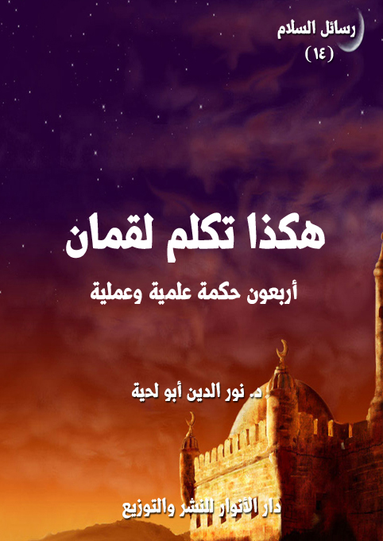

الكتاب: هكذا تكلم لقمان
الوصف: أربعون حكمة علمية وعملية
السلسلة: رسائل السلام
المؤلف: أ.د. نور الدين أبو لحية
الناشر: دار الأنوار للنشر والتوزيع
الطبعة: الأولى، 1440 هـ
عدد الصفحات: 195
ISBN: 978-620-3-85903-4
لمطالعة الكتاب من تطبيق مؤلفاتي المجاني وهو أحسن وأيسر: هنا

التعريف بالكتاب
يحاول هذا الكتاب توضيح الكثير من الحقائق والقيم التي قد يقع الخطأ فيها، بسبب عدم اعتماد الرؤية الكونية التوحيدية التي يدل عليها العقل، كما تدل عليها النصوص المقدسة.
وهو يناقش تلك المغالطات التي تقع فيها أمثال تلك العقول، بطريقة تجمع بين الخطاب العقلي والتأثير العاطفي.. فالكتاب عبارة عن وصايا من أب لابنه، ولا يمكن للأب أن يبلغ وصاياه من دون أن يمزج بين العقل والعاطفة.. فالعاطفة تيسر للعقل استقبال الأفكار، حتى لا يقابلها بالجدل.
وذلك لا يعني ما يُمارس في التأثير الخطابي من الاكتفاء بالتأثير العاطفي المجرد، فمعاذ الله أن تُبلغ الحقائق بعيدة عن أدلتها.. ولكن المراد من ذلك إبعادها عن الجدل الذي يبحث على الانتصار، لا على الوصول إلى الحقيقة.
وهو يعتمد نفس منهج لقمان عليه السلام في موعظته لابنه، والتي وردت في القرآن الكريم.. وورد فيها الكثير من الحقائق التي تم عرضها بطريقة ممتلئة بالحكمة.
ولذلك يحاول إحياء سنة لقمان عليه السلام في الموعظة، حتى ينتهجه الآباء في تربيتهم لأبنائهم، والأساتذة في توجيهاتهم لتلاميذهم وطلبتهم، ذلك أن المناهج الخاطئة في تبليغ الحقائق قد تكون سببا للنفور منها.
هكذا تكلم لقمان (5)
يحاول هذا الكتاب توضيح الكثير من الحقائق والقيم التي قد يقع الخطأ فيها، بسبب عدم اعتماد الرؤية الكونية التوحيدية التي يدل عليها العقل، كما تدل عليها النصوص المقدسة.
وهو يناقش تلك المغالطات التي تقع فيها أمثال تلك العقول، بطريقة تجمع بين الخطاب العقلي والتأثير العاطفي.. فالكتاب عبارة عن وصايا من أب لابنه، ولا يمكن للأب أن يبلغ وصاياه من دون أن يمزج بين العقل والعاطفة.. فالعاطفة تيسر للعقل استقبال الأفكار، حتى لا يقابلها بالجدل.
وذلك لا يعني ما يمارس في التأثير الخطابي من الاكتفاء التأثير العاطفي المجرد، فمعاذ الله أن تُبلغ الحقائق بعيدة عن أدلتها.. ولكن المراد من ذلك إبعادها عن الجدل الذي يبحث على الانتصار، لا على الوصول إلى الحقيقة.
وهو يعتمد نفس منهج لقمان عليه السلام في موعظته لابنه، والتي وردت في القرآن الكريم.. وورد فيها الكثير من الحقائق التي تم عرضها بطريقة ممتلئة بالحكمة.
ولذلك فإن هذا الكتاب يحاول إحياء سنة لقمان في الموعظة، حتى ينتهجه الآباء في تربيتهم لأبنائهم، والأساتذة في توجيهاتهم لتلاميذهم وطلبتهم، ذلك أن المناهج الخاطئة في تبليغ الحقائق قد تكون سببا للنفور منها.
وهو يتميز بتناوله لأكثر المسائل التي لها علاقة بالجوانب المختلفة من الحياة الفكرية والدينية والسياسية والاقتصادية والفنية وغيرها.. والتي على ضوئها جميعا يمكن تشكيل رؤية تساعد على اتخاذ المواقف والقرارات من القضايا المختلفة.
ويتميز بتناول تلك القضايا من زوايا مختلفة تجمع بين الرؤية الواقعية، والرؤية
هكذا تكلم لقمان (6)
المثالية، وتحاول أن ترفع الواقع ليصل إلى عالم المثال الذي دعت إليه رسل الله، وتنزلت به هدايته لخلقه.
وهو يضع لذلك الكثير من المناهج العملية البسيطة التي تيسر تحقيق ذلك التحول من الواقع الآسن إلى الواقع المثالي، الذي تتحقق فيه هداية الله لعباده.
وهو من [الأربعينيات] التي نعتمد فيها عادة على ما يحيط بالمسائل المختلفة المرتبطة بالموضوع، وبطريقة يمكن أن يستفيد منها عامة الناس وخاصتهم، وباختصار شديد.
فالكتاب يحوي أربعين حكمة، كل حكمة خصصت لها مقالة قصيرة، يمكن أن تكون خطبة أو موعظة أو رسالة أو منشورا.. حتى تصل إلى أكبر عدد من القراء، مع العلم أن أكثر ما ورد فيها من معان، وباختصار، ورد مثله أو ما يدل عليه مطولا ومفصلا في كتب أخرى من هذه السلسلة أو غيرها.
هكذا تكلم لقمان (7)
يا بني.. ربما تلومني لأني لم أحدثك من سنين طويلة، بل من آماد ممتدة، وعهود عراها البلى..
لا تلمني يا بني، فأنا لم أكن أتكلم كل تلك الفترة، لأني كنت متفرغا للسماع.. ولا يمكن لأحد أن يجمع بين الكلام والسماع.
نعم يا بني.. فقد كنت أستمع للحياة، وهي تغني أغانيها المطربة أو المحزنة.. وكنت أستمع للأحياء وهم يرقصون على نغماتها.. وقد تلقيت من تلك الرؤية وذلك السماع حكما كثيرة.. فلا يمكن للحكيم أن يتلقى الحكمة إلا بعد أن يدمن الصمت، ويدمن معه الإصغاء، ويدمن معهما الرؤية والاعتبار..
ومع ذلك، فلا يمكن للحكيم أن يظل صامتا، فأعظم الظلم أن نحبس الحكمة بين زوايا أفواهنا وصدورنا.. إننا بذلك نقيدها كما نقيد العصفور الذي خلقه الله حرا طليقا.. بل نقيدها كما نقيد قطرات الغيث، لنحول بينها وبين أن تروي الأرض، وتروي معها ظمأ الإنسان، وجوع الحياة.
بعد كل ذلك الزمن الذي نضجت فيه الحكمة في كياني، وتغلغلت معانيها في وجداني أُذن لي أن أحدثك، كما أذن لي أن أحدثك من قبل..
وسأحدثك عن أشياء كثيرة.. منها بعض ما ذكرته لك من قبل.. ولكني أحتاج الآن إلى صياغة جديدة له.. فلكل زمن أسلوبه في الوعظ، ولكل زمن موسيقاه التي يطرب لها السامعون..
وبما أنك الآن ستنزل إلى زمن غير الذي كنت فيه، وستعيش مع ناس غير الذين كنت تعيش معهم.. فإني أحتاج أن أؤهلك لهذه الحياة الجديدة.. فلا يمكن أن تعيش
هكذا تكلم لقمان (8)
السلام مع الحياة الجديدة، ومع الأحياء الجدد ما لم تحفظ مواعظي وتعيها كما وعيتها أول مرة.
لن أحدثك عن القديم المعاد صياغته فقط.. وإنما سأحدثك معه عن جديد كثير.. جديد يتجدد كل يوم.. فأصخ سمعك لي كل يوم.
فنحن الآن في عصر يختلف كثيرا عن العصر الذي حدثتك فيه أول مرة..
نحن الآن في عصر يملك شيئا اسمه (التلفزيون).. وآخر اسمه (الإنترنت).. وآخر اسمه (الصحافة).. وآخر اسمه (المذياع).. وغيرها كثير.
وكل هذه الأشياء لم تكن موجودة حين وعظتك أول مرة.. ولهذا لم أذكرها لك.. ولو كانت موجودة لذكرتها.. فهي أخطر من أن تخلو موعظتي عنها.
أمام هذه الأشياء الجديدة الغريبة وبين يديها يجثو آلاف آلاف آلاف البشر، بل يركعون جميعا كما يركعون أمام رع وعشتار وأمون واللات والعزى.. وهم يتلقون منها فكرهم وسلوكهم وحياتهم.. وهم يسلمونها في أحيان كثيرة نفوسهم لتتصرف في توجيهها كما تشاء..
ولهذا فإن الكثير منهم نسي مواعظي القديمة.. واستبدلني بدجالين كثيرين.. ولولا ذلك الصياح المتواصل من الحياة الجميلة، ومن أولئك الأحياء الذين لا زالوا يحتفظون بقيم الحياة الجميلة ما كنت حدثتك.. فأصخ سمعك لي.. فإني سأحدثك كما حدثتك أول مرة.
هكذا تكلم لقمان (9)
سألتني ـ بني ـ عن الحكمة، ونعم ما سألت عنه.. فالحكمة ثمرة كل علم، ونتيجة كل بحث، وخلاصة كل فكر.. ومن لم ينل من علمه وبحثه وفكره الحكمة، لم ينل شيئا.. وكان كالذي زرع ولم يحصد، أو حصد ولم يأكل.
فإن أردت أن تحصل عليها، فاشحذ ذهنك، ونشط عقلك، واستعمل كل ما آتاك الله من لطائف.. فالحكمة لا ينالها الكسالى، ولا يتحقق بها المقعدون.. بل هي هدية الله للذين أعملوا عقولهم ولم يعطلوها، وأعملوا جوارحهم، فلم تقعد بهم عن أي خير.
والحكمة ثمرة التأمل العميق الذي لا يستسلم صاحبه لأي هوى، ولا يجري مع أي نزغة، بل يتثبت ويتأنى، إلى أن يظهر الحق.. فلكل حق علامات، ولكل باطل رايات.. ولا يمكن للحكيم أن يستسلم لأي راية، ما لم ير علائم الحق عليها.
والحكمة ثمرة التجربة والتواصل والتعارف والحوار.. فالحكيم ليس ذلك المستكبر الذي لا يقنع إلا بما عنده، بل هو الذي يستفيد من كل رأي، ويضم إلى عقله كل العقول، فلا يقع فيما وقع فيه غيره من الشباك، ولا يلدغ من نفس الجحور التي لدغوا بها.
والحكمة ثمرة الإخلاص والصدق، ذلك أنها هبة من الله، والله لا يهب فضله إلا الصادقين المخلصين الذين تخلصوا من كل أنانياتهم وأهوائهم، فصاروا رموزا للحق، ومصاديق للهدى، ومنارات للسراط المستقيم.
والحكمة ثمرة المحبة.. ذلك أنك لن تصل للحق ما لم تحبه.. فالحب هو الذي يجعلك مثل تلك الصفحة البيضاء التي تتقبل كل ما يكتبه عليها الحبيب.. والله لا يكتب في قلبك الحكمة حتى تمتلئ محبة له، وتفنى به عمن سواه.
هكذا تكلم لقمان (10)
والحكمة ثمرة الاتباع الصادق للذين جعلهم الله وسائط الهدى لعباده.. فيستحيل على الحكمة أن تتنزل على الذين أبوا السجود لآدم.. ذلك أن آدم لم يكن سوى رمز للهداية والكمال.. فمن سجد له تحقق بالكمال، ومن تكبر عليه حصل له ما حصل لإبليس.
والحكمة ثمرة الصمت والسكون.. ذلك أن المضطربين الذين ملأوا الكون صراخا لن يصلوا لشيء.. فأصواتهم تحجب عنهم الحقائق، واضطرابهم يمنع عنهم استقرارها.
هذه ـ بني ـ منابع الحكمة.. فإن شئت أن تكون حكيما، فاعمل بها، ولا تغرنك كثرة العلوم، فالعلم الذي لا ينتج حكمة، ولا يفيد تربية، ولا يثمر ترفعا وسموا، لن يفيدك شيئا.. بل هو الجهل عينه.
وقد روي في الأخبار أن بعضهم صحب بعض المشايخ مدة طويلة، وبعد أن كتب الله لهما الفراق، سأل الشيخ تلميذه: منذ متى صحبتني؟.. فقال التلميذ: منذ ثلاثة وثلاثين سنة.. فقال الشيخ: فماذا تعلمت مني في هذه الفترة؟.. فقال التلميذ: ثماني مسائل.. فقال الشيخ: إنا لله وإنا إليه راجعون ذهب عمري معك ولم تتعلم إلا ثماني مسائل؟! قال التلميذ: يا أستاذ لم أتعلم غيرها ولا أحب أن أكذب.. فقال الأستاذ: هات ما عندك لأسمع.
قال التلميذ: أما الأولى، فإني نظرت إلى الخلق فرأيت كل واحد يحب محبوبا فإذا ذهب إلى القبر فارقه محبوبه، فجعلت الحسنات محبوبي فإذا دخلت القبر دخلت معي.
أما الثانية، فنظرت في قول الله عز وجل: {وَأَمَّا مَنْ خَافَ مَقَامَ رَبِّهِ وَنَهَى النَّفْسَ عَنِ الْهَوَى (40) فَإِنَّ الْجَنَّةَ هِيَ الْمَأْوَى (41)} (النازعات)، فعلمت أن قوله سبحانه وتعالى هو الحق، فأجهدت نفسي في دفع الهوى حتى استقرت على طاعة الله تعالى.
هكذا تكلم لقمان (11)
وأما الثالثة، فنظرت إلى هذا الخلق فرأيت كل من معه شيء له قيمة ومقدار رفعه وحفظه ثم نظرت إلى قول الله عز وجل: {مَا عِنْدَكُمْ يَنْفَدُ وَمَا عِنْدَ اللَّهِ بَاقٍ} (النحل: 96)، فكلما وقع معي شيء له قيمة ومقدار وجهته إلى الله ليبقى عنده محفوظاً.
وأما الرابعة، فنظرت إلى هذا الخلق، فرأيت كل واحد منهم يرجع إلى المال وإلى الحسب والشرف والنسب، فنظرت فيها فإذا هي لا شيء ثم نظرت إلى قول الله تعالى: {إِنَّ أَكْرَمَكُمْ عِنْدَ اللَّهِ أَتْقَاكُمْ} (الحجرات: 13)، فعملت في التقوى حتى أكون عند الله كريماً.
وأما الخامسة، فنظرت إلى هذا الخلق وهم يطعن بعضهم في بعض، ويلعن بعضهم بعضاً، وأصل هذا كله الحسد، ثم نظرت إلى قول الله عز وجل: {نَحْنُ قَسَمْنَا بَيْنَهُمْ مَعِيشَتَهُمْ فِي الْحَيَاةِ الدُّنْيَا} (الزخرف: 32)، فتركت الحسد، وعلمت أن القسمة من عند الله سبحانه وتعالى فتركت عداوة الخلق عني.
وأما السادسة، فنظرت إلى هذا الخلق يبغي بعضهم على بعض، ويقاتل بعضهم بعضاً فرجعت إلى قول الله عز وجل: {إِنَّ الشَّيْطَانَ لَكُمْ عَدُوٌّ فَاتَّخِذُوهُ عَدُوّاً} (فاطر: 6)، فعاديته وحده واجتهدت في أخذ حذري منه لأن الله تعالى شهد عليه أنه عدو لي، فتركت عداوة الخلق غيره.
وأما السابعة، فنظرت إلى هذا الخلق، فرأيت كل واحد منهم يطلب هذه الكسرة، فيذل فيها نفسه، ويدخل فيما لا يحل له، ثم نظرت إلى قوله تعالى: {وَمَا مِنْ دَابَّةٍ فِي الْأَرْضِ إِلَّا عَلَى اللَّهِ رِزْقُهَا} (هود: 6)، فعلمت أني واحد من هذه الدواب التي على الله رزقها، فاشتغلت بما لله تعالى علي وتركت ما لي عنده.
وأما الثامنة، فنظرت إلى هذا الخلق فرأيتهم كلهم متوكلين على مخلوق.. هذا على ضيعته.. وهذا على صحة بدنه.. وكل مخلوق متوكل على مخلوق مثله، فرجعت إلى
هكذا تكلم لقمان (12)
قوله تعالى: {وَمَنْ يَتَوَكَّلْ عَلَى اللَّهِ فَهُوَ حَسْبُهُ} (الطلاق: 3)، فتوكلت على الله عز وجل فهو حسبي.
هذه ـ بني ـ بعض ثمار الحكمة التي قطفها هذا التلميذ النجيب من خلال صحبته لشيخه، فاحرص على أن يكون لك مثلها، أو احرص على أن تزيد عليها، فالعلم الذي لا يطهر نفسك، ولا يسمو بروحك لن يزيدك من حقيقتك إلا بعدا.
وإياك ـ بني ـ أن تتصور ني أحرضك على ترك العلم أو ترك الاستكثار منه.. معاذ الله أن أفعل ذلك.. فالحكمة ثمرة للعلم، وكلما استكثرت منه كثرت لديك ثمار الحكمة.. ولكني أحذرك من أن يكون مرادك من العلم الاستكثار المجرد، فهو لن ينفعك.. بل لا ينفعك منه إلا ما أردت به الحق والخير.. فبهما وحدهما تتحقق بحقيقتك، وبهما وحدهما ترقى إلى مراتب الكمال التي هيئت لك.
هكذا تكلم لقمان (13)
سألتني ـ بني ـ فيما مضى من الأيام والسنين عن الكثير من الشبهات، وقد أجبتك عنها بما أطاق عقلي أن يجيب، ولست أدري هل كانت إجابتي كافية لعقلك أم لم تكن؛ فمن الصعب لعقلي أن يدرك بدقة ما في عقلك، ولا محل الشبهة فيه، ولا المفاتيح التي تحلها.
لذلك أذكر لك شيئا قد ينفعك في إزالة تلك الشبهات من أساسها، ولن تعود حينها بحاجة لي ولا لغيري.. فالله الذي أتاح لتلك الشبهات أن تجد محلا لها في عقلك، أتاح لك كذلك الكثير من الأدوية التي تزيل مادتها، وتطهر عقلك وقلبك منها ومن آثارها، ومن غير مصدر خارجي.
وأول تلك الأدوية أن تعلم مصدر الشبهات.. فإذا عرفته عرفت الأدوية التي تقاومه، فنحن لا يمكننا أن نعرف كيفية مقاومة الداء في أجسادنا ما لم نعرف نوع الجراثيم التي تغزوه، والفيروسات التي تحول بينه وبين التمتع بالصحة.
وقد أخبرنا ربنا بأن المصدر الأكبر للغواية والضلال والشقاء هو إبليس، ذلك الذي يبحث في قلوبنا عن محل ليرسل من خلاله الوساوس والشبهات التي قد نتصور أنها وليدة عقلنا الباحث، بينما هي في الحقيقة ليست سوى إملاءات شيطانية كتبها في قلوبنا.
لقد قال تعالى يصف تهديد الشيطان بتحقيق ذلك: {قَالَ رَبِّ بِمَا أَغْوَيْتَنِي لَأُزَيِّنَنَّ لَهُمْ فِي الْأَرْضِ وَلَأُغْوِيَنَّهُمْ أَجْمَعِينَ (39) إِلَّا عِبَادَكَ مِنْهُمُ الْمُخْلَصِينَ} [الحجر: 39، 40]
فهاتان الآيتان الكريمتان تصفان بدقة كل المنابع التي تصدر منها الشبهات،
هكذا تكلم لقمان (14)
سواء كانت شبهات علمية أو فلسفية أو نفسية أو اجتماعية.. أو لمعت بأي بريق، أو ضمخت بأي عطر.. فهي جميعا وساوس شيطانية، استطاع الشيطان بحيله ودهائه وخبرته بالإنسان أن يحولها إلى أمور مستساغة يمكن لمن لم يستعمل عقله بالطريقة الصحيحة أن تمر عليه، وتؤثر فيه.
والآيتان الكريمتان تبينان أن المنهج الذي اعتمده الشيطان لترسيخ تلك الشبهات هو منهج التزيين والإغواء، وهو لا يعني أن الشيء المزين يحمل أي حقيقة جمالية، ولكنه يعني أن ذلك المزين وضع بصورة بحيث تُقبل عليه العين، أو يقبل عليه الذوق، ثم يقع الإنسان فريسة له بعد ذلك، مثلما يقع المدمن فريسة لذلك الشراب، أو تلك المخدرات التي استعملها مرات عديدة إلى أن صارت متحكمة فيه.
ولذلك أخبر الله تعالى أن من تزيينات الشيطان للمشركين قتل أولادهم، قال تعالى: {وَكَذَلِكَ زَيَّنَ لِكَثِيرٍ مِنَ الْمُشْرِكِينَ قَتْلَ أَوْلَادِهِمْ شُرَكَاؤُهُمْ لِيُرْدُوهُمْ وَلِيَلْبِسُوا عَلَيْهِمْ دِينَهُمْ وَلَوْ شَاءَ اللَّهُ مَا فَعَلُوهُ فَذَرْهُمْ وَمَا يَفْتَرُونَ} [الأنعام: 137]
فمع أن هذه الظاهرة لا تتناسب أبدا مع ما جبل عليه الإنسان من قيم الرحمة والحنان، وخصوصا على الأولاد إلا أن الشيطان عبر أدواته المختلفة، استطاع أن يجعل من ذلك التصرف سلوكا عاديا طبيعيا، أقره المجتمع، وراح يجد من يدافع عنه.
ولا نستغرب هذا، فهناك من راحوا يضعون النظريات العلمية التي تساند التمييز العنصري، أو تحض على العنف والإرهاب وكل أنواع الجرائم.. وكل ذلك بشبهات ينشرونها، سرعان ما تجد العقول التي تصدقها، وتعتقد بما فيها.
وأنت تعرف يا بني ما فعل النازيون والمستعمرون والمجرمون على مدار التاريخ.. فهم لم يتحركوا وفق العقل الإنساني السليم الذي جبلنا الله عليه، وإنما تحركوا وفق تلك التعديلات التي أجراها الشيطان بفعل الوساوس التي يوسوس بها،
هكذا تكلم لقمان (15)
والتزيينات التي يزخرف بها الباطل ليحوله إلى حق.
ولذلك لا تنظر يا بني لتلك التزيينات التي زينت بها الشبهات، ولا الزخارف التي طليت بها، فهي ليست سوى زخارف أملتها الشياطين على أوليائها.. لقد قال الله تعالى يذكر ذلك: {وَكَذَلِكَ جَعَلْنَا لِكُلِّ نَبِيٍّ عَدُوًّا شَيَاطِينَ الْإِنْسِ وَالْجِنِّ يُوحِي بَعْضُهُمْ إِلَى بَعْضٍ زُخْرُفَ الْقَوْلِ غُرُورًا وَلَوْ شَاءَ رَبُّكَ مَا فَعَلُوهُ فَذَرْهُمْ وَمَا يَفْتَرُونَ} [الأنعام: 112]، وقال: {وَإِنَّ الشَّيَاطِينَ لَيُوحُونَ إِلَى أَوْلِيَائِهِمْ لِيُجَادِلُوكُمْ وَإِنْ أَطَعْتُمُوهُمْ إِنَّكُمْ لَمُشْرِكُونَ} [الأنعام: 121]
لذلك أدعوك يا بني بدل أن تجري وراء الشبهات للرد عليها، أن تعيد عقلك إلى وعيه وإنسانيته وفطرته السليمة، لأن بعض من استحوذ الشيطان على عقولهم، صاروا منغلقين تماما، يرون الحجج أمامهم رأي العين، لكنهم لا يبصرونها، لأن الشيطان سد منافذ بصائرهم، وأخرجهم من إنسانيتهم، واستحوذ عليهم.
لقد ذكر الله تعالى ذلك، فقال: {اسْتَحْوَذَ عَلَيْهِمُ الشَّيْطَانُ فَأَنْسَاهُمْ ذِكْرَ اللَّهِ} [المجادلة: 19]، ثم ذكر أن هؤلاء لم يعد فيهم شيء من الإنسانية، وإنما تحولوا تحولا تاما إلا شياطين، فقال: {أُولَئِكَ حِزْبُ الشَّيْطَانِ أَلَا إِنَّ حِزْبَ الشَّيْطَانِ هُمُ الْخَاسِرُونَ} [المجادلة: 19]
ثم ذكر صفاتهم الكبرى التي يعرفون من خلالها، فقال: {إِنَّ الَّذِينَ يُحَادُّونَ اللَّهَ وَرَسُولَهُ أُولَئِكَ فِي الْأَذَلِّينَ} [المجادلة: 20]
فالصفة الكبرى لهؤلاء الذين خرجوا من إنسانيتهم، وتحولوا إلى حزب الشيطان، هو محادة الله ورسوله.. والاعتراض على الله ورسوله.. وسوء الأدب مع الله ورسوله.. وتوهم أن عقولهم أعلم بالحقائق من الله ورسوله..
وهم في الحقيقة يرددون نفس مقولة الشيطان: {أَنَا خَيْرٌ مِنْهُ} [الأعراف: 12]،
هكذا تكلم لقمان (16)
ولكنهم لا يقولونها لآدم عليه السلام، وإنما يقولونها لله ورسوله.
لذلك أنصحك يا بني أن تعيد مداركك إليك، وأن تخلصها من استحواذ الشيطان عليها، لأنك يمكن أن ترى الحقائق من غير بصر، ولا أن تسمعها من غير أذن، وأول ما يفعله الشيطان هو الاستيلاء على هذه المدارك، حتى يصبح الإنسان أضل من الأنعام، كما قال تعالى: {وَلَقَدْ ذَرَأْنَا لِجَهَنَّمَ كَثِيرًا مِنَ الْجِنِّ وَالْإِنْسِ لَهُمْ قُلُوبٌ لَا يَفْقَهُونَ بِهَا وَلَهُمْ أَعْيُنٌ لَا يُبْصِرُونَ بِهَا وَلَهُمْ آذَانٌ لَا يَسْمَعُونَ بِهَا أُولَئِكَ كَالْأَنْعَامِ بَلْ هُمْ أَضَلُّ أُولَئِكَ هُمُ الْغَافِلُونَ} [الأعراف: 179]
هذه يا بني حقيقة كل تلك الشبهات التي كنت توردها علي كل حين.. لذلك أوصيك بأن تترك الانشغال بها، وانشغل بما يبعد الشيطان عنك، ويجعله يهرب بجنوده من احتلاله لمراكز الإدراك فيك.
وقد ذكر القرآن الكريم طريقة ذلك، وهي ذكر الله، لأن الشيطان لا يستحوذ على الإنسان إلا بعد نسيانه لذكر الله، كما قال تعالى: {اسْتَحْوَذَ عَلَيْهِمُ الشَّيْطَانُ فَأَنْسَاهُمْ ذِكْرَ اللَّهِ} [المجادلة: 19]
ولذلك فإن الناسي لله، ليس ناسيا له فقط، وإنما ناسيا لنفسه أيضا، ذلك أنه لا قيام له إلا بالله، ولا حفظ له إلا به، فإذا ابتعد عنه صار غرضا لكل السهام.. وأولها سهام شياطين الإنس والجن، كما قال تعالى: {وَلَا تَكُونُوا كَالَّذِينَ نَسُوا اللَّهَ فَأَنْسَاهُمْ أَنْفُسَهُمْ أُولَئِكَ هُمُ الْفَاسِقُونَ} [الحشر: 19]
ولذلك كان الطريق الصحيح للهرب من الشيطان هو الهرب إلى الله.. {فَفِرُّوا إِلَى اللَّهِ إِنِّي لَكُمْ مِنْهُ نَذِيرٌ مُبِينٌ} [الذاريات: 50]
فلا يمكنك مدافعة الشيطان بنفسك، ولا بعقلك، ولا بحزبك، ولا بأي جهة.. فالشيطان قد توعد أن يأتيك من كل الجهات، حتى تلك الجهات التي تتصور أنها معك
هكذا تكلم لقمان (17)
ضده، قال تعالى: {قَالَ فَبِمَا أَغْوَيْتَنِي لَأَقْعُدَنَّ لَهُمْ صِرَاطَكَ الْمُسْتَقِيمَ (16) ثُمَّ لَآتِيَنَّهُمْ مِنْ بَيْنِ أَيْدِيهِمْ وَمِنْ خَلْفِهِمْ وَعَنْ أَيْمَانِهِمْ وَعَنْ شَمَائِلِهِمْ وَلَا تَجِدُ أَكْثَرَهُمْ شَاكِرِينَ} [الأعراف: 16، 17]
لذلك كان الحل الأجدى لك هو الرجوع إلى الله والفرار إليه، والتوكل عليه، فقد أخبر الله تعالى أنه {لَيْسَ لَهُ سُلْطَانٌ عَلَى الَّذِينَ آمَنُوا وَعَلَى رَبِّهِمْ يَتَوَكَّلُونَ (99) إِنَّمَا سُلْطَانُهُ عَلَى الَّذِينَ يَتَوَلَّوْنَهُ وَالَّذِينَ هُمْ بِهِ مُشْرِكُونَ} [النحل: 99، 100]
وقد كتب بعض المريدين لشيخه يذكر له بعض تلك الوساوس التي كنت تشكو لي منها كل حين، فكتب له شيخه يقول: (لا تشتغل بها.. واشتغل باللّه يردها عنك)
ثم قال له: (لقد غلط في هذا الأمر خلق كثير، واشتغلوا بمن آذاهم، فطال الأذى مع الإثم، ولو أنهم رجعوا إلى اللّه لكفاهم أمرهم ولردهم عنهم)
وقال آخر لمريده: (الشيطان كلب، إن اشتغلت بمقاومته مزق الإهاب وقطع الثياب، وإن رجعت إلى ربك صرفه عنك برفق)
وقال آخر: (إن كان هو يرانا من حيث لا نراه، فاللّه يراه من حيث لا يرى اللّه، فاستعن باللّه عليه)
وقال آخر: (ومن عرف اللّه ذاب الشيطان من نوره فلم يبق يعرف إلا اللّه)
وقال آخر: (نحن قوم لا نعرف الشيطان)، فقيل له: أو ليس قد ذكره اللّه في كتابه؟ قال: (أجل، ولكن اشتغلنا باللّه فكفانا أمره حتى نسيناه)
وقال آخر: (عداوة العدو حقّا هي اشتغالك بمحبة الحبيب حقّا، فإذا اشتغلت بعداوة العدو فاتتك محبة الحبيب ونال عدوك مراده منك)
وهكذا افعل يا بني.. فكلما خطر عليك خاطر سوء، أو وردت عليك شبهة.. اجلس بين يدي الله، واسأله أن يصرفها عنك، وأن يردك إليه ردا جميلا، وأن يصرف
هكذا تكلم لقمان (18)
عنك الذي يريد أن يحجبك عن الله، وعن حقيقته.. وسترى حينها كيف تزال الشبهة، لا بدليل عقلي، ولا بنص نقلي، وإنما بنور يقذفه الله في قلبك ترى به الحقيقة رأي العين.. ولا يمكن لمن يرى شيئا أن يطلب الدليل عليه.
هكذا تكلم لقمان (19)
سألتني ـ بني ـ عن الشهوات، وذكرت لي أنها المصيدة التي أوقع بها الشيطان سهمه من بني آدم، فغواهم وأرداهم وأهلكهم، وأنساهم إنسانيتهم، كما أنساهم ربهم، فتحولوا مثل تلك الشاة التي يجرها الجزار إلى المذبح بحفنة شعير، أو حزمة حشيش.
ثم طلبت مني أن أعطيك الترياق الذي تقضي به عليها، حتى لا يطمع فيك الشيطان وجنوده الذين حولهم إلى صفه، فأصبحوا سدنة لمعبده، وعبيدا لسلطانه.
وكما أوافقك يا بني في حديثك الأول، فإني لا أوافقك في الثاني، ذلك أن محال الشهوات التي استغلها الشيطان ليست سوى تلك اللطائف الجميلة التي زود الله بها روح الإنسان، ليرتقي بها في سلم الكمال.
ولذلك كان القضاء عليها قضاء على حقيقة الإنسان نفسه، ونحن لم نطالب بقتل حقائقنا، وإنما طولبنا بالرقي بها..
نحن لم نُطالب بوقف أجهزة هضمنا عن عملها، لكونها سببا في شهوة المطعم، ولكنا طولبنا بأن نعرف نوع الطعام الذي نأكله، ومواقيت ذلك وآدابه ومقاديره ليتناسب مع إنسانيتنا وكرامتنا وحقيقتنا.. حتى لا تصبح تلك الأجهزة حبالا نخنق بها أنفسنا، ونقضي بها على وجودنا.
وهذا ما يفعله الشيطان الذي يضع أغلاله في أعناق بني آدم عندما لا يحسنون التعامل مع الشهوات، أو عندما يوجهونها خلاف الوجهة التي تقتضيها طبيعتهم.
فالله تعالى وضع فينا الحرص، وجبلنا عليه، لنستعمله في الحفاظ على أنفسنا، وعدم الزج بها في المهالك، ولنستعمله في حفظ من كلفنا بحفظه، وتوفير كل ما يحتاجه له..
هكذا تكلم لقمان (20)
ولذلك كان الحرص وسيلة من وسائل الصلاح وأداء التكاليف، فلا يمكن أن يجاهد نفسه من لم يكن حريصا عليها وعلى مصالحها..
ولكن الحرص نفسه قد يتحول إلى غل يقتل روح الإنسان، مثلما يتحول الطعام إلى سم يقضي عليه.. وذلك إذا خرج عن غايته، وتحول من حرص إلى شره وبخل وأنانية.. حينها لا يكتفي الحريص بتحقيق مصالحه، وإنما يذهب إلى مصالح غيره، ليضمها إلى مصالحه.
ولذلك فإن المشكلة ليست فيما وهبنا الله من طاقات، وإنما في ذلك الاستخدام السيء لها، وقد أشار رسول الله صلى الله عليه وآله وسلم إلى ذلك في بعض مواعظه، فقال: (إنما أخشى عليكم من بعدي ما يفتح عليكم من بركات الأرض)، فقام رجل فقال: يا رسول الله، أويأتي الخير بالشر؟ فقال له رسول الله صلى الله عليه وآله وسلم: (إن الخير لا يأتي إلا بالخير، وإنه كلما ينبت الربيع ما يقتل حبطا أو يلم إلا آكلة الخضر، كلما أكلت حتى إذا امتلأت خاصرتاها، استقبلت الشمس، فثلطت، ثم رتعت، وإن هذا المال خضرة حلوة، ونعم صاحب المسلم لمن أخذه بحقه، فجعله في سبيل الله، واليتامى والمساكين وابن السبيل، ومن لم يأخذه بحقه، فهو كالآكل الذي لا يشبع، ويكون عليه شهيدا يوم القيامة) (1)
وهكذا ـ يا بني ـ كل الشهوات، فمن عرف كيف يتعامل معها ارتقى بها إلى المراتب العليا في الكمال، ومن قصر في ذلك نزلت به إلى الدركات.
ألا ترى أن الحب شيء واحد، ولذته واحدة.. لكن من الناس من يوجهه إلى صور المخلوقين يفنى فيها، ويستغرق في عبوديته لها.. ويتعذب بذلك كل أصناف العذاب، كما قال بعضهم يصف ذلك:
ألا ما الهوى والحب بالشيء هكذا... يذل به طوع اللسان فيوصف
ولكنه شيء قضى الله أنه... هو الموت أو شيء من الموت أعنف
فأوله سقم وآخره ضنى... وأوسطه شوق يشف ويتلف
وروع وتسهيد وهم وحسرة... ووجد على وجد يزيد ويضعف
لكن من الناس من يترفع عن أن يصير مغلولا في سجون الصور، بل يرتقي ببصيرته إلى المصور، ليرى من عوالم الكمال والجمال ما لا يخطر على بال المسجونين في سجون الشهوات الدنية.
وحين يرتقي إلى ذلك يكتشف لذة الحب الحقيقي، ويشرب من كأسه، فتجتمع لديه اللذة من أصفى منابعها، ويتجنب كل ذلك الهم والحسرة التي يعاني منها المستغرقون في الشهوات التي تفرضها عليهم أبصارهم، وتحجبهم بها عن بصائرهم.
والغافلون عندما يرون أولئك المترفعين بشهواتهم، يحزنون عليهم، ويتصورون أنهم يتألمون لذلك، وهم لا يعلمون أنه لا يمكن مقارنة ما هم فيه من لذة وسعادة، بأي لذة أخرى.
وقد قال شاعرهم مقارنا بين تلك اللذات المحدودة القصيرة التي كان يجدها في سجن الأنا، وتلك اللذات الجديدة التي صار يعيشها عندما رحل إلى عالم الحقائق:
كانت لقلبي أهواء مفرقةٌ... فاستجمعت مذ رأتك العين أهوائي
فصار يحسدني من كنت أحسده... وصرت مولى الورى مذ صرت مولائي
تركت للناس دنياهم ودينهم... شغلاً بذكرك يا ديني ودنيائي
وقال آخر معبرا عن ذلك، وعن معاناته مع الشهوات المنغصة، وتنعمه بالشهوات الحقيقية الصافية التي لم تكدرها أيادي الشياطين:
كان يسبى القلب فى كل ليله ثمانون... بل تسعون نفساً وأَرجح
يهيم بهذا ثم يأْلف غيره... ويسلوهم من فوره حين يصبح
وقد كان قلبى ضائعاً قبل حبكم... فكان بحب الخلق يلهو ويمرح
فلما دعا قلبى هواك أَجابه... فلست أَراه عن خبائك يبرح
حرمت الأَمانى منك إِن كنت كاذباً... وإِن كنت فى الدنيا بغيرك أَفرح
وإِن كان شيء فى الوجود سواكم... يقرَّ به القلب الجريح ويفرح
ولهذا كانت معرفة الله والتواصل معه، من أعظم اللذات التي لا يمكن مقارنتها بتلك اللعب التي يشتغل بها الأطفال:
من عرف الله فلم تغنه... معرفة الله فذاك الشقي
ما يصنع العبد بعز الغنى... والعز كل العز للمتقي
ولذلك قال ذلك الصالح: (نحن والله الملوك الأغنياء، نحن الذين قد تعجلنا الراحة في الدنيا، لا نبالي على أي حال أصبحنا وأمسينا إذا أطعنا الله عز وجل)
وقال آخر: (ما تنعم المتنعمون بمثل ذكر الله)
وقال بعضهم لبعض الملوك، عندما طلب منه أن يسأله بعض حاجات الدنيا: (أو تقول لي هذا ولي عبدان هما سيداك)، فقال الملك متعجبا: (ومن هما؟)، قال: (الحرص والهوى، فقد غلبتهما وغلباك، وملكتهما وملكاك)
وطلب بعض المريدين من شيخه أن يوصيه، فقال: (كن ملكا في الدنيا تكن ملكا في الآخرة)، فقال المريد: (وكيف أفعل ذلك؟) فقال: (ازهد في الدنيا تكن ملكا في الآخرة)
هذه وصيتي بني إليك، لتعلم كيف تتعامل مع لطائفك، وترتقي بها إلى تلك العوالم الجميلة التي هيئت لها.. فنحن لم ننزل إلى هذه الأرض، لننغمس في مستنقعاتها، ونذوب في طينها، لنتحول حجارة من حجارتها، وإنما نزلنا إليها لنشم عطر نسيمها، ونهتدي بها إلى عوالم الجمال، بعد أن نتحول إلى أزهار عطرة، فلا يسكن الجنان غير
__________
(1) صحيح البخاري 4/ 26 ح (2842).
هكذا تكلم لقمان (21)
الزهور.. أما الحجارة، فقد أخبر الله تعالى عن محلها، فقال: {فَإِنْ لَمْ تَفْعَلُوا وَلَنْ تَفْعَلُوا فَاتَّقُوا النَّارَ الَّتِي وَقُودُهَا النَّاسُ وَالْحِجَارَةُ أُعِدَّتْ لِلْكَافِرِينَ} [البقرة: 24]
والبشر الذين أدمنوا على الشهوات الدنية، واختلطت بدمائهم وعروقهم، ليسوا أقل قسوة من الحجارة، ذلك أن تلك الشهوات هي الغشاوة التي غشت على بصيرتهم، فلم يروا الحقائق، ولم يشموا عطورها الجميلة.. ولذلك بدل أن يسيروا إلى جنة اللذات الحقيقية، ساروا إلى جهنم اللذات المزيفة.
هكذا تكلم لقمان (22)
يا بني.. لا يمكنك أن تجمع بين دعوتك للحقيقة ودعوتك لنفسك.. ولا دفاعك عن الحقيقة ودفاعك عن نفسك.. فعلامة صدقك مع الحقيقة ذوبانك فيها، وفناؤك فناء تاما في جمالها وكمالها وبهائها بحيث لا ترى غيرها، ولو كان ذلك المرئي نفسك.
ألم تعلم يا بني ما قاله رسول الله صلى الله عليه وآله وسلم لذلك الرجل الذي ذكر له حبه له، وأنه يتجاوز كل شيء إلا نفسه؟
لقد قال له: (لا! والذي نفسي بيده، حتى أكون أحبَّ إليك من نفسك) (1)
أرأيت.. لقد دعاه رسول الله صلى الله عليه وآله وسلم إلى أن يتجاوز في حبه له نفسه أيضا، لأنه لا يمكن أن يجمع أحد بين ذلك الحب المقدس، وحب النفس..
فلا يمكن رؤية الجمال المحمدي ورؤية النفس في وقت واحد..
فرؤية النفس حجاب، والتعلق بها قيد، والركون لها سجن، والانشغال بها وبمطالبها همة دنية تمنع من تلك الرحلة الجميلة التي تطير بها الروح إلى عوالم الكمال المهيأة لها.
يا بني.. لا تظنن أن الفناء عن نفسك، هروب منها، أو تحقير لها، أو نزول بها إلى عوالم العدم المظلمة..
كلا.. فمعاذ الله أن يطلب رسول الله صلى الله عليه وآله وسلم من محبيه أن يفعلوا ذلك..
وإنما الفناء عن النفس ارتقاء بها.. ذلك أنه لا يمكن أن يرتقي أحد، وهو ينظر إلى مرآة نفسه، بكل نرجسية وعشق وإعجاب..
__________
(1) رواه البخاري 6/ 2445 (6257)
هكذا تكلم لقمان (23)
فهل رأيت في الدنيا من وصل إلى الكمال، وهو معجب بنفسه، يجثو أمام محرابها مصليا خاشعا؟
وهل رأيت أحدا ارتقى في مراتب الكمال العلمي والعملي، وهو فرح بما عنده من العلم، مزهو بأعماله، مستغرق في الإعجاب بها؟
كلا.. ومعاذ الله أن تتاح تلك المراتب الرفيعة لمن هذا حاله.. فأول ما يتجاوزه الصديقون أنفسهم، حيث يلقونها في عوالم الفناء، ليرتدوا حلة الحقيقة، ويذوبوا في جمالها.
وحين ذاك تكسر أوانيهم لتظهر معانيهم.. فالأواني حجاب عن المعاني، ولا يمكن أن تصل للمعاني، وأنت متعلق بالأواني.. وأول الأواني نفسك.
لقد قال بعض الحكماء معبرا عن الجرائم التي يرتكبها من ينظر إلى نفسه، وينشغل بها عن النظر للحقيقة والفناء فيها: (أصل كل معصية وغفلة وشهوة الرضا عن النفس، وأصل كل طاعة ويقظة وعفة عدم الرضا منك عنها، ولأن تصحب جاهلا لا يرضى عن نفسه خير لك من أن تصحب عالماً يرضى عن نفسه فأي علم لعالمٍ يرضى عن نفسه؟ وأي جهل لجاهل لا يرضى عن نفسه؟)
هذا ما قاله هذا الحكيم، وهذا ما يقوله عقلك وفطرتك.. فنفسك حجابك.. ولا يمكن أن تصل إلى روحك التي هي محل سرك، وأنت مشغول بالنظر إلى نفسك.
يا بني.. لا تظنن أني أدعوك لأن تفعل ما فعله الرهبان الذين راحوا يعذبون أجسادهم، ليقمعوا أنفسهم.. فمعاذ الله أن أدعوك لتزدري نعم الله عليك، أو تخون أمانة هذا الجسد الذي أودعه الله عندك، فلا يمكن لحياتك أن تستقر أو تستمر وأنت تعذب جسدك..
ما أردت يا بني إلا شيئا واحدا، وهو ألا تنشغل بجسدك ومطالبه، ولا بنفسك
هكذا تكلم لقمان (24)
ومطالبها، فمطالب نفسك لا تنتهي، وقد قال رسول الله صلى الله عليه وآله وسلم: (لو كان لابن آدم واديان من مال، لابتغى لهما ثالثا، ولا يملأ جوف ابن آدم إلا التراب) (1)
ولهذا فإن أول ما تسد به تلك المطالب الدنية هي الترفع للمراقي العالية، التي تجعلك تنظر بسخرية لأولئك الذين يقضون أعمارهم في ملء دلاء أنفسهم المثقوبة، والتي لن تملأها بحار الدنيا.
يا بني.. هل تتصور أن أولئك السحرة الذين آثروا الصلبان على عزة فرعون كانوا ينظرون إلى أنفسهم؟
كلا فلو فعلوا ذلك، لما قالوا لفرعون بتلك العزة الإيمانية: {لَنْ نُؤْثِرَكَ عَلَى مَا جَاءَنَا مِنَ الْبَيِّنَاتِ وَالَّذِي فَطَرَنَا فَاقْضِ مَا أَنْتَ قَاضٍ إِنَّمَا تَقْضِي هَذِهِ الْحَيَاةَ الدُّنْيَا (72) إِنَّا آمَنَّا بِرَبِّنَا لِيَغْفِرَ لَنَا خَطَايَانَا وَمَا أَكْرَهْتَنَا عَلَيْهِ مِنَ السِّحْرِ وَاللَّهُ خَيْرٌ وَأَبْقَى} [طه: 72، 73]
لقد قالوها بكل عزة، وفي مواجهة أكبر طاغوت، لأنهم حينها لم ينظروا إلى نفوسهم وضعفها وشهواتها وقصورها، وإنما كانوا ينظرون لمن هو خير وأبقى، فلذلك استطاعوا أن يتحولوا إلى بركان ثائر، هز أركان الطاغوت.
لذلك لم يكن النظر إلى النفس حجابا عن الحقيقة فقط، بل كان أيضا حجابا عن القيم العظيمة المرتبطة بها..
فالتضحية والإيثار هي أول المطالب التي تطالبك بها القيم.. ولا يمكن لمن يرى نفسه، ويعجب بها، ويدعو لها، ويدافع عنها، أن يقدم أي تضحية، أو أي إيثار، وكيف يفعل ذلك، وهو لا يتقدم ولا يتأخر إلا تنفيذا لمطالبها، ورضوخا لأهوائها.
__________
(1) صحيح البخاري 8/ 92 ح (6436)، مسلم (1808).
هكذا تكلم لقمان (25)
سألتني بني عن الدجال الذي حذر منه كل الأنبياء.. وعن زمانه، وعن الخوارق التي يأتي بها، والبشر الذين يضلهم.
وأنا لا أدعوك لتكف عن سؤالك عنه، ولا لترك الحذر منه، فمعاذ الله أن أتجرأ؛ فأعقب على ما ذكروه، أو أهون منه، أو أحقر من شأنك.
ولكني أنبئك بأن أولئك الأنبياء الذين حذروك من الدجال، الذي قد يدركك زمانه، وقد لا يدركك، حذروك أيضا من دجالين كثيرين لا يخلو منهم عصر من العصور (1)..
ولذلك كان الأهم من السؤال عن الدجال وزمانه والخوارق التي يأتي بها، السؤال عن المسالك التي يسلك بها أولئك الدجالون الكثيرون إلى قلبك ودينك، ليبعدوك عن ربك، وعن حقيقتك.
فاسمع ـ بني ـ لتحذيراتي.. فأنا لم أقلها من عند نفسي، وإنما سمعتها من كلمات الأنبياء والصديقين.. وقرأتها في كلمات ربي المقدسة التي امتلأت بالتحذير منهم، ومن فتنهم.
اسمع يا بني.. إن أول الدجالين، وأخطرهم ذلك الذي يشوه الله في عقلك وقلبك، ويملؤك بالخيالات الفاسدة، فتتوهم الله جرما من الأجرام، أو وثنا من الأوثان.. فتقع في الشرك.. فالله لا تحده الحدود، ولا يحل في مكان، ولا يشبه خلقه بأي وجه من الوجوه.
__________
(1) من الأمثلة على ذلك ما ورد في الحديث من قوله (: (لا تقوم الساعة حتى يقتتل فئتان فيكون بينهما مقتلة عظيمة دعواهما واحدة ولا تقوم الساعة حتى يبعث دجالون كذابون قريبا من ثلاثين كلهم يزعم أنه رسول الله) (رواه البخاري 3609، ومسلم 157، وأبو داود 4333، والترمذي 2218، وأحمد 7187)
هكذا تكلم لقمان (26)
وقد روي أن بعض الصديقين ذكر له بعض ما يقوله الدجالون الذين يتبعون المتشابه، وينشرون الوثنية في أمة رسول الله صلى الله عليه وآله وسلم، فقال: (سبحان من لا يعلم أحد كيف هو إلا هو، {لَيْسَ كَمِثْلِهِ شَيْءٌ وَهُوَ السَّمِيعُ الْبَصِيرُ} [الشورى: 11]،لا يحد ولا يحس ولا يجس ولا تدركه الأبصار ولا الحواس ولا يحيط به شيء ولا جسم ولا صورة ولا تخطيط ولا تحديد) (1)
وقال: (إن الله تعالى لا يشبهه شيء، أي فحشٍ أو خنى أعظمُ من قولٍ من يصف خالق الأشياء بجسم أو صورة أو بخلقة أو بتحديد وأعضاء، تعالى الله عن ذلك علواً كبيراً) (2)
ولذلك احذر بني من هؤلاء.. واعتصم بكتاب الله، فقد تجلى الله تعالى لخلقه في كتابه ليعرفوه.. ولا تبحث عن معرفة الذات، فإنك لن تقدر قدرها.. واكتف بما ذكره ربك من أسمائه الحسنى، وصفاته العليا، ففيها الغنى والكفاية.
ولا تبحث ـ بني ـ عن تلك الأسرار التي لا يطيقها عقلك، فأنت لم تنزل في هذه الدنيا، لتبحث عن أسرار ربك، وإنما نزلت إليها لتطهر نفسك، وتملأها بالأخلاق الرفيعة.. فإذا ما تطهرت، وارتقت، صارت قابلة لتنزل الحقائق من غير جهد منك، فمعرفة الله هبة إلهية، لا تحل إلا في القلوب الطاهرة الممتلئة بالصدق والإخلاص.
واحذر ـ بني ـ بعد هذا من أولئك الدجالين الذين يدعونك لترك العمل، ويملأونك بالأمان الكاذب، فالله تعالى نهانا أن نتعدى حدوده، أو نقصر في تنفيذ عهودنا معه، وتوعدنا بالعذاب إن فعلنا ذلك، وما كان لنا أن نتعدى ما ذكره ربنا، أو نتجاوزه، أو نهون منه.. لقد قال تعالى: {إِنَّ الَّذِينَ يَشْتَرُونَ بِعَهْدِ اللَّهِ وَأَيْمَانِهِمْ ثَمَنًا قَلِيلًا
__________
(1) الكافي 1/ 104.
(2) الكافي 1/ 105.
هكذا تكلم لقمان (27)
أُولَئِكَ لَا خَلَاقَ لَهُمْ فِي الْآخِرَةِ وَلَا يُكَلِّمُهُمُ اللَّهُ وَلَا يَنْظُرُ إِلَيْهِمْ يَوْمَ الْقِيَامَةِ وَلَا يُزَكِّيهِمْ وَلَهُمْ عَذَابٌ أَلِيمٌ} [آل عمران: 77]
وأخبر أن الدجالين من هذه الأمة الذين يملأونك بالغرور الكاذب، لا يختلفون عن أولئك الدجالين من أهل الأديان الأخرى، والذين كذبوا على أقوامهم، {وَقَالُوا لَنْ تَمَسَّنَا النَّارُ إِلَّا أَيَّامًا مَعْدُودَةً} [البقرة: 80]، فرد الله تعالى عليهم بقوله: {أَتَّخَذْتُمْ عِنْدَ اللَّهِ عَهْدًا فَلَنْ يُخْلِفَ اللَّهُ عَهْدَهُ أَمْ تَقُولُونَ عَلَى اللَّهِ مَا لَا تَعْلَمُونَ} [البقرة: 80]، ثم أخبر عن قانون الجزاء والعقوبة الذي شرعه الله لخلقه جميعا، فقال: {بَلَى مَنْ كَسَبَ سَيِّئَةً وَأَحَاطَتْ بِهِ خَطِيئَتُهُ فَأُولَئِكَ أَصْحَابُ النَّارِ هُمْ فِيهَا خَالِدُونَ (81) وَالَّذِينَ آمَنُوا وَعَمِلُوا الصَّالِحَاتِ أُولَئِكَ أَصْحَابُ الْجَنَّةِ هُمْ فِيهَا خَالِدُونَ} [البقرة: 81، 82]
ولذلك إذا صحبت شخصا، فحولك من الطاعة إلى المعصية، أو من الذكر إلى الغفلة، أو من العمل إلى الكسل، فاعلم أنه دجال.. فالعارف بربه من أكثر الناس خشية لله، وعبودية له، وقد قال تعالى في وصفهم: {اللَّهُ نَزَّلَ أَحْسَنَ الْحَدِيثِ كِتَابًا مُتَشَابِهًا مَثَانِيَ تَقْشَعِرُّ مِنْهُ جُلُودُ الَّذِينَ يَخْشَوْنَ رَبَّهُمْ ثُمَّ تَلِينُ جُلُودُهُمْ وَقُلُوبُهُمْ إِلَى ذِكْرِ اللَّهِ ذَلِكَ هُدَى اللَّهِ يَهْدِي بِهِ مَنْ يَشَاءُ وَمَنْ يُضْلِلِ اللَّهُ فَمَا لَهُ مِنْ هَادٍ} [الزمر: 23]
فهؤلاء الذين ترتعش قلوبهم، وهم يقرؤون كتاب الله، هم الذين يفهمون مقاصد كلام ربهم، لأنه لا يفهمها ذلك الدجال المتاجر بها، وإنما يفهمها من امتلأ بالإيمان بالله وتعظيمه ومحبته وخشيته، فلذلك لا يتحرك أي حركة إلا وكان الله دليله عليها.
واحذر ـ بني ـ بعد هذا من أولئك الذين يتبعون ما تشابه من الكتاب، ويتركون محكمه.. أولئك الذين تركوا الحقائق الجلية، وراحوا يجادلون في الألفاظ والمعاني، وملأوا دينهم بالفتنة والزيغ، أولئك الذين حجبوا عن كلام ربهم، لأنهم ملأوه بالجدل
هكذا تكلم لقمان (28)
والخصومة، لقد قال تعالى في وصفهم: {هُوَ الَّذِي أَنْزَلَ عَلَيْكَ الْكِتَابَ مِنْهُ آيَاتٌ مُحْكَمَاتٌ هُنَّ أُمُّ الْكِتَابِ وَأُخَرُ مُتَشَابِهَاتٌ فَأَمَّا الَّذِينَ فِي قُلُوبِهِمْ زَيْغٌ فَيَتَّبِعُونَ مَا تَشَابَهَ مِنْهُ ابْتِغَاءَ الْفِتْنَةِ وَابْتِغَاءَ تَأْوِيلِهِ وَمَا يَعْلَمُ تَأْوِيلَهُ إِلَّا اللَّهُ وَالرَّاسِخُونَ فِي الْعِلْمِ يَقُولُونَ آمَنَّا بِهِ كُلٌّ مِنْ عِنْدِ رَبِّنَا وَمَا يَذَّكَّرُ إِلَّا أُولُو الْأَلْبَابِ} [آل عمران: 7]
وهكذا يا بني احذر من أولئك الدجالين الذين يملأون قلبك أحقادا على المسلمين أو غيرهم، فمعاذ الله أن يجتمع الحقد مع الإيمان في محل واحد.. فالإيمان طمأنينة وسلام ومحبة.. ومن دعاك إلى الحقد دعاك إلى الكفر والضلالة.
واحذر ـ بني ـ من أولئك {الَّذِينَ فَرَّقُوا دِينَهُمْ وَكَانُوا شِيَعًا كُلُّ حِزْبٍ بِمَا لَدَيْهِمْ فَرِحُونَ} [الروم: 32].. أولئك الطائفيين الذين تركوا الدعوة إلى الله ورسوله والقيم النبيلة، وراحوا يدعونك إلى أنفسهم، وشيوخهم..
وأول علاماتهم دعوتك للصراع مع المسلمين، وتكفيرهم، وقتلهم، وملأ القلوب حقدا عليهم.. فكل من دعاك إلى ذلك شيطان.
ولذلك كان من أول علامات الصديقين دعوتك إلى الوحدة بين المسلمين، والسلام بين العالمين.. فالله تعالى لم يخلقنا مختلفين ليصارع بعضنا بعضا، وإنما خلقنا كذلك ليعرف بعضنا بعضا، ويستفيد بعضنا من بعض.
وهكذا، احذر ـ بني ـ من أولئك الدجالين الذين يملأونك بالخرافة والدجل والشعوذة.. فدين الله دين علم، ومن اعتقد بأن العلم يخالف الدين فإنه جاهل بكليهما.. فالعلم يعرفك بخلق الله، وسننه في كونه.. والدين يعرفك بشريعة الله، وسننه في الحياة.. وكلاهما يخدم الآخر.. بل كلاهما دين.. وكلاهما علم.
وهكذا، احذر ـ بني ـ من أولئك الدجالين الذين يتسابقون إلى وسائل الإعلام، وينشرون صورهم في كل محل، فهؤلاء لا يدعونك إلى الله، وإنما يدعونك إلى أنفسهم،
هكذا تكلم لقمان (29)
فأول علامات العالم فناؤه عن نفسه بالحق الذي يحمله.. ولذلك يمتلئ خجلا إن ذكر في المجالس.. لأنه لم يدع إلى ذكر اسمه، وإنما دعا إلى ذكر اسم الله.
هذه ـ بني ـ بعض صفات الدجالين.. فاحفظها.. واحذر من أن يتسللوا إليك، وإلى قلبك وعقلك.. فدينك رأسمالك، وبه نجاتك وسعادتك، فلا تسلمه إلا لمن تثق في صدقه وإخلاصه وتقواه.
فإن فعلت ذلك أمنت من شر كل الدجالين.. ليس الذين يعاصرونك فقط.. وإنما من جميعهم حتى من ذلك الذي لا يزال يختبئ في عوالم الغيب، ينتظر من رسله الصغار أن يمهدوا له العقول والقلوب، لينشر فتنته الكبرى في الأرض.
هكذا تكلم لقمان (30)
سألتني بني عن الأماني.. وقد ذكرت لك أنها ثنتان.. أولاهما مملوءة بالكذب والدجل والخرافة، لأنه يغذيها الشيطان، ويسقيها الهوى، ويربيها الكذب على النفس.
وأما الثانية، فمملوءة بالصدق والعقلانية والحقيقة، لأنه يغذيها الله، ويسقيها العقل، ويربيها الصدق والوفاء.
أما أولاهما، فتلك التي ذكرها الله تعالى، وحذر منها، فقال: {لَيْسَ بِأَمَانِيِّكُمْ وَلَا أَمَانِيِّ أَهْلِ الْكِتَابِ مَنْ يَعْمَلْ سُوءًا يُجْزَ بِهِ وَلَا يَجِدْ لَهُ مِنْ دُونِ اللَّهِ وَلِيًّا وَلَا نَصِيرًا} [النساء: 123]
وهي تخاطب كل البشر وتدعوهم لعدم الكذب على أنفسهم، فلن ينفعهم عند الله إلا السير وفق السنن التي رتبها، والنظم التي وضعها.. لا السنن التي عجنوها بأهوائهم، ورتبوها بعقولهم، ثم راحوا يفرضونها على الله، وكأن الله تعالى في عزه عبد من عبيدهم أو خادم من خدمهم.
مع أنهم هم أنفسهم يترفعون أن يتأمر عليهم أحد فيما يملكون، أو يتدخل في الشؤون التي يرونها خاصة بهم، والتي يعتقدون ملكيتهم لها، مع أنها ليست ملكية حقيقية، بل هي مجرد إعارة سرعان ما تخرج من أيديهم.
وفوق ذلك، فإن العقول كلها تسلم أنه لا يملك وضع قوانين الجزاء والعقوبة إلا صاحب الملك والحكم والأمر، وهل هناك مزاحم لله في ملكه أو حكمه أو أمره، حتى يضع معه القوانين، أو يقترح عليه ما يهوى، وما لا يهوى؟
والعقول كلها تسلم أن من أحيا أرضا مواتا فهي له، ومن اخترع شيئا نال براءة اختراعه، ولا يحق لأحد أن يشاركه فيه.. وهكذا الأمر مع هذه الأكوان التي لم تكن
هكذا تكلم لقمان (31)
لتوجد لولا الله.. فالله باريها.. وما كانت لتحيا.. فالله محييها.. وما كانت لتنال أرزاقها.. فالله هو الرزاق ذو القوة المتين.
ولذلك كان العقل السليم داعية للبحث عن قوانين هذا الإله المبدع المحيي الرزاق.. لاتباعها بدقة، والثقة فيها ثقة مطلقة.. ذلك أنه يستحيل أن يبدع كل هذا الإبداع، ويفيض كل هذه الفيوضات، ثم يقصر بعد ذلك في وضع القوانين التي تناسبها.. وهو نفسه الذي وضع قوانين الذرة والخلية والمجرة وكل شيء.
لذلك كان الهرب من الله إلى النفس، كالهرب من السهول والتلال المملوءة بأصناف الأزهار والثمار.. إلى الفيافي القاحلة المملوءة بالحيات والعقارب.
والذي يفعل ذلك.. ثم يرجو النجاة والفوز.. يكون صاحب أماني كاذبة.. فالأزهار لا تنبت في الفيافي الجرداء.. وإنما تنبت في الأراضي الطيبة اللينة الهينة.. التي يتعاهدها أصحابها بالسقي كل حين.
لقد قال الشاعر عن ذلك الغرور الذي يصيب هؤلاء:
ترجو النجَاة وَلم تسلك مسالكها... إِن السَّفِينَة لَا تجْرِي على اليبس
وصدق في ذلك، فسنة الله تعالى في السفن ألا تجري إلا في البحار والأنهار.. والعقول التي تريدها أن تجريها في الجبال والتلال عقول واهمة، لا تعيش إلا في الخيال.
لذلك كان من مقتضى العقل والحكمة أن نتعامل مع الملكوت بنفس تعاملنا مع الملك.. ونتعامل مع قوانين الآخرة بنفس تعاملنا مع قوانين الدنيا، حتى لا نقع في حبال الأوهام الكاذبة.
وحينها يمكننا أن نتمنى الأماني الصادقة التي يصدقها الحال والعمل.. فالفلاح الذي يحرث الأرض، ثم يزرعها، ثم يسقيها، ثم يتعاهدها بكل ما تحتاجه من صنوف الرعاية هو الوحيد الذي يحق له أن يتمنى رؤية الثمار، والاستفادة منها.
هكذا تكلم لقمان (32)
أما ذلك الكاذب الذي ينظر إلى الأرض، ويتمنى أن تخرج له خيرها من غير أن يبذل أي جهد، ولا أن يقدم أي عمل، فهو كاذب على نفسه، وعلى ربه.. فالله الرزاق هو نفسه الذي أمرنا ببذل الجهد، حتى ننال الثمار التي نرجوها، وفي كل المجالات.
وقد قال مبينا سبل الهداية، وأنها لا تنال إلا بالمجاهدة: {وَالَّذِينَ جَاهَدُوا فِينَا لَنَهْدِيَنَّهُمْ سُبُلَنَا وَإِنَّ اللَّهَ لَمَعَ الْمُحْسِنِينَ} [العنكبوت: 69]، فقد رتب الهداية على المجاهدة، ولا يمكن لأحد نائم وكسول أن ينال أجر المجاهدين.
ولذلك كان أول ما أمر به رسول الله صلى الله عليه وآله وسلم هو القيام، لأن القاعد لا يمكن أن يفعل شيئا، قال تعالى: {يَاأَيُّهَا الْمُزَّمِّلُ (1) قُمِ اللَّيْلَ إِلَّا قَلِيلًا} [المزمل: 1، 2]، وقال: {يَاأَيُّهَا الْمُدَّثِّرُ (1) قُمْ فَأَنْذِرْ (2) وَرَبَّكَ فَكَبِّرْ (3) وَثِيَابَكَ فَطَهِّرْ (4) وَالرُّجْزَ فَاهْجُرْ (5) وَلَا تَمْنُنْ تَسْتَكْثِرُ (6) وَلِرَبِّكَ فَاصْبِرْ} [المدثر: 1 - 7]
ولذلك فإن الذي لا يقوم، بل يظل متدثرا، ومتزملا لن ينال شيئا.. ولهذا بذل رسول الله صلى الله عليه وآله وسلم كل ما أوتي من طاقة، وتحرك في كل المجالات إلى أن أدى الرسالة التي وكلت إليه أحسن أداء.
ومع ذلك كله كان يكثر من الاستغفار، لاستشعاره التقصير في حق الله، وكان يردد كل حين:، وهذا من كمال عبوديته، وعظم مقام الألوهية عنده، وفي هذا كان يقول: (إنه ليغان على قلبي، وإني لاستغفر الله في اليوم مائة مرة) (1)، وكان يقول: (يا أيها الناس توبوا إلى ربكم، فإني أتوب إلى الله عز وجل في اليوم مائة مرة) (2)
بل إن الله تعالى أمره أن يقول بعد ذلك كله: {قُلْ مَا كُنْتُ بِدْعًا مِنَ الرُّسُلِ وَمَا أَدْرِي مَا يُفْعَلُ بِي وَلَا بِكُمْ إِنْ أَتَّبِعُ إِلَّا مَا يُوحَى إِلَيَّ وَمَا أَنَا إِلَّا نَذِيرٌ مُبِينٌ} [الأحقاف:
__________
(1) صحيح مسلم 4/ 2075 ح (2702)
(2) رواه مسلم (2702) (42)، والنسائي في عمل اليوم والليلة (446) و(447) وغيرهما.
هكذا تكلم لقمان (33)
9]، فالآية الكريمة تنص على أن رسول الله صلى الله عليه وآله وسلم كان يكل علم مصيره إلى الله تعالى.
بل ورد في الحديث الشريف ما يدل على هذا، فعن أم العلاء أنها قالت بعد وفاة عثمان بن مظعون ـ وهو من الصحابة الأوائل الذين ثبتوا مع رسول الله صلى الله عليه وآله وسلم في كل المحن التي مر بها ـ: (رحمة اللّه عليك أبا السائب شهادتي عليك، لقد أكرمك اللّه تعالى)، فقال لها رسول اللّه صلى الله عليه وآله وسلم مصححا وموجها: (وما يدريك أن الله أكرمه؟)، فقالت: (لا أدري بأبي أنت وأمي يا رسول الله)، فقال رسول الله صلى الله عليه وآله وسلم: (أما عثمان فقد جاءه والله اليقين، وإني لأرجو له الخير، والله ما أدري وأنا رسول الله ما يفعل به)، قالت: فوالله لا أزكي أحدا بعده أبدا، وأحزنني ذلك، قالت: فنمت، فأريت لعثمان عينا تجري، فجئت إلى رسول الله صلى الله عليه وآله وسلم، فأخبرته، فقال: (ذاك عمله) (1)
ثم يأتي بعد ذلك أصحاب الأماني الكاذبة ليوهموا الناس أن الأمر يسير، وأنه ليس عليهم شيء.. بل بمجرد أن يخرجوا من هذه الدنيا يدخلون الجنان، من غير أن يبذلوا أي جهد في غرس أشجارها، أو بناء قصورها، أو تنقية أرضها.
مع أن الجنة ليست سوى ثمرة للأعمال.. فمن لم يعمل في دنياه لم يجد في آخرته.. وقد ذكر الله تعالى ذلك، وبين قوانينه، فقال: {يَوْمَئِذٍ يَصْدُرُ النَّاسُ أَشْتَاتًا لِيُرَوْا أَعْمَالَهُمْ (6) فَمَنْ يَعْمَلْ مِثْقَالَ ذَرَّةٍ خَيْرًا يَرَهُ (7) وَمَنْ يَعْمَلْ مِثْقَالَ ذَرَّةٍ شَرًّا يَرَهُ (8)} [الزلزلة: 6 - 8]
هذه نصيحتي إليك، ولأن تلقى قوما يخوفونك حتى تجد الأمان، خير من أن تلقى قوا يؤمنونك حتى تجد المخافة..
فاعمل صالحا ـ يا بني ـ في دنياك، واستغفر الله من التقصير، وخذ العبرة بذلك الطاهر الذي قدم كل شيء لله، لكنه عندما سأل الله في عرفات قال والدموع تنهمر من
__________
(1) صحيح البخاري 3/ 181 ح (2687)
هكذا تكلم لقمان (34)
عينيه: (يا أسمع السامعين، ويا أبصر الناظرين، ويا أسرع الحاسبين، ويا أرحم الراحمين، صل على محمد وآل محمد، وأسألك اللهم [إلهي] حاجتي التي إن أعطيتنيها لم يضرني ما منعتني، وإن منعتنيها لم ينفعني ما أعطيتني، أسألك فكاك رقبتي من النار) (1)
ولا تكن كأولئك المغرورين الذين وزعوا على أنفسهم وأصحابهم قصور الجنة وجنانها وأنهارها، ووزعوا على أعدائهم دركات جهنم وحرها وزمهريرها، من غير سلطان، سوى تلك الادعاءات الكاذبة والأماني الزائفة.
وقد أخبر الله تعالى عن انكشاف الحقيقة لهم في الآخرة، فقال: {وَقَالُوا مَا لَنَا لَا نَرَى رِجَالًا كُنَّا نَعُدُّهُمْ مِنَ الْأَشْرَارِ (62) أَتَّخَذْنَاهُمْ سِخْرِيًّا أَمْ زَاغَتْ عَنْهُمُ الْأَبْصَارُ (63) إِنَّ ذَلِكَ لَحَقٌّ تَخَاصُمُ أَهْلِ النَّارِ (64)} [ص: 62 - 64]
هذه وصيتي ـ بني ـ إليك، فاحفظها.. فهي ليست سوى شرح لكلمات ربك المقدسة، والتي وضع رسول الله صلى الله عليه وآله وسلم قانونا جامعا لها، فقال: (الكيِّسُ من دان نفسه وعمل لما بعد الموت، والأحمق من أتبع نفسه وهواها وتمنى على الله الأماني) (2)
__________
(1) من دعاء الإمام الحسين في عرفة، إقبال الأعمال ص: 52.
(2) سنن الترمذي 4/ 219 ح (2459)
هكذا تكلم لقمان (35)
رأيتك ـ بني ـ وأنت تمسك كتابا ذكرت لي أنه من كتب العرفان.. وقد ملأني ذلك سرورا، كما ملأني مخافة.. وأنا أحب أن أذكر لك في هذه الوصية ما سرني من فعلك، وما خشيت عليك منه..
أما ما سرني، فهو اهتمامك بمعرفة الله تعالى، وبحثك عنها، فليس في الوجود ما هو أغلى وأعز منها، وليس في الوجود كذلك زهد أعظم من الزهد فيها..
ولذلك كان الاهتمام بها علامة اكتمال العقل، وترقي الروح.. وقد روي أن موسى عليه السلام قال: (يا رب! أي العباد أكثر حسنة، وأرفع عندك درجة؟)، فقال الله له: (أعلمهم بي)
و روي أن اللّه تعالى أوحى إلى داود عليه السلام: (يا داود! تعلم العلم النافع)، فقال: يا إلهي! وما العلم النافع؟ قال: (أن تعرف جلالي، وعظمتي، وكبريائي، وكمال قدرتي على كل شي ء، فإن هذا الذي يقربك إليّ، وإني لا أعذر بالجهالة من لقيني)
ولذلك أمرنا الله تعالى بأن نبحث عنه، ونتعرف عليه في كل شيء، حتى لا نجهله في شيء، فقال: {فَاعْلَمْ أَنَّهُ لَا إِلَهَ إِلَّا اللَّهُ وَاسْتَغْفِرْ لِذَنْبِكَ وَلِلْمُؤْمِنِينَ} [محمد: 19]، وقال: {شَهِدَ اللَّهُ أَنَّهُ لَا إِلَهَ إِلَّا هُوَ وَالْمَلَائِكَةُ وَأُولُو الْعِلْمِ قَائِمًا بِالْقِسْطِ لَا إِلَهَ إِلَّا هُوَ الْعَزِيزُ الْحَكِيمُ} [آل عمران: 18]
أما ما خشيت عليك منه؛ فهو أن تتوهم أنك بقراءة كتب العرفان تصل إلى معرفة الله، وهيهات.. فالكتب قد تدلك على الطريق، أو قد تقطع عنك بعض العقبات، أو قد تفيدك ببعض التجارب، أو قد تحل لك بعض الإشكالات، ولكنها لن توصلك وحدها إلى الطريق..
هكذا تكلم لقمان (36)
فطريق معرفة الله يحتاج منك إلى مجاهدات كثيرة، فقد ربط الله بين الهداية إليه وبين المجاهدة، فقال: {وَالَّذِينَ جَاهَدُوا فِينَا لَنَهْدِيَنَّهُمْ سُبُلَنَا وَإِنَّ اللَّهَ لَمَعَ الْمُحْسِنِينَ} [العنكبوت: 69]
والمجاهدة تستدعي منك مراعاة قلبك، حتى لا يمتلئ بالأغيار، فالله غيور لا يرضى بالشريك.. وتستدعي الصفاء، فالله كريم، ولا يحل الكريم في البيت المملوء بالدنس.. وتستدعي الهمة العالية، فهي السلم الوحيد الذي ترتقي به إلى الله، وقد وصف الله بها الصادقين من عباده، فقال: {وَلَا تَطْرُدِ الَّذِينَ يَدْعُونَ رَبَّهُمْ بِالْغَدَاةِ وَالْعَشِيِّ يُرِيدُونَ وَجْهَهُ} [الأنعام: 52]
وتستدعي بعد ذلك كله وقبله الذكر الكثير.. فالغافل لن يصل إلى شيء.. ولهذا وصف الله عباده الصالحين بكثرة ذكرهم لله، فقال: {وَالذَّاكِرِينَ اللَّهَ كَثِيرًا وَالذَّاكِرَاتِ} [الأحزاب: 35]
وتستدعي الترفع عن الأكوان، لأن حضرة الله حضرة مقدسة، ولا يصح أن ندخل إليها بنعال الأكوان.. وقد سئل بعض الحكماء: كم بين الحق والعبد؟، فقال: (أربعة أقدام: يرفع قدما من الدنيا، وقدما من الخلق، وقدما من النفس، وقدما من الآخرة؛ فإذا هو عند اللّه)
ولهذا قد لا تحتاج يا بني للكثير مما تذكره تلك الكتب، ذلك أن العمدة على الإرادة والهمة العالية والصفاء، وقد سأل بعض المريدين شيخه أن يعطيه الاسم الأعظم الذي يختصر به الطريق إلى معرفة الله، فقال له: (ليس لاسم اللّه حد محدود، ولكنه فراغ قلبك لوحدانيته، وترك الالتفات إلى غيره؛ فإذا كنت كذلك، فخذ أي اسم شئت، تسير به من المشرق إلى المغرب، في ساعة ثم تجي ء)
وإياك يا بني من أن تقع فيما يقع فيما نص عليه قوله تعالى: {وَمَا أَرْسَلْنَا مِنْ قَبْلِكَ
هكذا تكلم لقمان (37)
مِنْ رَسُولٍ وَلَا نَبِيٍّ إِلَّا إِذَا تَمَنَّى أَلْقَى الشَّيْطَانُ فِي أُمْنِيَّتِهِ فَيَنْسَخُ اللَّهُ مَا يُلْقِي الشَّيْطَانُ ثُمَّ يُحْكِمُ اللَّهُ آيَاتِهِ وَاللَّهُ عَلِيمٌ حَكِيمٌ} [الحج: 52]
ذلك أن الشيطان لن يترك الحق مجردا عن الباطل، بل هو يسعى لخلطه به، حتى يكون ذلك فتنة.. ولذلك فإنه كما أن في تلك الكتب عسل كثير، فإن فيها أيضا من السموم ما قد يقتلك.. فاجتهد في أن تستفيد من عسلها، وإياك وسمها.
ولن تتحصن من سمها حتى تتحصن بكتاب ربك، وهدي نبيك وورثته الذين أوصى بهم، فهم الحكم الذي يرد إليه كل شيء، وقد قال بعض المشايخ: (إن النكتة لتقع في قلبي من جهة الكشف فلا أقبلها إلا بشاهدي عدل من الكتاب والسنة)
وقال آخر: (كل حقيقة لا تشهد لها الشريعة فهي زندقة.. طِرْ إِلى الحق عز وجل بجناحي الكتاب والسنة، ادخل عليه ويدك في يد الرسول صلى الله عليه وآله وسلم) (1)
وقال آخر: (إِذا عارض كشفُك الصحيح الكتابَ والسنة فاعمل بالكتاب والسنة ودع الكشف، وقل لنفسك: إِن الله تعالى ضمن لي العصمة في الكتاب والسنة، ولم يضمنها لي في جانب الكشف والإِلهام) (2)
ولهذا اشتد الصالحون على أصحاب الطامات والدعاوى الذين لا يعطون للربوبية حقها من التعظيم، فاحذر هؤلاء، فهم مستدرجون، وليسوا عارفين، فأول علامات العارف أن يتحقق بما وصف الله تعالى به عباده حين قال: {وَعِبَادُ الرَّحْمَنِ الَّذِينَ يَمْشُونَ عَلَى الْأَرْضِ هَوْنًا وَإِذَا خَاطَبَهُمُ الْجَاهِلُونَ قَالُوا سَلَامًا (63) وَالَّذِينَ يَبِيتُونَ لِرَبِّهِمْ سُجَّدًا وَقِيَامًا (64) وَالَّذِينَ يَقُولُونَ رَبَّنَا اصْرِفْ عَنَّا عَذَابَ جَهَنَّمَ إِنَّ عَذَابَهَا كَانَ غَرَامًا (65) إِنَّهَا سَاءَتْ مُسْتَقَرًّا وَمُقَامًا (66) وَالَّذِينَ إِذَا أَنْفَقُوا لَمْ يُسْرِفُوا
__________
(1) الفتح الرباني والفيض الرحماني، ص 29.
(2) انظر: إِيقاظ الهمم، (2/ 302)
هكذا تكلم لقمان (38)
وَلَمْ يَقْتُرُوا وَكَانَ بَيْنَ ذَلِكَ قَوَامًا (67)} [الفرقان: 63 - 67]
وقال في وصف المخبتين: {وَبَشِّرِ الْمُخْبِتِينَ (34) الَّذِينَ إِذَا ذُكِرَ اللَّهُ وَجِلَتْ قُلُوبُهُمْ وَالصَّابِرِينَ عَلَى مَا أَصَابَهُمْ وَالْمُقِيمِي الصَّلَاةِ وَمِمَّا رَزَقْنَاهُمْ يُنْفِقُونَ (35)} [الحج: 34، 35]
وقال في وصف المفلحين: {قَدْ أَفْلَحَ الْمُؤْمِنُونَ (1) الَّذِينَ هُمْ فِي صَلَاتِهِمْ خَاشِعُونَ (2) وَالَّذِينَ هُمْ عَنِ اللَّغْوِ مُعْرِضُونَ (3) وَالَّذِينَ هُمْ لِلزَّكَاةِ فَاعِلُونَ (4) وَالَّذِينَ هُمْ لِفُرُوجِهِمْ حَافِظُونَ (5) إِلَّا عَلَى أَزْوَاجِهِمْ أَوْ مَا مَلَكَتْ أَيْمَانُهُمْ فَإِنَّهُمْ غَيْرُ مَلُومِينَ (6) فَمَنِ ابْتَغَى وَرَاءَ ذَلِكَ فَأُولَئِكَ هُمُ الْعَادُونَ (7) وَالَّذِينَ هُمْ لِأَمَانَاتِهِمْ وَعَهْدِهِمْ رَاعُونَ (8) وَالَّذِينَ هُمْ عَلَى صَلَوَاتِهِمْ يُحَافِظُونَ (9) أُولَئِكَ هُمُ الْوَارِثُونَ (10) الَّذِينَ يَرِثُونَ الْفِرْدَوْسَ هُمْ فِيهَا خَالِدُونَ (11)} [المؤمنون: 1 - 11]
فاجعل هذه الآيات نصب عينيك.. فمعرفة الله أعظم من أن تحل في القلوب المدنسة بالأهواء والكبر والتعالي والغرور، وقد قال رسول الله صلى الله عليه وآله وسلم: (إني لأعلمهم بالله وأشدهم له خشية) (1)
__________
(1) رواه البخاري (6101)، ومسلم (2356)
هكذا تكلم لقمان (39)
رأيتك ـ يا بني ـ حزينا على موت ذلك الصديق الذي كان يملأ حياتك بالسعادة.. وأنا لا أريد أن أمسح ذلك الحزن الجميل الذي كسا وجهك، فملأه بالبراءة والصدق والوفاء، ولكني أريد أن أذكر لك الحقائق التي ترتبط بالموت.. والتي نتألم ونحزن عندما لا نستعملها أحوج ما نكون إليها.
فليس الموت يا بني ذلك الشبح الذي صورته لنا الأوهام، أو تلك العقول التي لم تتطهر في مطهرة الوحي المقدس.. وإنما هو شيء آخر أجمل بكثير.
إنه موعد لقاء الله.. وهل هناك قلب أو عقل أو روح لا تشتاق لأجمل لقاء لها في حياتها جميعا.. فبالموت تزاح كل تلك العلائق والعوائق والحجب التي كانت تفصل الروح عن بارئها، وتملؤها بالكدورات والمنغصات.
ولهذا تحدى الله تعالى أولئك الذين زعموا كاذبين أنهم أولياء الله ومحبوه، حيث قال لهم وعنهم: {قُلْ يَاأَيُّهَا الَّذِينَ هَادُوا إِنْ زَعَمْتُمْ أَنَّكُمْ أَوْلِيَاءُ لِلَّهِ مِنْ دُونِ النَّاسِ فَتَمَنَّوُا الْمَوْتَ إِنْ كُنْتُمْ صَادِقِينَ (6) وَلَا يَتَمَنَّوْنَهُ أَبَدًا بِمَا قَدَّمَتْ أَيْدِيهِمْ وَاللَّهُ عَلِيمٌ بِالظَّالِمِينَ} [الجمعة: 6، 7]
وهكذا تحداهم عندما ادعوا أن لهم الدار الآخرة خالصة من دون الناس، فقال: {قُلْ إِنْ كَانَتْ لَكُمُ الدَّارُ الْآخِرَةُ عِنْدَ اللَّهِ خَالِصَةً مِنْ دُونِ النَّاسِ فَتَمَنَّوُا الْمَوْتَ إِنْ كُنْتُمْ صَادِقِينَ} [البقرة: 94]
ثم ذكر كذبهم في ادعائهم، فقال: {وَلَنْ يَتَمَنَّوْهُ أَبَدًا بِمَا قَدَّمَتْ أَيْدِيهِمْ وَاللَّهُ عَلِيمٌ بِالظَّالِمِينَ} [البقرة: 95]
ثم ذكر السبب في ذلك، وهو الحرص على الحياة الدنيا، فقال: {وَلَتَجِدَنَّهُمْ
هكذا تكلم لقمان (40)
أَحْرَصَ النَّاسِ عَلَى حَيَاةٍ وَمِنَ الَّذِينَ أَشْرَكُوا يَوَدُّ أَحَدُهُمْ لَوْ يُعَمَّرُ أَلْفَ سَنَةٍ وَمَا هُوَ بِمُزَحْزِحِهِ مِنَ الْعَذَابِ أَنْ يُعَمَّرَ وَاللَّهُ بَصِيرٌ بِمَا يَعْمَلُونَ} [البقرة: 96]
والآيات الكريمة تشير إلى نوعين من الحياة.. الحياة الدنيا التي نعيشها بهذه الأجساد الممتلئة بالآفات والمنغصات والكدورات.. والحياة التي يحياها الموتى الصادقون، والممتلئة بالسعادة والقوة والفرح.
ولو أنك يا بني رأيت ذلك الصديق الذي حزنت على وفاته، بعد أن خلع عنه جلباب جسده، لفرحت له فرحا عظيما.. ولعلمت أن الله تعالى ما اختار له الموت إلا ليريحه، ويبدله جسدا خيرا من جسده، وحياة خيرا من حياته.. والله لا يريد لنا إلا الخير.
إن مثل ذلك يا بني مثل رجل يملك مطية متهالكة فانية لا تكاد تقطع به الطريق.. ثم أُبدل بأخرى أقوى وأسرع.. فهل يحزن على مطيته القديمة، أم يغمره السرور لمطيته الجديد؟
وهكذا أجسادنا ـ يا بني ـ فإنها ليست سوى مطايا لأرواحنا تستعملها في هذه الحياة الدنيا.. لتؤدي خدمتها الإلزامية، وتكليفها الشرعي، وبعدها تمتطي من المطايا ما يفوق تلك المطية المتهالكة بكثير.
إن أجسادنا يا بني لا تختلف عن أظافرنا وشعرنا الذي نلقيه عندما نتضايق من طوله.. وهكذا عندما نتضايق من علل جسدنا يرميه الله عنا، ويبدلنا جسدا أقوى وأصح وأجمل وأكمل من أجسادنا.
ولا تحزن يا بني على الأرزاق التي كان صديقك يتناولها.. فهي موجودة هناك أيضا.. فيستحيل على الرزاق الذي رزق عالم الحياة الدنيا ألا يرزق عالم الحياة الأخرى.
والأرزاق هناك أجمل وأفضل وأكمل.. وأين هي أرزاق هذه الحياة من أرزاق تلك الحياة.. لقد وصفها الله تعالى فقال: {وَلَا تَحْسَبَنَّ الَّذِينَ قُتِلُوا فِي سَبِيلِ اللَّهِ أَمْوَاتًا بَلْ
هكذا تكلم لقمان (41)
أَحْيَاءٌ عِنْدَ رَبِّهِمْ يُرْزَقُونَ (169) فَرِحِينَ بِمَا آتَاهُمُ اللَّهُ مِنْ فَضْلِهِ وَيَسْتَبْشِرُونَ بِالَّذِينَ لَمْ يَلْحَقُوا بِهِمْ مِنْ خَلْفِهِمْ أَلَّا خَوْفٌ عَلَيْهِمْ وَلَا هُمْ يَحْزَنُونَ (170) يَسْتَبْشِرُونَ بِنِعْمَةٍ مِنَ اللَّهِ وَفَضْلٍ وَأَنَّ اللَّهَ لَا يُضِيعُ أَجْرَ الْمُؤْمِنِينَ} [آل عمران: 169 - 171]
إن هذه الآيات الكريمة تصور بعض حسنات تلك الحياة، وتشير إلى مجامع نعمها.. ويمكنك بالتدبر فيها أن ترى عوالم كثيرة تختزنها كلماتها المقدسة.
إن أهل تلك الحياة بحسب تلك الآيات الكريمة يحيون حياة حقيقية لا حياة الأشباح والخيالات التي تصورها الأوهام..
ويرزقون رزقا حقيقيا يلتذون له.. لا رزقا وهميا أو معنويا.. بل هو رزق شامل لكل متطلبات تلك الأجساد الجديدة التي أنعم الله بها عليهم، والتي أتيح لهم بها من الطاقات ما لم يتح لأجسادهم الدونية والدنيوية.
والآيات تذكر أيضا حياتهم الاجتماعية.. فهم مجتمعات مثل هذه المجتمعات.. بل هي أفضل من هذه المجتمعات، لأنها مجتمعات للمتجانسين والمتشاكلين من أصحاب الهمم الواحدة.
والآيات تذكر اتصالهم بهذه الحياة الدنيا، وأنهم وإن خرجوا منها بأجسادهم إلا أن لهم تواصلا تاما معها، يسمعون أخبارها، بل يشاهدونها مثلما نشاهد على شاشات التلفاز أخبار العالم..
بل إنهم لا يشاهدونها فقط، وإنما يتفاعلون معها، ويمكنهم أن يقدموا خدماتهم لها في حال الحاجة إلى ذلك.
لذلك يا بني على تحزن على صديقك.. فقد كنت أراه كثير الذكر لربه، كثير العمل الصالح، وكنت أستمع لحديثكما فأمتلئ سعادة وسرورا.. وأعلم أن الله الكريم لن يخيبه.. فكل أعماله الصالحة التي عملها سيجني ثمارها هناك، وسيراها رأي العين.. فالله
هكذا تكلم لقمان (42)
لا يضيع عنده شيء.
ومع هذا يا بني لا أدعوك لتمني الموت، فقد نهينا عن ذلك، والأدب مع الله يجعلنا نترك الأمر له، فهو الذي حدد الآجال، وهو الأعلم بمصالحنا.
ومثل من يتمنى الموت قبل أن يكمل ما عليه مثل من يطلب الخروج من الامتحان قبل أن يكمل الإجابة على الأسئلة التي طرحت عليه.. ولذلك قال صلى الله عليه وآله وسلم: (لا يتمنين أحدكم الموت لضر نزل به، ولا يدع به قبل أن يأتيه، إنه إذا مات أحدكم انقطع عمله، وإنه لا يزيد المؤمن عمره إلا خيرا) (1)، وقال: (لا تمنوا الموت، فإنه يقطع العمل، ولا يرد الرجل فيستعتب) (2)
ووضح سبب ذلك في حديث آخر، أكثر تفصيلا، فقال: (ما من أحد يموت إلا ندم)، قيل: وما ندامته يا رسول الله؟ قال: (إن كان محسنا ندم أن لا يكون ازداد، وإن كان مسيئا ندم أن لا يكون نزع) (3)
وروي أنه صلى الله عليه وآله وسلم مر النبي بقبر دفن صاحبه حديثا، فقال: (لركعتان خفيفتان مما تحقرون أو تنفلون يراهما هذا في عمله أحب إليه من بقية دنياكم) (4)
وروي أن بعضهم خرج في جنازة، فانتهى إلى قبر، فصلى ركعتين، ثم اتكأ عليه، فسمع صوتا يقول له: (إليك، ولا تؤذني، فإنكم قوم تعملون ولا تعلمون، وإنا قوم نعلم ولا نعمل، لأن يكون لي مثل ركعتيك أحب إلي من الدنيا وما فيها)، ثم قال: (جزى الله أهل الدنيا خيرا، أقرئهم منا السلام، فإنه يدخل علينا من دعائهم نور مثل الجبال)
__________
(1) رواه مسلم ح 2682.
(2) رواه أحمد 3/ 49.
(3) رواه الترمذي ح 2403.
(4) الزهد والرقائق لابن المبارك والزهد لنعيم بن حماد 1/ 10 ح (31).
هكذا تكلم لقمان (43)
أعلم يا بني أنك ستعترض علي، وتذكر لي أن هذا مخالف لما ذكره الله تعالى من دعوة اليهود إلى تمني الموت.. والأمر ليس كما فهمت.
فاليهود اُختبروا لحبهم للدنيا، وحرصهم عليها، ولم يختبروا لإيمانهم وتقواهم.. ذلك أنه ليس كل من لا يتمنى الموت راغبا عن لقاء الله.. بل قد يكون من أكثر الناس رغبة في ذلك اللقاء المقدس..
ولكنه يتمنى تأجيله، لا لطلب شهوات الدنيا، وإنما لتطهير نفسه، والرقي بروحه حتى تصبح أهلا للقاء الحبيب..
وإن شئت مثالا يقرب لك ذلك، فاسمع لما قاله هذا الحكيم، فقد ضرب مثلا له بـ (المحب الذي وصله الخبر بقدوم حبيبه عليه، فأحب أن يتأخر قدومه ساعة ليهيء له داره، ويعد له أسبابه، فيلقاه كما يهواه فارغ القلب عن الشواغل، خفيف الظهر عن العوائق) (1)
وعلامة صدق هذا، هو حرصه على الطاعات، وإكثاره منها، حتى لا يعاجله الموت، وهو ممتلئ بالكدورات، وقد رئي بعض الموتى في المنام فقال: (ما عندكم أكثر من الغفلة، وما عندنا أكثر من الحسرة)
لذلك اجتهد يا بني في أن تعمل من العمل الصالح ما يؤهلك للقاء صديقك، وإياك أن تفتنك الدنيا، فلا تراه بعدها أبدا.. فقد سمعته وهو يوصيك في آخر أنفاسه بطاعة الله، لأنكما لم تجتمعا إلا على ذلك، ولم تفترقا إلا عليه.
فإن كنت حقيقة حزينا عليه ومحبا للقائه، فسر في حياتك مثلما كنت تسير معه، وحافظ على عهدك معه، ولا تنسى أن ترسل له من الهدايا ما تحفظ به وفاءك وصدقك.
واعلم أن الله الشكور الكريم كما يوصل له هديتك، يحفظ لك أجرها أيضا، بل
__________
(1) إحياء علوم الدين (4/ 330)
هكذا تكلم لقمان (44)
يضيف لها أجر وفائك وصدقك وأخوتك.. فالإخوان في الله على (منابر من نور يغبطهم النبيون والشهداء) (1)
__________
(1) سنن الترمذي، 4/ 175 ح (2390)
هكذا تكلم لقمان (45)
رأيتك ـ يا بني ـ تنظر إلى الشيب الذي اشتعل برأس أبيك كاشتعال النار في الهشيم بألم وحزن.. فلا تفعل ذلك.. والأمر لا يحتاج منك إلى ذلك؛ فلا ينبغي أن نقابل نعم الله بالألم، ولا بالحزن، بل ينبغي أن نقابلها بالابتسامة المصحوبة بالحمد والشكر والاعتراف.
ولهذا بدل أن تنظر إلى ما بقي لأبيك من عمر، فتستقله وتحتقره، أن تنظر إلى ما مضى له منه، وتحمد الله على أن الله أضاف له الكثير من الأيام والسنين التي تمكنه من تدارك التقصير، وإصلاح ما أفسده، أو فرط فيه.
فالشيب ـ يا بني ـ ليس مجرما اقتحم رأسي، وإنما هو رسول كريم من رب العالمين يبشرني بقرب لقائه، ولقاء رسوله، ولقاء الأولياء والصالحين، وهل هناك من يرغب عن لقاء من يحبه؟
وهو أيضا نذير لي لأحضر نفسي لذلك اللقاء المقدس.. بتطهيرها، وتصحيح أخطائها، وتقويم سلوكها، حتى ألقى الله، وهو راض عني.
وهو فوق ذلك كله مجرد تغير طفيف في لون الشعر، ولا علاقة له بالعقل، ولا بالقلب، ولا بالروح.. فروح أبيك لا تزال في ريعان شبابها.. لم يحطم الشيب همتها، ولم يقعد بها، ولم يجتث أشجار الآمال التي لا تزال متعلقة بها..
وكيف يفعل ذلك، وهو يعلم أن الروح الصادقة المرتبطة ببارئها لا تزيدها الأيام إلا قوة وصلابة وهمة.. والقلب المملتئ بالإيمان لا تزيده الأيام إلا صفاء وطهرا ورقيا.
فلذلك لا تحزن على ما ألم بعالم الأجساد، فهو ليس سوى تراب، وسيعود للتراب طال الزمن أو قصر.. وبعدها.. لن يبقى هناك شيء اسمه الشيب، ولا المرض، ولا
هكذا تكلم لقمان (46)
الألم.. بل سيعود لأبيك بفضل الله وكرمه شبابه الدائم ظاهرا وباطنا..
فكن واثقا في فضل الله، راجيا رحمة الله، ناظرا إلى نعمه، ولا تنظر إلى الأشياء بميزان هواك، بل انظر إليها بميزان الحق، وسترى كيف يتحول الكدر إلى صفاء، والحزن إلى سعادة، والألم إلى راحة.
واسمع لهذا الشيخ من مشايخ الحكمة، والذي وقف يخاطب من اشتعل الشيب برؤوسهم، فملأهم ألما قائلا لهم (1): (أيها الشيوخ، ويا أيتها العجائز.. ما دام لنا خالقٌ رحيم، فلا غربة لنا.. وما دام الله سبحانه موجوداً فكل شيء موجود.. فلا تحزنوا، ولا تتألموا)
ثم قال لهم: (نعم إننا راحلون ولا مناص من ذلك.. ولن يُسمح لنا بالمكوث هنا.. ولكن عالم البرزخ، ليس هو كما يتراءى لنا بظلمات الأوهام الناشئة من الغفلة، وبما قد يصوّره أهل الضلالة، فليس هو بعالم الفراق، ولا بعالم مظلم، بل هو مجمع الأحباب، وعالم اللقاء مع الأحبة والأخلّاء، وفي طليعتهم حبيبُ رب العامين وشفيعنا عنده يوم القيامة صلى الله عليه وآله وسلم.. أجل يا إخواني الشيوخ، فما دامت الآخرةُ موجودةً، وما دامت هي باقية خالدة، وما دامت هي أجمل من الدنيا، وما دام الذي خلقنا حكيماً ورحيماً؛ فما علينا إذن إلّا عدم الشكوى من الشيخوخة، وعدم التضجر منها؛ ذلك لأن الشيخوخة المشرّبة بالإيمان والعبادة، والموصلة إلى سنّ الكمال، ما هي إلّا علامة انتهاء واجبات الحياة ووظائفها، وإشارة ارتحال إلى عالم الرحمة للخلود إلى الراحة. فلابدّ إذن من الرضا بها أشدّ الرضا) (2)
__________
(1) هذه نصوص مفرقة من (رسالة الشيوخ)، لبديع الزمان النورسي، وهي من كتاب [اللمعات]، ص 313، فما بعدها، وبتصرف كبير، لتتناسب مع المقال.
(2) اللمعات، ص 319.
هكذا تكلم لقمان (47)
وقال لهم: (إن الإيمان قد أظهر بعلم اليقين أن المستقبل الذي يتراءى لنا بنظر الغفلة، كقبر واسع كبير ما هو إلّا مجلس ضيافة رحمانية أُعدّت في قصور السعادة الخالدة.. وإنَّ الإيمان قد حطّم صورة التابوت والنعش للزمن الحاضر التي تبدو هكذا بنظر الغفلة، وأشهدنا أن اليوم الحاضر إنما هو متجر أخروي، ودار ضيافة رائعة للرحمن.. وإنَّ الإيمان قد بصّرنا بعلم اليقين أن ما يبدو بنظر الغفلة من الثمرة الوحيدة التي هي فوق شجرة العمر على شكل نعش وجنازة. أنها ليست كذلك، وإنما هي انطلاق لأرواحنا من وكرها القديم إلى حيث آفاق النجوم للسياحة والارتياد.. وإن الإيمان قد بيّن بأسراره أن عظامنا ورميمها، ليسا عظاماً حقيرة فانية تداس تحت الأقدام، وإنما ذلك التراب باب للرحمة، وستار لسرادق الجنة..) (1)
هكذا ينبغي أن تنظر يا بني إلى هذا الشيب، وإلى كل شيء.. فالله تعالى لا يرسل لنا في كتب مقاديره إلا الرحمة والسلام.. ونحن نحزن ونتألم لأننا لا نقرأ تلك الكتب قراءة صحيحة، وإنما نقرؤها بحسب نظرتنا القاصرة المحدودة الممتلئة بالضعف والعجز.
ولذلك راح الجهلة يحجبون بالشيب والمرض والموت عن رحمة الله، بل عن وجود الله نفسه، لأنهم يريدون من الدنيا أن تكون ساحة لأهوائهم، وليس مدرجا ومدرسة للابتلاء والاختبار.
فدع عنك يا بني ذلك الحزن والألم.. فهو لا يليق بك، ولا يليق بعبوديتك.. فالمؤمن هو الذي يفرح لكل شيء يفد إليه من الله، لأنه يعلم أن الرحمن الرحيم الجواد الكريم لا يرسل إلا ما هو من مقتضيات صفاته وأسمائه.
__________
(1) المرجع السابق، ص 324.
هكذا تكلم لقمان (48)
سألتني ـ بني ـ عن المرض وأسراره والحكمة منه.. وذكرت لي أثناء ذلك ما يتفوه به المعترضون على الله من كونه شرا وألما لا مبرر له، ولا حاجة إليه، وأن الذي قدره ـ إن كان موجودا ـ ليس له علاقة بالرحمة، ولا باللطف، ولا بأي معنى من المعاني النبيلة.
وأنا لا أريد أن أقنع هؤلاء بما يختزنه المرض والألم من الرحمة واللطف.. فأنا أعلم أن الذي يتجرأ على ربه بمثل تلك الوقاحة والبذاءة يستحيل عليه أن يفهم وصيتي، أو يقتنع بها، أو يعتقد بما فيها.
ذلك أنه لا ينطلق من عبوديته لله، وافتقاره إليه، وإنما ينطلق من شعوره بالندية له، بل من تعاليه عليه، ولذلك يطلب منه حتى يثبت وجوده أن يتخلى عن حكمته وقوانينه وسننه، ويلتفت لما يمليه عليه.
وهؤلاء هم الذين واجهوا الرسل عليهم الصلاة والسلام، وطلبوا منهم الآيات الكثيرة، وعندما رأوها بأم العين، لم يخضعوا لها، وإنما راحوا يلتمسون أعذارا جديدة ليتهربوا من التكاليف التي يمليها عليهم الإيمان..
لقد ذكر الله تعالى ذلك، فقال: {اقْتَرَبَتِ السَّاعَةُ وَانْشَقَّ الْقَمَرُ (1) وَإِنْ يَرَوْا آيَةً يُعْرِضُوا وَيَقُولُوا سِحْرٌ مُسْتَمِرٌّ (2) وَكَذَّبُوا وَاتَّبَعُوا أَهْوَاءَهُمْ وَكُلُّ أَمْرٍ مُسْتَقِرٌّ (3) وَلَقَدْ جَاءَهُمْ مِنَ الْأَنْبَاءِ مَا فِيهِ مُزْدَجَرٌ (4) حِكْمَةٌ بَالِغَةٌ فَمَا تُغْنِ النُّذُرُ} [القمر: 1 - 5]
ولذلك سيكون خطابي لك.. ولأولئك الصادقين من المؤمنين الذين خضعوا لما أوصلتهم إليه عقولهم التي أحالت أن يكون هذا الكون بتصميمه البديع خاليا من مدبر حكيم ممتلئ بكل أصناف العظمة.
وأول ما دلتهم عقولهم عليه بعد ذلك، البحث عن الرسول الذي يرسله ذلك
هكذا تكلم لقمان (49)
الإله الحكيم ليرشد خلقه إلى حقائق الحياة.. فيستحيل على الصانع الحكيم ألا يضع دليلا لعباده يهديهم إلى أسرار صنعته، وأغراضه منها.
وقد أوصلتهم هذه المعاني العقلية الضرورية إلى البحث عن أسرار الحياة، وسننها، والتي لا تستطيع عقولهم المجردة أن تعرفها..
وأول تلك الأسرار وأهمها سر الابتلاء.. فقد عرفوا أن هذه الحياة ليست هي الغاية ولا المقصد، وإنما هي حياة دنيا.. وهناك حياة أعلى وأكمل وأجمل منها بكثير، وقد وصف الله تعالى كليهما، فقال: {وَمَا هَذِهِ الْحَيَاةُ الدُّنْيَا إِلَّا لَهْوٌ وَلَعِبٌ وَإِنَّ الدَّارَ الْآخِرَةَ لَهِيَ الْحَيَوَانُ لَوْ كَانُوا يَعْلَمُونَ} [العنكبوت: 64]
ولذلك عرفوا أن الثغرات الموجودة في هذه الحياة كالمرض والفقر والحاجة وكل أصناف البلاء ليست مقصودة بذاتها، وإنما المقصود منها التمحيص والتمييز والتربية.. مثلما يفعل المدربون في مخيمات التدريب مع العساكر الذين يريدون تأهيلهم للحياة العسكرية، فلا يمكن أن تستقيم تلك التدريبات مع الرخاء والرفاه.
ولذلك لم ينظر الصادقون إلى البلاء إلا كما ينظر الجنود إلى فترة التدريب، باعتبارها مرحلة ضرورية لتأهيلهم وتوفير اللياقة لهم لممارسة وظيفتهم.. ولذلك لم تكن شرا، وإنما هي وسيلة إلى الخير.. وأداة للحياة الأبدية التي لا يمكن أن يتخيل أحد مدى جمالها وكمالها.
لقد سمعوا قوله تعالى في كلماته المقدسة:: (إن من عبادي من لا يصلح إيمانه إلا بالغنى، ولو أفقرته لكفر، وإن من عبادي من لا يصلح إيمانه إلا بالقلة، ولو أغنيته لكفر، وإن من عبادي من لا يصلح إيمانه إلا بالسقم، ولو أصححته لكفر، وإن من عبادي من
هكذا تكلم لقمان (50)
لا يصح إيمانه إلا بالصحة، ولو أسقمته لكفر) (1)
فلذلك سلموا الأمر لله، ولم يعترضوا عليه.. وكيف يعترضون، وهم يرون بأم أعينهم كيف يبطر الأغنياء، وكيف يستبد الأصحاء، وكيف يتحول المستكبر العاتي إلى إنسان بسيط متواضع بسبب مرض ألم به، أو فقر وحاجة اعترته؟
هم يعلمون أن الحياة الدنيا حياة قصيرة، ولا قيمة لها في سجل الزمن اللا نهائي.. ولذلك لم يبالوا بكل ما ينزل فيها من البلاء.. وكيف يبالون، وقد قال الله تعالى مخاطبا رسوله صلى الله عليه وآله وسلم: {وَلَلْآخِرَةُ خَيْرٌ لَكَ مِنَ الْأُولَى} [الضحى: 4]، وقال: {وَالآخِرَةُ خَيْرٌ وَأَبْقَى} [الْأعْلى: 17]؟
وكيف يبالون، وقد أخبرهم الله تعالى أنه سيبتليهم، ولفترة محدودة، لا لعقابهم، وإنما لتمحيصهم وتربيتهم، فقد قال تعالى: {وَلَنَبلُوَنكُم بِشَيء منَ الخَوف وَالجُوعِ وَنَقصٍ منَ الأمَوَالِ وَالأنفُسِ وَالثمَراتِ وَبَشرِ الصابِرِينَ الذِينَ إِذَا أَصَابَتهُم مصِيبَةٌ قَالُوا إِنا لِلهِ وَإِنا إِلَيهِ راجِعونَ أُولَئِكَ عَلَيهِم صَلَواتٌ من ربهِم وَرَحمَةٌ وَأُولَئِكَ هُمُ المُهتَدُونَ} (البقرة:155 - 157)؟
ولذلك لم يلتفتوا للألم، وإنما التفتوا للبشارة المرتبطة بالألم، فحولوه من ألم إلى أمل..
وكيف لا يأملون، والذي وعدهم بذلك هو الله، خالق كل شيء.. وقد وعدهم بالرحمة الشاملة التي لا تمتد إلى أجسادهم فقط، وإنما لأرواحهم أيضا.. ولا تمتد لحياتهم القصيرة فقط، وإنما للحياة الأبدية..
ولذلك غابوا عن آلامهم بآمالهم، ولم يعد ذلك الداء الذي ينهش أجسادهم
__________
(1) رواه ابن ابي الدنيا في الاولياء (9/ 1 ح:1) والكلاباذي في المعاني (377/ 1) وابو نعيم في الحلية (318/ 8 - 319).
هكذا تكلم لقمان (51)
بقادر على الوصول إلى أرواحهم.. بل بقي محصورا في محله الضيق من أجسادهم، والتي يعلمون أنها ستعود لا محالة إلى التراب الذي جاءت منه، لأن العبرة ليست به، وإنما بالروح التي تمتطيه..
لذلك نظروا إلى الجانب المملوء من كأس البلاء، ولم ينظروا إلى الجانب الفارغ منها، وقد قال تعالى يبين كثرة الخير المخزن في طيات ما نكره: {فَعَسَى أَنْ تَكْرَهُوا شَيْئاً وَيَجْعَلَ اللَّهُ فِيهِ خَيْراً كَثِيراً} (النساء:19)
ولذلك نرى تلك التعازي الكثيرة من رسول الله صلى الله عليه وآله وسلم للمرضى والمبتلين تدعوهم إلى الأمل في فضل الله الواسع.. وألا تشغلهم آلامهم عن الخير الكثير الذي ينتظرهم في هذه الدار، وتلك الدار.
لقد قال رسول الله صلى الله عليه وآله وسلم مخبرا عن الإكرامات العظيمة التي أكرم الله بها الصابرين على بلائه، والراضين بقضائه: (ما من مصيبة تصيب المسلم إلا كفر الله بها عنه حتى الشوكة يشاكها) (1)
وعندما نزل قوله تعالى: {لَيْسَ بِأَمَانِيِّكُمْ وَلا أَمَانِيِّ أَهْلِ الْكِتَابِ مَنْ يَعْمَلْ سُوءاً يُجْزَ بِهِ وَلا يَجِدْ لَهُ مِنْ دُونِ اللَّهِ وَلِيّاً وَلا نَصِيراً} (النساء:123) تأثر الكثير من الناس، خوفا على أنفسهم من صرامة المحكمة الإلهية، فقال لهم رسول الله صلى الله عليه وآله وسلم مخففا: (قاربوا وسددوا، ففي كل ما يصاب به المسلم كفارة حتى النكبة ينكبها، أو الشوكة يشاكها) (2)
ولهذا كان المرض ـ إذا ما صوحب بالصبر والرضا وعدم الاعتراض على الله ـ من أكبر وسائل التطهير.. تطهير النفس من الأمراض، وتطهير الصحيفة من السيئات.. ففي الحديث قال صلى الله عليه وآله وسلم: (إنما مثل المريض إذا برأ وصح كالبردة تقع من السماء في صفائها
__________
(1) صحيح البخاري 7/ 114 ح (5640).
(2) صحيح مسلم 4/ 1993 ح (2574)
هكذا تكلم لقمان (52)
ولونها) (1)
وعندما دخل عبد الله بن مسعود على النبي صلى الله عليه وآله وسلم في مرضه وجده وهو يوعك وعكا شديدا، فقال: إنك لتوعك وعكا شديدا، إن ذاك بأن لك أجرين، فقال صلى الله عليه وآله وسلم: (أجل ما من مسلم يصيبه أذى إلا حات الله عنه خطاياه كما تحات ورق الشجر) (2)
ويروى أن رسول الله صلى الله عليه وآله وسلم عاد امرأة مريضة يقال لها أم السائب، فقال ـ يسألها عن صحتها ـ: (ما لك يا أم السائب تزفزفين؟)، فقالت: (الحمى، لا بارك الله فيها)، فقال صلى الله عليه وآله وسلم: (لا تسبي الحمى، فإنها تذهب خطايا بني آدم كما يذهب الكير خبث الحديد) (3)
ويروى أنه عاد امرأة أخرى يقال لها أم العلاء، فقال لها: (أبشري يا أم العلاء فإن مرض المسلم يذهب الله به خطاياه كما تذهب النار خبث الذهب والفضة) (4)
ويروى أنه عاد رجلا من وعك كان به، فقال صلى الله عليه وآله وسلم: (أبشر، فإن الله يقول: هي ناري أسلطها على عبدي المذنب لتكون حظه من النار) (5)
هذه ـ بني ـ بعض البشارات النبوية، التي تمسح الآلام عن المرضى، وتدعوهم إلى عدم الاعتراض على الله، وهي لا تعني أبدا ما يفهمه الجاحدون من أنها دعوة لعدم العلاج؛ فمعاذ الله أن يدعو رسول الله صلى الله عليه وآله وسلم إلى ذلك، وكيف ذلك، وهو نفسه صلى الله عليه وآله وسلم كان يعالج من الأمراض التي تصيبه، بل كان يرشد إلى بعض العلاجات التي يهديه إليها
__________
(1) سنن الترمذي 3/ 481 ح (2086)
(2) صحيح البخاري 7/ 115 ح (5647)
(3) صحيح مسلم 4/ 1993 ح (2575)
(4) سنن أبي داود 3/ 184 ح (3092)
(5) سنن الترمذي 3/ 482 ح (2088)
هكذا تكلم لقمان (53)
ربه (1).
بل كان فوق ذلك كله يدعو المؤمنين إلى استعمال كل وسائل البحث للتعرف على الأدوية، ويخبرهم أنه يستحيل أن يكون هناك داء من غير ألا يكون هناك دواء يعالجه، ففي الحديث، قال صلى الله عليه وآله وسلم: (تداووا، فإن الله لم ينزل داء إلا أنزل له شفاء، علمه من علمه، وجهله من جهله) (2)
وهو يشير إلى أن رحمة الله تعالى تأبى أن تنزل البلاء من دون أن تنزل معه العافية، أو تنزل المرض دون أن تنزل معه العلاج المناسب له.. ولذلك استطاع البشر ـ بإلهام الله وتوفيقه ـ أن يكتشفوا الكثير من الأدوية للأمراض التي كان الجهل يصور أنها مستحيلة الشفاء.
لذلك يا بني بشر المرضى بهذه المعاني، وأخبرهم أن الله تعالى لم يتخل عنهم بسبب مرضهم، وإنما هو معهم، وقريب منهم، ودعاؤهم مستجاب.
وأخبرهم أن الرحمن الرحيم الذي ابتلاهم بذلك، لم يرد أن يعذبهم، وإنما أراد أن يربيهم، ويمحصهم ويصلحهم.
وأخبرهم أن الله تعالى سيعوض كل آلامهم بالفرح والسعادة والسرور في هذه الدار، وفي تلك الدار..
وأخبرهم أن ذلك الخطاب الذي قال الله تعالى فيه مخاطبا رسوله صلى الله عليه وآله وسلم قائلا له: {مَا وَدَّعَكَ رَبُّكَ وَمَا قَلَى (3) وَلَلْآخِرَةُ خَيْرٌ لَكَ مِنَ الْأُولَى (4) وَلَسَوْفَ يُعْطِيكَ رَبُّكَ فَتَرْضَى} [الضحى: 3 - 5]، يمكن أن يسمعوه أيضا إذا ما سلموا أمورهم لله، واكتفوا بفضل الله، ولم يدعوا المرض الذي أصاب أجسادهم يتسلل إلى أرواحهم ليملأها
__________
(1) ذكرنا هذا بتفصيل في كتاب [أدوية من السماء] من سلسلة [رسائل السلام]
(2) مسند أحمد 30/ 398 ح (18455)
هكذا تكلم لقمان (54)
بالاعتراض والكدورة.
وأخبرهم خبر تلك المرأة الصالحة التي قطع أصبعها، فضحكت، فقيل لها: أيقطع أصبعك، وتضحكين؟.. فقالت: (أحدثكم على قدر عقولكم: حلاوة أجرها أنستني مرارة قطعها)
وأخبرهم عن ذلك الرجل الصالح الذي قال: (إني لأصاب بالمصيبة فأحمد الله عليها أربع مرات: أحمده إذ لم تكن أعظم مما هي، وأحمده إذ رزقني الصبر عليها، وأحمده إذ وفقني للاسترجاع لما أرجو فيه من الثواب، وأحمده إذ لم يجعلها في ديني)
فبشر أولئك المرضى أنهم إن نظروا إلى الخير المخزن في البلاء، فسينسون المعاناة التي يعانونها، لأنهم سيقبضون ثمنها عاجلا وآجلا.. وسيرون يوم القيامة مصداق ما ورد في الحديث عن رسول الله صلى الله عليه وآله وسلم، والذي يقول فيه: (يؤتى بالشهيد يوم القيامة، فينصب للحساب، ويؤتى بالمتصدق، فينصب للحساب، ثم يؤتى بأهل البلاء، فلا ينصب لهم ميزان ولا ينشر لهم ديوان، ويصب عليهم الأجر صبا، حتى إن أهل العافية ليتمنون في الموقف أن أجسادهم قرضت بالمقاريض، من حسن ثواب الله لهم) (1)، ويقول: (يود أهل العافية يوم القيامة حين يعطى أهل البلاء الثواب لو أن جلودهم كانت قرضت في الدنيا بالمقاريض) (2)
بشر يا بني بهذه التسليات المرضى إن زرتهم أو جلست معهم، واملأهم بالأمل، فلا علاج كالأمل.. ولا تنس أن تعرض هذه التسليات الإلهية للمبتلين على أولئك المعترضين، لتنظر ما عندهم من عزاء للمتألمين..
فإنهم يا بني لا يملكون شيئا.. ولذلك لا تتألم أجسادهم فقط، بل تتألم أرواحهم
__________
(1) المعجم الكبير للطبراني 12/ 182 ح (12829)
(2) سنن الترمذي 4/ 181 ح (2402)
هكذا تكلم لقمان (55)
أيضا.. وآلام الروح أعظم وأخطر وأدوم من آلام الجسد.
هكذا تكلم لقمان (56)
أعلم ـ يا بني ـ أنك صادق ومخلص، وأنك لم ترد بحركتك رياء ولا سمعة، ولا جزاء ولا شكورا.. وأعلم أنك ضحيت بالكثير من أجل تلك الحركة..
ولكن كل ذلك لا يكفي ليجعل من عملك عملا صالحا، ولا يكفي لأن يضعك في عداد الصالحين..
فأنت مهما بذلت من جهد، وقدمت من تضحيات، فلن تكون كأولئك الرهبان الذين زج بهم الخوف إلى الجبال، وراحوا هناك يجاهدون أنفسهم بكل ألوان المجاهدات، ويقمعونها بكل ألوان القمع.. لكنهم مع كل ذلك الإخلاص والصدق والتضحية.. كانوا من الضالين، لا من المهتدين.
ولم يكن ذلك بسبب نقص إخلاصهم ولا صدقهم، وإنما كان بسبب نقص بصيرتهم.
فلذلك أنت محتاج في كل حركة تقوم بها إلى البصيرة.. حتى لا تتخطفك شياطين الإنس والجن، لتزج بك في كل المهالك.
ولا تكتفي بذلك، بل تذهب إلى ما في قلبك من طهارة لتملأه بالدنس.. وتذهب إلى ما في نفسك من النقاء، لتملأه بالأحقاد.
تأمل كل من حولك، لترى كيف تتلاعب الشياطين بهم، لا بإخلاصهم وصدقهم، فالكل يزعم لنفسه الإخلاص والصدق.. ولكنها تتلاعب بتلك المنافذ التي يرون من خلالها الحقائق، حيث تحولها في أعينهم إلى الصورة التي يرغبون، لا إلى الصورة التي هي عليها.
لا تحسب أني أدعوك بهذه الوصية إلى السكون والنوم والكسل.. فمعاذ الله أن
هكذا تكلم لقمان (57)
أدعوك إلى ذلك، وكيف أدعوك إليه، وقد وصف الله تعالى المنافقين بالكسل، فقال: {إِنَّ الْمُنَافِقِينَ يُخَادِعُونَ اللَّهَ وَهُوَ خَادِعُهُمْ وَإِذَا قَامُوا إِلَى الصَّلَاةِ قَامُوا كُسَالَى يُرَاءُونَ النَّاسَ وَلَا يَذْكُرُونَ اللَّهَ إِلَّا قَلِيلًا} [النساء: 142]، وقال: {وَلَا يَأْتُونَ الصَّلَاةَ إِلَّا وَهُمْ كُسَالَى} [التوبة: 54]
وكيف أدعوك إلى ذلك، وقد فضل الله تعالى المتحركين على الساكنين، فقال: {وَفَضَّلَ اللَّهُ الْمُجَاهِدِينَ عَلَى الْقَاعِدِينَ أَجْرًا عَظِيمًا} [النساء: 95]
وكيف أدعوك إلى ذلك، وقد عاتب الله تعالى المستضعفين الذين رضوا بضعفهم، وسكنوا إليه، فقال: {أَلَمْ تَكُنْ أَرْضُ اللَّهِ وَاسِعَةً فَتُهَاجِرُوا فِيهَا} [النساء: 97]
وكيف أدعوك إلى ذلك، وقد وبخ الله تعالى الذين ركنوا إلى الظالمين، فقال: {وَلَا تَرْكَنُوا إِلَى الَّذِينَ ظَلَمُوا فَتَمَسَّكُمُ النَّارُ} [هود: 113]
وكيف أدعوك إلى ذلك، وقد رمى الله تعالى بالفسق أولئك الذين استخف حكامهم بعقولهم، فقال: {فَاسْتَخَفَّ قَوْمَهُ فَأَطَاعُوهُ إِنَّهُمْ كَانُوا قَوْمًا فَاسِقِينَ} [الزخرف: 54]
ولكني مع ذلك كله أقول لك: إن سكونك ونومك وكسلك قد يكون خيرا من تلك الحركة التي لم تعرضها على عقلك.. فالعاقل هو الذي يستبصر العواقب، لا الذي تحركه الأهواء.
والعاقل هو الذي لا يقرر في حال حماسته، ولا يتصرف في حال غضبه، ولا يسلم فكره لعواطفه، بل يجعل عقله هو المتحكم في كل دوائر ذاته.
وبذلك يا بني لن تقع في شباك الإنس والجن.. لأن الله تعالى يعصمك بالعقل الذي أنرته بنور الحقيقة من أن تصبح عبدا لأحد من الناس.
لا أقول لك: اعتزل الناس.. ولكني أقول لك: لا تكن عبدا لهم.. ولا إمعة تابعا
هكذا تكلم لقمان (58)
تتحرك مثلما يتحرك القطيع.. تردد ما يرددون من غير أن تعرف نهاية الطريق.
أما أولئك الذين يزعمون لك أنهم يخاطبونك باسم الله.. فلا تردهم، ولكن لا تستسلم لهم قبل أن تعرف سر دعواهم، ومبتدأها وخبرها، وأولها ونهايتها، وموردها ومصدرها.. فأكثر من ترى من رجال الدين يتلقون علومهم من الشياطين.. فاحذر منهم، وسر على بصيرة.. ولا تقبل شيئا أو ترفضه، دون أن تمرره على تلك الحجج التي وضعها الله تعالى في عقلك.
يا بني.. لا أدعوك إلى السكون، ولا إلى الحركة.. ولكني أدعوك إلى البصيرة، وتقليب الأمور وفق موازين الحق حتى لا تصبح أداة من أدوات الشيطان، وأنت تعلم أنه لم يوسوس لأبيك آدم إلا بعد أن أقسم له، وغره بكل ألوان الغرور.
فإن هدتك بصيرتك إلى هذه الحركة، فسر فيها على بركة الله.. متوكلا على الله.. مخلصا لربك.. وحينها سترى بركاتها عليك.. لأنك طرت بكلا الجناحين: جناح الإخلاص، وجناح البصيرة.. ذلك أنه لا يمكن لطير في الدنيا أن يطير بجناح واحد.
هكذا تكلم لقمان (59)
أعلم ـ يا بني ـ أن للشيطان دوره الكبير في غواية بني آدم.. وأنه لولاه لكان شأنهم مختلفا تماما.. لكني مع ذلك لا أستطيع أن أعلق كل ما يحصل من مآس وانحرافات وضلالات عليه.. ذلك أنه البداية، لكنه ليس النهاية.. وهو المحرض، لكنه ليس الفاعل.. وهو الدافع، لكنه لا يدفع بشدة، ولا بقهر، ولا يهيمن على من يدفعهم.. بل يفعل ذلك بلطف.. والمدفوعون هم الذين يختارونه، وكان في إمكانهم ألا يفعلوا.
فلذلك لا أستطيع أن ألقي كل اللوم عليه.. ولو فعلت ذلك لحاجّني، وغلبني، وأول ما يحاجني به أولئك المخلَصين الذين استطاعوا أن يتخلصوا من أسره، وينفلتوا من كيده، مع أن لهم كل ما لإخوانهم من بني آدم من استعداد للسقوط، وقدرة على تلقي الكيد الشيطاني.
لقد ذكر الشيطان نفسه هذا، وأخبر أن من استطاع أن يسيطر على نفسه، فستكون له القدرة على السيطرة على مكامن الوسوسة، وبذلك لن يتمكن من إضلاله، ولا غوايته، قال تعالى يذكر قوله هذا: {قَالَ رَبِّ بِمَا أَغْوَيْتَنِي لَأُزَيِّنَنَّ لَهُمْ فِي الْأَرْضِ وَلَأُغْوِيَنَّهُمْ أَجْمَعِينَ (39) إِلَّا عِبَادَكَ مِنْهُمُ الْمُخْلَصِينَ} [الحجر: 39، 40]
بل إن الله تعالى أقره على ذلك، وقال: {هَذَا صِرَاطٌ عَلَيَّ مُسْتَقِيمٌ (41) إِنَّ عِبَادِي لَيْسَ لَكَ عَلَيْهِمْ سُلْطَانٌ إِلَّا مَنِ اتَّبَعَكَ مِنَ الْغَاوِينَ} [الحجر: 41، 42]
وبذلك، فإن الشيطان تابع للإنسان قبل أن يكون الإنسان تابعا له.. فلولا تلك القابلية الإنسانية، لما كانت الوسوسة الشيطانية.. ولذلك كان الإنسان بادئا، ومسؤولا، ولا يستطيع أن يفر عن مسؤوليته بسبب وساوس الشياطين.
وكيف له أن يفر عن مسؤوليته، وهو يعلم أن الله تعالى الذي مكّن الشيطان من
هكذا تكلم لقمان (60)
الوسوسة له قد مكن معه من الملائكة من يعمل مقابل عمله.. فالشيطان يوسوس والملك يعظ ويوجه ويحذر.. وهو لا يكف كل حين من إبداء مواعظه.
والمشكلة أن الذي رضي وسوسة الشيطان فتح آذان قلبه له، وصمها عن سماع ملاكه.. ولو سمع لملاكه لفر شيطانه عنه.
إن الأمر يا بني يشبه شخصا يملك تلفازا يحوي قنوات كثيرة.. منها قنوات هداية، ومنها قنوات تضليل وانحراف.. وبدل أن يختار قنوات الهداية ليستمع لها، راح يختار قنوات الضلالة.
نعم.. قنوات الضلالة ملومة فيما تنشره من تضليل.. ولها دور في ذلك.. وتحاسب عليه.. لكن المسؤولية لا تقع عليها وحدها.. بل تقع على ذلك المختار الذي اختارها، وكان في إمكانه أن يختار غيرها.
أقول لك هذا يا بني حتى لا تقع فيما يقع فيها المعارضون لربهم، المستدركون عليه، الذين جعلهم سوء أدبهم، يتصورون أن الله ما خلق الشيطان إلا ليُضل الإنسان..
ومعاذ الله أن يكون الهادي الذي وفر كل أسباب الهداية ساعيا لتضليل الخلق.. ولا منتقما منهم بذلك.
وإنما خلق الله الشيطان، أو مكّن للشيطان أن يؤدي دوره حتى يمحص العباد، ويربيهم، بعد أن وهبهم كل ما يريدونه من الحرية والاختيار.. ولا يمكن لمن يطلب الحرية أن يجد طريقا واحدا.. وإلا كان مضطرا إليه.
لذلك كان الشيطان، قائد طريق الضلالة، وداعيها.. وهو لا يلزم أحدا بسلوكها، وإنما الإنسان هو الذي يختار ذلك.. وبملء إرادته ورغبته.. بعد أن يرى كلا الطريقين، ويشاهد كلا النجدين.
وأنت تعلم يا بني أن الشيطان، وإن كان شرا محضا، فالله لم يخلقه كذلك، فتقدس
هكذا تكلم لقمان (61)
الله أن يخلق الشر المجرد.. ولكن الشيطان هو الذي اختار لنفسه ذلك.. وهو الذي طلب من الله ـ بعد أن علم قدرته على كل شيء، وأنه لا يرفض من سأله ـ أن يتيح له استخلاص من يشبهه من بني آدم.. حتى لا يعاقب دونهم.
واقتضى عدل الله أن يتيح له ذلك.. فما كان للشيطان وحده أن يعاقب على خطئه في نفس الوقت الذي يوجد فيه من يمكن أن يصير مثله.
لا أقول هذا يا بني دفاعا عن الشيطان.. فهو لا يحتاج إلى دفاعي.. ولكني أقوله لأقرر لك الحقيقة، ولتتحمل مسؤولية أفعالك، ولا تلقيها على أحد من الناس، حتى لو كان من شياطين الإنس والجن..
فما دمت مختارا وحرا وليس هناك من يكرهك.. فأنت مسؤول عن كل تصرفاتك.. ومحاسب عليها.. وليس لك أن تبررها بأي شيء.. ذلك أن أي تبرير تذكره سيسقط في كير الامتحان الإلهي.
لقد ذكر الله تعالى ذلك عن الشيطان، وأقره عليه، فقد أخبر أنه سيقف يوم القيامة أمام من أضلهم ليقول لهم: {إِنَّ اللَّهَ وَعَدَكُمْ وَعْدَ الْحَقِّ وَوَعَدْتُكُمْ فَأَخْلَفْتُكُمْ وَمَا كَانَ لِيَ عَلَيْكُمْ مِنْ سُلْطَانٍ إِلَّا أَنْ دَعَوْتُكُمْ فَاسْتَجَبْتُمْ لِي فَلَا تَلُومُونِي وَلُومُوا أَنْفُسَكُمْ مَا أَنَا بِمُصْرِخِكُمْ وَمَا أَنْتُمْ بِمُصْرِخِيَّ إِنِّي كَفَرْتُ بِمَا أَشْرَكْتُمُونِ مِنْ قَبْلُ إِنَّ الظَّالِمِينَ لَهُمْ عَذَابٌ أَلِيمٌ} [إبراهيم: 22]
بل إن الله تعالى أخبر أن براءته من بني آدم لا ترتبط بذلك اليوم فقط، بل في كل الأيام.. فهو بعد أن يمارس دوره في التضليل والغواية، يفر تاركا لهم، غير متحمل مسؤولية جريرتهم، قال تعالى: {كَمَثَلِ الشَّيْطَانِ إِذْ قَالَ لِلْإِنْسَانِ اكْفُرْ فَلَمَّا كَفَرَ قَالَ إِنِّي بَرِيءٌ مِنْكَ إِنِّي أَخَافُ اللَّهَ رَبَّ الْعَالَمِينَ} [الحشر: 16]
وذكر موقفا من مواقفه، وهو يشبه كل مواقفه، فقال: {وَإِذْ زَيَّنَ لَهُمُ الشَّيْطَانُ
هكذا تكلم لقمان (62)
أَعْمَالَهُمْ وَقَالَ لَا غَالِبَ لَكُمُ الْيَوْمَ مِنَ النَّاسِ وَإِنِّي جَارٌ لَكُمْ فَلَمَّا تَرَاءَتِ الْفِئَتَانِ نَكَصَ عَلَى عَقِبَيْهِ وَقَالَ إِنِّي بَرِيءٌ مِنْكُمْ إِنِّي أَرَى مَا لَا تَرَوْنَ إِنِّي أَخَافُ اللَّهَ وَاللَّهُ شَدِيدُ الْعِقَابِ} [الأنفال: 48]
فلهذا يا بني يمكنك أن تستعيذ من الشيطان ووساوسه، لكن ذلك وحده لا يكفي.. فما دمت تستمع إليه، وتحن لحديثه، وتتلقاه بكل أريحية، ولا تنفر عنه، ولا تولي وجهك لذلك الملاك الطيب الذي يبالغ في تحذيرك.. فاعلم أنك على خطر، وأن الاستعاذة وحدها لا تكفي.
ومثل من يكتفي بالاستعاذة دون أن يصد نفسه عن الغواية، مثل الذي يشرب المسكرات، ويدمن على المحرمات، ثم يقول عند بداية شربه لها وإدمانه عليها: بسم الله.
فذكرك لله، واستعاذتك به تنبيه لك حتى تراعي جانب الألوهية، وليس مجرد لقلقة لسان، ولا طقطقة مسبحة.
لقد ذكر الله تعالى ذلك، فقال: {إِنَّ الَّذِينَ اتَّقَوْا إِذَا مَسَّهُمْ طَائِفٌ مِنَ الشَّيْطَانِ تَذَكَّرُوا فَإِذَا هُمْ مُبْصِرُونَ} [الأعراف: 201].. وذكر من يحنون لوساوس الشيطان، ويستجلبونها، ويرتاحون لها، فقال: {وَإِخْوَانُهُمْ يَمُدُّونَهُمْ فِي الْغَيِّ ثُمَّ لَا يُقْصِرُونَ} [الأعراف: 202]
فلذلك اتفق جميع الحكماء على أنه لا يمكن لأحد أن يلزم السراط المستقيم من غير أن يدقق في كل عمل يعمله، أو خاطر يخطر على قلبه، وهل هو من إلهام الملاك، أو من وسوسة الشياطين.. فلا ينجو من الشيطان إلا من حاسب نفسه، وحذرها من الاستماع له أو لوساوسه..
هكذا تكلم لقمان (63)
سمعتك اليوم ـ يا بني ـ تحدث بعض الناس عن الفقر.. وقد كنت قاسيا في حديثك لهم.. فأنت لم تراع حالهم ولا وضعهم ولا ذلك الأمل الذي كان يغمر قلوبهم، ولا تلك السكينة التي كانت تمتلئ بها نفوسهم.
لقد اعتبرت في حديثك لهم الفقر صنما ينبغي أن يُكسر.. وطاغوتا ينبغي أن يُقتل.. وأن من رضي بالفقر كمن رضي بالكفر..
وما كان لي أن أجادلك في ذلك.. ولكن لكل مقام مقالا.. ولكل حديث رجالا.. فالمساكين الذين كنت تحدثهم لم يكن بيدهم من الحيلة ما يخرجون به من الحال الذي هم عليه.. ولذلك رضوا بأن يعبدوا الله بعبودية الرضى والتسليم.. ويعتبروا فقرهم اختبارا إلهيا.. نجاحهم فيه منوط بعفافهم ورضاهم وتسليمهم لله.
فلذلك سلموا.. ورضوا.. وعاشوا مطمئنين فرحين بما آتاهم الله من فضله، حتى لو كان قليلا.. مؤملين النفس بالأجر العظيم الذي يلقونه بصبرهم ورضاهم وتسليمهم لله.
وقد كان في إمكانهم ـ لو سمعوا تلك الصيحات التي تدعوهم إلى تحطيم صنم الفقر ـ أن يهرعوا إلى الأغنياء، فيسلبوهم، أو يسرقوهم، أو يختلسوا أموالهم.. مثلما حصل في تلك البلاد التي ثار فقراؤها على أغنيائها.. ثم صار الكل يصارع بعضهم بعضا، ويحارب بعضهم بعضا.
وكان في إمكانهم أن يتحولوا إلى مختلسين ومرتشين ولصوص وقطاع طرق.. لكنهم لم يفعلوا.. ورضوا بأن يعيشوا السلام.. مكتفين بأكل الحلال، ولو كان قليلا.. معتقدين بركته وفضله، ومطمئنين بأن العطاء الذي كتب لهم لم يرسل لهم جميعا، وإنما
هكذا تكلم لقمان (64)
ادخر لهم هناك عند الله.. ولذلك رضوا بحالهم، وسعدوا بما ينتظرهم من فضل الله.
هكذا هذا هو حالهم يا بني.. فهم ليسوا كسالى.. ولا مقعدين.. ولا مفرطين فيما آتاهم الله من أسباب.. لكن ليس كل من سعى كسب.. ولا كل من تاجر ربح.. ولا كل من ألقى سنارته صادت له.. فالمؤمن يسعى، والله هو الذي يكتب ما شاء لمن شاء كيف شاء.
كان في إمكانك يا بني أن تجلس بين أيديهم مجلس التلميذ لا الأستاذ.. والمريد لا الشيخ.. فأنت وإن كنت أكثر منهم علما إلا أنهم أكثر منك رضا.. وأنت وإن كنت أكثر منهم قراءة للكتب، فهم أكثر منك قراءة للحياة.
لو جلست إليهم يا بني مجلس التلميذ من الأستاذ لرأيت الغنى الحقيقي الذي تخفيه أسمالهم البالية، ووجوههم الشاحبة.. ففي قلوبهم من كنوز القناعة، وجواهر الرضا، وأكاسير الاستعفاف والاستغناء ما لا تجده في جميع قصور المترفين.
هل رأيت يا بني تلك الابتسامة الهادئة التي تشع بها وجوههم.. إنها أغلى من جواهر الدنيا.. فلمعانها لمعان الرضى عن الله.. وهو أغلى من كل شيء.
ليتك يا بني ـ قبل جلوسك لهم ـ قرأت قوله تعالى: {وَلَا عَلَى الَّذِينَ إِذَا مَا أَتَوْكَ لِتَحْمِلَهُمْ قُلْتَ لَا أَجِدُ مَا أَحْمِلُكُمْ عَلَيْهِ تَوَلَّوْا وَأَعْيُنُهُمْ تَفِيضُ مِنَ الدَّمْعِ حَزَنًا أَلَّا يَجِدُوا مَا يُنْفِقُونَ} [التوبة: 92]
إنها تصور تلك النفوس الطاهرة التي كانت مشتاقة للذهاب مع رسول الله صلى الله عليه وآله وسلم ومشاركته جهاده في سبيل الله.. لكن فاقتها وفقرها وحاجتها منعتها من ذلك.. فصارت دموعها تفيض حزنا.. لا على فقرها وحاجتها، وإنما على عدم خروجها مع رسول الله صلى الله عليه وآله وسلم..
هل رأيت الله تعالى في كتابه الكريم يذم هذه العيون الباكية.. أم تراه يثني عليها،
هكذا تكلم لقمان (65)
ويعظمها، ويعتبرها الأسوة والقدوة؟
فأولئك ـ وإن قعدت بهم فاقتهم دون الالتحاق برسول الله صلى الله عليه وآله وسلم ـ إلا أن قلوبهم كانت معه.. وأروحهم كان تسير خلفه في كل محل يذهب إليه.. وهم لذلك أغنى الأغنياء، وأثرى الأثرياء.. وأين غنى الأغنياء أو ثراهم أمام تلك الجواهر التي سقطت من عيونهم عند فراقهم لرسول الله صلى الله عليه وآله وسلم.
لقد ذكرهم رسول الله صلى الله عليه وآله وسلم، وهو بعيد عنهم، وهم بعيدون عنه، فقال: (إن بالمدينة لقوما ما سرتم مسيرا، ولا قطعتم واديا، إلا كانوا معكم فيه)، قالوا: يا رسول الله، وهم بالمدينة؟ قال: (وهم بالمدينة، حبسهم العذر) (1)
كان يمكنك يا بني أن تقرأ تلك الآيات قبل ذهابك إليهم، لتراهم بصورتهم الحقيقية.. تلك الصورة التي لم يرها المستكبرون، فراحوا يطالبون رسول الله صلى الله عليه وآله وسلم بأن يطردهم، وألا يمكنهم من مجلسه حتى يحطموا صنم الفقر الذي طالبتهم بتحطيمه.
اقرأ يا بني قوله تعالى: {وَلا تَطْرُدِ الَّذِينَ يَدْعُونَ رَبَّهُمْ بِالْغَدَاةِ وَالْعَشِيِّ يُرِيدُونَ وَجْهَهُ مَا عَلَيْكَ مِنْ حِسَابِهِمْ مِنْ شَيْءٍ وَمَا مِنْ حِسَابِكَ عَلَيْهِمْ مِنْ شَيْءٍ فَتَطْرُدَهُمْ فَتَكُونَ مِنَ الظَّالِمِينَ} (الأنعام:52) لتعرف قيمتهم وفضلهم عند الله..
فأولئك الذين سخر المشركون من لباسهم وهيئتهم ومطعمهم ومشربهم كانوا مريدين لله.. ومتوجهين بكل كيانهم إليه.. وكان في إمكانهم أن ينالوا من حظوظ الدنيا ما تشاؤه الأهواء.. لكنهم رضوا باختيار الله لهم.. وقد قال صلى الله عليه وآله وسلم يذكرهم: (ألا أخبركم بأهل النار وأهل الجنة؟ أما أهل الجنة، فكل ضعيف متضعف، أشعث ذي طمرين، لو أقسم على الله لأبره، وأما أهل النار، فكل جعظري جواظ، جماع مناع، ذي تبع) (2)
__________
(1) رواه أحمد (19/ 67)
(2) رواه أحمد (19/ 459)
هكذا تكلم لقمان (66)
هل رأيت يا بني منزلتهم عند الله، ومكانتهم عنده، وعند رسوله، بل عند رسله جميعا.. فأولئك الذين حدثتهم كانوا لا يختلفون عن صحابة الرسل عليهم السلام.. ومع ذلك صبروا معهم، ورضوا بهم، وأثنوا عليهم.. بل لم يقف معهم في المواقف الصادقة إلاهم.
ارجع يا بني إليهم، فلعلك أحزنتهم، أو ملأت قلوبهم بالأسى، أو أخرجت من قلوبهم ذلك الرضى، وتلك السكينة.
ارجع إليهم تلميذا لا أستاذا.. ومريدا لا شيخا.. ومريضا لا طبيبا.. والتمس دعواتهم، وتذكر عند رجوعك لهم رسول الله صلى الله عليه وآله وسلم وحرصه عليهم، فقد روي أن سلمان، وصهيبا، وبلالا كانوا قعودا في أناس، فمر بهم أبو سفيان بن حرب، فقالوا: ما أخذت سيوف الله من عنق عدو الله مأخذها بعد، فقال أبو بكر: أتقولون هذا لشيخ قريش وسيدها؟ قال: فأخبر بذلك النبي صلى الله عليه وآله وسلم، فقال: (يا أبا بكر، لعلك أغضبتهم، فلئن كنت أغضبتهم، لقد أغضبت ربك)، فرجع إليهم، فقال: أي إخوتنا لعلكم غضبتم، فقالوا: لا يا أبا بكر، يغفر الله لك (1).
ولا تكتف يا بني بأن تعتذر لهم بلسانك.. بل شاركهم حديثهم، واجلس معهم كواحد منهم، فالبركات تتنزل عليهم، وعلى من جلس معهم.. فهم القوم لا يشقى بهم جليسهم.
__________
(1) رواه مسلم (2504)
هكذا تكلم لقمان (67)
لقد رأيتك اليوم يا بني تحدث قوما عن الهمة العالية، وأعجبني حديثك كثيرا، لكن ما ذكرته من مصاديق عن تلك الهمة لم يعجبني.. وربما لن يعجبك أيضا إن عرفت سبب ذلك، وحدثتك عما ورد في النصوص المقدسة عنه.
لا أريد أن أعيد عليك ما ذكرته؛ فأنت أدرى به مني، وأحسبك أخذت ما ذكرته من تلك الكتب الكثيرة التي تتحدث عن الهمم، وتذكر خلال حديثها عنها الفقراء الذين اغتنوا، والبسطاء الذين اشتهروا، والمهملين الذين صار لهم قيمة وجاه.
وكان لها أن تكون ذات قيمة علمية أكثر لو ذكرت أولئك الذين افتقروا بسبب حرصهم على الحق والخير.. أو أولئك الذين آثروا الخمول على الشهرة حرصا على دينهم.. أو أولئك الذين آثروا المناصب الوضيعة على الرفيعة حرصا على طهارة نفوسهم، وخوفا من تدنسها.
كان لها أن تذكر أولئك الذين آثروا الحق على الباطل.. فأصابهم من إيثارهم له ما أصاب الأنبياء والأولياء من ضيق العيش وكدر الدنيا وتغير الناس..
كان لها أن تذكر موسى عليه السلام الذي ترك جاه فرعون، وراح يبحث عن جاهه عند الله.. وترك قصر فرعون، وما فيه من الخدم والحشم، ليسير خائفا مترقبا إلى مدين، ويصبح راعي غنم، بعد أن كان معدودا في حاشية فرعون المقربين.
وكان لها أن تذكر ذلك الصحابي الجليل مصعب بن عمير الذي ترك العز الذي يعيشه، ليلتحق بالإسلام، وهو في عز شبابه، ويتحمل الأذى بسببه، ومن أقرب الناس إليه.. ذلك الذي كان يبالغ في اهتمامه بمظهره وزينته وشعره قبل الإسلام، وكانت أمه الثرية تكسوه أحسن الثياب وأرقها، وتعطره بأجمل العطور وأغلاه، وكان رسول الله
هكذا تكلم لقمان (68)
صلى الله عليه وآله وسلم يقول عند ذكره له: (ما رأيت بمكة أحدا أحسن لمة، ولا أرق حلة، ولا أنعم نعمة من مصعب بن عمير) (1)
لكن ذلك كله فارقه بعد إسلامه، فقد جهد ـ كما يذكر الرواة عنه ـ جهدا شديدا حتى إن جلده كان يتحشف كما يتحشف جلد الحية.. وقد روي أنه أقبل ذات يوم، والنبي صلى الله عليه وآله وسلم جالس في أصحابه، عليه قطعة نمرة قد وصلها بإهاب، فلما رآه أصحاب رسول الله صلى الله عليه وآله وسلم نكسوا رؤوسهم رحمة له، ليس عندهم ما يغيرون عنه، فسلم فرد عليه النبي صلى الله عليه وآله وسلم، وأحسن عليه الثناء وقال: (الحمد لله ليقلب الدنيا بأهلها، لقد رأيت هذا (يعني مصعبا) وما بمكة فتى من قريش أنعم عند أبويه نعيما منه، ثم أخرجه من ذلك الرغبة في الخير، في حب الله ورسوله) (2)
وكان لها أن تذكر سلمان المحمدي.. ذلك الذي ترك العز والجاه الذي كان يعيشه في ظلال والده الدهقان.. ثم سار في الأرض باحثا عن الحقيقة إلى أن وجدها، بعد أن ابتلي بالعبودية في سبيلها.. وبعد أن وصل إليها عاش زاهدا متواضعا.. ولم يتاجر بالحق الذي ضحى في سبيله.. ولم ينل من المكاسب إلا ما امتلأ به قلبه من الإيمان، ولسانه من الحكمة.
وقد روي أنَّ سعدا دخل عليه يعوده في مرض موته، فبكى سلمان، فقال له سعد: ما يبكيك؟ تلقى أصحابك، وترد على رسول الله صلى الله عليه وآله وسلم الحوض، وتُوفي رسول الله صلى الله عليه وآله وسلم وهو عنك راضٍ، فقال: (ما أبكى جزعاً من الموت ولا حرصاً على الدنيا؛ ولكنَّ رسول الله صلى الله عليه وآله وسلم عهد إلينا فقال: (ليكن بُلْغة أحدكم من الدنيا كزاد الراكب)، وهذه الأساود حولي ـ ولم يكن حوله حينها سوى مِطْهرة أو إِنجانة ونحوها.. عندما رأى سعد ذلك
__________
(1) ابن سعد، الطبقات الكبرى: 3/ 116
(2) المرجع السابق، 3/ 82.
هكذا تكلم لقمان (69)
تأثر كثيرا، ثم طلب منه أن ينصحه، فقال: (اذكر ربَّك عند همَّك إذا هممت، وعند حكمك إذا حكمت، وعند يدك إذا قسمت) (1)
هذه هي نماذج الهمم العالية التي افتقرت بعد الغنى، وذلت بعد العز، وضحت في سبيل روحها بكل ما يتطلبه جسدها من الراحة والعافية والسكون.
أما تلك التي اغتنت بعد فاقة.. أو عزت بعد ذل.. أو اشتهرت بعد خمول.. فقد لا يكون الحق أو الخير هو الذي أوصلها لذلك.. وإنما وصلت إليه بمعاندة الحق، واتباع سلوك أهل الباطل، ولذلك لم تكن جديرة بأن تكون أسوة لغيرها..
وقد ورد في الحديث أن رجلا مر على رسول الله صلى الله عليه وآله وسلم، فقال لبعض من عنده يختبره: ما رأيك في هذا؟ فقال الرجل: هذا (رجل من أشراف النّاس، هذا والله حريّ إن خطب أن ينكح، وإن شفع أن يشفّع)، فسكت رسول الله صلى الله عليه وآله وسلم، ثمّ مرّ رجل، فقال له رسول الله صلى الله عليه وآله وسلم: (ما رأيك في هذا؟) قال: (يا رسول الله، هذا رجل من فقراء المسلمين، هذا حريّ إن خطب أن لا ينكح، وإن شفع أن لا يشفّع، وإن قال أن لا يسمع لقوله)، فقال رسول الله صلى الله عليه وآله وسلم: (هذا خير من ملء الأرض من مثل هذا) (2)
وفي حديث آخر ذكر صلى الله عليه وآله وسلم قصة تبين معايير الهمم، ومدى الأخطاء التي يقع الناس فيها، فقال: (بينا صبيّ يرضع من أمّه، فمرّ رجل راكب على دابّة فارهة وشارة حسنة، فقالت أمّه: اللهمّ اجعل ابني مثل هذا، فترك الثّدي وأقبل إليه فنظر إليه، فقال: اللهمّ لا تجعلني مثله، ثمّ أقبل على ثديه فجعل يرتضع.. ومرّوا بجارية وهم يضربونها ويقولون: زنيت، سرقت، وهي تقول: حسبي الله ونعم الوكيل، فقالت أمّه: اللهمّ لا
__________
(1) رواه ابن ماجة، 4104، وأبو نعيم في الحلية، حياة الصحابة (2/ 545)
(2) قال الهيثمى فى مجمع الزوائد (8/ 83): رواه البزار واسناده حسن، وقال المنذرى فى الترغيب (3/ 561)، وقال: رواه الطبرانى والبزار وإسنادهما حسن.
هكذا تكلم لقمان (70)
تجعل ابني مثلها، فترك الرّضاع ونظر إليها، فقال: اللهمّ اجعلني مثلها، فهناك تراجعا الحديث، فقالت: مرّ رجل حسن الهيئة فقلت: اللهمّ اجعل ابني مثله، فقلت: اللهمّ لا تجعلني مثله، ومرّوا بهذه الأمة وهم يضربونها ويقولون زنيت، سرقت، فقلت: اللهمّ لا تجعل ابني مثلها، فقلت: اللهمّ اجعلني مثلها، قال إنّ ذاك الرّجل كان جبّارا، فقلت: اللهمّ لا تجعلني مثله، وإنّ هذه يقولون لها زنيت ولم تزن، وسرقت ولم تسرق، فقلت: اللهمّ اجعلني مثلها) (1)
لذلك كان المعيار الحاكم في الهمم هو الصلاح، وليس تلك المناصب الرفيعة التي لا تغني عن أصحابها شيئا إن افتقرت أرواحهم إلى الإيمان أو الأخلاق أو التوجه بالكلية لعالم الحق والخير.
بل إن رسول الله صلى الله عليه وآله وسلم ذكر أن أولئك الذين توهم الناس رفعة مناصبهم ليسوا سوى عبيد لها، انتكسوا عن حقيقة إنسانيتهم، والكرامة المرتبطة بها، ليقعوا في ذلة الروح وهوانها، ففي الحديث قال صلى الله عليه وآله وسلم: (تعس عبد الدّينار وعبد الدّرهم وعبد الخميصة إن أعطي رضي وإن لم يعط سخط، تعس وانتكس وإذا شيك فلا انتقش، طوبى لعبد آخذ بعنان فرسه في سبيل الله، أشعث رأسه مغبرّة قدماه، إن كان في الحراسة كان في الحراسة، وإن كان في السّاقة كان في السّاقة، إن استأذن لم يؤذن له وإن شفع لم يشفّع) (2)
وذكر رسول الله صلى الله عليه وآله وسلم نموذجا عن هؤلاء الذين ارتفعت هممهم إلى إنسانيتهم الرفيعة المكرمة، فقال: (ربّ أشعث مدفوع بالأبواب لو أقسم على الله لأبرّه) (3)
فصحح يا بني نظرتك إلى الهمم، ولا يستخفنك الذين لا يوقنون، أولئك الذين
__________
(1) البخاري- الفتح 6 (3436)، مسلم (2550) واللفظ له.
(2) البخاري- الفتح 6 (2887)
(3) مسلم (2622)
هكذا تكلم لقمان (71)
يرون ظواهر الأشياء، ويغفلون عن بواطنها، وينظرون إلى الدنيا، ويغفلون عن الآخرة، ويكتفون بالعاجل عن الآجل.. مع أن العاقل هو الذي يبحث في النهايات، ولا تغره البدايات.. والمنتصر هو من يضحك أخيرا.. لا ذلك الذي يدفع في هزيمته كل ما كسبه فيما توهمه من انتصارات.
هكذا تكلم لقمان (72)
ليتك كنت معي اليوم ـ يا بني ـ عند زيارتي للحديقة الجديدة التي أقيمت في بلدتنا.. هي حديقة مملوء بكل أصناف الأزهار الجميلة التي تريك جمال الحياة، وجمال صانع الحياة، وتجعلك ترتبط بالجمال بجميع أبعاده ودرجاته.
لكني ـ أثناء ذلك الإعجاب الشديد ـ لاحظت قسما مكتوبا عليه [قسم الأزهار السامة]، فتعجبت أن تكون الأزهار التي ترمز للجمال والحياة، وسيلة للموت والفناء.
دخلت القسم فوجدت [نبتة الشوكران] بأزهارها الجميلة، مودعة في قفص صلب من الزجاج، حتى لا تمتد إليها الأيادي.. وقد كتب أمامها: (هذه الزهرات هي التي قتلت الفيلسوف الكبير سقراط بعد تناولها بلحظات معدودة)
ووجدت من بينها [زهرة الزنبق] التي تعود الكثير أن يزرعها في الحدائق، أو يضعها في المزهريات، متمتعا بجمالها من غير أن يدرك السموم التي تحويها، هي وفصيلتها جميعا.
ووجدت من بينها [زهرة الدفلى]، وهي زهرة جميلة تعودتُ أن أراها في الحدائق، ولم أعلم إلا حينئذ بأنها مع جمالها تقتل الجمال، ومع حياتها تقتل الحياة.. بل إنها حتى بعد حرقها تنتج بدخانها المنتشر سموما قاتلة.
ووجدت من بينها أزهار [التوت الأبيض]، وهي أزهار تشبه العيون الجميلة.. لكنها مع جمالها، وجمال العيون التي تشبهها شديدة السمية، تقتل كل من يقترب منها.
ووجدت من بينها الزهرة التي نسميها [ست الحسن]، ووجدت مكتوبا أمامها هذا التحذير الخطير: (تحتوي هذه الزهرة على مادة تؤدي إلى هلوسة وصعوبة في التنفس وتشنجات عضلية، ثم تتحول إلى توت سام يؤدي إلى مقتل الأطفال الصغار في حال
هكذا تكلم لقمان (73)
تناولهم لها)
وهكذا مررت على الكثير من الأزهار التي تمتلئ العيون بجمال منظرها، لكن تمتلئ النفوس بخبث مخبرها..
وقد جعلني ذلك أبحث عن الحكمة الإلهية التي أودعت تلك الزهور تلك السموم.. وبما أن عقلي أقصر وأضعف من أن يعلم الحكم الإلهية جميعا.. فقد اقتصرت منها على ما ينفعني، وينفعك..
لقد علمت أن الله ما خلق لنا الجمال في هذا العالم لنعبر منه فقط إليه، وإلى حقائق الكون، فنمتلئ بالمحبة والسمو الروحي الذي يجعلنا نعيش إنسانيتنا الحقيقية التي سجدت لها الملائكة.. وإنما خلقه أيضا ليختبرنا، ويبتلينا، حتى لا نقع فرائس لتلك السموم التي قد يختزنها بعض ما نراه من جمال.
فذلك الذي أخذت بعقله الخمر، وانتشى بلذتها، وسكر بجمال عبيقها.. قتلته وقتلت عقله وروحه ودمرت معها إنسانيته.. لأنه لاحظ ذلك الجمال المؤقت الذي اصطادته به، ولم يلاحظ تلك السموم المودعة فيها.. ولو أنه وثق في ربه، كما وثق فيمن يحدثه عن السموم المودعة في أزهار الدنيا.. لعلم أن الله ما خلق تلك اللذة إلا ليختبره، هل يختارها، أم يختاره؟
فالله الذي خلق الخمر مملوءة بالسموم في الدنيا.. هو الذي خلقها وبأضعاف لذاتها خالية من السموم في الآخرة.
وهكذا حال الذي يبيع قلبه للصور الجميلة، فيمتلئ عشقا لها، وتمتلئ قتلا له.. فتسقيه من خلال كؤوس عينيه التي لم يغضهما عما حرم الله عليه كل ألوان البلاء، وكل أنواع السموم.. وقد صدق الشاعر حين قال:
كل الحوادث مبداها من النظر... ومعظم النار من مستصغر الشرر
كم نظرة فتكت في قلب صاحبها... فتك السهام بلا قوس ولا وتر
والمرء ما دام ذا عين يقلبها... في أعين الغيد موقوف على الخطر
يسر مقلته ما ضر مهجته... لا مرحبا بسرور عاد بالضرر
ولذلك كان من رحمة الله تعالى بعباده أن دعا تلك الأزهار الجميلة أن تستر بعض جمالها رحمة بالخلق، فليس كلهم يطيق غض بصره، ولا كلهم يستطيع أن يمنع نفسه من السموم التي تقتلها.. لقد قال الشاعر يصف ذلك:
يا راميا بسهام اللحظ مجتهدا... أنت القتيل بما ترمي فلا تصب
وباعث الطرف يرتاد الشفاء له... توقه إنه يأتيك بالعطب
وقال آخر يصف ما حصل لعينيه من آثار تلك الأزهار الجميلة الممتلئة بكل أنواع السموم:
يا راميا بسهام اللحظ مجتهدا... أنت القتيل بما ترمي فلا تصب
وباعث الطرف يرتاد الشفاء له... توقه إنه يأتيك بالعطب
وقال آخر:
ومن كان يؤتى من عدو وحاسد... فإني من عيني أتيت ومن قلبي
هما اعتوراني نظرة ثم فكرة... فما أبقيا لي كل من رقاد ولا لب
وقال آخر:
وأنا الذي اجتلب المنية طرفه... فمن المطالب والقتيل القاتل
بل إن سيد الحكماء رسول الله صلى الله عليه وآله وسلم أخبر عن ذلك، وحذر منه، واعتبره سما قاتلا، فقال: (النظرة سهم مسموم من سهام إبليس من تركها من مخافتي أبدلته إيمانا يجد له حلاوته في قلبه) (1)
__________
(1) قال في مجمع الزوائد ج 8 ص 63:رواه الطبراني.
هكذا تكلم لقمان (74)
بل إن الله تعالى حذرنا من ذلك، وأخبرنا أن غض الطرف عن أمثال تلك السموم التي يصل صداها إلى القلب أزكى وأطهر للإنسان، قال تعالى: {قُلْ لِلْمُؤْمِنِينَ يَغُضُّوا مِنْ أَبْصَارِهِمْ وَيَحْفَظُوا فُرُوجَهُمْ ذَلِكَ أَزْكَى لَهُمْ إِنَّ اللَّهَ خَبِيرٌ بِمَا يَصْنَعُونَ} [النور: 30]
بل إن الله تعالى حذرنا أن نكتفي بجمال المظهر، مع الغفلة عن جمال المخبر في كل شيء، قال تعالى عن المنافقين: {وَإِذَا رَأَيْتَهُمْ تُعْجِبُكَ أَجْسَامُهُمْ وَإِنْ يَقُولُوا تَسْمَعْ لِقَوْلِهِمْ كَأَنَّهُمْ خُشُبٌ مُسَنَّدَةٌ يَحْسَبُونَ كُلَّ صَيْحَةٍ عَلَيْهِمْ هُمُ الْعَدُوُّ فَاحْذَرْهُمْ قَاتَلَهُمُ اللَّهُ أَنَّى يُؤْفَكُونَ} [المنافقون: 4]
فاحذر يا بني أن تأسرك تلك التقاسيم الجميلة، ولا تلك الأصوات العذبة، أو الروائح العطرة، فتسجنك في سجونها القاتلة.. فأنت لم تنزل لهذه الدنيا لتسجن في الزنازن، وفي جمالها المقيد المحدود.. وإنما نزلت لترتقي في فضاء الجمال المطلق.. ذلك الذي لا يظفر به إلا من نظر إلى الجمال الحقيقي، ولم يغره ذلك الجمال المزيف الذي قد يلذ العين أو الأذن أو الحواس.. لكنه يقتل الروح، ويقتل معها كل لطائف الإنسان.
هكذا تكلم لقمان (75)
لا شك أنك ـ يا بني ـ رأيت تلك النيران التي التهمت غابات كثيرة، وفي مناطق مختلفة من العالم هذا الصيف.. ولاشك أنك عرفت أن سببها يعود إلى بعض أعواد ثقاب أشعلها بعض المستهترين لطعام يأكلونه، ثم نسوا أن يطفئوه؛ فتحول إلى خراب ودمار.
هكذا تفعل الذنوب التي يقوم بها المستهترون، ثم يغفلون عن إطفائها بدموع الندم والتوبة.. فتسرع رياح الإصرار لتحول منها حرائق هائلة تدمر الشجر والحجر والبشر.. وتدمر معها كل المعاني النبيلة.
لذلك لا تستهن يا بني بتلك النيران الخفية التي توقدها أعواد ثقاب المعاصي، فكما أن نفس الإنسان يمكن تطهيرها ببعض المجاهدات البسيطة، يمكن كذلك أن نحرقها ببعض المعاصي التي قد نحتقرها.
فلا تحتقر الذنوب، فاحتقارك لها احتقار لمن تعصيه بها.. واحتقارك لها أخطر منها.. وقد قال الشاعر:
كل الحوادث مبداها من النظر... ومعظم النار من مستصغر الشرر
كم نظرة فتكت في قلب صاحبها... فتك السهام بلا قوس ولا وتر
والمرء ما دام ذا عين يقلبها... في أعين الغيد موقوف على الخطر
يسر مقلته ما ضر مهجته... لا مرحبا بسرور عاد بالضرر
وقد قال ـ قبل ذلك ـ سيد الحكماء رسول الله صلى الله عليه وآله وسلم لمن استصغر الذنوب التي يقوم بها اللسان: (ثكلتك أمك.. وهل يكب الناس في النار على وجوههم إلا حصائد
هكذا تكلم لقمان (76)
ألسنتهم؟) (1)
وقال لعائشة عندما أشارت بيدها إلى قصر صفية: (لقد قلت كلمة لو مزجت بماء البحر لمزجته)، وقال لها عندما حكت إنسانا: (ما أحبّ أنّي حكيت إنسانا وأنّ لي كذا وكذا) (2)
هل رأيت ـ يا بني ـ كيف تفعل أعواد الثقاب في الغابات.. كذلك تفعل الذنوب بحقيقة الإنسان.. فكل ذنب يطبع طابعه في القلب والنفس والروح.. ليملأها بالغشاوة.. ثم تتراكم الذنوب لتتحول بصيرة الإنسان إلى العمى المطبق الذي لا يبصر الحقائق، وكيف يبصر من وضع على عينه الغشاوة، وعلى قلبه الحجب؟
لقد أشار الله تعالى إلى ذلك، عندما أخبر رسوله صلى الله عليه وآله وسلم عن نفوس المشركين والمجادلين والمعترضين.. وأنها لا تملك من الأدلة على اعتراضها أي أثارة من عقل أو علم، وإنما كل ما حصل لها بسبب الذنوب التي كدرت صفو بصيرتها، فامتلأت بالعمى، وهل يمكن للأعمى أن يبصر؟
لقد ذكر الله تعالى ذلك، فقال: {كَلَّا بَلْ رَانَ عَلَى قُلُوبِهِمْ مَا كَانُوا يَكْسِبُونَ} [المطففين: 14]، ثم بين آثار ذلك الران على العلاقة بين العبد وربه، فقال: {كَلَّا إِنَّهُمْ عَنْ رَبِّهِمْ يَوْمَئِذٍ لَمَحْجُوبُونَ} [المطففين: 15]، فالسبب في ذلك الحجاب ليس من الله، وإنما من عند من ملأوا قلوبهم بأنواع الشبه التي تحول بينهم وبين ربهم.
وقد سبق ذلك قوله تعالى: {وَيْلٌ يَوْمَئِذٍ لِلْمُكَذِّبِينَ (10) الَّذِينَ يُكَذِّبُونَ بِيَوْمِ الدِّينِ (11) وَمَا يُكَذِّبُ بِهِ إِلَّا كُلُّ مُعْتَدٍ أَثِيمٍ (12) إِذَا تُتْلَى عَلَيْهِ آيَاتُنَا قَالَ أَسَاطِيرُ الْأَوَّلِينَ} [المطففين: 10 - 13]، وهي تبين أن ذلك الحجاب كان قد صنع في الدنيا
__________
(1) رواه أحمد (36/ 345)، وعبد الرزاق (20303)
(2) رواه أبو داود (4875)، والترمذي (2632) (2633)
هكذا تكلم لقمان (77)
بسبب التكذيب والتلفيق والتزوير الذي مارسه المسيئون مع الحقائق والقيم التي جاءتهم بها الرسل عليهم السلام.
لقد وضح رسول الله صلى الله عليه وآله وسلم كيفية ذلك، وعلاقته بأعواد ثقاب الذنوب، فقال: (إن العبد إذا أذنب ذنباً كانت نكتة سوداء في قلبه، فإن تاب منها صقل قلبه، وإن زاد زادت) (1)
لذلك احذر يا بني من الذنوب، فإن فيها مواد سريعة الاشتعال، وفيها ما يشبه القنابل النووية التي تحبط كل الأعمال.. كما قال تعالى محذرا: {يَاأَيُّهَا الَّذِينَ آمَنُوا لَا تَرْفَعُوا أَصْوَاتَكُمْ فَوْقَ صَوْتِ النَّبِيِّ وَلَا تَجْهَرُوا لَهُ بِالْقَوْلِ كَجَهْرِ بَعْضِكُمْ لِبَعْضٍ أَنْ تَحْبَطَ أَعْمَالُكُمْ وَأَنْتُمْ لَا تَشْعُرُونَ} [الحجرات: 2]
هل رأيت يا بني كيف يفعل مجرد رفع الصوت أمام رسول الله صلى الله عليه وآله وسلم.. فكيف بمعارضته أو السخرية مما ذكره أو دعا إليه.. فاحذر أن تغلبك نفسك وأهواؤك، فتقع في المعارضة، فيحترق كل ما بنيته في نفسك من مكارم، أو وفرته لنفسك من الأجور.
فالمشكلة يا بني.. ليست في كثرة الأعمال، وإنما في الحرص عليها.. والذي يبني المصانع والمتاجر.. ثم لا يوفر لها الحماية الكافية، ستكون عرضة للصوص ينتهبونها، فيتحول من الغنى إلى الفقر.. ومن الثراء إلى الحاجة.
لقد ذكر الله تعالى ذلك، وحذر منه، فقال: {قُلْ هَلْ نُنَبِّئُكُمْ بِالْأَخْسَرِينَ أَعْمَالًا (103) الَّذِينَ ضَلَّ سَعْيُهُمْ فِي الْحَيَاةِ الدُّنْيَا وَهُمْ يَحْسَبُونَ أَنَّهُمْ يُحْسِنُونَ صُنْعًا (104) أُولَئِكَ الَّذِينَ كَفَرُوا بِآيَاتِ رَبِّهِمْ وَلِقَائِهِ فَحَبِطَتْ أَعْمَالُهُمْ فَلَا نُقِيمُ لَهُمْ يَوْمَ الْقِيَامَةِ وَزْنًا} [الكهف: 103 - 105]
لهذا كن ورعا يا بني.. وأسرع كل حين إلى تفقد مصانعك ومتاجرك وأعمالك
__________
(1) رواه أحمد (13/ 333) وابن ماجه (4244)، والترمذي (3334)
هكذا تكلم لقمان (78)
حتى لا تتسلل إليها أعواد الثقاب التي تحرقها.. أو الفيروسات الدقيقة التي تقتلها.. فالله الذي اختبرك بما يحبط الأعمال، وفر لك ما يحفظها.. والله الذي خلق أعواد الثقاب، وفر الماء الذي يطفئها.. والله الذي خلق الفيروسات والميكروبات وفر لها ما يقتلها.
وقد ورد في الحديث عن رسول الله صلى الله عليه وآله وسلم أنه قال: (تحترقون تحترقون، فإذا صليتم الفجر غسلتها، ثم تحترقون تحترقون، فإذا صليتم الظهر غسلتها، ثم تحترقون تحترقون، فإذا صليتم العصر غسلتها، ثم تحترقون تحترقون، فإذا صليتم المغرب غسلتها، ثم تحترقون تحترقون، فإذا صليتم العشاء غسلتها، ثم تنامون، فلا يكتب عليكم حتى تستيقظوا) (1)
وفي حديث آخر قال صلى الله عليه وآله وسلم: (إن لله ملكا ينادى عن كل صلاة، يا بنى آدم قوموا إلى نيرانكم التي أوقدتموها، على أنفسكم فأطفئوها) (2)
وإياك يا بني أن تفهم من هذه الأحاديث حروفها دون معانيها.. فتتوهم أن كل الجرائر والذنوب تُكفر بالصلاة.. كلا فالنصوص المقدسة يُفهم بعضها من خلال مجموعها..
وقد أخبر صلى الله عليه وآله وسلم أن شر الناس من يكثر من الصلاة والصيام وقراءة القرآن الكريم، لكنه يستعملها جميعا كأعواد ثقاب ليحرق بها كل شيء.. قال صلى الله عليه وآله وسلم: (يخرج في هذه الأمة قوم يحقر أحدكم صلاته مع صلاتهم، وصيامه مع صيامهم، يقرؤون القرآن، لا يجاوز حناجرهم، يمرقون من الدين مروق السهم من الرمية) (3)
لذلك الزم الورع في كل شيء.. واصغ لمن يحذرك، ولا تصغ لمن يملأك بالغرور
__________
(1) رواه الطبرانى فى الأوسط (2/ 358، رقم 2224)
(2) قال في مجمع الزوائد ج 1 ص 299: رواه الطبراني في الأوسط والصغير.
(3) رواه البخاري (4/ 243) وفي (8/ 47) ومسلم (3/ 112)
هكذا تكلم لقمان (79)
الكاذب.. فلأن تلقى من يخوفك إلى أن تجد الأمن خير من أن تلقى من يؤمنك إلى أن تجد المخافة..
فالشيطان والدنيا والأهواء كلها تتربص بك.. وتريد أن تحرقك.. فكن حذرا.. فما هي إلا أيام معدودة.. لتلقى الله من غيرك أن تحرقك تلك الذنوب التي لا تحرق إلا من يستهين بها، ويستصغر شأنها.
هكذا تكلم لقمان (80)
رأيتك ـ يا بني ـ مهتما بحديقة البيت، تتعهد أشجارها وأزهارها، وتسقيها كل حين بما تحتاجه من ماء، وتزودها كل حين بما تحتاجه من سماد، وتضيف لها كل حين ما يزينها في عينك، وعين كل من يدخل إليها.
وأنا أشجعك على هذا، وأدعوك إلى الحرص عليه، فالنبات عالم من العوالم الحية التي أُمرنا بالاهتمام بها، وقد قال رسول الله صلى الله عليه وآله وسلم: (ما من مسلمٍ يغرسُ غرساً أو يَزْرَعُ زَرْعاً فيأكلُ منه طيرٌ أو إنسانٌ أو بهيمةٌ إلاَّ كان له به صدقة) (1)
بل إنه صلى الله عليه وآله وسلم، ونتيجة حرصه على هذا العالم، دعا إلى غرس الأشجار حتى لو لم يكن هناك أمل في الانتفاع بها، ففي نفس غرسها الثواب العظيم، قال صلى الله عليه وآله وسلم: (إن قامت على أحدكم القيامة، وفي يده فسيلة فليغرسها) (2)
لكني أدعوك إلى العبور من حديقة البيت إلى نفسك.. ففيها حديقة لا تختلف عن حديقة البيت.. ويمكنك أن تغرس فيها ما شئت من أزهار الفضائل.. ويمكنك أن تشذب ما شئت من أشواك الرذائل..
ويمكنك أن تحولها إلى جنة فيحاء، يُعجب بها كل من رآها، ويشم أريجها العطر كل من اقترب منها.
كما يمكنك أن تحولها إلى غابة للسباع.. ومأوى للحيات والعقارب.. يلتهمون كل ما وهبك الله من الكرامة.. ويقضون على كل ما هيئ لك من الفضائل.
فابذل جهدك يا بني في مراقبة حديقة نفسك.. واحذر من كل خلق سيء.. فإنه
__________
(1) رواه البخاري 1/ 226 رقم 2320. صحيح مسلم 3/ 1188 رقم 1552.
(2) الطيالسي (2068)، وعبد بن حميد (1216)، والبخاري في الأدب المفرد (479)
هكذا تكلم لقمان (81)
قد يقتل ما تعاهدته في نفسك من الأخلاق الطيبة.. فالرذائل تقاوم الفضائل.. مثلما تقاوم النباتات الضارة النباتات النافعة، وتقضي عليها.
واعلم يا بني أن كل ما تغرسه في نفسك من أزهار الفضائل وأشجارها سيظهر لك هناك في الحديقة التي تنتظرك.. وهي التي تتجلى لك فيها حقائق نفسك التي كانت مخفية عنك.
فإنك يا بني في ذلك العالم لن تشاهد إلا ما غرسته بيديك هنا.. فالله أكرم من أن يظلم أحدا، أو يجازيه بما لم تعمل يداه..
وقد ورد في الحديث أن رسول الله صلى الله عليه وآله وسلم مر ليلة الإسراء بإبراهيم عليه السلام، وهو جالس عند باب الجنة، فسلم عليه، فرد عليه السلام، وقال: (مرحبا بالنبي الصالح، والابن الصالح، مر أمتك فليكثروا من غراس الجنة، فإن تربتها طيبة، وأرضها واسعة)، فقال له صلى الله عليه وآله وسلم: (وما غراس الجنة؟)، قال: (لا حول ولا قوة إلا بالله العلي العظيم)، وفي رواية: (أقرئ على أمتك مني السلام، وأخبرهم أن الجنة طيبة التربة عذبة الماء وأن غراسها؟ سبحان الله والحمد لله ولا إله إلا الله والله أكبر) (1)
بل إن القرآن الكريم كله يشير إلى ذلك.. فكل آيات الجزاء تدل على أن الإنسان لن يجد في دار المعاد غير تلك البذور التي سقاها بنفسه في عالم الدنيا، قال تعالى: {وَلَا يَحْسَبَنَّ الَّذِينَ يَبْخَلُونَ بِمَا آتَاهُمُ الله مِنْ فَضْلِهِ هُوَ خَيْرًا لَهُمْ بَلْ هُوَ شَرٌّ لَهُمْ سَيُطَوَّقُونَ مَا بَخِلُوا بِهِ يَوْمَ الْقِيَامَةِ وَلِلَّهِ مِيرَاثُ السَّمَاوَاتِ وَالْأَرْضِ وَالله بِمَا تَعْمَلُونَ خَبِيرٌ} [آل عمران: 180]، فهذه الآية الكريمة تبين أن ما كان يبخل به الإنسان من الذهب والفضة وغيرهما يظهر في النشأة الأُخرى بهيئة سلسلة من نار تُطوِّق عنقه وتلتف حوله، وتقحمه النار.
__________
(1) الترمذي (3462)
هكذا تكلم لقمان (82)
وهكذا صور القرآن الكريم صورة الذين يكنزون الأموال، ويحرمون الخلق من الانتفاع بها، فقال: {وَالَّذِينَ يَكْنِزُونَ الذَّهَبَ وَالْفِضَّةَ وَلَا يُنْفِقُونَهَا فِي سَبِيلِ الله فَبَشِّرْهُمْ بِعَذَابٍ أَلِيمٍ (34) يَوْمَ يُحْمَى عَلَيْهَا فِي نَارِ جَهَنَّمَ فَتُكْوَى بِهَا جِبَاهُهُمْ وَجُنُوبُهُمْ وَظُهُورُهُمْ هَذَا مَا كَنَزْتُمْ لِأَنْفُسِكُمْ فَذُوقُوا مَا كُنْتُمْ تَكْنِزُونَ} [التوبة: 34، 35]، فالآيات الكريمة تدل على أن الذهب والفضة التي بخل بها أصحابها في الدنيا، وكنزوها، هي التي تُكوى بها جباه المكنزين وجلودهم وظهورهم.
وهكذا، فإن كل الحيات والعقارب والسموم والمفازات.. وكل ما ورد في أهوال جهنم ليس سوى ثمرة لتلك البذور التي غرسها أصحابها في نفوسهم، فتحولت عن إنسانيتها.. وغرسوها في دار الأبدية فتحولت إلى تلك الصور التي تتناسب مع نفوسهم.
ومثل ذلك النعيم الذي جعله الله للذين جاهدوا نفوسهم في الله، وقطعوا كل أشجار الرذائل، وغرسوا كل أشجار الفضائل.. فإنهم لا ينعمون فقط بتلك النفوس المطمئنة الطيبة، وإنما ينعمون معها أيضا بذلك النعيم العظيم الذي يتناسب مع نفوسهم، فالطيبون للطيبات.. والخبيثون للخبيثات.
فاجتهد يا بني أن تعبر من حديقة بيتك.. لتعمر حديقة نفسك.. واجتهد لتعبر حديقة نفسك إلى عمارة تلك الحدائق الغناء التي سترحل إليها في رحلة الأبد.. وعندها ستجد الأزهار التي لا تذبل.. والثمار الدانية التي لا تنقطع.
واعلم يا بني أن رحلتك في هذه الدار أقصر من أن تضيعها في الجدل، أو في المراء، أو في الريبة.. فسارع.. ففي كل نفس من الأنفاس من المكاسب ما لا يمكن لعقلك تخيله.. وفي كل نفس من الأنفاس ما يمكنك أن تبني به عز الأبد.
وأحسن ظنك بربك، فهو لم يرد لك إلا خير.. وقد كان في إمكان فضله أن
هكذا تكلم لقمان (83)
يرزقك من غير أن تبذل جهدا.. لكن عدله ورحمته بك هي التي استدعت أن تتيح لك تلك الحرية التي تجعلك تختار ما يتناسب معك.. فالفضائل لا يمكن فرضها.. ولا يمكن أن يُجبر أحد عليها.. وإلا لم تكن فضائل.
لذلك أتاح لك بذلك البلاء الذي أنزله عليك أن توفر السماد لبذور الصبر والرضا.. ولولا البلاء ما عرفت الصبر، ولا ذقت طعم الرضا.. ولا تميزت عن أولئك الذين جزعوا واضطربوا وراحوا يعارضون ربهم عند نزول البلاء عليهم؛ فغرسوا في نفوسهم بتلك المواقف كل أشجار الرذيلة، وقلعوا كل ثمار الفضيلة.. ولذلك لن يروا في مستقبلهم الحقيقي غير ما غرسوه بأيديهم.
هكذا تكلم لقمان (84)
رأيتك ـ يا بني ـ مثل الكثير من أترابك مهتما بتلك المسابقات والمنافسات الكثيرة التي تجري في العالم كل حين، وحول ألعاب مختلفة، منها الرياضية والفكرية وغيرها.
وأنا لا أعاتبك في ذلك؛ فالاهتمام بمثل هذه المنافسات قديم جدا.. والبشر ـ سواء أولئك الذين يمارسون تلك الألعاب نفسها، أو من يقف معهم فيها ـ يحبون أن يتفردوا بالفوز على منافسيهم، وأن يكون النصر حليفهم فيها.
ولكني أعاتبك عندما تتوقف همتك على ذلك، أو عندما يكون دورك في تلك المنافسات مثل ذلك المشاهد الكسول الذي يفرح لنصر غيره، وينسى أن يخرج من كسله، ليحقق لنفسه فوزها في مضمار الحياة الذي أقامه الله لعباده.
فالحياة يا بني ـ بكل مجالاتها ومعانيها ـ مضمار يتسابق فيه العباد، لتحقيق الكمالات التي هيأها الله لهم.. وأكثرهم فوزا فيها من نال من تلك القيم ما ترفّع به عن كل السفاسف، ونال بدلها كل المكارم.
وأكثرهم فوزا فيها من تجاوز العقبات والمطبات التي وضعت في الطريق.. والتي لا يجاوزها إلا أصحاب الهمم العالية، والاجتهاد الصادق.. لقد ذكر الله تعالى ذلك، فقال: {فَلَا اقْتَحَمَ الْعَقَبَةَ (11) وَمَا أَدْرَاكَ مَا الْعَقَبَةُ (12) فَكُّ رَقَبَةٍ (13) أَوْ إِطْعَامٌ فِي يَوْمٍ ذِي مَسْغَبَةٍ (14) يَتِيمًا ذَا مَقْرَبَةٍ (15) أَوْ مِسْكِينًا ذَا مَتْرَبَةٍ (16) ثُمَّ كَانَ مِنَ الَّذِينَ آمَنُوا وَتَوَاصَوْا بِالصَّبْرِ وَتَوَاصَوْا بِالْمَرْحَمَةِ (17) أُولَئِكَ أَصْحَابُ الْمَيْمَنَةِ (18)} [البلد: 11 - 18]
وذكر كذلك الجوائز القيمة التي ينالها السابقون، والتي تختلف كثيرا عن جوائز المتأخرين المتخلفين، فقال: {إِنَّ الْأَبْرَارَ لَفِي نَعِيمٍ (22) عَلَى الْأَرَائِكِ يَنْظُرُونَ (23)
هكذا تكلم لقمان (85)
تَعْرِفُ فِي وُجُوهِهِمْ نَضْرَةَ النَّعِيمِ (24) يُسْقَوْنَ مِنْ رَحِيقٍ مَخْتُومٍ (25) خِتَامُهُ مِسْكٌ وَفِي ذَلِكَ فَلْيَتَنَافَسِ الْمُتَنَافِسُونَ (26) وَمِزَاجُهُ مِنْ تَسْنِيمٍ (27) عَيْنًا يَشْرَبُ بِهَا الْمُقَرَّبُونَ} [المطففين: 22 - 28]
فالعين التي يشرب بها المقربون، تختلف عن العين التي يشرب بها الأبرار، والنعيم الذي يجده أهل اليمين غير النعيم الذي يجده المقربون.. وإن كان كلاهما في الجنة، ذلك أن الجنة درجات كثيرة، والتفاوت بينها عظيم، وقد قال رسول الله صلى الله عليه وآله وسلم: (إن أهل الجنة ليتراءون في الجنة أهل الغرف، كما تراءون الكوكب الدري الغارب في الأفق الطالع، في تفاضل أهل الدرجات)، فقالوا: يا رسول الله، أولئك النبيون؟ فقال: (بلى، والذي نفسي بيده، وأقوام آمنوا بالله وصدقوا الرسل) (1)
بل إن الله تعالى ذكر ذلك في القرآن الكريم، وأشار إلى أن التنافس في درجات الآخرة أعظم من التنافس في درجات الدنيا، فقال: {انْظُرْ كَيْفَ فَضَّلْنَا بَعْضَهُمْ عَلَى بَعْضٍ وَلَلْآخِرَةُ أَكْبَرُ دَرَجَاتٍ وَأَكْبَرُ تَفْضِيلًا} [الإسراء: 21]
فارفع همتك يا بني لأن تكون من أولئك المُنعم عليهم الذين تحقق لهم الفوز بالدرجات العالية في الوقت الذي ظفر فيه غيرهم بما هو دونها بكثير.. لقد ذكرهم الله تعالى، فقال: {وَمَنْ يُطِعِ اللَّهَ وَالرَّسُولَ فَأُولَئِكَ مَعَ الَّذِينَ أَنْعَمَ اللَّهُ عَلَيْهِمْ مِنَ النَّبِيِّينَ وَالصِّدِّيقِينَ وَالشُّهَدَاءِ وَالصَّالِحِينَ وَحَسُنَ أُولَئِكَ رَفِيقًا} [النساء: 69]
وأول علامات هؤلاء أن تكون منازلهم قريبة من منازل المكرمين بالقرب الإلهي من الرسل والأنبياء والأولياء.. وقد ورد في الحديث أن رجلا جاء إلى رسول الله صلى الله عليه وآله وسلم، فقال: يا رسول الله متى قيام الساعة؟ فقام النبي صلى الله عليه وآله وسلم إلى الصلاة، فلما قضى صلاته قال:
__________
(1) رواه أحمد (2/ 339)، والترمذي برقم (2556)
هكذا تكلم لقمان (86)
أين السائل عن قيام الساعة؟، فقال الرجل: أنا يا رسول الله قال: ما أعددت لها؟ قال: يا رسول الله ما أعددت لها كبير صلاة ولا صوم إلا أني أحب الله ورسوله، فقال رسول الله صلى الله عليه وآله وسلم: (المرء مع من أحب، وأنت مع من أحببت) (1)
فانظر إلى هذه الهمة العالية التي جعلت الرجل لا يكتفي بأداء شعائر الدين التي كلف بها، وإنما يضيف إليها تلك المحبة المقدسة التي جعلته مرتبطا بالدين بقلبه وروحه ووجدانه، وليس بجسده فقط.
وانظر معها إلى همة ذلك الصحابي الذي قدم بعض الخدمات لرسول الله صلى الله عليه وآله وسلم، فأراد أن يكافئه عليها، فقال له: اسألني.. وكان في إمكانه أن يسأله عما يشاء من شؤون الدنيا، لكنه قال له: إني أسألك مرافقتك في الجنة.. فقال له رسول الله صلى الله عليه وآله وسلم متثبتا: أو غير ذلك، قال: هو ذاك، فقال صلى الله عليه وآله وسلم: (فأعني على نفسك بكثرة السجود) (2)
أرأيت كيف أكبر رسول الله صلى الله عليه وآله وسلم همته العالية، لكنه أخبره أن تلك الهمة تحتاج إلى المزيد من العمل، مثلما يحتاج من يريد الفوز بالريادة في المسابقات إلى بذل الكثير من الجهد.
فالقرب من رسول الله صلى الله عليه وآله وسلم هو التحقق بالفوز الأعظم، ذلك أنه صلى الله عليه وآله وسلم هو أول الفائزين في سباق الحياة.. ومن قرب منه كان حريا بالفوز فيها، وقد وصف رسول الله صلى الله عليه وآله وسلم أولئك الذين نالوا القرب منه، ودرجاتهم، فقال: (إن من أحبكم إلي، وأقربكم مني مجلسا يوم القيامة: أحاسنكم أخلاقا، وإن أبغضكم إلي، وأبعدكم مني مجلسا يوم القيامة: الثرثارون والمتشدقون والمتفيهقون، قالوا: يا رسول الله، قد علمنا الثرثارون
__________
(1) رواه البخاري (3688)، ومسلم (2639)
(2) رواه مسلم (2/ 52) (489)، وأبو داود رقم (1320)، والنسائي 2/ 227.
هكذا تكلم لقمان (87)
والمتشدقون، فما المتفيهقون؟ قال: المتكبرون) (1)
فلذلك يمكنك أن تتجاوز يا بني كل الأزمنة والأمكنة، لتظفر بمعية رسول الله صلى الله عليه وآله وسلم، والقرب منه، فهو ليس محصورا في زمان دون زمان، ولا في مكان دون مكان، وقد قال رسول اللهصلى الله عليه وآله وسلم لمن سأله: (أرأيت من آمن بك ولم يرك وصدقك ولم يرك؟)، فقال صلى الله عليه وآله وسلم: (طوبى لهم، ثم طوبى لهم، أولئك منا، أولئك معنا) (2)
بل إنه صلى الله عليه وآله وسلم ذكر ما هو أعظم من ذلك، حيث قال: (من أشد أمتي لي حبا ناس يكونون بعدي، يودُّ أحدهم لو رآني بأهله وماله) (3)، وقال: (إن أشدَّ أمتي لي حبا قوم يكونون بعدي يود ّأحدهم أنه أعطى أهله وماله وأنه رآني) (4)
فارفع همتك يا بني لأن تكون من هؤلاء، لتفوز بأعظم جائزة في الحياة جميعا.. حياة الدنيا والآخرة.. وهي القرب من رسول الله صلى الله عليه وآله وسلم.. فهو البطل الحقيقي.. بل هو أعظم أبطال الدنيا.. ومن الغريب أن تتعلق بجميع أبطال الدنيا، ثم لا تتعلق به، فلا ينال المكارم إلا من تعلق به بكل كيانه..
__________
(1) رواه الترمذي (2018)
(2) رواه الطبراني في الأوسط والكبير بنحوه، مجمع الزوائد ومنبع الفوائد (10/ 67)
(3) رواه أحمد 5/ 170
(4) رواه أحمد 5/ 170
هكذا تكلم لقمان (88)
لا تتوهم يا بني أني عندما أدعوك إلى الجد والاجتهاد وأخذ كتاب حياتك بقوة، أني أنهاك عما فُطرت عليه من حب اللهو واللعب والاستجمام والراحة.. فمعاذ الله أن أحرم عليك ما أحله الله لك.. ومعاذ الله أن أتدخل بهواي في الفطرة التي فطرك الله عليها؛ فأغيرها وأبدلها، فما صارع الفطرة أحد إلا صرعته، ولا غالبها إلا غلبته، ولا شاد أحد الدين إلا غلبه.
ولكني يا بني أدعوك إلى أمرين يحميان لهوك من أن يصبح حبلا من حبال الشيطان يدليه لك ليجرك إلى حزبه.. فاسمع حديثهما من أبيك الحريص عليك.. فهو لم يستفدهما بالبحث والنظر، وإنما استفادهما من كلمات ربك المقدسة، ومن الحكماء الذين عبروا عن مقاصدها، وبينوا أغراضها.
أما أولها.. فأن تعطي للهوك بعض وقتك.. لا كل وقتك.. فإن الله تعالى ما خلقك لتلهو وتلعب، وإنما خلقك لتجاهد نفسك في سبيله، حتى تحقق لها مكارمها، وترقى بها إلى الكمالات التي أتاحها لها.
فلذلك اجعل لهوك مثل نومك، لا تلجأ إليه إلا بعد تعبك.. ومثل طعامك لا تلجأ إليه إلا بعد جوعك.. ومثل شرابك لا تلجأ إليه إلا بعد ظمئك.. فليس النوم ولا الطعام ولا الشراب إلا من ضرورات الحياة التي من تناولها بقدرها استفاد منها، ومن أسرف فيها أضرت بحياته وصحته.
ولهذا قال الله تعالى آمرا بالأكل والشرب، وناهيا عن الإسراف فيهما: {يَابَنِي آدَمَ خُذُوا زِينَتَكُمْ عِنْدَ كُلِّ مَسْجِدٍ وَكُلُوا وَاشْرَبُوا وَلَا تُسْرِفُوا إِنَّهُ لَا يُحِبُّ الْمُسْرِفِينَ} [الأعراف: 31]
هكذا تكلم لقمان (89)
ولو أنك تأملت يا بني معنى هذه الآية، ومعنى النهي عن الإسراف لوجدت رحمة الله تعالى في نهيه عنه.. فالإسراف يرفع من الأشياء بركتها وقيمتها، ومن أسرف في أكل شيء ذهبت عنه لذته، لزوال بركته عنه.. ولذلك كان الأكل بعد الجوع ألذ للطعام من الأكل بعد الأكل، ومن غير حاجة.
وهكذا الأمر بالنسبة للهو واللعب؛ فإنه إن استغرق كل أوقاتك، لم تخسر أوقاتك فقط، وإنما خسرت لذتك في ذلك اللهو واللعب، حيث يصبح شيئا لا قيمة له، ولا تأثير له في نفسك، مثل ذلك الطعام الزائد الذي قد يضرك أكثر مما ينفعك.
ولهذا ورد في حكم الأنبياء والأولياء برامج تحدد مواقيت الجد واللعب، فاستفد منها، ونظم حياتك على أساسها، ولا تدعها لكل أولئك الغافلين الذين يريدون أن تخرج من الدنيا، وأنت خالي الوفاض من كل المكارم، فارغ الجيوب من كل الأجور.
فقد ورد في صحف إبراهيم عليه السلام: (على العاقل ما لم يكن مغلوبا على عقله أن يكون له أربع ساعات: ساعة يناجي فيها ربه عز وجل، وساعة يحاسب فيها نفسه، وساعة يتفكر فيما صنع الله عز وجل إليه، وساعة يخلو فيها بحظ نفسه من الحلال فإن هذه الساعة عون لتلك الساعات واستجمام للقلوب وتوزيع لها) (1)
وورد في حكمة آل داود عليه السلام: (عبرة للعاقل اللبيب أن لا يشغل نفسه إلا في أربع ساعات: ساعة يناجي فيها ربه، وساعة يحاسب فيها نفسه، وساعة يلقى فيها إخوانه الذين ينصحونه في نفسه ويخبرونه بعيوبه، وساعة يخلو بين نفسه وبين ربها فيما يحل ويجمل فإن في هذه الساعة عونا على هذه الساعات) (2)
وحدث الإمام الحسين أنه سأل أباه الإمام علي عن مدخل رسول الله صلى الله عليه وآله وسلم، فقال:
__________
(1) الخصال: 2 / 525.
(2) كنز العمال: 5381.
هكذا تكلم لقمان (90)
(كان دخوله لنفسه مأذونا له في ذلك، فإذا آوى إلى منزله جزأ دخوله ثلاثة أجزاء: جزء لله، وجزء لأهله، وجزء لنفسه، ثم جزأ جزءه بينه وبين الناس فيرد ذلك بالخاصة على العامة، ولا يدخر عنهم منه شيئا، وكان من سيرته في جزء الأمة، إيثار أهل الفضل بإذنه، وقسمه على قدر فضلهم في الدين، فمنهم ذو الحاجة، ومنهم ذو الحاجتين، ومنهم ذو الحوائج) (1)
وهكذا نرى كل الحكماء وأئمة الهدى يدعون إلى تقسيم الأوقات، وتنظيمها، حتى لا يستحوذ الشيطان عليها، فالوقت هو الحياة، ومن ضيع وقته في اللهو واللعب، لم يجد في آخرته ما يأنس به، ولا ما يأنس له، وكان ندمه على التفريط أعظم من كل تلك اللذات التي توهم أنه عاشها.
وقد قال الإمام علي: (للمؤمن ثلاث ساعات: ساعة يناجي فيها ربه، وساعة يحاسب نفسه، وساعة يخلي بين نفسه ولذتها فيما يحل ويجمل) (2)، وقال: (إن ليلك ونهارك لا يستوعبان لجميع حاجاتك فاقسمها بين عملك وراحتك) (3)
واجتهد يا بني في أن تختار لجدك أفضل الأوقات وأحسنها، فأنت بجدك لا بهزلك، وباجتهادك لا بلهوك، وقد قال الإمام علي في كتابه للأشتر: (اجعل لنفسك فيما بينك وبين الله أفضل تلك المواقيت وأجزل تلك الأقسام، وإن كانت كلها لله إذا صلحت فيها النية، وسلمت منها الرعية) (4)
وأما الثاني.. فاحذر أن يخالف جدك هزلك، فإن ذلك مثل أكلك للطعام الذي يضرك.. والشراب الذي يؤذيك.. ولذلك جنب هزلك الحرام والشبهات، واحرسه
__________
(1) بحار الأنوار: 16/ 150 / 4.
(2) غرر الحكم: 7370.
(3) غرر الحكم: 3641.
(4) نهج البلاغة: الكتاب 53.
هكذا تكلم لقمان (91)
بحدود الشرع، فما جعل الله دواء راحتك فيما حرم عليك.
واعلم يا بني أن الشيطان إن لم يطق أن يوسوس لك في جدك، فإنه يطيق أن يوسوس لك في هزلك، فاحذر أن تدع له الفرصة لذلك، فإن قوما من الناس راحوا يستمعون إلى وساوسه، فحول دينهم لهوا ولعبا.
وقد ذكر الله تعالى ما قاله موسى عليه السلام لقومه حين خلطوا لهوهم ولعبهم بدينهم، فقال: {وَإِذْ قَالَ مُوسَى لِقَوْمِهِ إِنَّ اللَّهَ يَأْمُرُكُمْ أَنْ تَذْبَحُوا بَقَرَةً قَالُوا أَتَتَّخِذُنَا هُزُواً قَالَ أَعُوذُ بِاللَّهِ أَنْ أَكُونَ مِنَ الْجَاهِلِينَ} (البقرة:67)
بل إن الله تعالى حذرنا من اتباع سبل أولئك المستهزئين بدين الله، الذين راحوا يستعملونه مادة للضحك واللعب، فقال: {يَا أَيُّهَا الَّذِينَ آمَنُوا لا تَتَّخِذُوا الَّذِينَ اتَّخَذُوا دِينَكُمْ هُزُواً وَلَعِباً مِنَ الَّذِينَ أو تُوا الْكِتَابَ مِنْ قَبْلِكُمْ وَالْكُفَّارَ أو لِيَاءَ وَاتَّقُوا اللَّهَ إِنْ كُنْتُمْ مُؤْمِنِينَ وَإِذَا نَادَيْتُمْ إِلَى الصَّلاةِ اتَّخَذُوهَا هُزُواً وَلَعِباً ذَلِكَ بِأَنَّهُمْ قَوْمٌ لا يَعْقِلُونَ} (المائدة:57 ـ 58)
وأخبر عن المصير الذي أعده لهؤلاء المستهزئين، فقال: {ذَلِكَ جَزَاؤُهُمْ جَهَنَّمُ بِمَا كَفَرُوا وَاتَّخَذُوا آيَاتِي وَرُسُلِي هُزُواً} (الكهف:106)
لا تحسب أن هذا خاصا بأقوام الأنبياء، بل هو عام في كل العصور.. فأنت ترى تلك الأساطير التي وضعت في حق الأنبياء لتشوه حياتهم وقيمهم ودينهم، ولم يكن القصد منها إلا اللهو واللعب، وقد قال تعالى محذرا منها: {وَمِنَ النَّاسِ مَنْ يَشْتَرِي لَهْوَ الْحَدِيثِ لِيُضِلَّ عَنْ سَبِيلِ اللَّهِ بِغَيْرِ عِلْمٍ وَيَتَّخِذَهَا هُزُوًا أُولَئِكَ لَهُمْ عَذَابٌ مُهِينٌ} [لقمان: 6]
وهكذا تلك المسلسلات والأفلام والروايات التي تشوه النبوة، أو تشوه قيم الدين، أو تسخر منه.. فاحذر منها، فهي مادة الوسوسة التي ينطلق منها الشيطان
هكذا تكلم لقمان (92)
ليحول دينك إلى دينه، ويصرفك عن دين الله الذي جاءت به رسله، لقد قال الله تعالى يذكر هؤلاء: {وَلَئِنْ سَأَلْتَهُمْ لَيَقُولُنَّ إِنَّمَا كُنَّا نَخُوضُ وَنَلْعَبُ قُلْ أَبِاللَّهِ وَآيَاتِهِ وَرَسُولِهِ كُنْتُمْ تَسْتَهْزِئُونَ} (التوبة:65)
واحذر يا بني من كل لهو يسيء إلى أخلاقك، ويرفع عنك الحياء، أو يجعلك ترى ما حرم عليك النظر إليه، أو تستمع إلى ما حرم عليك الاستماع له.. فإن ذلك اللهو سيمر على كل القيم النبيلة التي اكتسبتها في ساعات جدك، فيحرقها، ويدمرها، ويصبح لهوك حينها عدوك الذي يقضي عليك.
ولا تذكر بعد هذا يا بني ما يذكره الغافلون من أن هذا تضييق لمجال اللهو واللعب.. فيستحيل على فضل الله أن يضيق.. ولكن الشيطان هو الذي يوهمهم ذلك، ويصور لهم أن اللهو لا يكون إلا في الحرام وبالحرام.
مع أنك لو بحثت يا بني عن مجالات اللهو المباح لوجدتها كثيرة جدا، يمكنك اقتناصها والاستفادة منها لجدك وهزلك.. وإلا فسيغير هزلك على جدك، ويحطم كل المكاسب التي كسبتها، أو القيم التي اجتهدت في تحصيلها.
هكذا تكلم لقمان (93)
لعلك ـ يا بني ـ شاهدت ذلك الاهتمام الشديد من البشر بعالم الصور.. وهو من العوالم التي اقتضاها اسم الله المصور.. ولولاه لم يكن لهذا العالم وجود.. فكل صورة في الكون من تصوير الله.. كان ذلك في البشر أو في الحجر أو في الشجر.. وكان ذلك التصوير جميلا أو دميما.. فكل صورة في الكون ترجع للبارئ المصور الذي اختار لها ذلك الشكل، وتلك التقاسيم.
ولذلك احذر أن تحجبك الصور عن المصور.. أو تحجبك الأشكال عن مبدعها الذي أبدعها على ذلك الشكل، وكان في إمكانه ولا يزال تحويلها إلى أي شكل شاء، أو أي صورة أراد.
لعلك قرأت في ذلك قوله تعالى، وهو يخاطب الإنسان الممتلئ بالغرور: {يَا أَيُّهَا الْإِنْسَانُ مَا غَرَّكَ بِرَبِّكَ الْكَرِيمِ (6) الَّذِي خَلَقَكَ فَسَوَّاكَ فَعَدَلَكَ (7) فِي أَيِّ صُورَةٍ مَا شَاءَ رَكَّبَكَ} [الانفطار: 6 - 8]
أتدري يا بني لم ربط الله تعالى الصور بالغرور.. ولم نبه أولئك المغترين إلى أن عالم الصور بيده.. وأنه هو الذي يصور من يشاء كيف يشاء؟
إن الله ربط ذلك بذلك تنبيها إلى تلك الجاهلية الأولى التي كانت تميز الناس على أساس أشكالهم وألوانهم وهيئات أبدانهم.. وهي نفس الجاهلية التي نشأ عنها الاستعمار والاستكبار وكل أصناف الظلم.. وهي لا تزال سارية في أولئك الذين يعبدون الصور، ويملأون بها صفحات الجرائد والمجلات وواجهات المحلات.. لتُعبد جميعا من دون الله.
وهي لا تزال سارية في تلك المحلات الكثيرة التي أنشئت لتغيير خلق الله، والتي
هكذا تكلم لقمان (94)
اُستغل بسببها الطب وعلوم كثيرة، لتحويل الشيوخ إلى شباب، والعجائز إلى صبايا.. وكأن الحياة ليس سوى تلك الصورة الحسية التي اختصرت فيها، وجثا الخلق راكعين وساجدين بين يديها.
فلذلك ارحل يا بني من كل هذه العوالم الممتلئة بالعُقد.. لترى حقيقة عالم الصور.. وتخرج من الأوهام المرتبطة بها..
فما تراه من صور ليس سوى أقنعة للروح.. وهي أقنعة قد تكون متناسبة معها، أو لا تكون متناسبة معها.. فلذلك لا يغرنك جمال المظهر، فتغفل عن المخبر.. وتذكر قول الشاعر:
على وجه مي مسحة من ملاحة... وتحت الثياب العار لو كان باديا
ألم تر أن الماء يخبث طعمه... وإن كان لون الماء أبيض صافيا
بل تذكر قوله تعالى، وهو يصف المنافقين: {وَإِذَا رَأَيْتَهُمْ تُعْجِبُكَ أَجْسَامُهُمْ وَإِنْ يَقُولُوا تَسْمَعْ لِقَوْلِهِمْ كَأَنَّهُمْ خُشُبٌ مُسَنَّدَةٌ يَحْسَبُونَ كُلَّ صَيْحَةٍ عَلَيْهِمْ هُمُ الْعَدُوُّ فَاحْذَرْهُمْ قَاتَلَهُمُ اللَّهُ أَنَّى يُؤْفَكُونَ} [المنافقون: 4]
والمنافقون ليسوا أولئك الذين عاصروا رسول الله صلى الله عليه وآله وسلم فقط.. بل هم موجودون في كل الأزمنة.. فكم سعى الخلق خلف خطباء النفاق والفتنة، أو علماء الدجل والبهتان، لا لأثارة من علم، أو بقية من حكمة، وإنما لصباحة في وجوههم، وفصاحة في ألسنتهم.. فسقوهم منها كل ألوان الكدر والضلالة.
فاحذر أن تغفل بالصورة عن الحقيقة.. فالله ما خلق الصور في هذا العالم إلا ليختبرنا بها.. هل نرى الحقائق، ونكتفي بها.. أم نسعى بأهوائنا إلى تلك الصور التي زينت لعيوننا، فنحجب بها عما يختبئ خلفها من الحقيقة؟
احذر يا بني أن تفقد آخرتك بتلك الزينة التي زينت بها تلك الصور.. أو الفتنة
هكذا تكلم لقمان (95)
التي وضعت فيها.. فهي كيد الشيطان الأعظم، وأحبولته الكبرى، ومصيدته العظمى.
تذكر عند كل صورة جميلة تراها، وتخاف أن تسلب عقلك منك أنها ليست سوى قناع، ستذهب به الأيام، وأن صورة الحقيقة هي التي تبقى، وما عداها سيفنى.
وتذكر معها أن عالم الصور الحقيقي لن يبدأ في هذا العالم، ولا في هذه النشأة.. فهي نشأة اختبار وبلاء.. ومن مقتضياتها عدم انسجام الصور مع الحقائق، حتى يتحقق الامتحان.. أما في العالم الآخر.. والنشأة الأخرى.. فالصور منسجمة مع حقائقها، والأشكال منسجمة مع الطبائع التي اكتسبها أصحابها.
ولتعرف حقيقة ذلك يا بني اقرأ ما ورد في كلمات الله المقدسة، لتعلم أن الانسجام بين الحقائق والأشكال قانون من قوانين الآخرة..
وقد ورد في الحديث عن رسول الله صلى الله عليه وآله وسلم أنه وصف المستكبرين الظلمة، أولئك الذين قد تكون أقنعتهم الجميلة في الدنيا هي سبب كبرهم وغرورهم وظلمهم، فقال: (يحشر المتكبرون يوم القيامة أمثال الذر (1) في صور الرجال، يغشاهم الذل من كل مكان) (2)، وفي رواية: (يبعث الله يوم القيامة ناساً في صور الذر يطؤهم الناس بأقدامهم، فيقال: ما هؤلاء في صور الذر؟ فيقال: هؤلاء المتكبرون في الدنيا) (3)
هل رأيت يا بني هذه الصورة البشعة التي هي حقيقة كل مغتر ومتكبر بجماله أو صورته أو أي شيء منه.. إنه سيكون قصيرا حقيرا يشبه ذلك النمل الذي كان يدوسه في الدنيا بقدميه.
__________
(1) قدرٌ ضئيل جدًّا، بالغ الصِّغر، مُثِّل بالنملة الصغيرة أو برأس النملة أو الهباءَة المنبثّة في الهواء ويمكن رؤيتها في شعاع الشّمس الداخل من النافذة.
(2) رواه الترمذي (2492)، وأحمد (2/ 179) (6677)، والبخاري في (الأدب المفرد) (557). قال الترمذي: حسن صحيح
(3) رواه البزار كما في (مجمع الزوائد) (10/ 337)
هكذا تكلم لقمان (96)
فلذلك كن موقنا أن كل أولئك الذين يتباهون بجمالهم، ويسخرون من دمامة غيرهم، سيكون هذا هو حالهم في تلك الحياة الأبدية.. فلذلك لا تنتظر حتى تراهم على تلك الحال في الآخرة.. بل انظر إليهم بها في الدنيا، حتى لا يجعلهم الشيطان مصايد يصطاد بها عقلك وقلبك وحقيقتك.
وهكذا يذكر القرآن الكريم أولئك الذين عبدوا وجوههم في الدنيا من دون الله.. ووقفوا أمام المرائي خاشعين لها.. مكتفين بالصلاة لها عن الصلاة لله، بأنهم سيسيرون يوم القيامة على تلك الوجوه.. لأنها كانت سبب الحسرة العظيمة التي حصلت لهم.. قال تعالى: {الَّذِينَ يُحْشَرُونَ عَلَى وُجُوهِهِمْ إِلَى جَهَنَّمَ أُولَئِكَ شَرٌّ مَكَانًا وَأَضَلُّ سَبِيلًا} [الفرقان: 34]
وقد فسرها رسول الله صلى الله عليه وآله وسلم ـ بعد أن رأى استغراب بعضهم في ذلك ـ فقال: (أليس الذي أمشاه على الرجلين في الدنيا قادرا على أن يمشيه على وجهه يوم القيامة؟) (1)
فاحذر يا بني أن تكون وجهتك وجهك، وقبلتك صورتك، فيحصل لك ما حصل لهؤلاء.. بل اجعل وجهتك الحقيقة، وقبلتك نحو ربك.. فهو المصور الذي اختبرك بالصور.. وصورتك من بين الصور.. وإن لم تعجبك في هذا العالم، فيمكنك أن تجد ما هو أجمل منها في ذلك العالم.. وفي تلك الحياة الأبدية.
فالصور في ذلك العالم، وفي الحياة الأبدية من صنع البشر.. فعلى أساس حقائقهم تكون صورهم، وعلى أساس أخلاقهم تكون خلقتهم.. فاسع لأن تكون صورتك هناك أجمل الصور.. فذلك العالم هو الحقيق بجهدك واهتمامك.. لأنه مستقبلك، وما الدنيا سوى مرحلة ستجتازها بأي صورة تكون عليها.
لقد ذكر الله تعالى ذلك، فقال: {وُجُوهٌ يَوْمَئِذٍ نَاضِرَةٌ (22) إِلَى رَبِّهَا نَاظِرَةٌ (23)
__________
(1) رواه البخاري (6158)، ومسلم (7265)
هكذا تكلم لقمان (97)
وَوُجُوهٌ يَوْمَئِذٍ بَاسِرَةٌ (24) تَظُنُّ أَنْ يُفْعَلَ بِهَا فَاقِرَةٌ} [القيامة: 22 - 25]
وقال: {وُجُوهٌ يَوْمَئِذٍ مُسْفِرَةٌ (38) ضَاحِكَةٌ مُسْتَبْشِرَةٌ (39) وَوُجُوهٌ يَوْمَئِذٍ عَلَيْهَا غَبَرَةٌ (40) تَرْهَقُهَا قَتَرَةٌ (41) أُولَئِكَ هُمُ الْكَفَرَةُ الْفَجَرَةُ (42)} [عبس: 38 - 40]
وقال: {يَوْمَ تَبْيَضُّ وُجُوهٌ وَتَسْوَدُّ وُجُوهٌ فَأَمَّا الَّذِينَ اسْوَدَّتْ وُجُوهُهُمْ أَكَفَرْتُمْ بَعْدَ إِيمَانِكُمْ فَذُوقُوا الْعَذَابَ بِمَا كُنْتُمْ تَكْفُرُونَ (106) وَأَمَّا الَّذِينَ ابْيَضَّتْ وُجُوهُهُمْ فَفِي رَحْمَةِ الله هُمْ فِيهَا خَالِدُونَ} [آل عمران: 106، 107]
بل إن رسول الله صلى الله عليه وآله وسلم أخبر أن في الجنة سوقا خاصة بالصور، وأن أي شخص يرغب في أي صورة يريد أن يكون عليها، يُحقق له طلبه من غير أطباء، ولا عمليات تجميل.. بل مجرد الرغبة في الصورة تجعله مصورا بها.. وكيف لا تجعله كذلك، وهو يرى تجليات اسم الله المصور في كل شيء.
فلذلك اعرف الله المصور.. واحذر من فتن الشيطان المرتبطة بالصور، فقد هدد بني آدم فقال: {لَأَتَّخِذَنَّ مِنْ عِبَادِكَ نَصِيبًا مَفْرُوضًا (118) وَلَأُضِلَّنَّهُمْ وَلَأُمَنِّيَنَّهُمْ وَلَآمُرَنَّهُمْ فَلَيُبَتِّكُنَّ آذَانَ الْأَنْعَامِ وَلَآمُرَنَّهُمْ فَلَيُغَيِّرُنَّ خَلْقَ اللَّهِ} [النساء: 118، 119]
ولن يكون لك ذلك إلا إذا عرفت حقائق الأشياء.. وانشغلت بمعرفتها عن الأشكال التي تكون عليها.. فالشكل قد يمثل الحقيقة، وقد يكون حجابا دونها.
هكذا تكلم لقمان (98)
مالي يا بني كلما حدثتك عن الرزق انصرف ذهنك إلى المال.. فهل ترى الرزق محصورا في المال؟.. أم ترى أن الذي لم يُرزق مالا لم ينل حظه من اسم الله الرزاق الذي تجلى لكل شيء؟.. أم ترى أن المال هو أساس الأرزاق ولبها، وأن من فقده كان كمن فقدها جميعا؟
ليس الأمر كذلك يا بني.. فما المال إلا رزق من أرزاق الله.. وفضل من فضله.. وقد يرى الله بفضله وكرمه ورحمته بعباده أن في إعطائه منعا، فيمنعه، لا بخلا، وإنما كرما.. فالكريم الحقيقي هو الذي يمنعك مما يضرك حتى لو اشتاقت له نفسك، أو حن إليه طبعك..
لقد قال رسول الله صلى الله عليه وآله وسلم في الحديث القدسي حاكيا عن ربه سبحانه وتعالى هذا المعنى: (وإن من عبادي المؤمنين لمن يسألني الباب من العبادة فأكفه عنه، ولو أعطيته إياه لدخله العجب وأفسده ذلك، وإن من عبادي المؤمنين لمن لا يصلحه إلا الغنى ولو أفقرته لأفسده ذلك، وإن من عبادي المؤمنين لمن لا يصلح له إلا الفقر، ولو أغنيته لأفسده ذلك وإن من عبادي المؤمنين لمن لا يصلحه إلا السقم ولو أصححته لأفسده ذلك، إنى أدبر عبادي بعلمي بقلوبهم إنى عليم خبير) (1)
ولذلك انصرف بذهنك عند ذكر الأرزاق إلى روحك وعقلك وقلبك وكل لطائفك.. فهي كلها تحتاج أرزاقا خاصة بها، وأقواتا لا يمكن للمال أن يلبي مطالبها، ولا أن يسد حاجاتها.
__________
(1) ابن أبى الدنيا في الأولياء (ص 9، رقم 1)، والحكيم (2/ 232)، وأبو نعيم في الحلية (8/ 318)، وابن عساكر (7/ 95)
هكذا تكلم لقمان (99)
ولا تختصر الإنسان في ذلك الجسد الذي لا يشكل إلا جزءا ضئيلا فانيا من حقيقته.. فالإنسان روح وجسد.. وفي الروح كل أنواع اللطائف التي لا حاجة لها للمال، بل قد يفسدها، ويؤثر فيها، ويحولها عن عالمها إلى العوالم الدنيا، حين تترك رحلتها الأبدية في العالم الأسنى لتجعل كل همها ملء خزائنها من اليواقيت والجواهر، لا من الخلال والمكارم.
لقد ذكر الله تعالى ذلك حين أخبر عن أولئك الذين تثاقلوا إلى الدنيا، وباعوا كلمات الله بأجور محدودة، وثمن قليل، فقال: {إِنَّ الَّذِينَ يَكْتُمُونَ مَا أَنْزَلَ اللَّهُ مِنَ الْكِتَابِ وَيَشْتَرُونَ بِهِ ثَمَنًا قَلِيلًا أُولَئِكَ مَا يَأْكُلُونَ فِي بُطُونِهِمْ إِلَّا النَّارَ وَلَا يُكَلِّمُهُمُ اللَّهُ يَوْمَ الْقِيَامَةِ وَلَا يُزَكِّيهِمْ وَلَهُمْ عَذَابٌ أَلِيمٌ} [البقرة: 174]، ثم بين الجزاء الذي ينتظرهم، أو ثمن السلعة التي باعوها، فقال: {أُولَئِكَ الَّذِينَ اشْتَرَوُا الضَّلَالَةَ بِالْهُدَى وَالْعَذَابَ بِالْمَغْفِرَةِ فَمَا أَصْبَرَهُمْ عَلَى النَّارِ} [البقرة: 175]
ولذلك اجعل كل همك يا بني في أرزاق الروح، تلك الأرزاق التي أخبر عنها رسول الله صلى الله عليه وآله وسلم، فقال: (إن الله قسم بينكم أخلاقكم، كما قسم بينكم أرزاقكم، وإن الله عز وجل يعطي الدنيا من يحب ومن لا يحب، ولا يعطي الدين إلا لمن أحب، فمن أعطاه الله الدين، فقد أحبه، والذي نفسي بيده، لا يسلم عبد حتى يسلم قلبه ولسانه، ولا يؤمن حتى يأمن جاره بوائقه)، قالوا: وما بوائقه يا نبي الله؟ قال: (غشمه وظلمه، ولا يكسب عبد مالا من حرام، فينفق منه فيبارك له فيه، ولا يتصدق به فيقبل منه، ولا يترك خلف ظهره إلا كان زاده إلى النار، إن الله عز وجل لا يمحو السيئ بالسيئ، ولكن يمحو السيئ بالحسن، إن الخبيث لا يمحو الخبيث) (1)
إن هذا الحديث، وفي كل حرف من حروفه يبين لك حقيقة الرزق ومجالاته،
__________
(1) رواه أحمد (6/ 189)
هكذا تكلم لقمان (100)
وأنها أعظم من أن تحصر في ذلك المال، وخاصة إن كان حراما.. فهو حينها وبال على صاحبه حتى لو تصدق منه، فتلك الآثار التي يتركها في القلب والروح لا يمكن علاجها لا بالصدقات، ولا بغيرها.
لقد أخبر رسول الله صلى الله عليه وآله وسلم عن بعض آثار ذلك الشغف بالمال، واختصار الرزق فيه، فقال: (اتقوا الظلم فإن الظلم ظلمات يوم القيامة، واتقوا الشح فإن الشح أهلك من كان قبلكم، حملهم على أن سفكوا دماءهم واستحلوا محارمهم) (1)
وإياك يا بني أن تترك ما ذكرته لك من النصوص المقدسة لتردد علي ما يذكره الغافلون من أقوال الشعراء الذين يهيمون في كل الوديان، فتذكر لي قول من قال:
المال يستر كل عيب في الفتى... والمال يرفع كل وغد ساقط
فعليك بالأموال فاقصد جمعها و... اضرب بكتب العلم بطن الحائط
أو قول الآخر:
إذا قل مال المرء قل بهاؤه... وضاقت عليه أرضه وسماؤه
وأصبح لا يدري وإن كان حازما... أقدامه خير له أم وراؤه
فما صدقوا فيما ذكروا.. فما أكثر أصحاب الأموال الذين ذهب جهلهم بشرفهم، وصاروا محل سخرية من الناس..
توهم يا بني لو أن الله أعطاك من كل أموال الدنيا، ثم أخذ ما أعطاك من العلوم أو الأخلاق، فصرت جاهلا سفيها.. فما تنفعك تلك الأموال حينئذ؟ وهل يمكن أن تفعل بك إلا مثلما فعل الدب بصاحبه حين قتله، وهو يتوهم أنه يذب عنه؟
فكذلك الأموال عندما تقع بيد الجاهلين، والذين يبحثون عن مصادر يصدرونها
__________
(1) رواه أحمد 3/ 323 (14515) وعبد بن حميد 1143 والبخاري، في (الأدب المفرد) 483 ومسلم 8/ 18 (6668)
هكذا تكلم لقمان (101)
بها، حتى يكون انتفاعهم بها كاملا شاملا.. فيقعوا حينذاك في الإسراف والترف، ومن وقع في الإسراف والترف هلك، كما قال تعالى: {وَإِذَا أَرَدْنَا أَنْ نُهْلِكَ قَرْيَةً أَمَرْنَا مُتْرَفِيهَا فَفَسَقُوا فِيهَا فَحَقَّ عَلَيْهَا الْقَوْلُ فَدَمَّرْنَاهَا تَدْمِيرًا} [الإسراء: 16]
ولذلك لا تحزن يا بني عن تلك الأرزاق التي فاتتك، فأنت وأغنى أغنياء الدنيا، تأكلون بفم واحد.. وتستوي معهم في الرؤية والسمع وكل المدارك.. وإذا أويتم إلى فرشكم أويتم إلى فرش بقدر أجسامكم.. فلذلك كان كل ذلك الطعام والقصور التي يملكها الأثرياء أشياء زائدة أنت مستغن عنها، وأنت مستو معهم في المصالح المرتبطة بها.
بل إن الله تعالى قد يرزقك من لذة الطعام البسيط ما لا يرزقهم في الطعام الفاره الذي يتناولونه.. ويرزقك من الراحة والسعادة في الفراش الخشن الذي تأوي إليه ما لا يجدون مثله في الفرش الناعمة التي يستلقون عليها.. فالله الذي رزق الطعام هو نفسه الذي يرزق لذته.. والذي رزق الفراش هو الذي يرزق الراحة والسكينة.. ولا ارتباط لأحدهما بالآخر.
فلذلك لا تتوهم يا بني أن الله تعالى رزق الأغنياء وتركك.. بل إنه ربما يكون قد رزقك من راحة البال ما لم يرزقهم.. مع أن كل ما رزقهم سيصل إليك، فهم ينتفعون بأموالهم، لكن لا يملكونها، بل لا يملكون منها إلا ما يأكلونه أو يشربونه.. وأنت لا تختلف معهم فيه.
فلذلك لا يصح أن تذل لهم لأجل غناهم، أو ترى نفسك أهون منهم لأجل أموالهم، بل افعل ما فعله ذلك الصالح الذي قال له بعض الأمراء: سلني حاجتك؟ فقال الصالح بكل عزة: (أولي تقول هذا، ولي عبدان هما سيداك)، فقال الأمير: ومن هما؟ قال: (الحرص والأمل)
هكذا تكلم لقمان (102)
هل رأيت يا بني النظرة الثاقبة لهذا الحكيم الصالح، فهو لم ينظر إلى ما في خزائن الأمير من أموال، وإنما نظر إلى ما في خزائن قلبه ونفسه من الأخلاق.. فتلك الأخلاق التي يجدها الإنسان في نفسه، أو ييسر الله عليه اكتسابها لا يمكن لأموال الدنيا جميعا أن تعوضها.
لذلك افرح بنعمة الله عليك، وتذكر أولئك الذين يحنون إلى ما عندك من فضل الله.. فإنك إن نظرت إليهم عظمت نعم الله عليك، ولم تحتقرها، وقد قال رسول الله صلى الله عليه وآله وسلم: (إذا نظر أحدكم إلى من فضل عليه في المال والخلق، فلينظر إلى من هو أسفل منه)، وفي رواية: (انظروا إلى من هو أسفل منكم، ولا تنظروا إلى من هو فوقكم، فهو أجدر أن لا تزدروا نعمة الله عليكم)، وفي رواية: (انظروا إلى من هو أسفل منكم في الدنيا، وفوقكم في الدين، فذلك أجدر أن لا تزدروا نعمة الله عليكم) (1)
وقد قال بعض الصالحين معبرا عن تأثير العلاج الوارد في هذا الحديث في نفسه: (كنت أصحب الأغنياء فما كان أحد أكثر هما مني، كنت أرى دابة خيرا من دابتي، وثوبا خيرا من ثوبي، فلما سمعت هذا الحديث صحبت الفقراء فاسترحت)
وصدق في ذلك، فأكثر الفقراء الممتلئين بالهم والحزن، لم يكن همهم بسبب قلة رزقهم، وإنما همهم بسبب الأغنياء الذين يرونهم، ولو أنهم كفوا عن النظر إليهم، أو نظروا إلى من هو دونهم، لعاشوا أغنياء، ولو في أثواب الفقراء، والعبرة بما نعيشه، لا بما يقوله الناس.
__________
(1) رواه البخاري 11/ 276، ومسلم رقم (2963)، والترمذي رقم (2515)
هكذا تكلم لقمان (103)
أنت تسمع الآن يا بني إلى حديثي، وتسمع معه أصوات الرياح الشديدة التي تكاد تقلع سقف بيتنا، وتتألم لذلك.. فلا تتألم له.. فما هذه الرياح برياح عذاب، وإنما هي رياح رحمة.. وأنت محتاج إلى العبور منها إلى معارف كثيرة، وحقائق سامية، وقيم مقدسة.. لن تصل إليها من دون ذلك العبور.
فالله تعالى ما خلق لنا الأشياء، ولا نوّعها لنا، لنسكن إليها، وإنما لنرحل إلى الحقائق المختفية خلفها، ونفتش عن المعاني المرتبطة برموزها.
وأول تلك الأسرار معرفتك بقدرة الله المطلقة، وأنه الخلاق البديع الذي لا يعجزه شيء.. ففي الوقت الذي تسمع فيه هذه الأصوات، وتفزع لها، هناك من يستمتع بهبوب النسيم العليل، وفي الحدائق الغناء.. وهناك من يرى العواصف الثلجية.. وهناك من يعيش بين الزوابع الرملية.. وهناك من يعيش تحت فيح الحر الشديد.. وهناك من يعيش تحت البرد الزمهرير.
وكل هذه الظواهر من إله واحد بيده القدرة على كل شيء.. وقد كان في إمكانه أن يجعل الجميع شيئا واحدا، لكن حكمته أبت إلا التنوع.. رحمة بعباده، ولطفا بهم.
فلو أن الله ما خلق الكون إلا بصورة واحدة لتوهم الخلق عجزه عن غيرها.. ولذلك كان التنوع في الكون دليلا على القدرة المطلقة.. وأن الله هو الخلاق الذي لديه كل التصاميم، وأن قدرته المطلقة تمتد إليها جميعا، من غير أن تفرق بين تصميم وتصميم.
وهذه المعرفة وحدها من يحميك من آثار هذا التنوع.. فمن الخلق من راح يزدهي به ويفتخر، ويتوهم أن الله ما اختار له أفضل البقاع، وأكثرها لطفا إلا لكونه الأفضل
هكذا تكلم لقمان (104)
والأكرم.. معاذ الله أن يفرق الله بين عباده.. ولو أنه تواضع، وعلم أن ذلك فضل من الله عليه، ليشكره، ويحمده، ويجعله وسيلة لرحمة من ابتلي بغير ما ابتلي به، لكان ذلك نافعا له..
لكن الكبر الذي جعل إبليس يقول لآدم عليه السلام: {أَنَا خَيْرٌ مِنْهُ خَلَقْتَنِي مِنْ نَارٍ وَخَلَقْتَهُ مِنْ طِينٍ} [ص: 76] هو نفسه الذي جعل تلاميذه من المستكبرين، لا يفخرون بأعمالهم الصالحة التي عملوها، ولا بالقيم الطاهرة التي امتلأت بها نفوسهم، وإنما يفخرون بلطف الجو الذي يعيشون فيه، وحدائقه الغناء، ونسيمه العليل.
وقد نسوا أن كل ذلك ليس سوى عارية أعيرت لهم، وأنها مجرد دار يوشك أن يفارقوها، وأنهم بعد فراقهم لها، سيلقون ما يتناسب مع كبرهم وضلالهم وغرورهم، وأنهم في تلك الدار التي تنتظرهم، لن يجدوا ذلك النسيم الذي لم يحسنوا التعامل معه، وإنما يجدون ما وصفه الله تعالى بقوله: {وَأَصْحَابُ الشِّمَالِ مَا أَصْحَابُ الشِّمَالِ فِي سَمُومٍ وَحَمِيمٍ وَظِلٍّ مِّن يَحْمُومٍ لاَّ بَارِدٍ وَلا كَرِيمٍ} [الواقعة:41 - 44]، وقال: {انْطَلِقُوا إِلَى ظِلٍّ ذِي ثَلَاثِ شُعَبٍ (30) لَا ظَلِيلٍ وَلَا يُغْنِي مِنَ اللَّهَبِ (31) إِنَّهَا تَرْمِي بِشَرَرٍ كَالْقَصْرِ (32) كَأَنَّهُ جِمَالَتٌ صُفْرٌ} [المرسلات: 30 - 33]
وقال للذين نفروا من التكاليف التي كلفوا بها هربا من الحر الشديد: {فَرِحَ الْمُخَلَّفُونَ بِمَقْعَدِهِمْ خِلَافَ رَسُولِ اللَّهِ وَكَرِهُوا أَنْ يُجَاهِدُوا بِأَمْوَالِهِمْ وَأَنْفُسِهِمْ فِي سَبِيلِ اللَّهِ وَقَالُوا لَا تَنْفِرُوا فِي الْحَرِّ قُلْ نَارُ جَهَنَّمَ أَشَدُّ حَرًّا لَوْ كَانُوا يَفْقَهُونَ} [التوبة: 81]، ثم رد عليهم ببيان مدى تهافت الخيار الذي اختاروه، فقال: {فَلْيَضْحَكُوا قَلِيلًا وَلْيَبْكُوا كَثِيرًا جَزَاءً بِمَا كَانُوا يَكْسِبُونَ} [التوبة: 82]
لذلك يا بني.. لا تنظر إلى هذه الأجواء القاسية التي تعيشها في هذه البلدة.. ولا إلى تلك الأجواء الجميلة في غيرها.. وانظر إلى الأجواء التي تنتظرك إن أنت أحسنت
هكذا تكلم لقمان (105)
التعامل مع البيئة التي وضعك الله فيها.. فإن أنت رضيت بما قدره الله لك، وحمدت الله عليه، ولم تعترض، ولم يصبك الغرور ولا الكبرياء.. حينها ستنقل إلى الأجواء الصالحة لك.. والتي تكون كلها ربيعا لجسدك وروحك.
لقد قال الله تعالى يصف الجنة وجوها المعتدل الذي لا يضطرب، ولا يتغير أبدا: {مُتَّكِئِينَ فِيهَا عَلَى الْأَرَائِكِ لَا يَرَوْنَ فِيهَا شَمْسًا وَلَا زَمْهَرِيرًا} [الإنسان: 13]، أي أنهم لا يرون شمسا يتأذون بحرها، ولا زمهريرا يتأذون ببرده.
وهكذا وصف الله ظلال الجنة، والتي لا تعني وجود حرارة فيها، وإنما تعني جمالها، قال تعالى: {وَنُدْخِلُهُمْ ظِلًّا ظَلِيلًا} [النساء: 57]، وقال: {مَثَلُ الْجَنَّةِ الَّتِي وُعِدَ الْمُتَّقُونَ تَجْرِي مِنْ تَحْتِهَا الْأَنْهَارُ أُكُلُهَا دَائِمٌ وَظِلُّهَا} [الرعد: 35]
ولذلك فكر في ذلك العالم الجميل، فقد وضع الله لك من النماذج في الدنيا ما يدل عليه.. وما تراه ليس سوى نماذج لا يساوي معها جمال فضل الله في تلك الدار شيئا.. فالأزهار هنا تذبل.. لكنها هناك متفتحة دائما.. والثمار هنا تنقطع.. لكنها هناك دانية متدلية لا تنقطع أبدا.. والنسيم هنا قد يتحول إلى أعاصير.. أما هناك فسيبقى نسيما دائما أبدا.. وهنا قد تحتاج إلى المكيفات والمواقد.. أما هناك فلن تحتاج لشيء من ذلك؛ فكل شيء هيئ لك خصوصا لتنعم، ولا تبأس، وتفرح ولا تحزن.
لذلك لا تنزعج لهذه الأصوات.. واسمع منها تسبيحها وحمدها وتكبيرها لله.. وانظر فيها قدرته الباهرة التي تحرك ما تشاء، كيف تشاء.
واعلم يا بني أني لا أدعوك إلى أن تغالب طبعك الذي ينفر من الحر الشديد، ولا من البرد القارس.. ولا أدعوك لأن تسكن لذلك من غير أن تواجهه بما يصد أذاه عنك.. لكني أحذرك من أن تعترض على ربك الذي خلق ذلك، فهو ما خلقه ليعذبك، وإنما ليربيك، ولتتعلم من هذه الأجواء علوما كثيرة لا يمكنك أن تتعلمها في المدارس،
هكذا تكلم لقمان (106)
ولا من الأساتذة.
ولذلك كان من اختبار الله لعباده أن جعل بيته الحرام في تلك البلدة التي وصفها الله تعالى بقوله ـ على لسان إبراهيم عليه السلام ـ: {رَبَّنَا إِنِّي أَسْكَنْتُ مِنْ ذُرِّيَّتِي بِوَادٍ غَيْرِ ذِي زَرْعٍ عِنْدَ بَيْتِكَ الْمُحَرَّمِ رَبَّنَا لِيُقِيمُوا الصَّلَاةَ فَاجْعَلْ أَفْئِدَةً مِنَ النَّاسِ تَهْوِي إِلَيْهِمْ وَارْزُقْهُمْ مِنَ الثَّمَرَاتِ لَعَلَّهُمْ يَشْكُرُونَ} [إبراهيم: 37]
وقد ذكر الإمام علي سر ذلك، وعلاقته بالاختبار الإلهي، فقال: (ألا ترون أن الله سبحانه اختبر الأولين من لدن آدم صلوات الله عليه، إلى الآخرين من هذا العالم، بأحجار لا تضر ولا تنفع، ولا تبصر ولا تسمع، فجعلها بيته الحرام الذي جعله للناس قياما، ثم وضعه بأوعر بقاع الأرض حجرا، وأقل نتائق الدنيا مدرا، وأضيق بطون الأودية قطرا، بين جبال خشنة، ورمال دمثة، وعيون وشلة، وقرى منقطعة، لا يزكو بها خف، ولا حافر ولا ظلف، ثم أمر آدم عليه السلام وولده أن يثنوا أعطافهم نحوه، فصار مثابة لمنتجع أسفارهم، وغاية لملقى رحالهم، تهوي إليه ثمار الأفئدة من مفاوز قفار سحيقة، ومهاوي فجاج عميقة، وجزائر بحار منقطعة، حتى يهزوا مناكبهم ذللا يهللون لله حوله، ويرملون على أقدامهم شعثا غبرا له، قد نبذوا السرابيل وراء ظهورهم، وشوهوا بإعفاء الشعور محاسن خلقهم ابتلاء عظيما، وامتحانا شديدا، واختبارا مبينا، وتمحيصا بليغا، جعله الله سببا لرحمته، ووصلة إلى جنته) (1)
ثم ذكر قدرة الله المطلقة على أن يجعل بيته في محل آخر، أكثر راحة، وأفضل جوا، لكنه لم يفعل، اختبارا لعباده، فقال: (ولو أراد سبحانه أن يضع بيته الحرام، ومشاعره العظام، بين جنات وأنهار، وسهل وقرار، جم الأشجار، داني الثمار، ملتف البنى، متصل القرى، بين برة سمراء، وروضة خضراء، وأرياف محدقة، وعراص مغدقة،
__________
(1) نهج البلاغة: 2/ 147.
هكذا تكلم لقمان (107)
ورياض ناضرة، وطرق عامرة، لكان قد صغر قدر الجزاء على حسب ضعف البلاء، ولو كان الأساس المحمول عليها، والأحجار المرفوع بها، بين زمردة خضراء، وياقوتة حمراء، ونور وضياء، لخفف ذلك مضارعة الشك في الصدور، ولوضع مجاهدة إبليس عن القلوب، ولنفى معتلج الريب من الناس، ولكن الله يختبر عباده بأنواع الشدائد، ويتعبدهم بألوان المجاهد، ويبتليهم بضروب المكاره، إخراجا للتكبر من قلوبهم، وإسكانا للتذلل في نفوسهم، وليجعل ذلك أبوابا فتحا إلى فضله، وأسبابا ذللا لعفوه) (1)
ثم بين موضع العبرة من هذا، فقال: (فالله الله في عاجل البغي، وآجل وخامة الظلم، وسوء عاقبة الكبر، فإنها مصيدة إبليس العظمى، ومكيدته الكبرى، التي تساور قلوب الرجال، مساورة السموم القاتلة، فما تكدي أبدا، ولا تشوي أحدا، لا عالما لعلمه، ولا مقلا في طمره، وعن ذلك ما حرس الله عباده المؤمنين بالصلوات والزكوات، ومجاهدة الصيام في الأيام المفروضات، تسكينا لأطرافهم، وتخشيعا لأبصارهم، وتذليلا لنفوسهم، وتخفيضا لقلوبهم، وإذهابا للخيلاء عنهم، لما في ذلك من تعفير عتاق الوجوه، بالتراب تواضعا، والتصاق كرائم الجوارح بالأرض تصاغرا، ولحوق البطون بالمتون من الصيام تذللا، مع ما في الزكاة من صرف ثمرات الأرض، وغير ذلك إلى أهل المسكنة والفقر) (2)
فاستفد يا بني من هذه الحكمة، واعبر منها إلى غيرها.. فالله ما خلقك في هذه الدنيا لتسكن إليها، وإنما لتعبر منها.. أما الجزاء فهو بقدر عبورك، وحفظك لدروسك.. وهو بقدر المكارم التي تملأ بها نفسك.. والمواجيد التي تملأ بها قلبك..
__________
(1) نهج البلاغة: 2/ 148.
(2) نهج البلاغة: 2/ 149.
هكذا تكلم لقمان (108)
والحقائق التي تعمر بها عقلك وروحك.
هكذا تكلم لقمان (109)
أعلم يا بني أنك تألمت كثيرا من ذلك السير الطويل الذي سرناه حتى نصل إلى ذلك المدير طلبا لتلك الحاجة التي حالت بيننا وبينها الحوائل.. وأعلم أنك تألمت أكثر عندما رفض المدير الإذن لنا بالدخول عليه، لتوضيح طلبنا، وبيان مدى حاجتنا.
لكني أنصحك بألا تتألم.. وأن تعبُر مما حصل لك، وتستفيد منه فنون الحكمة.. فالله ما وضع لنا العوائق في حياتنا الدنيا ليعذبنا، وإنما خلقها لنا ليربينا ويعلمنا.
وأول تلك العبر أن تعلم عظيم فضل الله علينا بإتاحة الفرص لنا لنحدثه متى نشاء، وكيف نشاء، وفي أي حاجة نشاء من غير أن تحول بيننا وبينه الحجب، ولا أن نتعب أقدامنا بالحركة، ولا أنفسنا بالهوان والذلة.
واعلم ـ يا بني ـ أن ذلك المدير الذي لم تتح لنا فرصة اللقاء به بعد ذلك الجهد الشديد، ليس سوى ذرة في مملكة الله الواسعة، وأنه لا يقدم ولا يؤخر لولا إذن الله له.. فلذلك انظر ـ من خلال تلك الحجب ـ إلى فضل الله عليك بطرقك لبابه، ولجوئك إليه، فهو ما حرمك من خلقك إلا لتضطر له وحده، وسترى عند ذلك عظيم فضله عليك.
وثاني تلك العبر أن تتعلم فنون رفع الحجب.. وأنك تحتاج فيها إلى بذل الجهد، فما وصل إلى غرضه كسول، ولا ارتفع إلى تلك الآفاق السامية صاحب همة دنية، وقد قال الله تعالى يبين الطريق لرفع الحجب بينه وبين خلقه: {وَالَّذِينَ جَاهَدُوا فِينَا لَنَهْدِيَنَّهُمْ سُبُلَنَا وَإِنَّ اللَّهَ لَمَعَ الْمُحْسِنِينَ} [العنكبوت: 69]
فإياك أن تركن للكسل، أو تتوهم أن المطالب العظيمة يمكنك أن تنالها بالتعب البسيط.. فبقدر همم الأرواح تتعب الأجساد.
واعلم يا بني أن الذي خلق هذه الحجب في الدنيا قد وضع بينه وبين عزته من
هكذا تكلم لقمان (110)
الحجب ما يحمي جنابها من أن يكون مثابة لكل قاصد، أو شرعة لكل وارد، فالله قد يعطيك الأشياء التي تريدها.. أما معرفته والتواصل معه، فيحتاج همة أعظم، ولذلك أُسدلت الحجب بين الخلق وبينها حتى لا يصل إلا الصادقون.
وقد روي أن رجلا من العباد قال مخاطبا ربه: (إلهي! إلى كم أعصيك، ولا تعاقبني؟!)، فأوحى اللّه إلى نبي ذلك الزمان، وطلب منه أن يقول له: (إلى كم أعاقبك وأنت لا تدري؟!.. ألم أحجبك عن لطائف أنسي!.. ألم أخرج عن قلبك حلاوة مناجاتي!)
هل علمت يا بني الحجب الحقيقية.. فهي ليست تلك التي حالت بيننا وبين ذلك الرجل الذي يوشك أن يترك منصبه، ويترك الدنيا جميعا.. ولكن الحجب الحقيقية هي التي تحول بينك وبين ربك.. فذلك هو الحجاب الأعظم الذي لا عقوبة أشد منه.. فما وجد من فقد الله.. وما فقد من وجده.
واعلم يا بني أن تلك الحجب الحائلة بين الله وخلقه، ليست من الله، وإنما من الخلق، فالله أعظم من أن يحجبه شيء.. ولكن الخلق هم الذين يسدلون بينهم وبين ربهم الحجب.. ألم تسمع قوله تعالى، وهو يحكي ما يحصل للذين آثروا الحجاب عن الله: {كَلَّا إِنَّهُمْ عَنْ رَبِّهِمْ يَوْمَئِذٍ لَمَحْجُوبُونَ} [المطففين: 15]، وبين سبب ذلك، وهو وضعهم للحجب في الدنيا، وإيثارهم لها، فقد قال تعالى قبل تلك الآية الكريمة: {كَلَّا بَلْ رَانَ عَلَى قُلُوبِهِمْ مَا كَانُوا يَكْسِبُونَ} [المطففين: 14]، ليبين أن السبب في ذلك الحجاب ليس من الله، وإنما من عند أنفسهم، بعد أن ملأوا قلوبهم بأنواع الشبه التي تحول بينهم وبين ربهم.
ولم يكن ذلك هو حجابهم الوحيد، بل إنه يحال بينهم وبين الكلام مع الله، أو بثهم شكاواهم إليه.. فقد قال تعالى يصف حال الجاحدين الظالمين الذين وضعوا بينهم
هكذا تكلم لقمان (111)
وبين ربهم الحجب: {اخْسَئُوا فِيهَا وَلَا تُكَلِّمُونِ (108) إِنَّهُ كَانَ فَرِيقٌ مِنْ عِبَادِي يَقُولُونَ رَبَّنَا آمَنَّا فَاغْفِرْ لَنَا وَارْحَمْنَا وَأَنْتَ خَيْرُ الرَّاحِمِينَ (109) فَاتَّخَذْتُمُوهُمْ سِخْرِيًّا حَتَّى أَنْسَوْكُمْ ذِكْرِي وَكُنْتُمْ مِنْهُمْ تَضْحَكُونَ (110) إِنِّي جَزَيْتُهُمُ الْيَوْمَ بِمَا صَبَرُوا أَنَّهُمْ هُمُ الْفَائِزُونَ} [المؤمنون: 108 - 111]
فاحذر يا بني من هذه الحجب.. فهي الحجب الحقيقية، وما عداها أوهام وسراب لا قيمة له.. فما قيمة أن يحجبنا ذلك المدير إن أذن لنا الله؟.. وما قيمة أن يأذن لنا إن حجبنا الله؟
لقد دخل بعض الصالحين مدينة، فتبعه خلق كثير، فلما نظر إليهم وإلى ازدحامهم عليه، قال: (اللهم إني أعوذ بك أن تحجبني عنك بهم، وأعوذ بك أن تحجبهم عنك بي)
هكذا يا بني فليكن حالك.. فاحذر من أن تسكن لشيء فتحجب به عن ربك، فيكون وبالا عليك، فلا خير في راحة تكون معها القطيعة، ولا خير في دنيا تحرم من الآخرة، ولا خير في مال أو جاه تتبعه خسارة الأبد.
وقد قال بعض الصالحين: (لو أن رجلا دخل إلى بستان فيه من جميع ما خلق الله تعالى من الأشجار، عليها من جميع ما خلق الله تعالى من الأطيار، فخاطبه كل طائر منها بلغته، وقال: السلام عليك يا ولي الله، فسكنت نفسه إلى ذلك كان في يدها أسيرا)
فلذلك افرح يا بني بفضل الله عليك أن حجب عنك بعض المصالح، فهو ما حجبها عنك ليعذبك، وإنما حجبها ليرفعك، ويربيك، ويلقنك فنون الحكمة.
هكذا تكلم لقمان (112)
سألتني ـ بني ـ عن السياسة.. فاسمعني جيدا.. فليست السياسة التي علمتك إياها في ذلك الزمن البعيد هي نفسها التي يتحدث عنها الناس اليوم.
في القديم.. في ذلك الزمن الغابر.. ذكرت لك أن السياسة هي أن يصير عقلك ملكا على هواك، وعفافك ملكا على شهوتك، وعدلك ملكا على جورك، وحقائقك ملكا على دعاواك.
وفي ذلك الزمن ذكرت لك أن السياسي الناجح هو من لجم نزواته ونزغاته.. وسيطر على شهواته وأهوائه.. واستطاع أن يحبس في قماقم سليمان كل عفاريت الباطل التي تنتجها كل حين نفسه الأمارة.
وذكرت لك أنه لا يسوس الناس من لا يسوس نفسه.. ولا يحكم الناس من لم يتحكم في هواه.. ولا يقود أي رعية ما لم تنقد له رعايا دولته التي تسكن ذاته.
هذا ما ذكرته لك.. وهذا ما سميته لك سياسة.
لكن السياسة اليوم شيء مختلف تماما.. فاحذر أن تقع في حبائلها، وتستبدل بها ما علمتك إياه أول مرة.
في هذه الأيام يشتري الساسة ألبسة كثيرة تتلون بتلون الأيام، وتتغير بتغير الفصول.. ويركّبون معها في أفواههم ألسنة كثيرة تتقن المدح والهجاء.. وتتقن معها قلب الحقائق والتلاعب بها..
ويستبدل الساسة في هذه الأيام قلوبهم التي خلقها الله لهم بقلوب جديدة لا تعرف لينا ولا رحمة ولا شفقة.. قد تتصنعها، ولكنها لا تتقن التعامل معها.
وفي هذه الأيام صنع الناس صناديق كثيرة.. كثيرة جدا يملؤونها كل حين بأسماء
هكذا تكلم لقمان (113)
قديمة أو جديدة لهؤلاء الذين ذكرتهم لك..
وكل الناس يتطلعون إلى تلك الصناديق بلهفة وشوق، ولكنهم سرعان ما يدركون الحقيقة ومدى التلاعب بهم.. لكنهم يأبون إلا إعادة تجربة ما جربوه، والوقوع في نفس المصايد التي وقعوا فيها.
وأنا لا ألوم من وقع في شباك هذه الصناديق ممن {نَسُوا اللَّهَ فَأَنْسَاهُمْ أَنْفُسَهُمْ} [الحشر: 19]، فذلك هو شأنهم ودأبهم وديدنهم.. ولكني ألوم أولئك الذين تصوروا أنهم عرفوا الله، وعرفوا السبيل إليه..
لقد تعجبت كيف يقعون في تلك الشباك، وكيف ينبذون ذلك الهدي الجميل الذي ورثوه من الحكماء، بل من أحكم الحكماء ليعرضوا به دين الله، ويملأوا به الحياة بجميع جوانيها.. لكنهم بدل أن يستنوا بسنة الرسل عليهم السلام في ذلك، راحوا يستنون بسنة من يسمونهم [سياسيين]، فيدخلون معهم في تلك الصناديق، ويسقطون معهم في مستنقعاتها.
أنا لا أريد منهم، ولا منك، أن تتركوا السياسة.. فالسياسة دين.. والدين سياسة.. ومعاذ الله أن نعزل الشريعة الممتلئة بالعدل عن حكم كل جوانب الحياة.. ولا أن نعزل الصالحين عن قيادتها.. ولكن الطريق إلى ذلك مختلفة.
فليس دين الله مثل تلك البضاعة التي يعرضها المرجفون والمتلاعبون والمحتالون حتى توضع معها في محل واحد.. وإنما هي بضاعة مقدسة، لا يمكن تمريرها عبر تلك الصناديق، وإنما تُمرر إلى عقول الناس وقلوبهم {بِالْحِكْمَةِ وَالْمَوْعِظَةِ الْحَسَنَةِ} [النحل: 125] والجدال بالتي هي أحسن.
فإذا ما اقتنعت بها عقولهم، وتأثرت لها قلوبهم، تقبلتها بعد ذلك ذواتهم، وصاروا هم المطالبين بها، لا يرتضون غيرها.. وحينها يمكن أن تُطبق عليهم بقيمها
هكذا تكلم لقمان (114)
الرفيعة، وأحكامها العظيمة، وشرائعها السامية، لا يدخلون في ذلك أهواءهم، ولا آراءهم، ولا يلغون أي شريعة بحجة عدم تناسبها معهم، وهل يمكن أن يأمر الله بشيء لا يتناسب مع خلقه؟
هذا هو المنهج الوحيد الذي يمكن أن تمارس به السياسة لتبلغ دين الله، وتحققه على الأرض.. أما الأساليب الأخرى، فقد رأيتها يا بني، ورأيت كيف وقع أصحابها في الصراع، وكيف راحوا يتنازلون ـ لإرضاء الأهواء ـ عن كل شريعة، حتى يرضوا من يريدون أصواتهم.
ولم يكتفوا بكل ذلك التشويه، وإنما راح بعضهم يحمل السلاح ليحول دين الله، وشريعته السمحة إلى دين عنف وصراع وإرهاب..
وكل هؤلاء يشوهون الدين، وهم أبعد الناس عن تبليغه.. فسياسة الأمم تبدأ بسياسة النفوس وسياسة المجتمعات.. وبعدها يمكن للصالحين أن يقيموا دولتهم التي لا تحكمها إلا المبادئ السامية، والشريعة الحكيمة.
ولا أعني بهذا يا بني أن تتوقف عن الحديث في السياسة، فمعاذ الله أن أنهاك عن الاهتمام بأمور المسلمين.. أو الوقوف إلى جانب المستضعفين.
فالبشر الآن.. مثل كل العصور.. منقسمون إلى قسمين: المستكبرين والمستضعفين.. ونحن مطالبون بأن نقف في وجه المستكبرين.. وأن نقف في نفس الوقت مع المستضعفين المظلومين.. من غير تفريق في ذلك بين أعراقهم ولغاتهم وأديانهم ومذاهبهم.
لقد أمرنا الله بذلك.. بل أمرنا بنصرتهم بكل أنواع النصرة حتى العسكرية منها، فقال: {وَمَا لَكُمْ لَا تُقَاتِلُونَ فِي سَبِيلِ اللَّهِ وَالْمُسْتَضْعَفِينَ مِنَ الرِّجَالِ وَالنِّسَاءِ وَالْوِلْدَانِ الَّذِينَ يَقُولُونَ رَبَّنَا أَخْرِجْنَا مِنْ هَذِهِ الْقَرْيَةِ الظَّالِمِ أَهْلُهَا وَاجْعَلْ لَنَا مِنْ لَدُنْكَ وَلِيًّا وَاجْعَلْ
هكذا تكلم لقمان (115)
لَنَا مِنْ لَدُنْكَ نَصِيرًا} [النساء: 75]
فالآية الكريمة تجعل المؤمن جنديا في نصرة المستضعفين المظلومين في أي أرض، وفي مواجهة أي عدو.. بغض النظر عن دينه وعرقه وبلده.
وكما ينصر المؤمن المستضعفين بتلك الطرق التي ذكرتها الآية الكريمة ينصرهم بغيرها أيضا.. فكل سبيل أو وسيلة يمكنك بها أن تقف في وجه الاستكبار والظلم، فمارسها.. ولا تسمع لأولئك الذين ينهونك عن التدخل في مثل هذه السياسة.. فمن لم يقف مع المظلوم وقف مع الظالم لا محالة.. ومن سكت عن الظلم، فهو شيطان أخرس.
وأنبهك يا بني إلى أن أخطر ما في السياسة اليوم ذلك التلاعب بالحقائق، عبر التلاعب بالعواطف.. حيث ترى رؤوس الاستكبار وأئمة الكفر ينشرون الخراب فيمن يخالفونهم بحجة تحرير الشعوب، مع أنهم لا يقومون سوى بإثارة الفتن بينها، واستعمال من باعوا دينهم وذممهم وأخلاقهم لذلك.. فاحذر أن تقع ضحية مكرهم.
وإن شئت أن تركب سفينة النجاة في ذلك.. أو تحدد بوصلة الحق وأهله.. فابحث عن رؤوس الاستكبار والظلم، فحيثما وجدتهم فخالفهم.. وحيث ساروا لا تسر.. وفي أي جبهة قاتلوا.. فقاتل خلاف قتالهم.
هذه هي السياسة يا بني.. فاحذر أن تتركها، أو تقع في حبائلها، أو تسمع لمن يدعوك إلى اعتزالها.. فأنت ممتحن في كل موقف من مواقفك.. والخطأ فيها كبيرة.. والخطيئة فيها جريمة.
هكذا تكلم لقمان (116)
طلبت مني ـ بني ـ أن أحدثك عن الاقتصاد بعد أن حدثتك عن السياسة، وأخبرتني أنهما أخوان شقيقان، وأن علامة نجاح الساسة، واستمرارهم في الحكم، نجاحهم في الاقتصاد، وقد حاولت أن تبرر لي ذلك بما قرأته في علم الاقتصاد، وارتباطه بعلوم كثيرة.
وأنا لا أجادلك في ذلك، ولا أناقشك فيه؛ فأنا أعلم أنك درسته، بل كدت تتخصص فيه.. وأعلم أن بعضه مما يكاد يعتبر من العلوم المحضة لارتباطه بالحساب والرياضيات وغيرها.
ولكني مع ذلك سأحدثك عن عالم الحكمة، وعلاقته بعالم الاقتصاد.. فالحكمة لا تنظر إلى الأشياء.. وإنما تنظر إلى حقائقها وأرواحها والقيم المرتبطة بها.. وتنظر إلى المصير الذي تصير إليه، ولا تحجب بالواقع الذي تعيشه.
لذلك تدعوك الحكمة إلى عدم الاكتفاء باحترام السياسي الذي عرف كيف يدير اقتصاد بلده، قبل أن تسأله عن مناهجه التي استعملها في ذلك، وهل هي متوافقة مع الأخلاق والقيم الرفيعة وكرامة الإنسان، أم أنها تخالفها في ذلك؟
فقد رأيت من الساسة من راح يشجع السياحة، لتُدر على بلده الثروات الضخمة، وقد أدرّت بالفعل على بلده كل عملات العالم.. ولكنها أدرت معها كل فجورها وفسوقها وانحرافها.. حيث حول من أرض بلده إلى بلد لا تختلف عن سدوم وعمورية.. وتلك الأقوام التي شنع عليها الأنبياء بسبب الرذائل التي أتاحوها، والمنكرات التي أشاعوها.
نعم.. لقد نجح في إدخال العملة التي يسميها صعبة إلى بلده، وأدخل معها
هكذا تكلم لقمان (117)
الكثير من الرذائل التي يصعب عليه أن ينزعها.. ولذلك كان جوع قومه قبلها أحسن من شبعهم الذي أدخله عليهم، وأدخل معه كل المنكرات والرذائل.
ورأيت مثله من راح يشجع الشركات والمصانع على إنتاج كل شيء، من غير نظر في جدوى ذلك على أهل بلده أو على غيرهم.. فراح الكثير منها ينتج السموم التي يسميها أغذية أو أدوية، لا يراعي في ذلك إلا ما يدخل جيبه من ثروة، وما يدخل بلده من رفاه.. وأي قيمة لرفاه وثروة تقتل الصحة، وتنزل أنواع البلاء.. وأي قيمة لجيوب ممتلئة مع صحة معتلة، وجسد متهالك؟
ورأيت مثله من يتيح للقنوات والصحف أن تنشر كل شيء.. وتبث كل الأكاذيب والرذائل في سبيل أن ينشط الاقتصاد، ولو على حساب الأخلاق والقيم الرفيعة.. فأنشئت الأفلام والمسلسلات والأشرطة والبرامج التي لا هم لها إلا تحطيم الإنسان، وتحويله إلى بهيمة لا يهمها من الحياة إلا تلك المتع الدنية التي تتمتع بها.
ورأيت قبلهم جميعا أولئك المستكبرين الذين أرسلوا جيوشهم للمستضعفين ليسرقوا ثرواتهم، ويستولوا على خيراتهم، في سبيل أن ترضى عنهم شعوبهم، بسبب الأموال التي يدخلونها لهم.
إن هؤلاء جميعا يا بني لصوص وقطاع طرق ومجرمون، وإن تصور الخلق أنهم قد نجحوا في عالم الاقتصاد، أو حولوا بلادهم من التخلف إلى التقدم، ومن الفاقة إلى الرفاه.. فأي قيمة للمال الحرام.. أي بركة لتلك الأرزاق التي يهان بها القيم والأخلاق والدين.
لذلك لا تنظر يا بني إلى الاقتصاد بتلك العين العوراء التي تقتصر على الحسابات، فتقع فيما وقع فيه قارون عندما راح يعد أمواله وكنوزه، ويفتخر بها، وينسى أن يحاسب نفسه عليها.
هكذا تكلم لقمان (118)
ولذلك علمنا سيد الحكماء رسول الله صلى الله عليه وآله وسلم أن نسأل عن القيم قبل أن نسأل عن الأموال، وأن نبحث عن الأخلاق قبل أن نبحث عن الرفاه.. فليس الشأن أن نغتني بالمال، وإنما الشأن أن نغتني بالأخلاق.. لأنها هي التي تصحبنا إلى ربنا.. أما الأموال، فسنحاسب عليها من غير أن نأخذها معنا.
لقد قال رسول الله صلى الله عليه وآله وسلم يبين أهم المسائل التي يسأل عنها الإنسان في ذلك العالم الذي يميز فيه الطيب من الخبيث: (ما تزول قدما عبد يوم القيامة حتى يسأل عن أربع: عن عمره فيما أفناه، وعن شبابه فيما أبلاه، وعن ماله من أين اكتسبه وفيما أنفقه، وعن علمه ماذا عمل فيه)
وحذر من أن يكون هدف الإنسان تنمية ثروته، ولو على حساب أخلاقه، فقال: (الدنيا خضرة حلوة، من اكتسب فيها مالا من حله وأنفقه في حقه أثابه الله عليه وأورده جنته، ومن اكتسب فيها مالا من غير حله وأنفقه في غير حقه أورده الله دار الهوان، ورب متخوض في مال الله ورسوله له النار يوم القيامة، يقول الله تعالى: {كُلَّمَا خَبَتْ زِدْنَاهُمْ سَعِيراً} (الاسراء: 97)
وأخبر أن النار تنتظر كل اللحوم التي نبتت من السحت والمال الحرام الذي حققه الرفاه الاقتصادي الممتلئ بالشبهات، فقال صلى الله عليه وآله وسلم: (لا يدخل الجنة لحم ودم نبتا من سحت والنار أولى به)، وقال: (لا يربو لحم نبت من سحت إلا كانت النار أولى به)
وأخبر أن من رضي بالاستفادة من الحرام، ولو لم يساهم فيه، كان شريكا للمجرمين في جريمتهم، قال صلى الله عليه وآله وسلم: (من اشترى سرقة وهو يعلم أنها سرقة فقد اشترك في عارها وإثمها)
ولذلك، فإن كل تلك الشعوب التي تطالب حكامها بالرفاه، ولو على حساب الأخلاق، شريكة لها في كل جريمة ترتكبها.. ولو بسكوتها عن الباطل، أو عدم وقوفها
هكذا تكلم لقمان (119)
مع أهل الحق.
فقد رأيت من السياسيين من يشترون صمتهم عن الجرائم التي يرتكبها معسكر الطغيان بسبب خوفهم من العقوبات الاقتصادية، أو خوفهم على بعض مصالحهم، وهم بذلك شركاء في الجريمة، وهم بذلك آكلون للمال الحرام، والشعوب التي ترضى عنهم بسبب ذلك لا تختلف عنهم فيه.
لذلك يا بني.. لا تقع فيما يقع فيه أولئك الذين يعدون الأموال دون أن يبحثوا في مصادرها.. فإن تلك الأموال ستنقلب وبالا عليهم..
وإياك أن تفعل ما يفعله أولئك الذين فصلوا بين الأخلاق والاقتصاد والسياسة، فتحول الإنسان عندهم إلى شيطان رجيم.. لا هم له إلا ملء بطنه من الأكل الحرام الذي يرتد وبالا عليه في الدنيا والآخرة.
لعلك يا بني ترى تلك الوحشة التي تكسو وجوههم، وذلك الضنك الذي تمتلئ به معيشتهم، مع أن لهم كل ما يقتضيه الترف والرفاه.. وسبب ذلك غفلتهم عن تلك الأموال الحرام التي اختلطت بطعامهم وشرابهم ولباسهم ومسكنهم، فحولته إلى تلك الحال.. فبركة الله أعظم من أن تحل في محل ممتلئ بالحرام.
وكيف تحل البركة بيوتهم أو نفوسهم، وقد وضعوا الحجب بينهم وبين ربهم بتناولهم للمال الحرام، وقد ذكر رسول الله صلى الله عليه وآله وسلم الرّجل (يطيل السّفر أشعث أغبر، يمدّ يديه إلى السّماء: يا ربّ! يا ربّ! ومطعمه حرام، ومشربه حرام، وملبسه حرام، وغذي بالحرام، فأنّى يستجاب لذلك؟) (1)
وقال صلى الله عليه وآله وسلم: (من اشترى ثوبا بعشرة دراهم في ثمنه درهم حرام، لم يقبل الله له
__________
(1) مسلم: (1015)
هكذا تكلم لقمان (120)
صلاة ما كان عليه) (1)
وعندما سأله بعض الصحابة أن يدعو الله بأن يجعله مستجاب الدعوة، قال له: (أطب مطعمك تكن مستجاب الدعوة، والذي نفس محمد بيده، إن العبد ليقذف اللقمة الحرام في جوفه ما يتقبل الله منه عمل أربعين يوما، وأيما عبد نبت لحمه من سحت، فالنار أولى به) (2)
ولا يغرنك يا بني ما يفعله بعض أولئك بتلك الأموال من أعمال قد تبدو لك صالحة، فإن الله أكرم من أن يقبلها.. فالله طيب لا يقبل إلا طيبا، وقد قال رسول الله صلى الله عليه وآله وسلم: (إذا خرج الرجل حاجا بنفقة طيبة، ووضع رجله في الغرز، فنادى: لبيك اللهم لبيك، ناداه مناد من السماء: لبيك وسعديك وزادك حلال، وراحلتك حلال، وحجك مبرور غير مأزور، وإذا خرج الرجل بالنفقة الخبيثة، فوضع رجله في الغرز، فنادى لبيك اللهم لبيك، ناداه مناد من السماء: لا لبيك ولا سعديك، زادك حرام، ونفقتك حرام، وحجك غير مبرور) (3)
وقد ورد في الحديث عن رسول الله صلى الله عليه وآله وسلم: (إنه لا دين لمن لا أمانة له ولا صلاة ولا زكاة، إنه من أصاب مالا من حرام فلبس جلبابا ـ يعني قميصا ـ لم تقبل صلاته حتى ينحي ذلك الجلباب عنه؛ إن الله تبارك وتعالى أكرم وأجل من أن يقبل عمل رجل أو صلاته وعليه جلباب من حرام) (4)
وقال صلى الله عليه وآله وسلم: (من اشترى ثوبا بعشرة دراهم وفيه درهم من حرام لم يقبل الله عز
__________
(1) أحمد: 2/ 98.
(2) المعجم الأوسط (6495)
(3) المعجم الأوسط (5228)
(4) البزار (3/ 61، رقم 819)
هكذا تكلم لقمان (121)
وجل له صلاة ما دام عليه) (1)
وقال صلى الله عليه وآله وسلم: (من جمع مالا حراما ثم تصدق به لم يكن له فيه أجر، وكان إصره عليه) (2)
تعلم يا بني من هذه الأحاديث وغيرها من النصوص المقدسة فنون الاقتصاد الرباني الذي يحمي الإنسان من آثار نفسه الأمارة بالسوء، والتي لا تريد منه إلا أن يملأ خزائنه، ولو على حساب الفقراء والمستضعفين والمحرومين؛ فيأكل الربا، ويغش ويحتكر، ويغبن، ويبيع الوهم والرذيلة والفحشاء.. في سبيل أن تزيد ثروته، وتزيد معها ذنوبه وجرائمه وأوزاره.
__________
(1) رواه عبد بن حميد في المنتخب (849)، والبيهقي في الشعب (6114)
(2) ابن حبان (8/ 153، رقم 3367)
هكذا تكلم لقمان (122)
سألتني ـ بني ـ عن الفنون، وأخبرتني أنها ركن ركين من الحياة، وأن أكثر الخلق يتوجهون بأكثر أوقاتهم إليها، فهم بين فلم يشاهدونه، أو مسلسل يتابعونه، أو أغان ينتشون، ويطربون لها.. أو صور ومشاهد يمتعون أنظارهم بها.
وأخبرتني أنهم لا يكتفون بتلك المشاهدات، وإنما يضمون إليها متابعة حياة الفنانين بأصنافهم المختلفة، حيث حولوهم إلى أبطال يبحثون عن أسرار حياتهم، ويقتدون بهم فيها.
وأنا أعلم الكثير مما ذكرته لي، وأتأسف له أسفا شديدا.. فما ذكرته يذكرني بقوله صلى الله عليه وآله وسلم: (إذا ساد القبيلة فاسقهم، وكان زعيم القوم أرذلهم، وأُكرم الرجل مخافة شره، وظهرت القينات والمعازف، وشربت الخمور، ولعن آخر هذه الأمة أولها؛ فليرتقبوا عند ذلك ريحا حمراء، وزلزلة وخسفا ومسخا وقذفا وآيات تتابع كنظام لآل قطع سلكه فتتابع) (1)
فهذا الحديث يصف بدقة الانتكاسة التي وصلت إليها البشرية عندما أسندت أمورها لغير أهلها.. فكما تحولت السياسة إلى وسيلة للخداع والانتهازية.. وتحول الاقتصاد إلى وسيلة لابتزاز الأموال.. فقد تحول ما يسمونه فنونا إلى أداة لنشر الرذيلة والفواحش والمنكرات وتحقيق الانتكاسة الإنسانية الكبرى.
وكل ذلك سلسلة واحدة تبدأ بالساسة الانتهازيين، والاقتصاديين الجشعين، الذين علموا أنهم لن يصلوا إلى أغراضهم من تحويل الشعوب إلى أداة طيعة لهم، إلا بنشر تلك القيم التي تولت الفنون نشرها، والدعوة لها، وصرف القلوب إليها.
__________
(1) الترمذي (2211)
هكذا تكلم لقمان (123)
لقد أشار القرآن الكريم إلى استعمال المستبدين لهذه الوسائل، فقال: {فَاسْتَخَفَّ قَوْمَهُ فَأَطَاعُوهُ إِنَّهُمْ كَانُوا قَوْمًا فَاسِقِينَ} [الزخرف: 54]، فالآية الكريمة تشير إلا أنه لا ينفع المستبدين شيء مثلما تنفعهم خفة عقول شعوبهم، والتي تعيش الأوهام التي تسربها لهم تلك التي يسمونها فنونا.
لا تحسب أني ـ يا بني ـ ضد الفنون وجمالها.. فالفن نعمة من نعم الله العظمى على عباده، لأنه وسيلة من وسائل البيان التي نعرف بها الحقائق، وننشرها، ونتبين بها القيم، ونحققها وندعو إليها.
لكن البشر أو أكثرهم، بدل أن يستعملوا هذا البيان الذي أتاحه الله لهم في نشر قيم الفضيلة، راحوا ينشرون قيم الرذيلة.. وراح الخلق يتبعهم فيها، ويتأثر بهم بسببها.
ومثلهم في ذلك مثل تلك الأسلحة التي أمر الله بالإعداد لها، والاهتمام بها، لتحصين جبهة المستضعفين، فتحولت في أيدي المستكبرين إلى وسيلة للقهر والظلم والاستبداد والاستعمار.
وهكذا كان الفن نوعا من أنواع الاستعمار.. لأنه يستعمر حقيقة الإنسان، ويدمر ملكاتها، والقيم التي فطرها الله عليها.
ألا ترى المشاهدين الذي يزعمون لأنفسهم الالتزام يتجنبون في حياتهم كل ما يسيء إليها.. لكنهم عند مشاهدتهم لتلك الأفلام والمسلسلات، يتخلون عن كل القيم التي يؤمنون بها.. ويصبح كل شيء عندهم بسيطا يسيرا عاديا.. فالخمر تشرب أمامهم، ولا يتغيرون لها.. والمنكرات تقع أمام أعينهم، ولا تتحرك قلوبهم لإنكارها.. بل قد تعجبهم.. وقد يشجعون البطل الذي يمارسها.
إن ذلك ـ يا بني ـ هو مقدمة لإخراج الحرج من المعاصي من القلوب، وتحويلها إلى أشياء عادية.. فالشيطان لا يُدخل الإنسان عالمه دخولا مفاجئا، وإنما يدخله بتدرج..
هكذا تكلم لقمان (124)
فيبدأ معه مشوار الانتكاسة بأمثال تلك المشاهد.. ثم لا يزال يضيف لها أمثالها إلى أن يصبح المعروف منكرا، والمنكر معروفا.
لذلك كان الورع يا بني في ترك كل تلك الفنون الممتلئة بالمجون.. والبحث عن الفنون الملتزمة المراعية للآداب والأخلاق والقيم الرفيعة.. وهي لا محالة موجودة.. فيستحيل على الشر أن يتفرد وحده..
وإياك يا بني أن تقع فريسة فيما يقع فيه أولئك المطبلون للرذيلة، حين يكرمون كل فنان أو أديب لا يراعي الأخلاق والآداب في أعماله، فيشجعونه، ويعطونه الجوائز الضخمة، لتنتشر أفكاره بتلك الدعاية التي تنطلي على من يريد الشيطان أن يغويهم.
فهم لا يفعلون ذلك حبا فيه، ولا تعظيما له، وإنما ليسنوا من خلاله كل السنن السيئة.. فلا تسمع لهم.. ولا تتبع أهواءهم.. ولا تدعهم يقررون لك الحقائق.. ولا تدعهم يميزون لك بين الجيد والرديء.. فهم ليسوا أهلا لذلك.. فمن يتبع هواه يستحيل عليه أن يميز بين الحق والباطل، والجميل والرديء.
وقد ذكر القرآن الكريم نماذج عن أولئك الذين كانوا يسخرون من القرآن الكريم، وقصصه، ويدعون إلى قصص أكثر إثارة وغرابة، فقال: {وَإِذَا تُتْلَى عَلَيْهِمْ آيَاتُنَا قَالُوا قَدْ سَمِعْنَا لَوْ نَشَاءُ لَقُلْنَا مِثْلَ هَذَا إِنْ هَذَا إِلَّا أَسَاطِيرُ الْأَوَّلِينَ} [الأنفال: 31]
أنا لا أدعي يا بني أنهم يتعمدون ذلك.. أو أنهم لا يعبرون عن أذواقهم فيها.. فهم يعبرون عنها.. ولكن أذواقهم فيها أذواق منتكسة، فمن أدمن على الباطل صعب عليه أن يشرب من نبع الحقيقة، وقد قال تعالى عن أمثالهم من أهل الجاهلية الأولى: {وَمِنَ النَّاسِ مَنْ يَشْتَرِي لَهْوَ الْحَدِيثِ لِيُضِلَّ عَنْ سَبِيلِ اللَّهِ بِغَيْرِ عِلْمٍ وَيَتَّخِذَهَا هُزُوًا أُولَئِكَ لَهُمْ عَذَابٌ مُهِينٌ (6) وَإِذَا تُتْلَى عَلَيْهِ آيَاتُنَا وَلَّى مُسْتَكْبِرًا كَأَنْ لَمْ يَسْمَعْهَا كَأَنَّ فِي أُذُنَيْهِ وَقْرًا فَبَشِّرْهُ بِعَذَابٍ أَلِيمٍ} [لقمان: 6، 7]
هكذا تكلم لقمان (125)
فاستمع نصيحتي يا بني.. وإياك أن تقع في حبائل الفن الماجن.. فما يبعدك عن حقيقتك لا خير فيه.. وما يصرفك عن ربك لن يملأ حياتك إلا بالكدر.
فالزم الورع، وابحث عن الفنون الجميلة التي حسنت في شكلها وأدائها، كما حسنت في معانيها وقيمها.. فلا خير في الشر الذي تزين ظاهره بالجمال، ولا في المنكر الذي حسنت صورته للعيان.
هكذا تكلم لقمان (126)
أخبرتني ـ بني ـ عن السياحة، وأنها أصبحت من ضرورات الحياة المعاصرة، وأن أكثر الناس استووا فيها، سواء كانوا من البسطاء المتواضعين، أو الأغنياء المترفين، وأنهم ـ جميعا، بسبب ما أتاحه التطور الكبير في مجال النقل ـ يتنقلون إلى مواطن كثيرة في العالم، ليقضوا أكثر أوقات حياتهم متعة.
وأنا لا أريد أن أحرم عليك ولا عليهم هذا الترف الجديد الذي أضافوه إلى حياتهم، وكيف أفعل ذلك، وقد أمرنا الله تعالى بالسير في الأرض، فقال: {قُلْ سِيرُوا فِي الْأَرْضِ فَانْظُرُوا كَيْفَ بَدَأَ الْخَلْقَ ثُمَّ اللَّهُ يُنْشِئُ النَّشْأَةَ الْآخِرَةَ إِنَّ اللَّهَ عَلَى كُلِّ شَيْءٍ قَدِيرٌ} [العنكبوت: 20]
وبين أن من مقتضيات الأمن التي وفرها لعباده أن يحتك بعضهم ببعض، ويسير بعضهم إلى بعض، فقال: {وَجَعَلْنَا بَيْنَهُمْ وَبَيْنَ الْقُرَى الَّتِي بَارَكْنَا فِيهَا قُرًى ظَاهِرَةً وَقَدَّرْنَا فِيهَا السَّيْرَ سِيرُوا فِيهَا لَيَالِيَ وَأَيَّامًا آمِنِينَ} [سبأ: 18]
وكيف أحرمها، ولولاها لم يخرج سلمان من مجوسيته.. فقد كان سيره في الأرض، وحركته فيها سبيله إلى الهداية بعد الضلالة؟
وكيف أحرمها، ولولاها لم يهتد أولئك الأنصار إلى رسول الله صلى الله عليه وآله وسلم، ويستنيروا بنور الإيمان، ثم يجلبونه إلى بلادهم؟
وكيف أحرمها، وقد دعا رسول الله صلى الله عليه وآله وسلم إلى السير في الأرض، والبحث عن مواضع العلم والهداية والاستنارة بها، والاستفادة منها، فقال: (من سلك طريقا يلتمس فيه علما، سهل الله له به طريقا إلى الجنة) (1)
__________
(1) مسلم (2699)، وأبو داود (1455) و(4946)
هكذا تكلم لقمان (127)
لكني مع ذلك لا أستطيع أن أطبق كل هذا على ما يفعله قومك من السياحة، ذلك أن قصد أكثرهم ليس سوى اللهو المجرد، وهو ما قد يصب في الترف المحض، ذلك أن تلك الأموال الكثيرة التي يصرفونها في سبيل ما يمكنهم الاستغناء عنه بالكثير من البدائل ترف غير مشروع..
فمن كان قصده من السياحة الاستجمام والراحة، فيمكنه الذهاب إلى أي شاطئ أو جبل في أي محل قريب منه، ولا حاجة له لصرف الأموال الكثيرة، والتنقل للمسافات الطويلة في سبيل ذلك.. ولو فعل ذلك كان مترفا، بل متلفا لماله فيما لا فائدة فيه.
وهكذا، فإن من زار تلك الآثار التي تركها السابقون، فإن عليه أن يتأثر لما حصل لهم، ويعتبر بهم، ولا يجعل سياحته مجرد فرجة لا أثر لها في حياته، ولهذا تحض كلمات الله المقدسة على الاعتبار بتلك المشاهد.. قال تعالى: {قَدْ خَلَتْ مِنْ قَبْلِكُمْ سُنَنٌ فَسِيرُوا فِي الْأَرْضِ فَانْظُرُوا كَيْفَ كَانَ عَاقِبَةُ الْمُكَذِّبِينَ} [آل عمران: 137]، وقال: {قُلْ سِيرُوا فِي الْأَرْضِ ثُمَّ انْظُرُوا كَيْفَ كَانَ عَاقِبَةُ الْمُكَذِّبِينَ} [الأنعام: 11]
وبين القرآن الكريم أن من لطف الله بعباده أن ترك لهم بعض تلك الآثار حتى تكون عبرة لهم، يستفيدون منها، ولا يقعوا فيما وقع فيه الهالكون من الفساد والإفساد، قال تعالى: {وَمَا أَرْسَلْنَا مِنْ قَبْلِكَ إِلَّا رِجَالًا نُوحِي إِلَيْهِمْ مِنْ أَهْلِ الْقُرَى أَفَلَمْ يَسِيرُوا فِي الْأَرْضِ فَيَنْظُرُوا كَيْفَ كَانَ عَاقِبَةُ الَّذِينَ مِنْ قَبْلِهِمْ وَلَدَارُ الْآخِرَةِ خَيْرٌ لِلَّذِينَ اتَّقَوْا أَفَلَا تَعْقِلُونَ} [يوسف: 109]
وهكذا، فإن من خلت سياحته من العلم والاعتبار والفائدة والاستجمام المباح كان مفسدا ومترفا، ولم تزده سياحته إلا بعدا عن نفسه، وخسارة لها.
والعاقل يا بني هو الذي لا يكتفي بإرهاق جسده في السير في الأرض، والتجول في البلدان، فكل بلاد الله متشابهة، والخلاف بينها يسير، ولكن العاقل هو الذي يسير
هكذا تكلم لقمان (128)
بعقله ويسيح بروحه في عوالم الملك والملكوت، فيرحل منها إلى تلك العوالم المقدسة التي لا يمكن أن يكتشف حقيقته من دون رحلة عقله إليها.
لقد قال بعض الحكماء يشير إلى ذلك: (لا ترحل من كون إلى كون، فتكون كحمار الرحى يسير، والذي ارتحل إليه هو الذي ارتحل منه، ولكن ارحل من الأكوان إلى المكون)
ولذلك، فإن الحكمة تستدعي السؤال عن سر أي حركة ودافعها وآثارها في النفس وآثارها بعد ذلك على المجتمع، لتحكم بعد ذلك عليها وعلى جدواها ومشروعيتها.. فلا خير في حركة لا ينال صاحبها منها إلا التعب.
ولهذا، فإن الله تعالى يوبخ أولئك الذين يسيرون في الأرض من غير عقول تتدبر، ولا بصائر تتبصر، قال تعالى: {أَفَلَمْ يَسِيرُوا فِي الْأَرْضِ فَتَكُونَ لَهُمْ قُلُوبٌ يَعْقِلُونَ بِهَا أَوْ آذَانٌ يَسْمَعُونَ بِهَا فَإِنَّهَا لَا تَعْمَى الْأَبْصَارُ وَلَكِنْ تَعْمَى الْقُلُوبُ الَّتِي فِي الصُّدُورِ} [الحج: 46]
فهذه الآية الكريمة تعبر عن أكثر ما يفعله قومك فيما يسمونه سياحة، فهم يذهبون إلى المواطن التي تدل على الطغيان والجبروت، وبدل أن تكون لهم عبرة، وأن يتأثروا لحال المستضعفين الذين بنوها، والذين ينتشر عرقهم ودماؤهم تحت كل صخرة من صخورها، تجدهم يلهون ويلعبون ويضحكون.
ولهذا نهى سيد الحكماء رسول الله صلى الله عليه وآله وسلم عن أن يدخل إلى تلك المناطق من دون تأثر ولا ألم ولا حزن، ففي الحديث، قال صلى الله عليه وآله وسلم: (لا تدخلوا على هؤلاء المعذبين إلا أن تكونوا باكين، فإن لم تكونوا باكين فلا تدخلوا عليهم لا يصيبكم ما أصابهم) (1)
بل ورد النهي عن الاستقاء بمائهم أو استعماله، فعندما نزل صلى الله عليه وآله وسلم بالحجر في غزوة
__________
(1) رواه مالك الموطأ (2119) و(الحميدي) 653 وأحمد 2/ 9 (4561)
هكذا تكلم لقمان (129)
تبوك وقد كان منازل لثمود، أمرهم أن لا يشربوا من بئرها ولا يستقوا منها، فقالوا: قد عجنا منها واستقينا، فأمرهم أن يطرحوا ذلك العجين، ويهريقوا ذلك الماء (1).
وليس هذا النهي من باب التحذير من التلوث الذي قد يضر الصحة، بدليل إجازته أن يعلفوا الإبل ذلك العجين، ولكن أنواع التلوث لا تقتصر على التلوث الظاهر الذي يؤذي الجسد، فهناك التلوث الذي يخرب الروح ويكدر الصفاء، والذي نبه النبي صلى الله عليه وآله وسلم إليه، وحذر منه.
__________
(1) رواه البخاري 6/ 269، ومسلم رقم (2981)
هكذا تكلم لقمان (130)
ذكرت لي بني ـ متأسفا ـ الحداثة والحداثيين، وتلاعبهم بحقائق الدين وشعائره، وأن منهم من راح يعيد قراءة القرآن الكريم وفهمه بعيدا عن كل أصول الفهم وفروعه التي يقتضيها ظاهر لغته، وما فهمه العرب سلفهم وخلفهم منه على ضوئها.
وذكرت لي أنهم يستعملون لذلك مناهج كثيرة، تنطلق من نزع القداسة عن المقدس، ثم النصوص عن أصحابها، وظاهر ما أرادوه منها، ليتيحوا لأنفسهم الفهم المتناسب مع عقولهم وأهوائهم وبيئاتهم ومدارسهم.
وذكرت لي أنهم لا يحملون في قلوبهم، ولا في ألسنتهم أي تقديس لرسول الله صلى الله عليه وآله وسلم، بل إنهم في أحسن أحوالهم يعتبرونه مجرد مبلغ أدى ما عليه، وأنهم لا يحتاجون لفهم كتاب الله مطابقته لفهمه صلى الله عليه وآله وسلم، لأنه في تصورهم لا يعدو أن يكون ابن بيئته، يعبر عنها، وعن علومها وثقافتها، ولا يعبر بلسان النبوة الممتد عبر الأزمنة والأمكنة.
وذكرت لي أن أسوأهم حالا من راح يمتهن النبوة، أو يصور أنها مجرد عبقرية، أنتجت منتوجا أدبيا وثقافيا وفلسفيا.. وأنه كما تخضع تلك المنتوجات لكير النقد العلمي، فمثلها ذلك المنتوج المقدس.
وذكرت لي أمثلة ونماذج كثيرة عن ذلك، تجعل من القرآن الكريم حروفا لا معنى لها في ذاتها، وإنما هي أسيرة لدى ذلك الذي يحسب نفسه صاحب مشروع فكري، يتيح له أن يفسر الدين من خلال تفسيره للقرآن، فيقبل ما يشاء منه، ويرفض ما يشاء.
وذكرت لي أن أخطر ما قام به هؤلاء الذين أتيحت لهم كل المنابر الإعلامية ذلك التزهيد في كل الفهوم، بل السخرية منها، وإتاحة الفرصة للعقل، بل للهوى ليفهم من القرآن الكريم ما شاء، ومن النبوة ما شاء.. وبجرة قلم، يمحو كل ما لا يريده، ويثبت
هكذا تكلم لقمان (131)
كل ما يريده.
وقد تألمت ـ يا بني ـ كثيرا لما ذكرت لي، وتأسفت عليه، لكني لم أتأسف على القرآن الكريم، ولا على النبوة؛ فهما لا يزالان في محلهما المقدس، ولو اجتمع الخلق جميعا، أولهم وآخرهم على أن يزيلوا حرفا واحدة عن قداستهما ما أطاقوا، وقد قال الله تعالى: {يُرِيدُونَ أَنْ يُطْفِئُوا نُورَ اللَّهِ بِأَفْوَاهِهِمْ وَيَأْبَى اللَّهُ إِلَّا أَنْ يُتِمَّ نُورَهُ وَلَوْ كَرِهَ الْكَافِرُونَ} [التوبة: 32]
ولكني أحزن على أولئك الذين يقولون هذا، ويفعلونه.. فهم في عيني لا يختلفون عن الوليد بن المغيرة، ذلك الذي عرف عظمة القرآن، وعرف من خلالها النبوة، وعرف من خلالهما المصدر المقدس لهما.. لكنه خشية على مشروعه الجاهلي، والذي كان هو رئيسه ومرجعه، راح يعتبره سحرا مأثورا.. وليس حقائق مطلقة.
وهؤلاء الذي ذكرتهم ممن تسميهم [حداثيين] يقولون هذا، ويفعلونه.. فهم يعتبرون القرآن الكريم مجرد أخيلة، يتاح لكل شخص أن يتخيلها كما يشاء، ويتلاعب بصورها كما يحلو له.. فيفهم من الدين ما لم يقل به أحد.
ولذلك فإن القرآن الكريم اعتبر سلوك الوليد بن المغيرة نوعا من التفكير.. لكنه ليس تفكيرا حرا نزيها، وإنما هو تفكير مقيد بالمصلحة، ومغلول بالهوى، ولذلك لم يترك لنتائج تفكيره أن تصب في محلها الصحيح، وإنما تدخل، وراح يقدر ما هو المتناسب معها..
لقد قال القرآن الكريم يصفه، ويصف معه جاهلية الحداثة التي لم تخرج عن جاهلية التفكير الأولى: {كَلَّا إِنَّهُ كَانَ لِآيَاتِنَا عَنِيدًا (16) سَأُرْهِقُهُ صَعُودًا (17) إِنَّهُ فَكَّرَ وَقَدَّرَ (18) {فَقُتِلَ كَيْفَ قَدَّرَ (19) ثُمَّ قُتِلَ كَيْفَ قَدَّرَ (20) ثُمَّ نَظَرَ (21) ثُمَّ عَبَسَ وَبَسَرَ (22) ثُمَّ أَدْبَرَ وَاسْتَكْبَرَ (23) فَقَالَ إِنْ هَذَا إِلَّا سِحْرٌ يُؤْثَرُ (24) إِنْ هَذَا إِلَّا قَوْلُ
هكذا تكلم لقمان (132)
الْبَشَرِ} [المدثر: 16 - 25]
إن هذه الآيات الكريمة ـ يا بني ـ لا تصف الوليد بن المغيرة فقط، ولا تصف تفكير المعاندين من قوم رسول الله صلى الله عليه وآله وسلم فقط، وإنما تصف كذلك ومعه كل المعاندين من أهل الجاهلية الأولى، أو الجاهلية الأخرى.
فأول صفات هؤلاء العناد.. الذي لا يبتغي صاحبه الحق، وإنما الجدال في الحق، حتى يصور الحقائق الظاهرة للعيان بالصور التي تتناسب معه، والتي يريدها، حتى لو جحدت كل شيء، لأن هدفه ليس الاستبصار، وإنما التضليل.. وليس الحقيقة، وإنما الهوى.
وقد أخبر الله تعالى أن من مقتضيات الابتلاء والاختبار الإلهي أن يمد لهذا العنيد كل الأسباب التي تمد عناده، وأن يعطى الحرية المطلقة ليقوم بدوره في التضليل، حتى يكون دوره كدور الشيطان الذي يميز به بين الطيبين والخبثاء، والمحقين والمبطلين.
إن آفة هؤلاء يا بني لا ترتبط بالعلم، ولا بالبحث، ولا بالحقيقة، وإنما ترتبط بالعناد.. فالحداثة التي ذكرتها لي ليس سوى المعاندة.. التي تجعلهم يتركون الحقيقة الواضحة، لكونها لم تصدر عنهم، وإنما صدرت عن غيرهم.. ولكونها صدرت بالشكل الذي لا يريدونه، وهم يريدون من الدين أن يكون وفق مرادهم، أو ألا يخرج عن مرادهم.
لقد قال المعاندون من القدامى ذلك، فقد حكى الله على ألسنتهم قولهم: {وَقَالُوا لَوْلَا نُزِّلَ هَذَا الْقُرْآنُ عَلَى رَجُلٍ مِنَ الْقَرْيَتَيْنِ عَظِيمٍ} [الزخرف: 31]
وهكذا هؤلاء.. لكنهم بدل أن يقولوا قولة أهل الجاهلية الأولى، فيربطوا النبوة بأمكنة يختارونها، راحوا يربطون النبوة بأزمنة يختارونها.. ويتصورون أنه ـ حتى لو لم ينزل القرآن الكريم ـ في هذا العصر، فيمكن التحايل على ألفاظه لتحويلها إلى هذا
هكذا تكلم لقمان (133)
العصر، لا بالأحكام والقيم التي جاء بها، وإنما بأحكام جديدة وقيم جديدة، تفرض عليه فرضا.
إن هؤلاء يا بني ليسوا سوى أفراد من أولئك الدجالين الذين أخبر رسول الله صلى الله عليه وآله وسلم عنهم، وحذر منهم، واعتبرهم فتنة للخلق يصرفونهم عن الحق.. وأن مثلهم لا يخلف عن ذلك السامري الذي راح يقوم بتحديثات في دين موسى عليه السلام، أو أولئك الأحبار والرهبان الذي راحوا يقيمون تحديثات على أديانهم لتتناسب مع أهوائهم.
ولذلك فإن هؤلاء ـ يا بني ـ لا علاقة لهم بالحداثة ولا بالعصر.. وإنما هم مرتبطون بأفكار ومناهج رددها أهل الجاهليات من قبلهم.. أما ذلك اللقب الذي نسبوه لأنفسهم، فهو مجرد حيلة يحتالون بها على العقول، كأولئك الذين يشربون الخمر، ويسمونها بغير اسمها.
والدليل على ذلك أنهم يطنبون في التحذير من التقليد، وهم مقلدون لأساتذتهم من أصحاب المدارس الغربية.. مع أنه كان في إمكانهم أن يستفيدوا من كل المدارس، لكنهم أبوا إلى التقليد.
وهم كذلك يطنبون في رمي العلماء والفقهاء والمفسرين بالبلادة، وأنهم لم يقدموا لعصورهم أي خدمات علمية، وينسون أنهم يرمونهم بالحجارة، مع أن بنيانهم من الزجاج، فهل وجدت حداثيا استطاع أن يكتشف اكتشافا علميا، أو يخترع ما يعاتب غيره على التفريط فيه.
هم يا بني لا يتقنون سوى بضاعة النقد، ولا يحملون سوى سيوف الهدم.. مع أنه كان يمكنهم أن ينقدوا ما يستحق النقد، ويكتفوا به.. ويهدموا ما يستحق الهدم، ويعوضوا بدله البنيان الصالح.. لكنهم بعد التفكير والتقدير.. وبعد أن منحت لهم كل
هكذا تكلم لقمان (134)
فرص الهداية أبوا إلا ركوب أمواج أهوائهم، والتلاعب بالحقائق والقيم، ثم إشاعة ذلك في المجتمعات، حتى يقال: لفلان مشروع فكري حداثي.. ليكون ذلك فرصة له للظهور بعد الخمول، والغنى بعد الفقر.. وهو نفس ما ذكره الله تعالى عن أولئك الذين حرفوا وبدلوا، وباعوا دينهم بمتاع من الدنيا قليل، قال تعالى: {فَوَيْلٌ لِلَّذِينَ يَكْتُبُونَ الْكِتَابَ بِأَيْدِيهِمْ ثُمَّ يَقُولُونَ هَذَا مِنْ عِنْدِ اللَّهِ لِيَشْتَرُوا بِهِ ثَمَنًا قَلِيلًا فَوَيْلٌ لَهُمْ مِمَّا كَتَبَتْ أَيْدِيهِمْ وَوَيْلٌ لَهُمْ مِمَّا يَكْسِبُونَ} [البقرة: 79]
وهؤلاء كذلك، فهم يكتبون ما يفهمونه بأهوائهم من القرآن الكريم، ثم ينسبوه لله ورسوله، ليشتروا بذلك ما شاءت لهم نفوسهم من المنزلة والجاه والسلطان، وما يتبعها من الثروات والأموال.
هكذا تكلم لقمان (135)
ما أكثر أوهام الخلق في الحرية يا بني.. إنها السبب الأكبر في كل ما يحصل لحياتهم وحقائقهم ولطائفهم من مآس..
فإبليس لم يمتنع للسجود لآدم عليه السلام، ولم يتجرأ على مخالفة ربه، إلا طلبا لحريته التي بلغ به سعيه في الحصول عليها أن يستكبر على الله، ويأبى الخضوع له، ويتمرد على من طُلب منه أن يبدي له احترامه وتقديره، ويحييه بالتحية التي تليق به.
وفرعون عندما صاح قائلا: {أَنَا رَبُّكُمُ الْأَعْلَى} [النازعات: 24] لم يكن دافعه لذلك إلا تلك الحرية التي شعر بها، وجعلته يحاول الخروج من كل الكون ونواميسه، لينشئ لنفسه كونا خاصا يكون هو إلهه.
وأقوام الأنبياء، والملأ الذين استكبروا منهم لم يتكبروا على تلك الجواهر المقدسة التي أرسلها الله لهم لهدايتهم إلا طلبا لتلك الحرية الوهمية المزيفة التي صورت لهم أن الانتساب لله، سيلغي انتسابهم لأنفسهم، وسيمنعهم من حرية التحرك وفق ما تقتضيه أهواؤهم ونفوسهم الأمارة بالسوء.
وسارتر ـ ذلك الذي يزعمون أنه حكيم، والذي حدثتني عن أنبائه ـ لم يتمرد على ربه إلا بعد أن شعر أن وجود الله يلغي وجوده، وأنه كي يتحرر يحتاج إلى أن يلغي الله من حياته.
وهكذا غيره ممن يسمونهم فلاسفة وحكماء وأصحاب فكر نيّر.. كلهم واهمون.. لأنهم تعلقوا بوساوس شيطانية زينت لهم التمرد، وسمته حرية.
وهم في ذلك مثل الرضيع الذي يعتقد أن اكتفاءه بالحليب الذي تدره رحمة أمه عليه، قيود تحد دون حريته في الغذاء.. فيتركها.. ويلقى كل أصناف البلاء بذلك.
هكذا تكلم لقمان (136)
وهذا المثل يا بني ليس بعيدا.. بل هو عين الحقيقة التي رآها العارفون رأي العين.. فالخلق جميعا ـ كما قال الحكماء ـ أطفال في حجر الحق (1).. والله ـ بكرمه ولطفه ـ يتعامل معهم بكل ألوان الحنان.. ويغدق عليهم كل ما ينفعهم من ألوان الفضل.. وإن حرمهم من شيء، فإنه لا يحرمهم منه إلا رحمة بهم، مثلما تفعل الأم عندما تحرم ولدها من الطعام الذي يضر بمعدته؛ فإن تمرد الولد عليها، وأكل ما يضره، طلبا لحريته، لم ينل من ذلك إلا الضرر لنفسه.
والخلق ـ يا بني ـ أطفال في مدرسة رب العالمين.. والله يسير بهم وبهممهم.. ويعلمهم من الاختبارات التي يضعهم فيها، كيف يرتقون إلى أعلى العليين، وكيف يخرجون من مستنقعات أسفل سافلين.. فإن هم تمردوا على تلك الاختبارات، وعصوا من أمروا بطاعته، وتجاوزوا حدود الله طلبا لحريتهم، لم ينالوا إلا ما يناله أولئك المشاغبون الذين لا ترضي نزواتهم إلا التمرد على أساتذتهم ومقرراتهم ودروسهم، ثم لا ينالون بعدها إلا الفشل.. ليس في مدارسهم فقط، وإنما في حياتهم جميعا.
والخلق ـ يا بني ـ مثل أولئك الأطفال الذين يحتاجون إلى رعاية خاصة، تحمي نفوسهم من العقد، وتلقي بهم في الحياة إلقاء جميلا.. فإن هم تمردوا على ذلك طلبا لحريتهم الوهمية، امتلأت نفوسهم بالعقد، وامتلأت حياتهم في مجتمعاتهم بالصراع.
والخلق ـ يا بني ـ مثل المرضى أمام الأطباء، فإن هم تمردوا على الأدوية التي أمروا بشربها، والحمية التي أمروا باستعمالهم، فإن الأمراض ستفتك بهم لا محالة إلى أن يصبح الدواء نفسه غير ذي جدوى فيهم.
__________
(1) وقد ورد في الحديث ما يشير إلى هذا، فقد روي أن رسول الله (رأى امرأة قد فرق بينها وبين ولدها، فجعلت كلما وجدت صبياً أخذته فألصقته بصدرها وهي تبحث على ولدها، فلما وجدته ضمته إليه وألقمته ثديها، فقال رسول اللّه (: (أترون هذه طارحة ولدها في النار وهي تقدر على أن لا تطرحه؟)، قالوا: (لا يا رسول اللّه)، قال: (فواللّهِ، للُّه أرحمُ بعباده من هذه بولدها) (البخارى (5/ 2235، رقم 5653)، ومسلم (4/ 2109، رقم 2754)
هكذا تكلم لقمان (137)
لذلك كله، فإن الحرية التي ينادي بها كل أولئك.. ليست سوى تمرد على سنن الكون ونظامه الذي أسسه الله عليه، لتمتلئ الحياة بالسلام، وتمتلئ النفوس بالطمأنينة، وتمتلئ المجتمعات باحترام بعضها بعضا، وسعي بعضها في مصالح بعض.
ولذلك فإن الحرية الحقيقية يا بني.. هي أن تشعر بصلتك بربك، وأنك بعبوديتك له، تكسب كل الكمالات التي تحتاجها.. وتنال كل الفضائل التي تهيء روحك للمراتب العالية.. تلك المراتب التي يستحيل على المتمردين أن يصلوا إليها، أو يدركوا مدى جمالها ورقتها وعذوبتها.
لذلك كانت الحرية هي عين العبودية.. فمن لم يعبد ربه سقط في عبادة الشيطان.. وبعبادته للشيطان يسقط في عبادة نفسه وهواه.. وعندما يؤول الأمر به إلى ذلك تغلق عليه جميع أبواب الخير، وتفتح عليه جميع أبواب الشر.
لقد ضرب الله لنا المثال على ذلك في القرآن الكريم بنهي الله تعالى لآدم عليه السلام عن الأكل من الشجرة.. بينما أتاح له الحرية في الأكل من غيرها.. لكن الشيطان بوساوسه لم ينظر إلى كل ما أتيح للإنسان، وأبيح له، وإنما راح يلفت انتباهه إلى ما حرم عليه، ليجعله متوهما أن كل الجمال والكمال في ذلك الممنوع.
وعندما أكل الإنسان من الشجرة التي منع من الأكل منها، عرف أن الله تعالى ما نهاه عن الأكل منها إلا رحمة به.. فالآكل من تلك الشجرة لا يمكن أن يبقى في الجنة، ولا يمكن أن يظل في ذلك الرفاه الذي وفر له.
وكذلك ـ يا بني ـ كل تلك المحظورات التي أمرنا باجتنابها، فتوهم دعاة الحرية أنها ليست سوى قيود تحد من حرية الإنسان، بينما هي في حقيقتها ليست سوى سموم تقضي على الحياة.. والله تعالى ما قيدنا بها إلا لمصلحتنا ورحمته بنا.. وهي مثل تلك القيود التي يفرضها الطبيب على مريضه حرصا على صحته.. أو تلك الواجبات التي يفرضها
هكذا تكلم لقمان (138)
الأستاذ على تلميذه حرصا على نجاحه.. أو تلك الممارسات الرياضية التي يفرضها المدرب على من ينتسب لفريقه تقوية لعضلاته..
فهل يمكن لعاقل أن يعتبر الطبيب أو الأستاذ أو المدرب أو غيرهم يقومون بممارسات تحد من حرية الإنسان؟
ولو كان الأمر كذلك، فلم يبذل الناس أموالهم طلبا لتلك القيود التي يقيدونهم بها لأجل مصلحتهم؟
ولو أنهم نظروا إلى الرسل عليهم الصلاة والسلام بتلك العين التي ينظرون بها لأولئك الذين يحدون من حريتهم، لعرفوا أن نصائح الرسل ووصاياهم لا تقل عن تلك النصائح والوصايا إن لم تتفوق عليها.
فالرسل عليهم السلام لا يكتفون بدعوتهم لإصلاح ظواهرهم، وإنما يدعونهم لإصلاح بواطنهم.. ولا يكتفون بإصلاح دنياهم، بل يبذلون كل جهودهم لإصلاح آخرتهم.. فهل يمكن اعتبار هؤلاء مقيدين لحرية الإنسان؟ وهل يمكن اعتبار تعاليمهم السامية أغلالا تحد من حريته؟
هكذا تكلم لقمان (139)
إنهم واهمون يا بني، فلا هم تنويريون، ولا هم منوّرون.. بل هم قوم غارقون في الظلمات، وكل ما تراه حولهم من أضواء، وكل ما تمتلئ به مدنهم من مصابيح لن يشعل شمعة واحدة في قلوبهم.. والنور الذي لا يشع من القلب ظلام.. والمصابيح التي لا تقتبس نورها من مشكاة النبوة مجرد زجاج معتم مظلم، لا يتيح لأصحابه إلا تلك الرؤية التي توهمها المنافقون يوم القيامة، ثم أظلمت عليهم أحوج ما كانوا إليها.
لقد ذكر الله تعالى ذلك في القرآن الكريم، وبين لنا من خلاله حقيقة النور، وحقيقة الممسكين بمصابيحه، فقال: {يَوْمَ يَقُولُ الْمُنَافِقُونَ وَالْمُنَافِقَاتُ لِلَّذِينَ آمَنُوا انْظُرُونَا نَقْتَبِسْ مِنْ نُورِكُمْ قِيلَ ارْجِعُوا وَرَاءَكُمْ فَالْتَمِسُوا نُورًا فَضُرِبَ بَيْنَهُمْ بِسُورٍ لَهُ بَابٌ بَاطِنُهُ فِيهِ الرَّحْمَةُ وَظَاهِرُهُ مِنْ قِبَلِهِ الْعَذَابُ} [الحديد: 13]
إن هذه الآية الكريمة تلخص حقيقة النور، فهو ليس نابعا من داخل الإنسان، ولا ناشئا عن عقله وهواه.. وإنما هو هبة إلهية لأولئك الذين اجتهدوا صادقين في التماسه.. وكانت مشكاتهم ومصابيحهم جاهزة بتواضعها وأدبها للاقتباس من نور الله.. الذي لا نور في الكون غيره.
لقد قال تعالى يوضح هذه الحقيقة العظيمة التي تاه عنها أولئك الذين يدعون التنوير: {اللَّهُ نُورُ السَّمَاوَاتِ وَالْأَرْضِ مَثَلُ نُورِهِ كَمِشْكَاةٍ فِيهَا مِصْبَاحٌ الْمِصْبَاحُ فِي زُجَاجَةٍ الزُّجَاجَةُ كَأَنَّهَا كَوْكَبٌ دُرِّيٌّ يُوقَدُ مِنْ شَجَرَةٍ مُبَارَكَةٍ زَيْتُونَةٍ لَا شَرْقِيَّةٍ وَلَا غَرْبِيَّةٍ يَكَادُ زَيْتُهَا يُضِيءُ وَلَوْ لَمْ تَمْسَسْهُ نَارٌ نُورٌ عَلَى نُورٍ يَهْدِي اللَّهُ لِنُورِهِ مَنْ يَشَاءُ وَيَضْرِبُ اللَّهُ الْأَمْثَالَ لِلنَّاسِ وَاللَّهُ بِكُلِّ شَيْءٍ عَلِيمٌ} [النور: 35]
فالآية الكريمة توضح أن النور صفة إلهية، وأنه في خزائن الله وحده، وأنه
هكذا تكلم لقمان (140)
الواهب الوحيد له.. ولذلك فإن من لم يتنور بنور الله، واستكبر أن يقتبس من تلك السرج المنيرة التي أرسلها الله لعباده ليشعلوا مصابيح الهداية في قلوبهم، لن يصلوا إلى شيء، وسيظلون غارقين في الظلمات.. فـ {مَنْ لَمْ يَجْعَلِ اللَّهُ لَهُ نُورًا فَمَا لَهُ مِنْ نُورٍ} [النور: 40]
ولذلك فإن أولئك التنويريين وإن أشعلوا كل مصابيح بيوتهم ومدنهم، إلا أنهم بغفلتهم عن إشعال مصابيح قلوبهم من مشكاة النبوة صاروا ظلاميين، وغارقين في الظلمات.. كما بين ذلك قوله تعالى: {وَالَّذِينَ كَفَرُوا أَعْمَالُهُمْ كَسَرَابٍ بِقِيعَةٍ يَحْسَبُهُ الظَّمْآنُ مَاءً حَتَّى إِذَا جَاءَهُ لَمْ يَجِدْهُ شَيْئًا وَوَجَدَ اللَّهَ عِنْدَهُ فَوَفَّاهُ حِسَابَهُ وَاللَّهُ سَرِيعُ الْحِسَابِ (39) أَوْ كَظُلُمَاتٍ فِي بَحْرٍ لُجِّيٍّ يَغْشَاهُ مَوْجٌ مِنْ فَوْقِهِ مَوْجٌ مِنْ فَوْقِهِ سَحَابٌ ظُلُمَاتٌ بَعْضُهَا فَوْقَ بَعْضٍ إِذَا أَخْرَجَ يَدَهُ لَمْ يَكَدْ يَرَاهَا وَمَنْ لَمْ يَجْعَلِ اللَّهُ لَهُ نُورًا فَمَا لَهُ مِنْ نُورٍ} [النور: 39، 40]
لا تتوهم يا بني أنني أبالغ حين أذكر هذا.. أو أنني أدعو إلى التخلف، ونبذ كل تقدم علمي.. أو أقف ضد كل حضارة ورقي وتطور.. أنا لا أفعل ذلك.. وإنما أقف ضد استغلال النور والتنوير في ذلك كله.
فأولئك الواهمون يتصورون أنه لا يمكن أن نشعل مصابيح المدن إلا بعد إطفاء مصابيح القلوب.. أو يتوهمون أن مصابيح القلوب يمكنها أن تنير لهم من غير السرج الإلهية التي لا يمكن لأحد أن يبصر الحقائق من دونها.
لذلك كان ادعاؤهم للتنوير كذبا وزورا وخداعا.. فالله تعالى ما حرم علينا أن نضيء مصابيح مدننا، ولا حرم علينا السعي في الأرض، ولا حرم علينا كل مظاهر التقدم والتطور والرفاه المتناسب مع الإنسان.. وإنما حرم علينا السقوط في أوحال الهوى، والإعراض عن النبوة، والاستضاءة بمصابيح الشياطين.
هكذا تكلم لقمان (141)
لقد كان سليمان عليه السلام نبيا تنويريا.. كان قلبه يضيء بالهداية الإلهية، وكانت أخلاقه أخلاق الصديقين.. لكنه مع ذلك كان صاحب مدنية وحضارة لم تصل إليها أرقى حضارات من يدعون التنوير.. فالتنوير لا يجعلك تطفئ مصابيح مدينتك، وإنما يجعلك تشعل مصابيح قلبك.
وذو القرنين.. ذلك الحاكم الصالح.. تعلم كل العلوم، وأتقن كل الصنائع، وسار في الأرض، ليخلص الخلق من كدر العيش وضيقه، ويقف مع المستضعفين ضد الظالمين.. ولكنه لم يكن يهتدي في ذلك كله إلا بذلك النور الذي امتلأ به قلبه، فأبصر الحقائق كما هي لا كما تمليها عليه الشياطين.
وهكذا فإن كل الأنبياء والأولياء.. كان همهم الأكبر أن يشعلوا مصابيح القلوب بأنوار الهداية، فإذا اهتدت إلى الحقيقة، وتحققت بالإنسانية، واستنارت بنور الله.. كان لها أن تتبع سنن الله في تحقيق كل مظاهر الرفاه التي لم تنه الشريعة عنها.
وعدم وجود مظاهر الرفاه، أو تحققها في حياة النبي أو الولي، لا يعني أبدا أنه ليس تنويريا، ولا منورا، فقد وصف الله تعالى رسول الله صلى الله عليه وآله وسلم بأنه ليس نورا فقط، وإنما سراج للأنوار، فقال: {يَاأَيُّهَا النَّبِيُّ إِنَّا أَرْسَلْنَاكَ شَاهِدًا وَمُبَشِّرًا وَنَذِيرًا (45) وَدَاعِيًا إِلَى اللَّهِ بِإِذْنِهِ وَسِرَاجًا مُنِيرًا (46)} [الأحزاب: 45 - 47] مع أن البداوة كانت غالبة في ذلك الحين..
لكن أنوار القلوب والعقول التي لا يمكن لأي حضارة أن تقوم بدونها كانت كلها مقتبسة من ذلك السراج الذي لا يزال يضيء.. بل لن ينطفئ أبدا، كما قال تعالى: {يُرِيدُونَ لِيُطْفِئُوا نُورَ اللَّهِ بِأَفْوَاهِهِمْ وَاللَّهُ مُتِمُّ نُورِهِ وَلَوْ كَرِهَ الْكَافِرُونَ} [الصف: 8]، ثم عقب عليها بقوله: {هُوَ الَّذِي أَرْسَلَ رَسُولَهُ بِالْهُدَى وَدِينِ الْحَقِّ لِيُظْهِرَهُ عَلَى الدِّينِ كُلِّهِ وَلَوْ كَرِهَ الْمُشْرِكُونَ} [الصف: 9]
هكذا تكلم لقمان (142)
ولهذا، فإن من يستكبر على تلك السرج المنيرة، ويتوهم أنه يمكنه أن يصل إلى الحقائق من دونها، ثم يستعلي عندما يرى مصابيح مدينته مشتعلة، فإنه واهم، ولن يعيش إلا السراب.
ألا ترى يا بني أن كل الحروب التي حصلت في القرون الأخيرة قام بها تنويريون ودعاة تنوير.. ومثلها الاستعمار.. والاستكبار.. وكل مظاهر التمييز العنصري.. كلها برزت من لدن أولئك الذين توهموا أنهم الأفضل والأقدر والأقوى.. وقد وصل بهم عتوهم إلى إلغاء الله لتوهمهم أنهم قد استغنوا باختراعاتهم عنه.
لقد ذكر الله تعالى هؤلاء.. لكنه لم يسمهم تنويريين، وإنما سماهم طغاة، فقال: {كَلَّا إِنَّ الْإِنْسَانَ لَيَطْغَى (6) أَنْ رَآهُ اسْتَغْنَى} [العلق: 6، 7]
وكل أولئك التنويريين لا يجتمعون على شيء، كما يجتمعون على الشعور بالاستغناء عن الله.. بل إنهم يتصورون أن الحاجة لله قد زالت بعد أن وصل الإنسان بعقله إلى المصابيح الكهربائية التي توهموا أنها يمكن أن تلغي المصابيح الربانية.
هذه صفات التنويريين يا بني.. فاحذر منها، ومن الدجل المرتبط بها.. فإنك لن تصل إلى الله إلا بعد وصولك إلى أنواره.. ولن تصل إلى أنواره إلا من خلال تلك المصابيح والسرج المنيرة التي جعلها الله منابع للهداية، ومصادر لها.. ولا يمكن لأحد أن يقتبس نوره، وهو مستعل عليها، مستكبر على تعاليمها.
هكذا تكلم لقمان (143)
العبودية لله ـ يا بني ـ هي أشرف مراتب الإنسانية.. فمن تحقق بها نال الكمال الإنساني.. ومن لم يتحقق بها، أو نفر منها، أو كان فيه بعض النفور من مقتضياتها، حل فيه من النقص بقدر نفوره.. ثم تعذب بذلك النقص إلى أن يتداركه، أو يبقى في العذاب أبد الآبدين.
هذه هي الحكمة التي خلص إليها كل العقلاء المتذوقين للحقائق من منابعها التي لم تكدر، المستنيرين بالسرج التي لا تنطفئ.. لقد رأوا ذلك رأي العين.. وكُشف لهم الحجاب عنها، فصارت من الوضوح بحيث يكادون يرونها بأعينهم.
أما غيرهم ممن لم يكشف لهم الحجاب، فيمكن أن يشرح لهم معناها بوسائل التقريب والإيضاح، ليعلموا أن هذه الحقيقة ليست ذوقية ولا شهودية فقط، وإنما هي حقيقة عقلية أيضا.
والمبدأ الذي تستند إليه مبدأ تستند إليه كل الموجودات.. فكلها عبد لله.. وكلها لا تنال حقيقتها، ولا سعادتها، ولا سلامها من دون عبوديتها لله، كما قال تعالى: {ثُمَّ اسْتَوَى إِلَى السَّمَاءِ وَهِيَ دُخَانٌ فَقَالَ لَهَا وَلِلْأَرْضِ ائْتِيَا طَوْعًا أَوْ كَرْهًا قَالَتَا أَتَيْنَا طَائِعِينَ} [فصلت: 11]
فالعبودية هي تلك الأرض المعبدة الطيبة التي يتنزل عليها الفضل الإلهي المتناسب معها.. فإن كانت الأرض صخورا صماء، أو رمال قاحلة، أو مستنقعات أسنة.. لم تكن أهلا لاستقبال الفضل الإلهي.. بل كانت أهلا لاستقبال الجوع والعطش والحشرات السامة.
أما من كانت أرض قلبه كلها معبدة مهيأة صالحة التربة.. فإن كل قطرة مطر
هكذا تكلم لقمان (144)
تنزل عليها، ستنبت كل أنواع الثمار النافعة، والأزهار الجميلة، حتى تتحول نفسه إلى حديقة غناء، أو جنة زاهية..
ومن كانت أرض قلبه مختلطة بين الصخور الصماء، والمستنقعات الأسنة، والتربة الطيبة الطاهرة.. لم ينل إلا حظا محدودا من تلك الجنان، فيسعد ببعضه، ويشقى ببعضه.. ولذلك كان ألمه بنفس القدر الذي ضيع فيه عبوديته، أو عبودية أرض نفسه.
أظن أنك فهمت يا بني ما أقصد.. فالعبودية هي ذلك اللين الذي يبديه العبد لربه.. وتلك الطمأنينة التي تمتلئ بها جوانح النفس عندما يتنزل عليها المدد الإلهي.. وذلك التسليم لله ولأمره.. والذي يجعل الإنسان كالميت بين يدي الغسال، أو كالريشة في مهب الريح..
حينها فقط يمكن أن يستقبل الإنسان المدد الإلهي، ويتشبع به، ويستفيد منه، ويسعد معه.. فإن استكبر أو طغا أو تعنت أو امتلأ بالأنانية، فإنه سيظل حبيسا في سجن نفسه.. ولن ينال الفضل الإلهي حتى يخرج من سجونه.
فالفضل الإلهي رسالة لا يمكن أن تتنزل إلا على الأوعية التي تستعد لاستقبالها.. وذلك الاستعداد هو عين العبودية.. ولذلك فإن من لم يتوفر له ذلك الاستعداد، أو تلك القابلية عاش ممتلئا بالشقاء.. ظمآنا مع أن الماء أقرب إليه من فمه.. فالماء لا يمكنه أن يزور فما غير مستعد لاستقباله.
لقد ذكر الله تعالى ذلك في القرآن الكريم، فقال: {قُلِ اللَّهُ خَالِقُ كُلِّ شَيْءٍ وَهُوَ الْوَاحِدُ الْقَهَّارُ (16) أَنْزَلَ مِنَ السَّمَاءِ مَاءً فَسَالَتْ أَوْدِيَةٌ بِقَدَرِهَا فَاحْتَمَلَ السَّيْلُ زَبَدًا رَابِيًا وَمِمَّا يُوقِدُونَ عَلَيْهِ فِي النَّارِ ابْتِغَاءَ حِلْيَةٍ أَوْ مَتَاعٍ زَبَدٌ مِثْلُهُ كَذَلِكَ يَضْرِبُ اللَّهُ الْحَقَّ وَالْبَاطِلَ فَأَمَّا الزَّبَدُ فَيَذْهَبُ جُفَاءً وَأَمَّا مَا يَنْفَعُ النَّاسَ فَيَمْكُثُ فِي الْأَرْضِ كَذَلِكَ يَضْرِبُ اللَّهُ الْأَمْثَالَ} [الرعد: 16، 17]
هكذا تكلم لقمان (145)
فهذا المثل يا بني إن تأملت فيه يختصر لك حقيقة العبودية التي لا تخرج عن كونها توفيرا لأدوات الاستقبال، وتصحيحا لها، فمن اتسع وادي قلبه، كان له من المدد بحسب اتساعه.. ومن ضاق ضيق عليه.. ولهذا اختلفت درجات السعادة في الدنيا والآخرة.. وكلها ترجع للعبودية.. فلا سعادة من دون تحقيق العبودية.
لقد أشار رسول الله صلى الله عليه وآله وسلم إلى ما يقرب ذلك المثل، فقال: (إن مثل ما بعثني الله به من الهدى والعلم كمثل غيثٍ أصاب أرضاً فكانت منها طائفةٌ طيبةٌ، قبلت الماء فأنبتت الكلأ والعشب الكثير، وكان منها أجادب أمسكت الماء، فنفع الله بها الناس فشربوا منها وسقوا وزرعوا. وأصاب طائفةٌ منها أخرى، إنما هي قيعان لا تمسك ماءً ولا تنبت كلأ. فذلك مثل من فقه في دين الله، ونفعه بما بعثني الله به، فعلم وعلم، ومثل من لم يرفع بذلك رأساً، ولم يقبل هدى الله الذي أرسلت به) (1)
لذلك كان أسعد الناس بالعبودية أسعدهم بفضل الله، وأكثرهم قربا منه، وأكثرهم سلاما وطمأنينة.. ولهذا وصف الله تعالى رسوله صلى الله عليه وآله وسلم، وفي أشرف المقامات بذلك، فقال: {سُبْحَانَ الَّذِي أَسْرَى بِعَبْدِهِ لَيْلاً مِنَ الْمَسْجِدِ الْحَرَامِ إِلَى الْمَسْجِدِ الْأَقْصَى الَّذِي بَارَكْنَا حَوْلَهُ لِنُرِيَهُ مِنْ آيَاتِنَا إِنَّهُ هُوَ السَّمِيعُ الْبَصِيرُ} (الاسراء:1)، وقال: {وَأَنَّهُ لَمَّا قَامَ عَبْدُ اللَّهِ يَدْعُوهُ كَادُوا يَكُونُونَ عَلَيْهِ لِبَداً} (الجن:19)
هذه هي العبودية يا بني.. والتي لا تُنال الحرية الحقيقية من دونها.. ذلك أن الذي يتحقق بها يخرج من سلطان هواه، ويدخل في سلطان الحق، ويتحرر حينها من كل سلطان للشيطان عليه، لأنه لا يقترب إلا ممن فيه حظ منه، كما قال تعالى: {فَإِذَا قَرَأْتَ الْقُرْآنَ فَاسْتَعِذْ بِاللَّهِ مِنَ الشَّيْطَانِ الرَّجِيمِ (98) إِنَّهُ لَيْسَ لَهُ سُلْطَانٌ عَلَى الَّذِينَ آمَنُوا وَعَلَى رَبِّهِمْ يَتَوَكَّلُونَ (99) إِنَّمَا سُلْطَانُهُ عَلَى الَّذِينَ يَتَوَلَّوْنَهُ وَالَّذِينَ هُمْ بِهِ مُشْرِكُونَ}
__________
(1) رواه مسلم (2282)
هكذا تكلم لقمان (146)
[النحل: 98 - 100]
ولهذا وصف الله تعالى المتحررين من كيد الشيطان واستعماره وسلطانه بكونهم عبيدا لله، قال تعالى: {إِنَّ عِبَادِي لَيْسَ لَكَ عَلَيْهِمْ سُلْطَانٌ إِلَّا مَنِ اتَّبَعَكَ مِنَ الْغَاوِينَ} [الحجر: 42]
فمن وقع في الغواية خرج من العبودية، وصار فيه استعداد لاستحواذ الشيطان عليه، كما قال تعالى: {اسْتَحْوَذَ عَلَيْهِمُ الشَّيْطَانُ فَأَنْسَاهُمْ ذِكْرَ اللَّهِ} [المجادلة: 19]
فإن نسي العبد ذكر الله، نسي عبوديته، وتحول من حزب الله إلى حزب الشيطان، قال تعالى: {أُولَئِكَ حِزْبُ الشَّيْطَانِ أَلَا إِنَّ حِزْبَ الشَّيْطَانِ هُمُ الْخَاسِرُونَ} [المجادلة: 19]
فإن حصل له ذلك انتكست حقيقته الإنسانية لتصبح حقيقة شيطانية.. وحينها يمتلئ بالعذاب.. فكل من خالف حقيقته وفطرته التي فطر عليها امتلأ بالعذاب، بقدر مخالفته.
فاحرص يا بني بعد سماعك لهذه الحكمة القرآنية أن تجتهد في تحقيق العبودية لله، والتسليم المطلق له.. فالخير كله عنده.. والحرية كلها لديه.. والسعادة كلها في خزائنه.
هكذا تكلم لقمان (147)
لا.. ولن يكون ذلك أبدا.. فالورع يا بني ليس عقدة.. ولا مرضا نفسيا.. ولا تشددا.. ولا كل تلك الأوصاف التي ذكرها لك من يزعم أنه أستاذك..
فأنا مع احترامي له إلا أني لا أقبل هذا الموقف منه.. فالورع علامة حياة القلب الطاهر، وسمة النفس المطمئنة، وصفة الروح الزكية.. ولولا ذلك ما قال رسول الله صلى الله عليه وآله وسلم، وهو سيد الطاهرين العابدين العارفين: (إنه ليغان على قلبي، وإني لأستغفر الله في اليوم مائة مرة) (1)
أتدري لم قال رسول الله صلى الله عليه وآله وسلم هذا؟.. إن الاستغفار الكثير، ولأدنى شيء، علامة على شدة الورع والتقوى والطهارة.. فهو صلى الله عليه وآله وسلم كلما تطلع إلى أعماله، وقارنها بحق الله عليه شعر بالتقصير، وأن حق الله أعظم من أن يؤدى، فلذلك يسارع إلى الاستغفار، ويطلب العفو من ربه الذي لا يستطيع أن يؤدي حق عبوديته.
قارن هذه النفس الطاهرة والأدب العظيم ـ يا بني ـ بأولئك المغرورين المستكبرين الذين صرفهم النظر إلى أنفسهم وأعمالهم عن النظر إلى الحق وعظمته، ولذلك توهموا أعمالهم عظيمة، لأنهم قارنوها بأنفسهم، ولم يقارنوها بالله.
ولذلك لم يكن الورع عقدة نفسية، ولا دليلا على التشدد والتنطع، وإنما كان علامة على الأدب والطهارة والمعرفة..
فالأدب هو الذي يجعل الورع يحتاط في كل سلوك يقوم به خشية أن يكون فيه أذى أو مضرة لم يدركها.. لهذا تجده يسارع كل حين إلى طلب الصفح وإبراء الذمة خشية أن يكون قد وقع في التقصير، أو وقع منه ما لا يليق.
__________
(1) رواه مسلم (2702) (41)، وأبو داود (1515)
هكذا تكلم لقمان (148)
لقد فعل رسول الله صلى الله عليه وآله وسلم ذلك، وهو سيد الورعين، فقد روي أنه عندما كان يقوم بتسوية صفوف أصحابه يوم أحد تهيئة لهم للمعركة، وكان في يده قدح يعدل به الصفوف، فمر ببعض الصحابة، وهو خارج من الصف، فطعن رسول الله صلى الله عليه وآله وسلم في بطنه بالقدح، وقال: استو يا سواد، وكان اسمه سوادا، فقال: يا رسول الله أوجعتني، وقد بعثك الله بالعدل، فأقدني، فقال له رسول الله صلى الله عليه وآله وسلم، وهو في ذلك المحل ينتظر بدء المعركة: (استقد)، أي اقتص مني، فقال: يا رسول الله إنك طعنتني وليس علي قميص، فكشف رسول الله صلى الله عليه وآله وسلم عن بطنه، وقال: استقد، فاعتنقه سواد، وقبل بطنه، وقال: إنما أردت هذا يا رسول الله، فقال صلى الله عليه وآله وسلم: ما حملك على هذا يا سواد؟ فقال: يا رسول الله، حضر ما ترى، فلم آمن القتل، فأردت أن يكون آخر العهد بك أن يمس جلدي جلدك، فدعا له رسول الله صلى الله عليه وآله وسلم بخير (1).
هل رأيت يا بني آدابا أعظم من هذه الآداب؟.. وهل شاهدت في حياتك، وفي مثل هذه المواقف علاقات ممتلئة بالطيبة مثل هذه العلاقات؟
إنها لم تكن لتحصل لولا الورع.. فالورع هو الذي جعل رسول الله صلى الله عليه وآله وسلم في ذلك الموقف الشديد الذي يحضر فيه لأرض المعركة التي تريد أن تستأصل الإسلام والمسلمين، يترك تسوية الصفوف، ثم يكشف عن بطنه ليقتص ذلك الجندي منه.
ألا ترى يا بني أن هذا السلوك سلوك حضاري، لا يقوم به إلا أصحاب النفوس المهذبة المتحضرة الذين يلتزمون بكل ما تلزمهم به الآداب، ثم يعتذرون بكل حياء عن أي تقصير يكون قد وقع منهم؟
ولذلك كان رسول الله صلى الله عليه وآله وسلم مثال الأدب الرفيع، لأنه كان سيد الورعين، وكان حساسا إلى درجة كبيرة، خشية أن يؤذي أي أحد من الناس، حتى أنه قال: (إني لأقوم
__________
(1) معرفة الصحابة لأبي نعيم الأصبهاني: 3133.
هكذا تكلم لقمان (149)
في الصلاة أريد أن أطول فيها فأسمع بكاء الصبي، فأتجوز في صلاتي كراهية أن أشق على أمه) (1)
والورع ـ يا بني ـ علامة الطهارة.. ألا ترى الثوب الأبيض النظيف كيف تظهر فيه أدنى الأوساخ.. بخلاف الثوب الممتلئ بالأوساخ، والذي كثرت عليه، فصار لا يُفرق بين الجديد منها والقديم.
أما الورع.. الذي يراعي قلبه كل حين، فيتفقد كل الفتن التي ترد عليه، والسهام التي تصوب نحوه، فينزعها، ويعالجها، ويعقم الموضع الذي أصيب فيه، فإن هذا حري بأن يكون طاهرا سليما، متحققا بإنسانيته في صورتها الكاملة.
والورع ـ يا بني ـ علامة المعرفة.. ذلك أن القلب هو المرصد الموجه لعالم الحقيقة، فإن كانت عدسته ملطخة ممتلئة بالضباب، امتنعت عليه الرؤية.. بل ربما تختلط عليه، فيرى المنكر معروفا، والمعروف منكرا.
لقد أشار الله تعالى إلى ذلك، وبين دور الذنوب صغيرها وكبيرها في تشكيل البقع الحائلة بين القلب والمعرفة الصحيحة، فقال: {كَلَّا بَلْ رَانَ عَلَى قُلُوبِهِمْ مَا كَانُوا يَكْسِبُونَ} [المطففين: 14]
وقد فسره رسول الله صلى الله عليه وآله وسلم، فقال: (إن العبد إذا أذنب ذنباً كانت نكتة سوداء في قلبه، فإن تاب منها صقل قلبه، وإن زاد زادت) (2)
هل رأيت يا بني خطر الذنوب، فآثارها لا تقتصر على تلك الأوزار التي تؤخَّر عقوبتها للآخرة، بل إن من أخطر آثارها تلك العقوبات المرتبطة بالعاجل قبل الآجل، وأخطرها ذلك الران الذي يحول بين القلب وبين إدراك الحقائق أو التسليم لها.
__________
(1) البخاري (707) و(868)، وأبو داود (789)، وابن ماجه (991)
(2) ابن ماجه (4244)، والترمذي (3334)، والنسائي في عمل اليوم والليلة (418)
هكذا تكلم لقمان (150)
ولذلك فإن أكثر المجادلين في الدين، أو المعترضين على الرسل، أو المحتالين على الشرائع، لم يدعهم إلى ذلك حجج قاطعة، ولا براهين ناصعة، وإنما دعاهم إليه تلك القاذورات التي طغت على قلوبهم؛ فمنعتهم من رؤية الحقائق بجمالها وطهارتها.
لا شك أنك تريد مني مثالا على ذلك.. ولك ذلك.. فلقمان لم يكن يربي ولده إلا بالأمثلة.. والأمثلة جند الله التي تنقذ عباده من الغموض والإشكال.
إن مثل ذلك يا بني مثل العسل الذي يوضع في وعاء مملوء بالقذارة والسموم، أو يخلط به.. حينها سيصبح العسل مسموما.. وقد يصبح مذاقه مرا.. والمشكلة ليست في العسل، ولكن في الوعاء الذي وضع فيه.. أو المواد التي خلطت به.
ولذلك ترى الحقائق واحدة.. لكن بعضهم يسلم لها، ويفرح بها، وتؤثر في سلوكه وأخلاقه، وحياته جميعا.. لكن منهم من تكون فتنة له.
لقد ذكر الله تعالى ذلك، فقال: {وَإِذَا مَا أُنْزِلَتْ سُورَةٌ فَمِنْهُمْ مَنْ يَقُولُ أَيُّكُمْ زَادَتْهُ هَذِهِ إِيمَانًا فَأَمَّا الَّذِينَ آمَنُوا فَزَادَتْهُمْ إِيمَانًا وَهُمْ يَسْتَبْشِرُونَ (124) وَأَمَّا الَّذِينَ فِي قُلُوبِهِمْ مَرَضٌ فَزَادَتْهُمْ رِجْسًا إِلَى رِجْسِهِمْ وَمَاتُوا وَهُمْ كَافِرُونَ} [التوبة: 124، 125]
وقد ضرب الله مثالا على ذلك بالماء الذي يتنزل على الأرض، لكن الوعاء المستقبل له هو الذي يحدد نوع النبات الذي ينبت به.. فالماء واحد، والثمار مختلفة.. قال تعالى: {وَفِي الْأَرْضِ قِطَعٌ مُتَجَاوِرَاتٌ وَجَنَّاتٌ مِنْ أَعْنَابٍ وَزَرْعٌ وَنَخِيلٌ صِنْوَانٌ وَغَيْرُ صِنْوَانٍ يُسْقَى بِمَاءٍ وَاحِدٍ وَنُفَضِّلُ بَعْضَهَا عَلَى بَعْضٍ فِي الْأُكُلِ إِنَّ فِي ذَلِكَ لَآيَاتٍ لِقَوْمٍ يَعْقِلُونَ} [الرعد: 4]
لذلك كان الورع يا بني هو المنجل الذي تطهر به أرض نفسك من كل الحشائش الضارة التي تعتم عليها الرؤية، وتحول بينها وبين الترقي، أو تصرفها عن السير إلى الله.
والورع يا بني هو التقوى التي تجعل بينك وبين غضب الله آلاف الحواجز.. وهي
هكذا تكلم لقمان (151)
التي تقي قلبك من أن يمتلئ بالكدورات التي تغمسه في مستنقعات الأهواء والرذيلة.
ولذلك كان علامة الكمال، لا علامة النقص.. فالناقص هو المستسلم لنفسه وأهوائه وشيطانه، والكامل هو الذي يواجه كل ذلك، ويقاومه.
ولست أقصد يا بني بالورع الوسوسة.. فهي مرض من الأمراض، أو هي ورع بارد لا قيمة له.. لأنها تنطلق من نفس مريضة تختصر الدين في بعض شرائعه ومظاهره وطقوسه..
وإنما الورع ذلك السلوك المرتبط بالعلم، فنحن نعبد الله بما شرع، لا بأهوائنا.. ولذلك إن رفع الله تعالى الحرج عنا في الطهارة، فرحنا نبالغ فيها كنا مناقضين لما طلب منا..
هكذا تكلم لقمان (152)
يعجبني فيك يا بني حرصك على طهارتك.. فأنت منذ صغرك تلتزم بكل ما تستدعيه النظافة من سلوكات وآداب رفيعة.. وتلك سنة رسول الله صلى الله عليه وآله وسلم، فقد كان حريضا على نظافة بدنه وثيابه وفراشه وكل ما يرتبط به، وله في ذلك الأحاديث الكثيرة، والسنن العظيمة، فقد قال في الدعوة لطهارة الفم: (السواك مطهرة للفم، مرضاة للرب) (1)
وقال في الدعوة للمحافظة على الوضوء، وفي كل الأوقات: (لا يحافظ على الوضوء إلا مؤمن) (2)، وقال: (إذا أتيت مضجعك فتوضأ وضوءك للصلاة) (3)
بل إنه اعتبر الوضوء شطرا وجزءا من أجزاء الإيمان، فقال: (الوضوء شطر الإيمان) (4)
ولم يكتف رسول الله صلى الله عليه وآله وسلم بذلك، بل دعا إلى تطهير البيئة والمحيط الذي يعيش فيه الإنسان، فقال: (إن الله تعالى طيب يحب الطيب، نظيف يحب النظافة، كريم يحب الكرم، جواد يحب الجود؛ فنظفوا أفنيتكم، ولا تشبهوا باليهود) (5)، وقال: (طيبوا ساحاتكم، فإن أنتن الساحات ساحات اليهود) (6)
وهكذا ترى القرآن الكريم يثني على الطهارة التي يتسم بها المؤمنون، فيقول في
__________
(1) رواه أحمد، والمروزي (108) و(110)، وأبو يعلى (109) و(110)
(2) رواه أحمد (37/ 61)، والبغوي (155)
(3) رواه البخاري 11/ 97، ومسلم رقم (2710)
(4) رواه مسلم رقم (223)، والترمذي رقم (3512)
(5) الترمذي (2799)
(6) رواه الطبراني في الأوسط، كنز العمال (15/ 389)
هكذا تكلم لقمان (153)
وصفهم: {لَا تَقُمْ فِيهِ أَبَدًا لَمَسْجِدٌ أُسِّسَ عَلَى التَّقْوَى مِنْ أَوَّلِ يَوْمٍ أَحَقُّ أَنْ تَقُومَ فِيهِ فِيهِ رِجَالٌ يُحِبُّونَ أَنْ يَتَطَهَّرُوا وَاللَّهُ يُحِبُّ الْمُطَّهِّرِينَ} [التوبة: 108]
ويكفيك من هذه الآية الكريمة حب الله للمتطهرين.. وحب الله أعظم الهدايا، ولا جائزة يجازى عليها الإنسان مثل حب الله له.. وهي مقدمة لكل فضل، وباب لكل خير..
بل إن الله تعالى أمر رسوله صلى الله عليه وآله وسلم، وفي أول أيام البعثة بالحرص على طهارة ثيابه، وقرن ذلك بأوامر عظيمة من الدين، فقال: {يَا أَيُّهَا الْمُدَّثِّرُ (1) قُمْ فَأَنْذِرْ (2) وَرَبَّكَ فَكَبِّرْ (3) وَثِيَابَكَ فَطَهِّرْ (4) وَالرُّجْزَ فَاهْجُرْ (5) وَلَا تَمْنُنْ تَسْتَكْثِرُ (6) وَلِرَبِّكَ فَاصْبِرْ (7)} [المدثر: 1 - 7]
اقرأ هذه الآيات، وتمعن فيها.. وستجد فيها أن الطهارة التي أمر بها الله تعالى ليست طهارة الثياب فقط، بل هي طهارة ترتبط بكل حقائق الإنسان ولطائفه.. فليس طاهرا من اكتفى بتطهير ثيابه، وترك عقله مملوءا بالجهل والدجل والخرافة.
وليس طاهرا من طهر ثيابه، وترك نفسه مملوءة بالحسد والحقد والكبرياء والغرور، وكل العقد النفسية.
وليس طاهرا من طهر ثيابه، وترك قلبه أسيرا في أيدي أهوائه وشهواته تقلبه كيف يشاء، وتجعله طريحا في مستنقعاتها الأسنة.
وليس طاهرا من طهر ثيابه، ثم ترك جوارح روحه ممتلئة بالقاذورات والنجاسات، التي تجعله منبعا للروائح الكريهة المنتنة.
فليس طاهرا من ترك لسانه يعبث في أعراض الناس، وينشر الإشاعات بينهم.. ولا من ترك لرجله حرية الحركة لتسير في كل ما يحلو للهوى دعوته إليه.. ولا من ترك ليده حرية البطش لتنفذ مآرب غضبه.
هكذا تكلم لقمان (154)
وهكذا.. فإن الطهارة الحقيقية ـ يا بني ـ هي التي تشمل كل شيء.. لا تلك التي تقتصر على تطهير الطلاء والقناع والزجاج الخارجي.. وتترك الحقيقة والباطن مملوءا بكل أنواع القذارة.
ولذلك ربط الله تعالى بين الدعوة لتطهير الثياب، والتطهير من الرجز.. ودعا إلى هجره واجتنابه.. ودعا إلى تكبير الله حتى تزاح تلك الخرافات التي تملأ العقل بالكدورة.. ودعا إلى الصبر حتى تتخلص النفس من آثار العجلة.. ودعا إلى عدم المن حتى لا يساء للعلاقات الاجتماعية، وتمتلئ بما يكدرها.
هذه هي النظرة القرآنية والإيمانية للطهارة.. فهي تنطلق من الجسد والبيوت، والأحياء والشوارع، لكنها لا تكتفي بها.. بل تنتقل إلى باطن الإنسان وحقيقته.. فتملأها بالطهارة والنظافة والجمال.
ولذلك فإن المعجبين بأولئك الذين ينظفون ثيابهم، أو يملؤون شوارعهم بأصناف الزينة، ويغفلون عن تلك الحانات والمراقص ونوادي الرذيلة التي تملأ تلك الأحياء، ينظرون بعين الدجال الواحدة.. فالطهارة مثل الأخلاق جميعا لا تنقسم، فمن طهر بعضه، وأعرض عن تطهير الباقي كان نجسا وقذرا.
تصور لو أنك دخلت بيت أحدهم، فوجدت غرفة الاستقبال طاهرة نظيفة.. لكنك عندما مررت على غيرها، شممت كل أنواع الروائح المنتنة، هل يمكنك بعد ذلك أن تصف صاحب البيت بالطهارة والنظافة؟
هكذا الأمر ببيوتنا التي نسكنها.. وهي حقائقنا ولطائفنا.. فمن نظف جسده وثيابه، ثم ترك قلبه وعقله ونفسه أسيرة لتلك القاذورات الحاجبة عن الله.. كان حريا بأن يوصف بالنجاسة، حتى لو امتلأ ظاهره بالنظافة.
لقد ذكر القرآن الكريم ذلك، وصرح به، وأخبر أن كل ما يحول بين العقل
هكذا تكلم لقمان (155)
ومعرفة الله نجاسة ورجس، فقال: {يَا أَيُّهَا الَّذِينَ آمَنُوا إِنَّمَا الْمُشْرِكُونَ نَجَسٌ} [التوبة: 28]، وقال: {فَمَنْ يُرِدِ اللَّهُ أَنْ يَهْدِيَهُ يَشْرَحْ صَدْرَهُ لِلْإِسْلَامِ وَمَنْ يُرِدْ أَنْ يُضِلَّهُ يَجْعَلْ صَدْرَهُ ضَيِّقًا حَرَجًا كَأَنَّمَا يَصَّعَّدُ فِي السَّمَاءِ كَذَلِكَ يَجْعَلُ اللَّهُ الرِّجْسَ عَلَى الَّذِينَ لَا يُؤْمِنُونَ} [الأنعام: 125]، وقال: {وَأَمَّا الَّذِينَ فِي قُلُوبِهِمْ مَرَضٌ فَزَادَتْهُمْ رِجْسًا إِلَى رِجْسِهِمْ وَمَاتُوا وَهُمْ كَافِرُونَ} [التوبة: 125]
واعتبر أن كل المعاصي التي أمر الله باجتنابها، لم يأمر بذلك إلا بسبب كونها نجاسة ورجس وقذارة، فقال: {يَا أَيُّهَا الَّذِينَ آمَنُوا إِنَّمَا الْخَمْرُ وَالْمَيْسِرُ وَالْأَنْصَابُ وَالْأَزْلَامُ رِجْسٌ مِنْ عَمَلِ الشَّيْطَانِ فَاجْتَنِبُوهُ لَعَلَّكُمْ تُفْلِحُون} [المائدة: 90]
لذلك لا تكتفي يا بني بالنظر إلى الظواهر، فتعمى عن رؤية الحقيقة الكاملة.. بل انظر إلى الأشياء من جميع جهاتها.. وقل لأولئك المتنورين الذين ملأوا قلوبهم انبهارا بالشرق والغرب: لا تنظروا إلى تلك الشوارع النظيفة.. ولا إلى تلك الأجساد الطاهرة.. بل انظروا معها إلى تلك العقول الممتلئة بالشبهات، والمعرضة عن الحقيقة.. وانظروا إلى تلك النفوس التي كانت سببا في يوم من الأيام في الاستعمار والتسلط والأحقاد.. وانظروا إلى تلك الشوارع المملوءة بالصور الحاضة على الفواحش والمنكرات.. وانظروا إلى كل ما يملأ تلك الشوارع مما يغضب الله.
واعلم يا بني أن أكثر تلك الشوارع التي يدعو من يزعمون لأنفسهم التنوير إلى الاقتداء بها، لا تختلف عن شوارع قوم لوط، أولئك الذين وصفهم الله بالرجس والنجاسة، لأن عقولهم وقلوبهم ونفوسهم، كانت كذلك، ولذلك أنفوا من أن يتبعوا لوطا عليه السلام، ودافعهم لذلك هو ما عبروا عنه بقولهم: {أَخْرِجُوهُمْ مِنْ قَرْيَتِكُمْ إِنَّهُمْ أُنَاسٌ يَتَطَهَّرُونَ} [الأعراف: 82]
هكذا تكلم لقمان (156)
إياك يا بني أن تنخدع بتلك الدعاوى التي ينشرونها.. فالعزة لله وحده.. ولا عزة ولا كرامة ولا شرف ولا نبل إلا لمن عرف الله، وسلك الطريق إليه..
لقد ذكر الله تعالى ذلك بصيغة مؤكدة محكمة لا مجال لتأويلها أو التلاعب بألفاظها، فقد قال في كلماته المقدسة التي لا يعتريها التبديل والتغيير: {مَنْ كَانَ يُرِيدُ الْعِزَّةَ فَلِلَّهِ الْعِزَّةُ جَمِيعًا} [فاطر: 10]
فالعزة مكرمة إلهية، وهي من تجليات اسم الله العزيز، ولا يهبها إلا لمن توفر فيه الإيمان واليقين والطهارة والصدق.. ولذلك رد على المنافقين الذين قالوا: {لَئِنْ رَجَعْنَا إِلَى الْمَدِينَةِ لَيُخْرِجَنَّ الْأَعَزُّ مِنْهَا الْأَذَلَّ} [المنافقون: 8] بقوله: {وَلِلَّهِ الْعِزَّةُ وَلِرَسُولِهِ وَلِلْمُؤْمِنِينَ وَلَكِنَّ الْمُنَافِقِينَ لَا يَعْلَمُونَ} [المنافقون: 8]
فالعزة لله وحده، وهي في خزائنه التي لا يملك مفاتيحها غيره، وهو قد كتبها لمن انتسب إليه بقدر انتسابه.. فيستحيل على من عارض الله، أو تحداه، أو جحده، أو غفل عنه، أن ينال هذا الوسام الرفيع.
ولذلك يكتشف كل من طلب العزة من غير طَرقه لأبواب الله أن الذلة مصيره ونهايته المحتومة.. فمن عز بغير الله ذل.. ومن استنصر بغير الله هزم.
لقد أشار إلى ذلك القرآن الكريم عند حديثه عن السحرة، وكيف كانوا يستعزون بفرعون، ثم عرفوا أن فرعون أذل من أن يستعز به أحد.. فلجأوا إلى الله.. لقد قال تعالى يذكر قصتهم: {فَأَلْقَوْا حِبَالَهُمْ وَعِصِيَّهُمْ وَقَالُوا بِعِزَّةِ فِرْعَوْنَ إِنَّا لَنَحْنُ الْغَالِبُونَ} [الشعراء: 44]
لكن موسى عليه السلام الذي استند إلى عزة الله ألقى {عَصَاهُ فَإِذَا هِيَ تَلْقَفُ مَا
هكذا تكلم لقمان (157)
يَأْفِكُونَ} [الشعراء: 45]، حينها عرف السحرة أن سند موسى عليه السلام أكبر من سندهم، فراحوا يجثون ساجدين، وهم يرددون: {آمَنَّا بِرَبِّ الْعَالَمِينَ (47) رَبِّ مُوسَى وَهَارُونَ} [الشعراء: 47، 48]
حاول فرعون حينها أن يستعمل بطشه الذي تعود أن يذل به رعيته، لكنه فوجئ بتلك الأنوف الشامخة، والجباه المرتفعة، والنفوس الأبية.. لقد قالوا جميعا، وبصوت واحد، وبعزة نادرة: {لَا ضَيْرَ إِنَّا إِلَى رَبِّنَا مُنْقَلِبُونَ (50) إِنَّا نَطْمَعُ أَنْ يَغْفِرَ لَنَا رَبُّنَا خَطَايَانَا أَنْ كُنَّا أَوَّلَ الْمُؤْمِنِينَ} [الشعراء: 50، 51]
وفي مقابل هذا، ينبئنا الله تعالى عن الذلة التي تنتظر كل من استند إلى عز غير عزه، فقد قال عن المنافقين: {بَشِّرِ الْمُنَافِقِينَ بِأَنَّ لَهُمْ عَذَابًا أَلِيمًا} [النساء: 138]، ثم وصفهم بقوله: {الَّذِينَ يَتَّخِذُونَ الْكَافِرِينَ أَوْلِيَاءَ مِنْ دُونِ الْمُؤْمِنِينَ أَيَبْتَغُونَ عِنْدَهُمُ الْعِزَّةَ فَإِنَّ الْعِزَّةَ لِلَّهِ جَمِيعًا} [النساء: 139]
إن هذه الآية الكريمة تصف بدقة من ذكرتهم لي يا بني من أولئك الذين راحوا يحذفون الإيمان عند تقييمهم الإنسان.. فصار الملحد عندهم أفضل من المؤمن.. والغني أفضل من الفقير.. والمترف أفضل من الزاهد..
وصار تقييمهم للشعوب والدول على أساس ثرواتها وأموالها وأسلحتها وتطورها.. لا على أساس أخلاقها وقيمها.
وصار حلم أحدهم أن يظفر بالتأشيرة التي تنقله لتلك البلاد التي يراها عزيزة، ليصور نفسه في ساحاتها وشوارعها، ثم يرسل صوره لأهل بلده الذين يحتقرهم، وكأنه في الجنة، وهم في الجحيم.
لقد أخبر الله تعالى أن هذا الصنف من المنهزمين نفسيا، وأنهم وإن عزوا في ظاهرهم إلا أن باطنهم مملوء بالذلة والخضوع والهوان.. ولهذا يتوهمون أن الغلبة دائما
هكذا تكلم لقمان (158)
لأهل الباطل.. وأن سوق أهل الحق لن تقوم أبدا.
وفي مقابل ذلك أثنى الله تعالى على الذين نالوا حظهم من العزة الإلهية، فقال عنهم، وهم في أشد أنواع البلاء: {الَّذِينَ قَالَ لَهُمُ النَّاسُ إِنَّ النَّاسَ قَدْ جَمَعُوا لَكُمْ فَاخْشَوْهُمْ فَزَادَهُمْ إِيمَانًا وَقَالُوا حَسْبُنَا اللَّهُ وَنِعْمَ الْوَكِيلُ} [آل عمران: 173]
وقد بين الله تعالى الجزاء الذي أعده لهم بسبب ركونهم إلى الله، فقال: {فَانْقَلَبُوا بِنِعْمَةٍ مِنَ اللَّهِ وَفَضْلٍ لَمْ يَمْسَسْهُمْ سُوءٌ وَاتَّبَعُوا رِضْوَانَ اللَّهِ وَاللَّهُ ذُو فَضْلٍ عَظِيم} [آل عمران: 174]
ثم بين أن تلك الذلة التي تعتري أولئك الذين يخضعون أمام الأقوياء، وينحنون أمام المستكبرين ليست إلا أوهاما شيطانية، فقال: {إِنَّمَا ذَلِكُمُ الشَّيْطَانُ يُخَوِّفُ أَوْلِيَاءَهُ فَلَا تَخَافُوهُمْ وَخَافُونِ إِنْ كُنْتُمْ مُؤْمِنِينَ} [آل عمران: 175]
ولذلك، فإن العزة ـ يا بني ـ لا تكون إلا لمن اقتنع بأن الله أكبر من كل شيء.. وردد ذلك بقلبه ولسانه.. ليمحو كل أدعياء الكبر والتعالي.. ويتحولوا أمامه إلى مجرد أصفار لا قيمة لها.. وهل يمكن لشيء أن يقوم أمام الله؟
لقد كان الإمام الحسين ينظر بهذه النظرة عندما وجد نفسه وحيدا إلا مع فئة قليلة من المؤمنين.. وقد دعي حينها إلى التسليم للطواغيت، لينال حظه من الدنيا، لكنه آثر البقاء على العهد.. واختار الله.. فأكسبه الله عز الأبد..
لقد قال يعبر عن نفسه والاختيارات التي وضعت بين يديه: (ألا وإنّ الدّعي ابن الدّعي قد ركز بين اثنتين: بين السلّة والذلّة، وهيهات منّا الذلّة، يأبى الله لنا ذلك ورسوله، ونفوسٌ أبيّة وأنوفٌ حميّة مِنْ أنْ نؤثرَ طاعة اللئام على مصارع الكرام) (1)
وقال مخاطبا أولئك الجبناء الذين قعدوا عن مواجهة الباطل، واستسلموا للدنيا
__________
(1) بحار الأنوار 83:45.
هكذا تكلم لقمان (159)
وأهوائها: (إنه قد نزل من الأمر ما قد ترون، وإن الدنيا قد تغيرت وتنكرت وأدبر معروفها، واستمرت جدا ولم يبق منها إلا صبابة كصبابة الإناء، وخسيس عيش كالمرعى الوبيل، ألا ترون إلى الحق لا يعمل به، وإلى الباطل لا يتناهى عنه، ليرغب المؤمن في لقاء ربه حقا حقا، فاني لا أرى الموت إلا سعادة، والحياة مع الظالمين إلا برما، وإن الناس عبيد الدنيا، والدين لعق على ألسنتهم يحوطونه ما درت معايشهم، فإذا محصوا بالبلاء قل الديانون) (1)
هذا هو سيد شباب أهل الجنة.. وهذا هو أسوة الصالحين الذين لا ترهبهم الجحافل ولا الجيوش ولا القوى العظمى، ولا القوى الصغرى.. ولا يخافون لومة لائم عند قولهم للحق، وصدعهم به.
وهذه العزة الحقيقية يا بني.. وكل من استعز بغيرها ذل.. فلذلك لا تنحني أمام المتكبرين.. ولا تذل نفسك للمترفين.. فإن ربك هو الأكبر.. ولن يزيدك تملقك وتذللك لهم إلا مهانة.. ولن يذيقوك بإهانتك لنفسك بين أيديهم إلا ألوان الخسف والذلة.
أما أولئك الذين يذكرون أنهم يتواضعون بذلك، فهم واهمون، وقد ورد في الحديث عن رسول الله صلى الله عليه وآله وسلم: (من تواضع لغني لأجل غناه ذهب ثلثا دينه) (2)
وروي أن بعضهم سئل عن التواضع، فقال: (هو التكبر على المتكبرين)
وروي أن سليمان بن عبد الملك أتى طاووساً فلم يكلمه فقيل له في ذلك، فقال: (أردت أن يعلم أن في عباد الله من يستصغر ما يستعظم ذلك من نفسه)
وقال الشاعر معبرا عن هذا المعنى:
إذا تاه الصديق عليك كبراً... فته كبراً على ذاك الصديق
فإيجاب الحقوق لغير راعٍ... حقوقك رأس تضييع الحقوق
فاحذر يا بني أن تذل نفسك، أو تتوهم أن من كثر ماله، أو جاهه، أو سلطانه، أفضل منك.. فالفضل في عبادة الله وتقواه ومعرفته.. وليس في تلك الشؤون التي تزول بزوال الحياة الدنيا، بل قد تزول قبلها.
وإن شئت أن تذل نفسك لأحد، فاجعلها ذليلة أمام أولئك الطيبين الصادقين المتواضعين الذين لا تزيدك ذلتك لهم إلا عزة وكرامة وشرفا.. لقد ذكر الله تعالى ذلك، ودعاك إليه، فقال في وصف المؤمنين: {يَا أَيُّهَا الَّذِينَ آمَنُوا مَنْ يَرْتَدَّ مِنْكُمْ عَنْ دِينِهِ فَسَوْفَ يَأْتِي اللَّهُ بِقَوْمٍ يُحِبُّهُمْ وَيُحِبُّونَهُ أَذِلَّةٍ عَلَى الْمُؤْمِنِينَ أَعِزَّةٍ عَلَى الْكَافِرِينَ يُجَاهِدُونَ فِي سَبِيلِ اللَّهِ وَلَا يَخَافُونَ لَوْمَةَ لَائِمٍ ذَلِكَ فَضْلُ اللَّهِ يُؤْتِيهِ مَنْ يَشَاءُ وَاللَّهُ وَاسِعٌ عَلِيمٌ} [المائدة: 54]
فأنت حين تذل لهم تذل لربك.. لأنك لم تذل لهم لذواتهم، وإنما لإيمانهم وتقواهم وصلاحهم، فلذلك كان تواضعك لهم، تواضعا وذلة لله.. ومن ذل لله ملأه بالعزة.. ومن تواضع لله ملأه بالكرامة.
__________
(1) تاريخ الطبري 3: 307.
(2) رواه البيهقي في الشعب المقاصد الحسنة (ص: 639)
هكذا تكلم لقمان (160)
أعلم ـ يا بني ـ أنك كنت تنوي أن تسألني عن سر اعتبار الذلة وصفا من أوصاف المؤمنين، مع كونها ـ حسب ما يبدو ـ وصفا قبيحا لا يليق بالمؤمن، ولا غير المؤمن.
وسأجيبك على ذلك، لا وفق ما يريده عقلك وعقول كل الناس فقط، بل وفق ما تريده الحقيقة نفسها.
فالذلة يا بني ليست وصفا قبيحا مطلقا، وإنما قبحها يرتبط بالجهة التي وجهت لها.. فإن وضعت في محلها الصحيح، واستقبلت بها الجهة التي هي أهلها كانت وصفا صحيحا سليما، بل وصفا كريما طيبا، يميز الصالحين عن غيرهم.
ذلك أنها تدل في أصل وضعها على الخضوع والاستكانة واللّين، والذي قد يكون بسيطا قاصرا، فيسمى تواضعا، وقد يزيد إلى درجات عالية، فيسمى ذلة، أو قد يراه الناس كذلك.
وهي بهذا الوصف لا تمدح، ولا تذم، ولكن ينظر إلى الجهة التي صرفت إليها تلك الاستكانة واللين، فإن كانت جديرة بذلك كان الوصف مدحا، وإن وجهت لغير أهلها كان الوصف ذما.
وحتى أقرّب لك هذا أعود إلى اللغة نفسها، والتي استعملت هذه الكلمة للدلالة على الحس والمعنى.. فهم يذكرون أن الأرض العزيزة هي الأرض الصّلبة الشّديدة، والأرض الذليلة هي الأرض اللينة السهلة (1).
وأنت ترى أن الوصف المرتبط بكلا الأرضين لا يحمل مدحا ولا ذما.. ذلك أن الأرض الصلبة نحتاج إليها لبناء المساكن القوية، أو الطرق الصالحة، أو غيرها..
__________
(1) مقاييس اللغة (2/ 345)
هكذا تكلم لقمان (161)
والأرض الذليلة نحتاج إليها في الزراعة.. فلولا ذلها ما قبلت الزرع، ولا أنبتته.
ولهذا ذكر الله تعالى أن من نعمه على خلقه تذليل ما يحتاجونه من مرافق لييسر لهم التعامل معها، فقد قال تعالى عن الأنعام، وتذليلها في مصلحة الإنسان: {أَوَلَمْ يَرَوْا أَنَّا خَلَقْنَا لَهُمْ مِمَّا عَمِلَتْ أَيْدِينَا أَنْعَامًا فَهُمْ لَهَا مَالِكُونَ (71) وَذَلَّلْنَاهَا لَهُمْ فَمِنْهَا رَكُوبُهُمْ وَمِنْهَا يَأْكُلُونَ (72) وَلَهُمْ فِيهَا مَنَافِعُ وَمَشَارِبُ أَفَلَا يَشْكُرُونَ} [يس: 71 - 73]
فهذه الآيات الكريمة تشير إلى أن الله تعالى كان قادرا على أن يجعل كل الحيوانات صاحبة عزة وأنفة كالأسود والنمور وغيرها من الحيوانات المتوحشة، لكنه رحم عباده بتلك الحيوانات الأليفة الذليلة لهم، ليتمكنوا من الاستفادة منها.
وهكذا وصف الله تعالى فاكهة الجنة ونعيمها بتذليله لأهلها، فقال: {وَذُلِّلَتْ قُطُوفُهَا تَذْلِيلًا} [الإنسان: 14]، وهذا يعني أن توفر النعمة وحدها لا يكفي، ما لم تكن مذللة ميسرة يمكن الحصول عليها.
ولهذا فإن الله تعالى عندما أمر الأبناء بمقابلة رحمة الوالدين وتضحيتهما بالذل، كان يقصد هذا المعنى، فقد قال تعالى: {وَاخْفِضْ لَهُمَا جَنَاحَ الذُّلِّ مِنَ الرَّحْمَةِ وَقُلْ رَبِّ ارْحَمْهُمَا كَمَا رَبَّيَانِي صَغِيرًا} [الإسراء: 24]
ذلك أن الوالدين لا يمكن أن يربيا أو يوجها أو يعطيا ثمرة تجاربهما للأولاد إلا بعد أن يكون فيهم من اليسر والسهولة والتواضع والاستكانة ما يتمكنون به من ذلك.. ولذلك كان الذل لهما في محله الصحيح.. فهم لا يستثمرون تلك الذلة إلا في مصلحة الأولاد، بحكم الفطرة التي فطروا عليها.
وهكذا كانت الذلة للمعلم والأستاذ والمربي، في محلها الصحيح، لأنها تعطيه الفرصة لأن يلقي ثمرة علومه لتلميذه، وقد أشار إلى ذلك ابن عباس، فقال: (ذللت
هكذا تكلم لقمان (162)
طالبا، فعززت مطلوبا) (1)
وأشار إلى ذلك الشاعر بقوله:
العلم حرب للفتى المتعالي... كالسيل حرب للمكان العالي
بل أشار إلى ذلك القرآن الكريم عندما أخبر أن حقائق العلم لا تصل إلا لمن توفرت فيهم هذه الصفة، فقال: {إِنَّ فِي ذَلِكَ لَذِكْرَى لِمَنْ كَانَ لَهُ قَلْبٌ أَوْ أَلْقَى السَّمْعَ وَهُوَ شَهِيدٌ} [ق: 37]
ولذلك، فإن أولئك المعترضين المجادلين الذين يقابلون الحقائق بالتكبر، لن ينالوا شيئا منها، فالحقائق عزيزة، ولا يستقبلها إلا من كان فيهم من اللين والسهولة ما ييسر تلقيها وقبولها.
لقد أشار الله تعالى إلى ذلك، وبين سببه، فقال: {وَمِنَ النَّاسِ مَنْ يُعْجِبُكَ قَوْلُهُ فِي الْحَيَاةِ الدُّنْيَا وَيُشْهِدُ اللَّهَ عَلَى مَا فِي قَلْبِهِ وَهُوَ أَلَدُّ الْخِصَامِ (204) وَإِذَا تَوَلَّى سَعَى فِي الْأَرْضِ لِيُفْسِدَ فِيهَا وَيُهْلِكَ الْحَرْثَ وَالنَّسْلَ وَاللَّهُ لَا يُحِبُّ الْفَسَادَ (205) وَإِذَا قِيلَ لَهُ اتَّقِ اللَّهَ أَخَذَتْهُ الْعِزَّةُ بِالْإِثْمِ فَحَسْبُهُ جَهَنَّمُ وَلَبِئْسَ الْمِهَادُ} [البقرة: 204 - 206]
فالله تعالى ذكر في هذه الآيات السبب في فساد هذا المستكبر.. وهو تكبره على الحق، واستعلاؤه على الناصحين، بل استعلاؤه على الله.. ولذلك كانت عاقبته هي الهوان العظيم والذلة الكبرى.
وفي مقابل هذا العتل الجواظ المستكبر وصف الله المؤمنين بالذلة بعضهم لبعض، ذلك أنهم لا يحملون في قلوبهم أي كبر أو استعلاء، بل يلينون للحق وأهله، قال تعالى: {يَا أَيُّهَا الَّذِينَ آمَنُوا مَنْ يَرْتَدَّ مِنْكُمْ عَنْ دِينِهِ فَسَوْفَ يَأْتِي اللَّهُ بِقَوْمٍ يُحِبُّهُمْ وَيُحِبُّونَهُ أَذِلَّةٍ عَلَى الْمُؤْمِنِينَ أَعِزَّةٍ عَلَى الْكَافِرِينَ يُجَاهِدُونَ فِي سَبِيلِ اللَّهِ وَلَا يَخَافُونَ لَوْمَةَ لَائِمٍ ذَلِكَ فَضْلُ اللَّهِ
__________
(1) إحياء علوم الدين (1/ 9)
هكذا تكلم لقمان (163)
يُؤْتِيهِ مَنْ يَشَاءُ وَاللَّهُ وَاسِعٌ عَلِيمٌ} [المائدة: 54]
ولذلك كانت الذلة لله أعظم صفات المؤمنين، وهي أشرف مراتبهم وأكرمها.. فالله تعالى هو الرحيم اللطيف بعباده.. ولذلك كانت الذلة له السبيل الوحيد لاجتناء ثمار أسمائه الحسنى.
فالذي يظهر بمظهر الفقر لله، ستمطر عليه صدقات الله التي لا حدود لها.. كما قال تعالى: {يَا أَيُّهَا النَّاسُ أَنْتُمُ الْفُقَرَاءُ إِلَى اللَّهِ وَاللَّهُ هُوَ الْغَنِيُّ الْحَمِيدُ} [فاطر: 15]
والذي لا يفعل ذلك، ويظهر بمظهر المستغني عن الله، فإن الله تعالى لن يمن عليه من فضله، وكيف يمن عليه، وهو من حرم نفسه من التعرض لصدقات الله، قال تعالى: {إِنَّمَا الصَّدَقَاتُ لِلْفُقَرَاءِ وَالْمَسَاكِينِ} [التوبة: 60]
ولهذا أمرنا الله تعالى بالرجوع إليه كل حين، وأخبر أنه ينزل علينا من البلاء ما يجعلنا نحتاج إلى ذلك التضرع والتذلل بين يديه، قال تعالى: {وَلَقَدْ أَرْسَلْنَا إِلَى أُمَمٍ مِنْ قَبْلِكَ فَأَخَذْنَاهُمْ بِالْبَأْسَاءِ وَالضَّرَّاءِ لَعَلَّهُمْ يَتَضَرَّعُونَ (42) فَلَوْلَا إِذْ جَاءَهُمْ بَأْسُنَا تَضَرَّعُوا وَلَكِنْ قَسَتْ قُلُوبُهُمْ وَزَيَّنَ لَهُمُ الشَّيْطَانُ مَا كَانُوا يَعْمَلُونَ} [الأنعام: 42، 43]
فهاتان الآيتان الكريمتان تبينان عواقب المستكبرين على الله، أولئك الذي استقبلوا أمواج البلاء بالتعنت، لا بالتضرع، ولذلك كان جزاؤهم مضاعفة البلاء، والوقوع في الذلة للخلق الذين يسومونهم الخسف.
وقد ضرب الله تعالى المثال على ذلك باليهود الذي أنفوا من أن يذلوا لله، فوقعوا في الذلة لخلقه، قال تعالى: {ضُرِبَتْ عَلَيْهِمُ الذِّلَّةُ أَيْنَ مَا ثُقِفُوا إِلَّا بِحَبْلٍ مِنَ اللَّهِ وَحَبْلٍ مِنَ النَّاسِ وَبَاءُوا بِغَضَبٍ مِنَ اللَّهِ وَضُرِبَتْ عَلَيْهِمُ الْمَسْكَنَةُ ذَلِكَ بِأَنَّهُمْ كَانُوا يَكْفُرُونَ بِآيَاتِ اللَّهِ وَيَقْتُلُونَ الْأَنْبِيَاءَ بِغَيْرِ حَقٍّ ذَلِكَ بِمَا عَصَوْا وَكَانُوا يَعْتَدُونَ} [آل عمران: 112]
فهؤلاء الذين استكبروا على الله وعلى أنبيائه، بل راحوا يقتلونهم، عوقبوا من
هكذا تكلم لقمان (164)
جنس عملهم، حيث ضربت عليهم الذلة والهوان، والتعرض لكل أصناف القتل والتشريد.
وضرب مثالا آخر لهم عن ذلك العز الذي وفره الله في فترة تيههم، لكنهم راحوا يتكبرون عنه، فعوقبوا بالهوان والذلة، قال تعالى: {وَإِذْ قُلْتُمْ يَا مُوسَى لَنْ نَصْبِرَ عَلَى طَعَامٍ وَاحِدٍ فَادْعُ لَنَا رَبَّكَ يُخْرِجْ لَنَا مِمَّا تُنْبِتُ الْأَرْضُ مِنْ بَقْلِهَا وَقِثَّائِهَا وَفُومِهَا وَعَدَسِهَا وَبَصَلِهَا قَالَ أَتَسْتَبْدِلُونَ الَّذِي هُوَ أَدْنَى بِالَّذِي هُوَ خَيْرٌ اهْبِطُوا مِصْرًا فَإِنَّ لَكُمْ مَا سَأَلْتُمْ وَضُرِبَتْ عَلَيْهِمُ الذِّلَّةُ وَالْمَسْكَنَةُ وَبَاءُوا بِغَضَبٍ مِنَ اللَّهِ ذَلِكَ بِأَنَّهُمْ كَانُوا يَكْفُرُونَ بِآيَاتِ اللَّهِ وَيَقْتُلُونَ النَّبِيِّينَ بِغَيْرِ الْحَقِّ ذَلِكَ بِمَا عَصَوْا وَكَانُوا يَعْتَدُونَ} [البقرة: 61]
وهكذا ذكر عاقبة تكبرهم على عبادة الله، وسوء ظنهم به، والذي جعلهم يذلون لعبادة العجل، قال تعالى: {إِنَّ الَّذِينَ اتَّخَذُوا الْعِجْلَ سَيَنَالُهُمْ غَضَبٌ مِنْ رَبِّهِمْ وَذِلَّةٌ فِي الْحَيَاةِ الدُّنْيَا وَكَذَلِكَ نَجْزِي الْمُفْتَرِينَ} [الأعراف: 152]
وهكذا، فإن عقوبة كل من يعرض عن التذلل لله، أن يذل لغيره.. وأن يسقيه ذلك الغير كل أصناف الهوان، في مقابل تلك العزة التي يكرم الله بها من ذل له.. فالذل لله عز.. والتكبر على الله ذل.
لقد ذكر الله تعالى ذلك، وبين المنازل العظيمة التي ينالها أولئك الذين لانوا لله، وسلموا له، واستكانوا بين يديه، وقضوا حياتهم أذلة على بابه، فقال: {لِلَّذِينَ أَحْسَنُوا الْحُسْنَى وَزِيَادَةٌ وَلَا يَرْهَقُ وُجُوهَهُمْ قَتَرٌ وَلَا ذِلَّةٌ أُولَئِكَ أَصْحَابُ الْجَنَّةِ هُمْ فِيهَا خَالِدُونَ} [يونس: 26]
وفي مقابلهم ذكر أولئك الذين أبوا السجود لله، واعتبروه ذلة لا تليق بمقامهم، ولا بعزتهم، ولا بكرامتهم، فعاشوا حياتهم ممتلئين بالذلة، ثم انتهوا إلى المصير الذين يصير إليه كل المستكبرين على الله، قال تعالى: {وَالَّذِينَ كَسَبُوا السَّيِّئَاتِ جَزَاءُ سَيِّئَةٍ
هكذا تكلم لقمان (165)
بِمِثْلِهَا وَتَرْهَقُهُمْ ذِلَّةٌ مَا لَهُمْ مِنَ اللَّهِ مِنْ عَاصِمٍ كَأَنَّمَا أُغْشِيَتْ وُجُوهُهُمْ قِطَعًا مِنَ اللَّيْلِ مُظْلِمًا أُولَئِكَ أَصْحَابُ النَّارِ هُمْ فِيهَا خَالِدُونَ} [يونس: 27]
ووصف خروجهم إلى المعاد، وإلى الدار الأبدية، فقال: {يَوْمَ يَخْرُجُونَ مِنَ الْأَجْدَاثِ سِرَاعًا كَأَنَّهُمْ إِلَى نُصُبٍ يُوفِضُونَ (43) خَاشِعَةً أَبْصَارُهُمْ تَرْهَقُهُمْ ذِلَّةٌ ذَلِكَ الْيَوْمُ الَّذِي كَانُوا يُوعَدُونَ} [المعارج: 43، 44]
ووصف عدم قدرتهم على السجود لله في تلك المواقف بعد أن استكبروا على السجود له في الدنيا، فقال: {يَوْمَ يُكْشَفُ عَنْ سَاقٍ وَيُدْعَوْنَ إِلَى السُّجُودِ فَلَا يَسْتَطِيعُونَ (42) خَاشِعَةً أَبْصَارُهُمْ تَرْهَقُهُمْ ذِلَّةٌ وَقَدْ كَانُوا يُدْعَوْنَ إِلَى السُّجُودِ وَهُمْ سَالِمُونَ} [القلم: 42 - 43]
ولهذا كله تحتاج يا بني للتفريق بين الذلة المحمودة، وهي الذلة للحق وأهله.. والذلة المذمومة، وهي الذلة للباطل وأهله.. فمن ذل للحق عز، وارتقى إلى كل منابر الكمال والجمال والعلو.. ومن ذل للباطل أذاقه الباطل الذي ذل له كل ألوان الهوان في الدنيا والآخر وفي حياته جميعا.
هكذا تكلم لقمان (166)
هل رأيت ـ يا بني ـ ذلك الطبيب الذي يمسك بيده السيجارة، وهو يحذر الناس من التدخين، أو ذلك الذي يكتب الدراسات العلمية عن أضرار الكحول، في نفس الوقت الذي لا يستطيع أن يكف نفسه عن تناوله؟
هكذا الأمر بالنسبة للشقاء.. فهو مكروه عند الجميع.. ولا أحد إلا ويتصور أنه ينفر منه، ويستعمل كل الوسائل حتى لا يصبح في زمرة الأشقياء.. لكن النفرة النفسية، أو التعبير عنها شيء، والواقع شيء آخر..
فأكثر من ينفرون من الشقاوة، أو يزعمون لأنفسهم أنهم لا يريدونها، تجدهم يضحون بكل شيء في سبيلها، بل يبذلون كل أموالهم وعرقهم ودمائهم في سبيل تحصيلها.
هم يفعلون مثل ذلك المدمن والمدخن تماما.. فالنفرة النفسية، والكلام الدال عليها، والفلسفة المرتبطة بها شيء.. والواقع شيء آخر.
أتدري ما سبب ذلك يا بني.. إنه يعود لأمرين.. كلاهما من الضرورات التي لا ينجو من الشقاوة إلا من تعلم علمهما.
أما أولهما.. فالعلم بحقيقة الشقاوة، ومصدرها، ومجالاتها.. فلا يفر من الشقاوة، من لا يعرفها.. لأنها قد تتزين أحيانا بملابس السعادة، ثم تخدع من ينبهر بصورتها، لتسقيه سمومها.
هي تفعل تماما مثلما فعل إبليس حين راح يزين لآدم عليه السلام الأكل من الشجرة، مع العلم أنها الشجرة الوحيدة التي قد يشقى من أكل منها.. أما سائر الأشجار، فكانت كل ثمارها نافعة صالحة.
هكذا تكلم لقمان (167)
لقد قال له الشيطان، وهو يدعوه للأكل منها: {يَا آدَمُ هَلْ أَدُلُّكَ عَلَى شَجَرَةِ الْخُلْدِ وَمُلْكٍ لَا يَبْلَى} [طه: 120]، {وَقَاسَمَهُمَا إِنِّي لَكُمَا لَمِنَ النَّاصِحِينَ} [الأعراف: 21]
لكنهما بمجرد أن أكلا من الشجرة التي توهما أنها شجرة السعادة علما بمقدار الغرور الذي حصل لهما.. فالشجرة لم تكن شجرة سعادة.. ولو كانت كذلك ما نهاهما الله عنها، وإنما كانت شجرة تُعري كل من أكل منها، وتجعله غير جدير بتلك الجنان، ولا بالنعيم الذي وفر فيها.
لقد أكلا منها على الرغم من التحذير الصريح الوارد من الحضرة المقدسة، فقد قال الله تعالى لآدم عليه السلام ناصحا: {يَا آدَمُ إِنَّ هَذَا عَدُوٌّ لَكَ وَلِزَوْجِكَ فَلَا يُخْرِجَنَّكُمَا مِنَ الْجَنَّةِ فَتَشْقَى (117) إِنَّ لَكَ أَلَّا تَجُوعَ فِيهَا وَلَا تَعْرَى (118) وَأَنَّكَ لَا تَظْمَأُ فِيهَا وَلَا تَضْحَى} [طه: 117 - 119]
لكنه في غمرة الغفلة عن هذه النصيحة الإلهية، والمعارف المرتبطة بها وقع في المعلومات الخاطئة التي سربها له الشيطان، والتي جعلته يعطي الشجرة من الأوصاف ما لم يكن لها.
هذه القصة يا بني تتكرر كل حين.. ومع كل الناس.. ومع كل التعاليم الإلهية.. فالله تعالى الذي اختبر آدم عليه السلام بتلك الشجرة، اختبرنا بأشجار كثيرة نهانا عنها، وحذرنا من الاقتراب منها، وبين العواقب الخطيرة التي تنتظر من يفعل ذلك.
لذلك كان العلم بتلك الأشجار، وتصحيح المفاهيم حولها، هو الأساس الذي لا يمكن أن ينجو من الشقاوة إلا من بدأ به، واهتم له.
فالكثير من الأشجار المنهي عنها اختلطت مع الأشجار المباحة، أو المرغّب فيها؛ فأصبح المعروف منكرا، والمنكر معروفا، بفعل التلبيسات الإبليسية، والأوهام
هكذا تكلم لقمان (168)
الشيطانية التي وسوس بها للبشر كما وسوس بها من قبل لأبيهم.
لذلك كان الرجوع لكلمات الله المقدسة، والبحث فيها، وفي القيم التي جاءت بها، هو الأساس الذي يفرق بين الحق والباطل، والخير والشر، والأشجار المنهي عنها، والأشجار المباحة أو المرغب فيها.
والوصول إلى التحقيق في ذلك يستدعي تطهير أرض النفس، حتى لا تختلط عليها إلهامات الملائكة بوساوس الشياطين.. فلا يمكن أن يهتدي للحق من عبد نفسه وعقله وهواه، ولم يسلم لربه، ولم يكن خاضعا له وللحقائق، يستقبلها من غير جدال، ولا صراع.
والأمر في ذلك ـ يا بني ـ يسير.. ولا يحتاج إلا إلى الصدق.. فالله تعالى نصب في كل عصر من يقوم له بالحجة، ويدل على الحقيقة، ويمثلها.. فمن رغب عنهم ضل، ومن اتبع غيرهم شقي باتباعه.
ويوم القيامة لا ينفعه تبرؤه ممن دعاه للشقاوة، كما لا ينفع من وقع في الإدمان اتهامه لمن سقاه الكأس الأولى.. لقد ذكر الله تعالى ذلك، فقال: {إِذْ تَبَرَّأَ الَّذِينَ اتُّبِعُوا مِنَ الَّذِينَ اتَّبَعُوا وَرَأَوُا الْعَذَابَ وَتَقَطَّعَتْ بِهِمُ الْأَسْبَابُ (166) وَقَالَ الَّذِينَ اتَّبَعُوا لَوْ أَنَّ لَنَا كَرَّةً فَنَتَبَرَّأَ مِنْهُمْ كَمَا تَبَرَّءُوا مِنَّا كَذَلِكَ يُرِيهِمُ اللَّهُ أَعْمَالَهُمْ حَسَرَاتٍ عَلَيْهِمْ وَمَا هُمْ بِخَارِجِينَ مِنَ النَّارِ} [البقرة: 166، 167]
والوهم الذي يستعمله الشيطان وأتباعه لصرف الناس عن الحق، إيهامهم لهم أن الشقاوة في الحق، والسعادة في الباطل.. وهذا كله وهم.. فالله تعالى ما أنزل علينا شريعته لنشقى، وإنما أنزلها لنسعد.. قال تعالى: {طه (1) مَا أَنْزَلْنَا عَلَيْكَ الْقُرْآنَ لِتَشْقَى} [طه: 1، 2]
بل أخبر القرآن الكريم أن الله كتب السعادة في الدنيا والآخرة لمن اتبع الحق، قال
هكذا تكلم لقمان (169)
تعالى: {مَنْ عَمِلَ صَالِحًا مِنْ ذَكَرٍ أَوْ أُنْثَى وَهُوَ مُؤْمِنٌ فَلَنُحْيِيَنَّهُ حَيَاةً طَيِّبَةً وَلَنَجْزِيَنَّهُمْ أَجْرَهُمْ بِأَحْسَنِ مَا كَانُوا يَعْمَلُونَ} [النحل: 97]
هذا هو السبب الأول ـ يا بني ـ للنفور من الشقاء، وهو العلم بأسبابه ومسالكه وسدنته.. حتى لا تختلط المسالك، فيسير النافر من الشقاء مع الأشقياء، ويحشر معهم، لتجانس صفاته مع صفاتهم.. ولذلك فإن علامة السعادة هي الكون مع السعداء الذين {أَنْعَمَ اللَّهُ عَلَيْهِمْ مِنَ النَّبِيِّينَ وَالصِّدِّيقِينَ وَالشُّهَدَاءِ وَالصَّالِحِينَ وَحَسُنَ أُولَئِكَ رَفِيقًا} [النساء: 69]، وعلامة الشقاوة هي الكون مع الأشقياء، كما قال تعالى عن ذلك الذي يصيح في النار بسبب أصدقائه وقرنائه: {يَا وَيْلَتَا لَيْتَنِي لَمْ أَتَّخِذْ فُلَانًا خَلِيلًا (28) لَقَدْ أَضَلَّنِي عَنِ الذِّكْرِ بَعْدَ إِذْ جَاءَنِي وَكَانَ الشَّيْطَانُ لِلْإِنْسَانِ خَذُولًا} [الفرقان: 28، 29]
أما الأمر الثاني، وهو لا يقل عن الأول.. فهو العمل بالعلم، والخضوع له، وتسليم كل الجوارح واللطائف لمقتضياته.. فلا ينتفع بالدواء من اكتفى بقراءة مركباته وآثاره، دون أن يتيح له الفرصة للتغلغل بين خلاياه للقضاء على أدوائه.
وهكذا الدين.. فهو ليس علما فقط.. بل هو علم مع عمل.. ولا يمكن للعمل أن يتم من دون علم.. ولا يمكن للعلم أن يثمر من دون عمل.. وإلا أصبح الإنسان مثل ذلك الطبيب الذي يحذر من الإدمان، وهو مدمن.. لأنه لم يستطع أن يحول من معلوماته إلى أدوية يشربها، لتتغلغل في كل خلايا ذاته.
والعمل بالعلم ـ يا بني ـ لا يحتاج منك سوى الصدق مع الله.. فالله هو الذي يلهمك بأن تعمل، ويقويك على العمل، عندما يراك صادقا مع الحق، ومسلما له، ومتهما نفسك الأمارة بالسوء.
ولذلك سعد آدم بعد خروجه من الجنة، وعادت إليه تلك السكينة التي غادرته بعد الأكل من الشجرة، ذلك أنه راح يتهم نفسه بالتقصير، وراح يسأل الله أن يمنحه
هكذا تكلم لقمان (170)
الفرص الجديدة حتى يصحح ما وقع فيه من أخطاء.. لقد ذكر الله تعالى ذلك، فقال حاكيا قوله: {قَالَا رَبَّنَا ظَلَمْنَا أَنْفُسَنَا وَإِنْ لَمْ تَغْفِرْ لَنَا وَتَرْحَمْنَا لَنَكُونَنَّ مِنَ الْخَاسِرِينَ} [الأعراف: 23]
وهذه الكلمة هي دليل السعداء.. فالسعيد من لم يركن إلى نفسه، ولم يتوان معها، بل تراه دائما ينفر من هواها، ومن الوساوس التي يلقيها الشيطان عبرها..
وهو عندما يفعل ذلك، ينظر الله إليه بنظر الرحمة، ويزكي روحه، وتكون تزكية روحه مقدمة لقدرته على التحكم في نفسه، وفي أهوائها.. وقد علمنا رسول الله صلى الله عليه وآله وسلم أن نقول في الدعاء: (اللهم آت نفسي تقواها، وزكها أنت خير من زكاها، أنت وليها ومولاها) (1)
وعلمنا حفيده الإمام زين العابدين أن نقول مبتهلين هذا الدعاء الرقيق الذي يشكو فيه الإمام من التقصير في حق الله: (إلهي مالي كلما قلت: قد صلحت سريرتي، وقرب من مجالس التوابين مجلسي، عرضت لي بلية أزالت قدمي، وحالت بيني وبين خدمتك.. سيدي لعلك عن بابك طردتني، وعن خدمتك نحيتني، أو لعلك رأيتني مستخفا بحقك فأقصيتني، أو لعلك رأيتني معرضا عنك فقليتني، أو لعلك وجدتني في مقام الكاذبين فرفضتني، أو لعلك رأيتني غير شاكر لنعمائك فحرمتني، أو لعلك فقدتني من مجالس العلماء فخذلتني، أو لعلك رأيتني في الغافلين فمن رحمتك آيستني، أو لعلك رأيتني آلف مجالس البطالين فبيني وبينهم خليتني، أو لعلك لم تحب أن تسمع دعائي فباعدتني، أو لعلك بجرمي وجريرتي كافيتني، أو لعلك بقلة حيائي منك جازيتني) (2)
__________
(1) رواه مسلم (2722)
(2) إقبال الأعمال: 1/ 165.
هكذا تكلم لقمان (171)
وبعد أن علمنا كيف نشكو لله تقصيرنا في حقه، وحزننا بسبب ذلك، علمنا أن نطلب منه أن يدلنا على الهداية لسبيله، حتى لا يسلب دعاة الشقاوة الإيمان والهداية من قلوبنا، فقال: (إلهي أنت أوسع فضلا وأعظم حلما من أن تقايسني بعملي، أو أن تستزلني بخطيئتي، وما أنا يا سيدي وما خطري، هبني بفضلك يا سيدي، وتصدق علي بعفوك وجللني بسترك، واعف عن توبيخي بكرم وجهك.. سيدي أنا الصغير الذي ربيته، وأنا الجاهل الذي علمته، وأنا الضال الذي هديته، وأنا الوضيع الذي رفعته، وأنا الخائف الذي آمنته، والجائع الذي أشبعته، والعطشان الذي أرويته، والعاري الذي كسوته، والفقير الذي أغنيته، والضعيف الذي قويته، والذليل الذي أعززته، والسقيم الذي شفيته، والسائل الذي أعطيته، والمذنب الذي سترته، والخاطئ الذي أقلته، والقليل الذي كثرته، والمستضعف الذي نصرته، والطريد الذي آويته، فلك الحمد)
إلى آخر الدعاء الذي يعلمنا كيف نلجأ إلى الله.. فلا ينجينا من الشقاوة، ومن دعاتها الكثيرين إلا اللجوء إلى الله، والتضرع إليه، حتى تخنس عنا الشياطين التي لا تتوقف عن بث سمومها في نفوسنا الأمارة بالسوء.
هكذا تكلم لقمان (172)
لا يمكن ـ يا بني ـ للحكيم أن يكون حكيما، وهو لا يعرف السعادة، ولا حقيقتها، ولا كيفية الحصول عليها.. فالسعادة هي الغاية العظمى التي من قصر في معرفتها، أو تاه عنها، ابتلي بالشقاء، وعاش محروما من أفضل ما خلق الله من النعم على عباده.
ولذلك كان العلم بها ليس مستحبا ولا فرضا فقط.. بل كان من الضرورات التي تميز العقلاء عن غيرهم.. فالعاقل هو الذي يبحث عن السعادة في محلها الصحيح، حتى لا تسلبه الشياطين عن نفسه؛ فتسقيه السموم المغلفة بغلاف السعادة، فيعيش شقيا، وإن ظن أو توهم أنه سعيد.
فالأمر في ذلك يشبه تلك المخدرات التي يتناولها المدمن عليها؛ فيشعر للحظات بنشوتها ولذتها، ويعيش بعض السعادة بتلك النشوة، لكن سمومها سرعان ما ترتد عليه، فيتحول إلى شقاء عظيم لا يكاد يفلت منه إلا بتزويد جرعات السم.. وتزويد جرعات الشقاء.
والأمر يا بني ليس قاصرا على المخدرات.. بل على كل الذنوب والمعاصي التي لا دور لها سوى حجب حقيقة الإنسان عن قبلة السعادة الأبدية.. فيعيش بعض لحظات الوهم، ثم يشقى بعده الشقاء الذي لا يمكن لذاته تحمله.
وحتى تستوعب هذا ـ يا بني ـ فاعلم أن حقيقة الإنسان هي روحه، لا جسده، فالله ما خلق لنا هذا الجسد الذي نعيش به على هذه الأرض إلا لفترة محدودة، ولضرورة الابتلاء، فلذلك كان معرّضا لكل ألوان البلاء والفساد.. ونهاية البلاء هي تحوله إلى حالة لا يصلح معها لاستعمال الروح له.. وحينها يعود الإنسان من جديد إلى حقيقته
هكذا تكلم لقمان (173)
المجردة.
فإن انشغل الإنسان بهذا الجسد، وراح يعطيه كل همومه، ويقضي له كل مآربه، وتاه عن روحه، وعن متطلباتها، شعر بألوان من المشاعر.. بعضها يشبه النشوة الوقتية المحدودة التي قد يسميها سعادة.. وبعضها الآخر يشبه الألم العظيم، والوحشة الشديدة التي يحاول سترها بالمزيد من جرعات النشوة المحدودة.
أما الأولى، فسبب لذتها ونشوتها هو كون السموم التي يتجرعها صاحبها ليست سموما مجردة، وإنما هي سموم تشبه السم المختلط بالعسل.. فهو ـ عند تناوله ـ لذيذ مثله مثل سائر العسل.. لكن عمله في الجسم لا يختلف عن عمل السموم..
وقد عبر القرآن الكريم عن تلك النشوة بكونها مجرد تزيين لضرورة الابتلاء، فمن انشغل بالتزيين والنشوة المرتبطة به سقط في بحر الشقاء، قال تعالى: {إِنَّ الَّذِينَ لَا يُؤْمِنُونَ بِالْآخِرَةِ زَيَّنَّا لَهُمْ أَعْمَالَهُمْ فَهُمْ يَعْمَهُونَ} [النمل: 4]، ثم بين المصير الذي يصيرون إليه بعد زوال ذلك التزيين ونشوته، فقال: {أُولَئِكَ الَّذِينَ لَهُمْ سُوءُ الْعَذَابِ وَهُمْ فِي الْآخِرَةِ هُمُ الْأَخْسَرُونَ} [النمل: 5]
وسر ذلك يعود إلى أن أولئك الذي شقوا بعد سعادتهم، عاشوا حياتهم يطعمون أجسادهم، ويغفلون عن أرواحهم، ولذلك عندما تزول أجسادهم عنهم، ومعها كل تلك الارتباطات التي عقدوها مع البيئة التي عاشوا فيها، يشعرون بالشقاء والألم، لأنهم يقدمون على عالم جديد، لم يهيئوا له أنفسهم.
وأما الثانية.. فسببها أنه عند انطفاء تلك اللذة الوقتية، وعودة الإنسان إلى حقيقته، يشعر أن ما كان يتوهمه من سعادة، لم يكن حقيقة، وإنما كان سرابا، أو كذبة كبيرة كذبها على نفسه، أو خدعة كبيرة وقع فيها.
وهنا يفترق العقلاء.. فالذين يدركون ذلك، يتركون الأوهام والسراب،
هكذا تكلم لقمان (174)
ويبحثون عن الحقائق.. وأما غيرهم، وما أكثرهم، فيذهبون إلى السراب يستزيدون منه، وهم يتوهمون أنه قد يتحول إلى ماء.. ولن يتحول أبدا.
أظن أنك تطلب مني ما تعودت أن تطلبه من ضرب الأمثلة، ولك ذلك..
ولعل أحسن الأمثلة على ذلك، عالم جليل عاش في قرون سابقة، وأتيحت له كل أسباب الجاه والسلطان، وفي وقت مبكر من عمره.. لكنه شعر بعد فترة أن هذا الطريق، وإن كان لذيذا، لكن لذته وقتية ومحدودة، وقد تنتهي به إلى الشقاء الأبدي؛ فلذلك راح يستعمل كل الوسائل في الحصول على السعادة الحقيقية إلى أن وجدها.
لقد عبر عن نفسه، فقال: (كان قد ظهر عندي أنه لا مطمع لي في سعادة الآخرة إلا بالتقوى، وكف النفس عن الهوى، وأن رأس ذلك كله، قطع علاقة القلب عن الدنيا، بالتجافي عن دار الغرور، والإنابة إلى دار الخلود، والإقبال بكنه الهمة على الله تعالى. وأن ذلك لا يتم إلا بالإعراض عن الجاه والمال، والهرب من الشواغل والعلائق. ثم لاحظت أحوالي، فإذا أنا منغمس في العلائق، وقد أحدقت بي من الجوانب، ولاحظت أعمالي - وأحسنها التدريس والتعليم - فإذا أنا فيها مقبل على علوم غير مهمة، ولا نافعة في طريق الآخرة.. ثم تفكرت في نيتي في التدريس، فإذا هي غير خالصة لوجه الله تعالى، بل باعثها ومحركها طلب الجاه وانتشار الصيت، فتيقنت أني على شفا جرف هار، وأني قد أشفيت على النار، إن لم أشتغل بتلافي الأحوال) (1)
وبعد ذلك التفكير قرر بأن يسلك السبيل الذي تطلبه السعادة الحقيقية، ولو بالتخلي عن السبل التي تحققها السعادة الوهمية، وقد حقق الله له ما أراد، فوصل إلى كل ما يبتغيه من تلك السعادة، ولم يخسر معها تلك السعادة المحدودة المؤقتة، لأن الله تعالى بكرمه، يعوض عباده كل ما تركه من أجله.
__________
(1) المنقذ من الضلال (ص: 173)
هكذا تكلم لقمان (175)
وهكذا يا بني فعل أولئك السحرة الذين ذكرهم القرآن الكريم؛ فقد كانوا يعيشون في بلاط فرعون منعمين بكل أنواع النعيم الحسي، لكنهم عندما اكتشفوا منبع السعادة الحقيقية الدائمة هرعوا إليها، وتركوا تلك السموم التي كانوا يتناولونها.
وهكذا يا بني فعل كل أتباع الأنبياء الذين نشروا بالمناشير، وعلقت رؤوسهم على الرماح، وصلبت أجسادهم على الصلبان.. نعم ربما يكونون قد فقدوا بعض نشوة الجسد.. لكنهم نعموا بالسعادة الأبدية، تلك التي وصفها الله تعالى، فقال: {وَلَا تَحْسَبَنَّ الَّذِينَ قُتِلُوا فِي سَبِيلِ اللَّهِ أَمْوَاتًا بَلْ أَحْيَاءٌ عِنْدَ رَبِّهِمْ يُرْزَقُونَ (169) فَرِحِينَ بِمَا آتَاهُمُ اللَّهُ مِنْ فَضْلِهِ وَيَسْتَبْشِرُونَ بِالَّذِينَ لَمْ يَلْحَقُوا بِهِمْ مِنْ خَلْفِهِمْ أَلَّا خَوْفٌ عَلَيْهِمْ وَلَا هُمْ يَحْزَنُونَ (170) يَسْتَبْشِرُونَ بِنِعْمَةٍ مِنَ اللَّهِ وَفَضْلٍ وَأَنَّ اللَّهَ لَا يُضِيعُ أَجْرَ الْمُؤْمِنِينَ} [آل عمران: 169 - 171]
قارن هؤلاء يا بني بأولئك الذين استعجلوا.. فراحوا يتوهمون أن السعادة في تلك الأموال التي يكسبونها، أو القصور التي يبنونها، أو اللذات التي يتجرعونها، والتي سرعان ما يرتد عليهم سمها، ليسقيهم كل ألوان الشقاء.
لقد ذكر الله تعالى ذلك، ليكون عبرة للعقلاء، فقال: {أَفَرَأَيْتَ إِنْ مَتَّعْنَاهُمْ سِنِينَ (205) ثُمَّ جَاءَهُمْ مَا كَانُوا يُوعَدُونَ (206) مَا أَغْنَى عَنْهُمْ مَا كَانُوا يُمَتَّعُونَ} [الشعراء: 205 ـ 207]
فتلك المتع المحدودة التي تمتعوا بها لسنين معدودة، لا تفيدهم شيئا، ولا تغني عنهم عندما يعودون إلى حقيقتهم، فيجدونها مملوءة بالكدورات، ومستعدة لكل ألوان العذاب.
لا تحسب ـ يا بني ـ أن العذاب الذي يسلط عليهم يكون من طرف خارجي.. كلا.. بل إن أرواحهم هي التي تعذب.. لأن الروح نفخة من الله.. وهي لا تسعد إلا
هكذا تكلم لقمان (176)
بلقاء الله والتواصل معه ومعرفته.. فمن حرم روحه من هذه النعمة العظمى، والسعادة الكبرى، شقيت في الدنيا قبل الآخرة.
بل إنك يا بني لو تأملت كل مطالب أولئك الغافلين لوجدتها أنهم في حقيقتهم يبحثون عن الله.. ولكنهم يتيهون عنه بتلك الأصنام التي يعبدونها من دونه..
فهم يبحثون عن الخلود الأبدي.. وليس ذلك إلا لله، وبالله، ومع الله.. فكل ما عداه وهم وسراب.. وهم يبحثون عن الراحة والسلام والطمأنينة، وليس ذلك إلا في صحبة الله..
وهكذا، فإنك لو تأملت كل شيء وجدته عند الله.. ولذلك كانت السعادة في أن تكون مع الله، وفي كل الأوقات والأحوال..
وقد روي أن معروفا الكرخي سئل عن الهمة التي دفعته إلى الإرادة والمجاهدة والتبتل، فسكت معروف، ليترك للسائل مجالا للتخمين، قال السائل: ذكر الموت، فقال معروف: وأي شيء الموت؟ فقال: ذكر القبر والبرزخ، فقال: وأي شيء القبر؟ فقال: خوف النار ورجاء الجنة، فقال: (وأي شيء هذا؟ إن ملكاً هذا كله بيده إن أحببته أنساك جميع ذلك وإن كانت بينك وبينه معرفة كفاك جميع هذا)
لقد ذكر الله تعالى ذلك، وبشر به، فقال: {مَنْ عَمِلَ صَالِحًا مِنْ ذَكَرٍ أَوْ أُنْثَى وَهُوَ مُؤْمِنٌ فَلَنُحْيِيَنَّهُ حَيَاةً طَيِّبَةً وَلَنَجْزِيَنَّهُمْ أَجْرَهُمْ بِأَحْسَنِ مَا كَانُوا يَعْمَلُونَ} [النحل: 97]
وذكر الطمأنينة التي يجدها المؤمنون في صحبة الله، فقال: {الَّذِينَ آمَنُوا وَتَطْمَئِنُّ قُلُوبُهُمْ بِذِكْرِ اللَّهِ أَلَا بِذِكْرِ اللَّهِ تَطْمَئِنُّ الْقُلُوبُ} [الرعد: 28]
وذكر المصير السعيد الذي يصيرون إليه، فقال مبينا ما تقوله الملائكة للنفوس التي عاشت في صحبة الله: {يَا أَيَّتُهَا النَّفْسُ الْمُطْمَئِنَّةُ (27) ارْجِعِي إِلَى رَبِّكِ رَاضِيَةً مَرْضِيَّةً (28) فَادْخُلِي فِي عِبَادِي (29) وَادْخُلِي جَنَّتِي} [الفجر: 27 - 30]
هكذا تكلم لقمان (177)
هذه يا بني هي السعادة الحقيقية.. وهي سعادة عبر عنها كل من وجدها وذاقها.. ومما يدلك على كونها الأكمل أن أكثر من ذاقوا هذا النوع من السعادة ذاقوا قبلها تلك السعادة الوهمية، وقد تبين لهم مدى الفرق الكبير بينهما.
لقد حدث بعضهم قال: وخرجت أنا وإبراهيم بن أدهم، وأبو يوسف الغسولي، وأبو عبد الله السنجاري، نريد الإسكندرية فمررنا بنهر يقال له نهر الأردن فقعدنا تستريح وكان مع أبي يوسف كسيرات يابسات، فألقاها بين أيدينا فأكلناها وحمدنا الله عز وجل، فقمت أسعى أتناول ماء لإبراهيم فبادر إبراهيم فدخل النهر حتى بلغ الماء إلى ركبتيه. فقال بكفيه في الماء فملأهما ثم قال: بسم الله، وشرب الماء ثم قال: الحمد لله، ثم إنه خرج من النهر فمد رجليه ثم قال: (يا أبا يوسف لو علم الملوك وأبناء الملوك ما نحن فيه من النعيم والسرور لجالدونا عليه بالسيوف أيام الحياة)، فقلت: يا أبا إسحاق طلب القوم الراحة والنعيم فأخطأوا الطريق المستقيم. فتبسم وقال: (من أين لك هذا الكلام؟) (1)
لقد كان هذا الرجل الذي تحدث بهذه الكلمات من أصحاب الجاه والمال والسلطان، ولكنه عرف أن السعادة الحقيقية في صحبة الله..
وقد قال آخر معبرا عن ذلك شعرا:
إذا تاه الصديق عليك كبراً... فته كبراً على ذاك الصديق
فإيجاب الحقوق لغير راعٍ... حقوقك رأس تضييع الحقوق
__________
(1) صفة الصفوة (2/ 335)
هكذا تكلم لقمان (178)
هل تعرف ـ يا بني ـ السر الذي جعل أكثر الخلق يتثاقلون إلى الدنيا، ويضيعون طاقاتهم كلها في سبيلها.. إنه سبب بسيط، لكنه مع ذلك ضروري، لا تكتمل حكمة الحكيم من دونه..
إنه الغفلة عن كونها دنيا.. فهم يسمونها حياة فقط.. ولا يصفونها بكونها حياة دنيا.. ويتصورون لذلك أنها البداية والنهاية.. وأنها الحياة الوحيدة المتاحة لهم.. ولذلك يتنافسون فيها، ويتصارعون من أجل متاعها.. ويحاولون كل جهدهم أن يملأوا بطونهم من شهواتها التي لا تنتهي.
وهم في ذلك يشبهون الطفل الصغير الذي يختصر الحياة في لعبه؛ فيشغل كل وقته بها، وقد يصارع كل شيء من أجلها.. وقد تعرض عليه الكنوز في سبيل أن يبيعها، فيرفض ذلك، لأنه يتوهم أن لعبه أغلى من كل شيء.
وهكذا كل من تراهم مستغرقين في الدنيا، ويتصارعون من أجل متاعها الزائل.. إنهم لا يختلفون كثيرا عن ذلك الطفل الصغير، فعقولهم لا تختلف عن عقله، وإن بدا لهم أنهم كبار، وأن لهم من حدة الذهن والذكاء ما لا يملكه.
ولذلك تراهم يحنون إلى {الشَّهَوَاتِ مِنَ النِّسَاءِ وَالْبَنِينَ وَالْقَنَاطِيرِ الْمُقَنْطَرَةِ مِنَ الذَّهَبِ وَالْفِضَّةِ وَالْخَيْلِ الْمُسَوَّمَةِ وَالْأَنْعَامِ وَالْحَرْثِ} [آل عمران: 14]، ويغفلون عن الصدقات والصلوات والأعمال الصالحات.. لتوهمهم أن في ذلك المتاع السعادة، وأن في تلك التكاليف المشقة.
مع أن تلك التكاليف تحتضن كل ألوان السعادة والكمال.. فلولاها ما تحقق الإنسان بحقيقته، ولا ترقى في سلم الكمالات الذي أتيح له.. ولا نال فضل ربه من
هكذا تكلم لقمان (179)
الدرجات والحسنات التي لا يمكنه أن ينال سعادة الدنيا والآخرة من دونها.
لذلك كانت الشهوات عندهم أغلى من الحسنات.. مع أن جميع كنوز الدنيا ومتاعها ولهوها ولعبها لا يعدل حسنة واحدة.
ولذلك لم يختلفوا عن ذلك الطفل الصغير الذي يرفض أن يبيع لعبه بالأموال الكثيرة، لأنه لا يعرف قيمة الأموال بقدر معرفته بقيمة لعبه.. بل إن عقول أولئك أدنى من عقل ذلك الطفل الصغير؛ فالمسافة بين لعبه والأموال المعروضة عليه، وإن كانت كبيرة إلا أنه يمكن تقديرها، وتحديدها، وضبطها.. أما المسافة بين الشهوات والحسنات، فلا يمكن ضبطها ولا تحديدها بأي مقياس من المقاييس..
وهذه المعرفة ـ يا بني ـ ليست معرفة علمية فقط.. بل إن لها آثارها الكثيرة في الحياة جميعا.. بل لا يمكن أن يكون للحياة أي طعم دون معرفة كونها مجرد بداية، ومجرد حياة دنيا.
إن هذا يهون من شأنها كثيرا، ويجعل التعامل معها سهلا يسيرا.. وذلك يشبه من جُند للخدمة العسكرية الإلزامية؛ فهو قد يوضع في بعض المحال الصعبة، ويدرب بالتدريبات الشاقة، لكنه مع ذلك لا يصيبه الألم الكبير، لأنه يعلم أنها مجرد مرحلة محدودة، وسيتجاوزها عن قريب، لتعود له حريته، وحياته الطبيعية.. بخلاف من كان يرى أن بدايته فيها، ونهايته عندها.
ولذلك كان اعتقاد كون الدنيا مجرد حياة دنيا وحده كافيا للتهوين من شأنها، وتقبل الاختبارات التي توضع للإنسان فيها.
وهي نعمة عظمى لا يجدها أولئك الغافلون الذين ينهارون لأدنى شيء يقعون فيه، لأنهم يتوهمون أن في ذلك حتفهم، ونهايتهم المحتومة.
لا تتوقف آثار هذه المعرفة على هذا الجزاء العظيم فقط.. بل إن لها آثارها الكثيرة
هكذا تكلم لقمان (180)
في التربية والترقية والتهذيب والتصفية.. فالذي يعتقد أن هذه الحياة مجرد حياة دنيا لن يتكالب عليها، ولن يصارع من أجلها، ولن يضحي بأخلاقه وقيمه في سبيلها.. ولن يضحي بآخرته لأجل متاعها الزائل.
ولذلك قال تعالى ـ بعد ذكره لمتاع الحياة الدنيا ـ: {ذَلِكَ مَتَاعُ الْحَيَاةِ الدُّنْيَا وَاللَّهُ عِنْدَهُ حُسْنُ الْمَآبِ (14) قُلْ أَؤُنَبِّئُكُمْ بِخَيْرٍ مِنْ ذَلِكُمْ لِلَّذِينَ اتَّقَوْا عِنْدَ رَبِّهِمْ جَنَّاتٌ تَجْرِي مِنْ تَحْتِهَا الْأَنْهَارُ خَالِدِينَ فِيهَا وَأَزْوَاجٌ مُطَهَّرَةٌ وَرِضْوَانٌ مِنَ اللَّهِ وَاللَّهُ بَصِيرٌ بِالْعِبَادِ} [آل عمران: 14، 15]
وهذه المعرفة ـ يا بني ـ هي التي تحمي المجتمعات من التفكك، وتحمي الدول من الصراع، لأن الصراع لا يكون إلا بين من ضاقت عليهم الحياة، فاختصروها في الدنيا.. ومثلهم في ذلك مثل من يتصارعون على قطع محدودة من الأرض، ولو أنه أتيح لهم منها ما لا حدود له، لما تصارعوا.
وهذه المعرفة ـ يا بني ـ هي التي تملأ الحياة بالسلام، وبسبب هذه المعرفة قال ابن آدم الصالح لأخيه الذي استولى عليه حب الدنيا: {لَئِنْ بَسَطْتَ إِلَيَّ يَدَكَ لِتَقْتُلَنِي مَا أَنَا بِبَاسِطٍ يَدِيَ إِلَيْكَ لِأَقْتُلَكَ إِنِّي أَخَافُ اللَّهَ رَبَّ الْعَالَمِينَ} [المائدة: 28]
وهذه المعرفة ـ يا بني ـ هي التي تحمي الفقير من أن يحسد الغني، وكيف يحسده، وهو يرى في أمواله ومتاعه ما يراه الكبار في لعب الأطفال.. بل إنه قد يسأل الله أن يحميه من الثراء الذي يصرفه عنه، أو الترف الذي يبعده عن حقيقته.
وهذه المعرفة ـ يا بني ـ هي التي تملأ قلوب أصحابها سعادة.. فهم ينظرون إلى الحياة بنظرة تفاؤل وأمل.. ويعتقدون أن المستقبل الذي ينتظرهم أجمل بكثير.. وأن ما فاتهم من متاع الدنيا لا يستحق أن يحزنوا عليه، لأن ما ينتظرهم أفضل منه.
وهذه المعرفة ـ يا بني ـ هي التي تملأ قلوب أصحابها بالهمة العالية، ليقتنصوا كل
هكذا تكلم لقمان (181)
فرص الخير، ويقتنصوا معها كل ألوان الحسنات والدرجات التي هي أغلى من كل العملات الصعبة.. بل هي أصعب عملة في العالم.. ولذلك ترتقي نفوسهم وأرواحهم وعقولهم إلى المراتب العالية التي لا يمكن للمستغرقين في الحياة الدنيا أن يتوهموها، أو يصلوا إليها.
ولذلك ينتقل التنافس بين هؤلاء من التنافس على المتاع الزائل إلى التنافس على المتاع الحقيقي الذي ينتظر كل من تمكن من تهذيب نفسه وتطهيرها والترقي بها، قال تعالى في ذلك: {إِنَّ الْأَبْرَارَ لَفِي نَعِيمٍ (22) عَلَى الْأَرَائِكِ يَنْظُرُونَ (23) تَعْرِفُ فِي وُجُوهِهِمْ نَضْرَةَ النَّعِيمِ (24) يُسْقَوْنَ مِنْ رَحِيقٍ مَخْتُومٍ (25) خِتَامُهُ مِسْكٌ وَفِي ذَلِكَ فَلْيَتَنَافَسِ الْمُتَنَافِسُونَ} [المطففين: 22 - 26]
هذه بعض ثمار معرفة كون هذه الحياة البسيطة التي نعيشها حياة دنيا.. فهي دنيا بكل معانيها.. فنعيمها محدود بسيط مختلط بالكدورات.. والزمان فيها قصير.. والإنسان فيها متردد بين القوة والضعف، والصحة والمرض، لا يكاد يهنأ به عيش، أو يستقر له حال.
ولذلك كان أسعد الناس فيها من عاش بين جنباتها بقلب مملوء بالتعلق بالآخرة.. فجسده في الدنيا، وقلبه في الملأ الأعلى، يقتنص المكارم والفضائل، ويعيش عالم الأنس الذي لا يمكن أن يظفر به من انشغل بلهو الدنيا وعبثها.
هكذا تكلم لقمان (182)
لا أعجب من شيء يا بني، عجبي من هوان الآخرة في نفوس من سمع بشأنها، مع أنه لا يوجد نبأ عظيم أهم ولا أخطر على البشر منها.. لكنهم مع ذلك يذكرونها من دون أن يتأثروا لها، أو تحدث شيئا جديدا في حياتهم.
وما ذلك إلا لضعف اليقين والإيمان، وإلا فإنهم لو عرفوا شأنها، وما ينتظرهم فيها لشمروا عن كل سواعد الجد، وأخذوا كتاب دينهم بقوة، وسعوا لتجنب كل ما ينتظرهم فيها من أهوال، وسعوا إلى الاستفادة من كل فرص النعيم التي تنتظر المجدين في شأنها.
مع أنهم في شؤون حياتهم القاصرة المحدودة يبذلون كل جهودهم لتفادي أي شيء يضرهم، حتى لو كان العلم به وهمي، أو الخوف منه وسوسة..
ألا ترى الدول كيف تشتري الأسلحة أو تصنعها، وتضع ميزانيات ضخمة لذلك، وتهيئ جنودا كثيرين لمهمة الدفاع عن نفسها، مع أن ذلك قد لا يحصل أبدا.. ومع أن تلك الأسلحة قد تصبح بمرور الوقت غير ذات فاعلية، ومع ذلك لا تبالي في أن تصرف أموالها لأجل كل جديد يردع أعداءها.
وهكذا ترى الأفراد إذا ما علموا بانتشار وباء سارعوا لتلقيح أنفسهم عنه، وإبعادها عن كل مصدر قد يجعلهم مصابين به.. وتراهم إذا مرضوا يسرعون إلى الأطباء، ولا يبالون بالأموال التي يصرفونها، ولا بالراحة التي يبذلونها، لأجل تفادي أمراض قد لا يصابون بها أصلا.
لكنه إن ذكرت لهم الآخرة، وما فيها من العذاب الشديد الذي ينتظر المفرطين والمقصرين والمتجاوزين لحدود الله، تجدهم لا يبالون بذلك، مع أن آلام الآخرة أشد،
هكذا تكلم لقمان (183)
وعذابها أدوم.. ومع أن الالتزام بالشريعة لا يكلفهم بمثل ما تكلفهم به تلك المصالح البسيطة التي يحاولون بها الحرص على حياتهم.
وهكذا ترى أحدهم يسافر المسافات الطويلة، ويتغرب عن أهله السنوات العديدة، ويذوق في ذلك كل الآلام من أجل توفير مال لبيت يسكنه، أو محل صالح يعمل فيه.. لكنه إن ذكرت له قصور الجنة، وأنها قد تنال بأعمال صالحة بسيطة يقوم بها تجده يتهاون في ذلك، ولا يهتم به.
وما ذلك كله يا بني إلا بسبب ضعف الإيمان واليقين.. وإلا فلو أيقنوا بالآخرة، وعلموا ما ينتظرهم فيها من الأجر العظيم، أو العذاب الأليم، لجرت أعمال الخير في أيديهم بكل سهولة ويسر، ولتحولت حياتهم إلى تلك الحياة الكريمة التي جاء الرسل عليهم الصلاة والسلام للدعوة إليها، والتي لا يمكن تحقيقها إلا بتحقيق الإيمان.
فالفرق بين دعوات الأنبياء ودعوات غيرهم هي في هذا الجانب العظيم الذي يفتقده كل من لم يؤمن بالله ورسله.. فهم قد يدعون إلى الأخلاق والقيم النبيلة، وقد يكونون مثاليين في دعواتهم، لكنهم عندما يطالبون بذكر العوض عن تلك الجهود والمثاليات لا يجدون ما يذكرون؛ فلذلك يصادرون من يطالبهم بكلمات جوفاء لا تسمن ولا تغني من جوع.
لذلك حقق الإيمان بالآخرة في نفسك ـ يا بني ـ حتى تستقيم كل شؤونك.. فـ {الْآخِرَةُ خَيْرٌ وَأَبْقَى} [الأعلى: 17]، {وَلَأَجْرُ الْآخِرَةِ خَيْرٌ لِلَّذِينَ آمَنُوا وَكَانُوا يَتَّقُونَ} [يوسف: 57]
واجعلها منك رأي العين، حتى تعيش في الدنيا بنفس متطلعة للآخرة.. فإن عملت أي عمل، رأيت ما ينتظرك بسببه هناك.. فأنت تزرع هنا ما ستحصده هناك، وقد روي في الحديث عن عائشة قالت: ذبحنا شاة، فقال رسول الله صلى الله عليه وآله وسلم: ما بقي منها؟
هكذا تكلم لقمان (184)
فقلت: ما بقي منها إلا كتفها، فقال صلى الله عليه وآله وسلم: (بقي كلها غير كتفها) (1)
فرسول الله صلى الله عليه وآله وسلم يشير في هذا الحديث إلى أن تلك الشاة التي تصدقوا بها جميعا إلا كتفها، قد بقيت مدخرة لهم في الآخرة، وأنه لم يفتهم منها إلا كتفها الذي أكلوه في الدنيا.
إن الذي يعتقد هذا الاعتقاد يا بني يجعل من حياته كلها مزرعة الآخرة، ليدخر هناك ما ينفعه.. وبذلك تستقيم حياته الدنيا بالبعد عن الترف والإسراف.. وتزداد علاقته بالخلق رسوخا لمساهمته في كل مشاريع الخير.. وهذا ما يجعل من الإيمان باليوم الآخر أكبر أداة للتنمية والإصلاح.
واعلم ـ يا بني ـ أن العارفين بربهم يعيشون الآخرة، قبل قدومهم عليها؛ فأجسادهم مع الخلق، وأرواحهم مع الله.. يعاينون كل ما حجب الخلق عن معاينته بسبب ذلك الران الذي طغى على قلوبهم.
وقد ورد في الحديث عن الحارث بن مالك الأنصاري، قال: مررت بالنبي صلى الله عليه وآله وسلم، فقال: (كيف أصبحت يا حارث؟) قال: أصبحت مؤمنا حقا. فقال: (انظر ما تقول؟ فإن لكل شيء حقيقة، فما حقيقة إيمانك؟) فقال: قد عزفت نفسي عن الدنيا، وأسهرت لذلك ليلي، واطمأن نهاري، وكأني أنظر إلى عرش ربي بارزا، وكأني أنظر إلى أهل الجنة يتزاورون فيها، وكأني أنظر إلى أهل النار يتضاغون فيها. فقال: (يا حارث عرفت فالزم) (2)
ولذلك تخاطب الملائكة أولئك الذين غفلوا أن يدركوا هذه المعاني بقولها: {لَقَدْ كُنْتَ فِي غَفْلَةٍ مِنْ هَذَا فَكَشَفْنَا عَنْكَ غِطَاءَكَ فَبَصَرُكَ الْيَوْمَ حَدِيدٌ} [ق: 22]
فالغفلة التي سببها ضعف الإيمان، والحجاب الذي ران على القلوب بسبب
__________
(1) الترمذى (4/ 644، رقم 2470)
(2) مصنف ابن أبي شيبة 6/ 170 ح (30425)، المعجم الكبير للطبراني 3/ 266 ح (3367)
هكذا تكلم لقمان (185)
المعاصي هي التي تمنع من تلك الرؤية، وذلك الشهود.. وإلا فإن كل من امتلأ قلبه بصدق ما جاء به الرسل، وعلم أنه يستحيل على من دبر هذا الكون بكل هذا النظام المحكم ألا يخصص دارا يجازي فيها عباده.. من علم هذا علم اليقين، يستحيل عليه ألا يعيش بقلبه ونفسه روحه عالم الآخرة قبل أن يقدم عليها.
وإن شئت مثالا لذلك يقرب لك ذلك يا بني.. فلك ذلك..
ألا ترى أن كل منشغل بشيء، يضعه دائما بين عينيه، حتى يشجعه ذلك على تحقيقه؟.. ألا ترى الطالب الذي يبذل كل جهوده في دراسته، ويتخلى عن الكثير من حظوظه وأهوائه وراحته، وكل ذلك لأنه يضع النجاح بين عينيه، ويعتبر مكسبا عظيما من مكاسبه.. ومثل ذلك التاجر والفلاح والعامل.. وكل أصناف الناس.. فهم يضعون أهدافهم بين أعينهم، وكأنهم يروا رأي العين، حتى يتيسر عليهم بذل الجهد في سبيلها.
وهكذا الأمر بالنسبة للآخرة، فمن اعتقد أنها مصيره ومستقبله.. وأن حياته فيها هي الحياة الحقيقية.. فسيسعى بكل جهده لتحقيق ما تتطلبه الحياة الجميلة فيها من مطالب.
ولذلك فإني مهتم بمستقبلك يا بني.. لا بمستقبلك في الدنيا فقط، بل بمستقبلك في الآخرة أيضا.. فهو المستقبل الحقيقي.. أما ما عداه فمكاسب محدودة.
والعجب من ذلك الوالد الذي يهتم بمستقبل ابنه الدنيوي، ثم لا يهتم بصلاته ولا بدينه ولا بتقواه، مع أن التفريط في ذلك سيحول بينهما في تلك الحياة الحقيقية..
ذلك أن الله تعالى أخبر أن الصالحين يعودون لأهلهم، وهم ممتلئون بالسعادة، لتستمر حياتهم هناك بمثل ما كانت عليه في الدنيا من السلام والطمأنينة، بخلاف غيرهم من الذين قصروا نظرتهم على الحياة الدنيا، واكتفوا بها، قال تعالى: {يَاأَيُّهَا الْإِنْسَانُ إِنَّكَ كَادِحٌ إِلَى رَبِّكَ كَدْحًا فَمُلَاقِيهِ (6) فَأَمَّا مَنْ أُوتِيَ كِتَابَهُ بِيَمِينِهِ (7) فَسَوْفَ
هكذا تكلم لقمان (186)
يُحَاسَبُ حِسَابًا يَسِيرًا (8) وَيَنْقَلِبُ إِلَى أَهْلِهِ مَسْرُورًا (9) وَأَمَّا مَنْ أُوتِيَ كِتَابَهُ وَرَاءَ ظَهْرِهِ (10) فَسَوْفَ يَدْعُو ثُبُورًا (11) وَيَصْلَى سَعِيرًا (12) إِنَّهُ كَانَ فِي أَهْلِهِ مَسْرُورًا (13) إِنَّهُ ظَنَّ أَنْ لَنْ يَحُورَ (14) بَلَى إِنَّ رَبَّهُ كَانَ بِهِ بَصِيرًا} [الانشقاق: 6 – 15]
وقد أخبر الله تعالى أن أولئك الأقارب والأصدقاء الذين كانت تجمعهم علاقات المودة في الدنيا، ستنهار جميعا، بل يفر بعضهم من بعض، قال تعالى: {فَإِذَا جَاءَتِ الصَّاخَّةُ (33) يَوْمَ يَفِرُّ الْمَرْءُ مِنْ أَخِيهِ (34) وَأُمِّهِ وَأَبِيهِ (35) وَصَاحِبَتِهِ وَبَنِيهِ (36) لِكُلِّ امْرِئٍ مِنْهُمْ يَوْمَئِذٍ شَأْنٌ يُغْنِيهِ} [عبس: 33 - 37]
فإن شئت أن نلتقي هناك يا بني في مقعد صدق عند مليك مقتدر، فعاهدني على أن تلتزم طاعة ربك، وتبتعد عن كل ما يبعدك عنه.. فإن في ذلك سعادتك وسعادتي في الدنيا، وفي الآخرة.
هكذا تكلم لقمان (187)
يحاول هذا الكتاب توضيح الكثير من الحقائق والقيم التي قد يقع الخطأ فيها، بسبب عدم اعتماد الرؤية الكونية التوحيدية التي يدل عليها العقل، كما تدل عليها النصوص المقدسة.
وهو يناقش تلك المغالطات التي تقع فيها أمثال تلك العقول، بطريقة تجمع بين الخطاب العقلي والتأثير العاطفي.. فالكتاب عبارة عن وصايا من أب لابنه، ولا يمكن للأب أن يبلغ وصاياه من دون أن يمزج بين العقل والعاطفة.. فالعاطفة تيسر للعقل استقبال الأفكار، حتى لا يقابلها بالجدل.
وذلك لا يعني ما يُمارس في التأثير الخطابي من الاكتفاء بالتأثير العاطفي المجرد، فمعاذ الله أن تُبلغ الحقائق بعيدة عن أدلتها.. ولكن المراد من ذلك إبعادها عن الجدل الذي يبحث على الانتصار، لا على الوصول إلى الحقيقة.
وهو يعتمد نفس منهج لقمان عليه السلام في موعظته لابنه، والتي وردت في القرآن الكريم.. وورد فيها الكثير من الحقائق التي تم عرضها بطريقة ممتلئة بالحكمة.
ولذلك فإن هذا الكتاب يحاول إحياء سنة لقمان في الموعظة، حتى ينتهجه الآباء في تربيتهم لأبنائهم، والأساتذة في توجيهاتهم لتلاميذهم وطلبتهم، ذلك أن المناهج الخاطئة في تبليغ الحقائق قد تكون سببا للنفور منها.